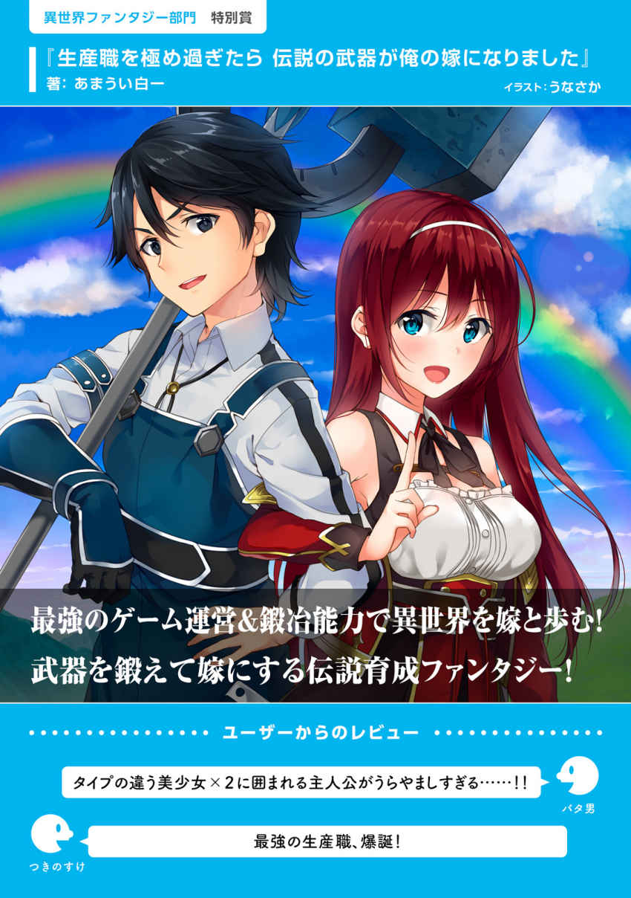
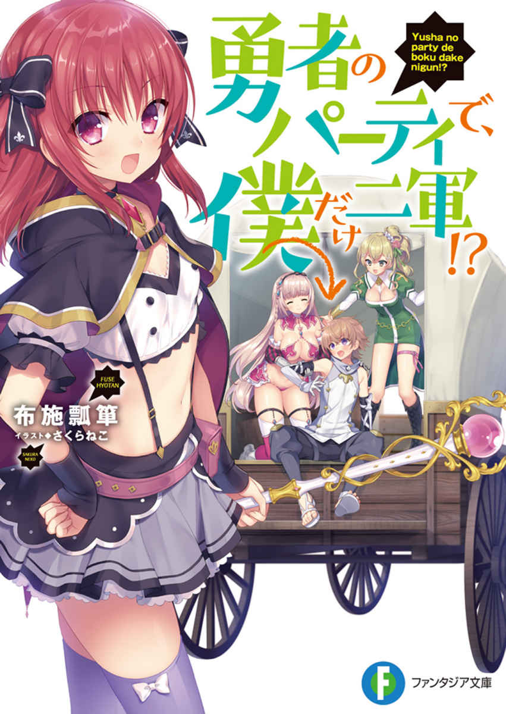

| カクヨムマガジン VOL.3 第2回カクヨムWeb小説コンテスト特集 | |
| クオンタム & ロッキン神経痛 & 渡葉 たびびと & 在原 小与 | |
| KADOKAWA (2017) | |
カクヨムマガジン
VOL.3
第2回カクヨムWeb小説コンテスト特集
クオンタム／ロッキン神経痛／渡葉たびびと／在原小与／カクヨム編集部 編

カクヨム
本作品の全部または一部を無断で複製、転載、配信、送信すること、あるいはウェブサイトへの転載等を禁止します。また、本作品の内容を無断で改変、改ざん等を行うことも禁止します。
本作品購入時にご承諾いただいた規約により、有償・無償にかかわらず本作品を第三者に譲渡することはできません。
本作品を示すサムネイルなどのイメージ画像は、再ダウンロード時に予告なく変更される場合があります。
本作品の内容は、底本発行時の取材・執筆内容にもとづきます。
本作品は縦書きでレイアウトされています。
また、ご覧になるリーディングシステムにより、表示の差が認められることがあります。
本試し読み冊子には、第２回カクヨムＷｅｂ小説コンテストの大賞・特別賞受賞作を掲載しています。
第２回カクヨムＷｅｂ小説コンテストは、Ｗｅｂ小説サイト「カクヨム」にて、二〇一六年一二月から二〇一七年二月にかけて、七部門で作品の募集をしました。
総応募数二六九〇作品、その中から選ばれた大賞四作品、特別賞九作品をお届けします。
いずれ劣らぬ、面白さ保証付きの珠玉の作品を、ぜひ体感してみてください！
カクヨム編集部
カクヨムとは？
株式会社ＫＡＤＯＫＡＷＡと株式会社はてなが共同で開発するＷｅｂ小説サイトです。
「自由に物語を書ける、読める、そして多様な小説が評価される場所を作る」ことを理念とし、以下の「三つのできること」を掲げています。
①誰でも思いのまま小説が書けます。
作者がストレスを感じることなく執筆・公開ができる投稿フォームをご用意しています。
②いつでも好きな時間・場所で小説が読めます。
読みやすいインターフェイスで、ＰＣ版はもちろんスマホ等のアプリ版も公開しています。
③あなたの「面白い」を伝えられます。
読んだ小説の感想を書き、他の人にオススメできる機能に特に力を入れています。
是非ともサイトに訪れて多くの作品に出会ってください。そして「面白い」を感じたら、その思いを作者や多くの人に伝えてみてください。また創作意欲が湧いたら作品を投稿し、表現者となってください。カクヨムは読書、おすすめ、創作体験ができるサイトです。

https://kakuyomu.jp/
目次
《異世界ファンタジー部門 大賞》
《ホラー部門 大賞》
《現代ファンタジー部門 大賞》
《異世界ファンタジー部門 特別賞》
生産職を極め過ぎたら 伝説の武器が俺の嫁になりました 著＝あまうい白一
《ホラー部門 特別賞》
《恋愛部門 大賞》
《恋愛部門 特別賞》
◆ユーザーからのレビュー（続き）◆
「勇者と魔王」──王道で、ありふれていて、そして、それだけに地力が試されるジャンル。目の肥えた読者にごまかしは一切、効かない。
本作は社会人ハウツーな主人公ＴＵＥＥＥＥ！ と、勇者的な意味での主人公ＴＵＥＥＥＥ！ が両立されており、かつ、各話が「ええっ！ これからどうするの？」「ええっ！ これどうなるの？」「ええっ！ 今のどうやったの？」というフックを抜け目なく仕込み、間断なく読者を気持ち良くさせる手腕に満ちている。
邪悪だ。カロリー豊富でかつ複雑多彩な味わいを持つガトーショコラのように邪悪だ！ 太ると分かっているのにやめられないとまらない！ 人間の胃が砂糖と脂と塩を求めるように、ヒトの脳が求める快楽を供給してきやがる！ こいつこそ、この作者クオンタム様こそラノベの大魔王よォ──ッ!! （富士普楽）
世界の半分を壊滅し、もう半分の世界から追放された男。この世で一番扱いづらいと思われていた男は、実はとんでもないやり手だった──。
こんな上司がほしい、思わず惚れてしまいそうな勇者がここにいます。（誠澄セイル）
◆ユーザーからのレビュー（続き）◆
タイトル見て限界集落とゾンビの組み合わせに面白そうと興味を持ち、読み進めると内容が重厚で読む手が止まらなかった。
ゾンビモノの中では定番であるウイルス感染でのゾンビ化ではなく死んだら誰しも例外なく留人 化という感じ。
留人の集団が来ても奮戦する爺達の活躍はただただカッコいいとしか言えない。
タイトルに興味を持たれた方読む事をオススメ致します。（Nana4nononbe）
ゾンビの出てくる小説で感動する......なんて、今まで考えたこともありませんでした。
人々の暮らしの中に、日ごろから存在する動き回り毒をまき散らす死者、『留人』。
それを正常な死者に戻す仕事を生業にしている老漢、恐山。
彼が暮らす限界集落を脅かす、脈絡もなく現れた留人の群れ。
恐怖と覚悟に彩られた戦いが始まります。
限界集落に暮らす人々の様子を物寂しくも生き生きと描き出しています。
寂しさと人々の息遣いが迫ってくる筆致には、感動を覚えずにはいられません。（栄織丞）
◆ユーザーからのレビュー（続き）◆
最高＆最高。格闘ゲームが好きなら絶対楽しめる。
各々の信念でただひたすら勝利を追い求めるというキャラクター達のその信念に根付いた強さがあるのは、物語というよりは格闘ゲームに近い魅力がある。
誰が勝っても納得出来る、そんな攻防がしっかりと描かれている。（m-youya）
これは小説ではない。週刊連載少年漫画だ。
ボーイミーツガールの王道、戦う楽しさという純粋なテーマ、ＶＲという題材、魅力的な数々のキャラクター。素晴らしい点はたくさんあるが、あえてこの表現技法について取り上げてオススメしたい。
毎話読者を楽しませてくれる展開、次回へと興味を煽る強烈なヒキ、わかりやすさを意識した文章表現......。まるで目を閉じればそこにコマ割や吹き出し、見開きのページ構成が見えるようだ。
重ねて言うが、これは小説という枠に収まりきれる物ではない。新たな可能性を内包した、パラダイムシフトを引き起こしかねない挑戦的意欲作と言えるだろう。
登場人物達の、そしてこの作品自体の行く末を是非見届けて欲しい。（滝口流）

◆ユーザーからのレビュー（続き）◆
ゲーム運営チームでデバッカーの仕事をしていた主人公が、異世界へ飛ばされる。
飛ばされた先で出会った美少女レインがとにかくかわいい！
中盤から出てくるもう一人の美少女もタイプの違うかわいさで、二人に全力で慕われる主人公がとにかくうらやましい。
鍛冶師としての見せ場もあって、これから世界がどう広がっていくのかますます楽しみな一作。
さらなる美少女の登場にも期待!! （バタ男）
生産職という言葉の地味なイメージを鮮やかに裏切る、能力＆戦闘力も十分な美形主人公。
美少女な伝説の武器と主人公の会話ににやにや。
戦闘シーンでの活躍っぷりに、読めば読むほど爽快感しかない。
ストレスフリーに物語世界に没頭できます。（つきのすけ）
◆ユーザーからのレビュー（続き）◆
タイトル通りヒロイン登場以降は、毎回ヒロインとイチャイチャしながら、頭のいい主人公が、異世界転生した世界で色々とやらかしていくお話。
外道のようでありながら身内には割と甘い主人公、娼婦だったけど実はその正体に大きな秘密のあった現嫁、この世界に転生してきた元恋人、龍の魂を祖体とした中二病混じりのアンドロイド達、お節介が変態クラスとなった受付嬢ｅｔｃ、といった魅力的なキャラクター達、読みやすい話のテンポ、テンプレート的でありながらどこか深みのありそうな世界観。そんなところが魅力の作品だと思います。（ソードファン）
天才が主人公というだけあって、様々なシーンで天才的頭脳を発揮して油断してた相手を倒すという読者にとってはスカッとする描写や、嫁やその他の個性的な仲間達との掛け合いが面白く、見飽きることなく最初から最後までぶっ続けで読めました。
主人公の境遇は羨ましいはずなんですが、理不尽と呼ぶにふさわしい仕打ちには、同情します（笑）
そして最後の数話は主人公マジで格好良かったです。（とみふぅ）
◆ユーザーからのレビュー（続き）◆
嘗て共に戦った英雄の娘として生まれ変わった元英雄。
もうこの時点で気まずい事この上なし。そして色々な意味で苦労するだろうなという未来しか見えません（笑）
けれども彼は娘になっても、己の未来の為に切磋琢磨を繰り返して力を付け、時には友人達の力を借りて少しずつ成長していく。
転生の気まずさを描いたコメディっぽさもあれば、シリアスもあるので飽きずに読めて楽しめる異世界ファンタジー小説です。（黒蛹）
無双チートかと思えば、いやはや凄く斜め上の転生物で面白いです♪
肉体年齢と、精神年齢が合わさっておらず。
制限付きの中での、主人公の活躍が楽しいです♪（ソル）
◆ユーザーからのレビュー（続き）◆
温泉宿という舞台装置の中で様式美とも言える美しい流れが我々の荒んだ日常を洗い攫ってくれるかのような清涼感。
可愛いけどイカれたヒロイン共。
最高です。
もう、何を書いているのか自分でもわかりませんが、これが一番のホラーだと言えますね。はい。（相良壱）
主人公を除いて、どいつもこいつも人外さん。飛驒山からはわんさか溢れる。
平穏無事など当然皆無。
血を狙う吸血少女に、童貞を狙う猫娘。
体バラバラな女将さんに、温泉宿運営投げっぱなしの親父さん。
あっちにこっちに腕を引かれる主人公の胃は鋼鉄のごとし。
ハーレムだって楽じゃない、喜劇なホラーの幕開けです！
そしてラストは衝撃もの......!?
唯一の癒しである骸骨君を見ながら、ぜひ読んでみてください。（とみふぅ）
◆ユーザーからのレビュー（続き）◆
主人公はとてつもなく強いが最強ではない。これからどこまで肉体的にも精神的にも強くなっていくのか楽しみです。
しかしそれよりも、師匠である英雄達の日常のダラダラ感と真面目モードになったときの格好の良さのギャップが堪らなく好きです。（slimebess）
異世界に迷い込んだ主人公が、人外の強さを持つ人たちに鍛えられて（無自覚に）強くなり、旅をする物語。
主人公が最強じゃないからこそ生まれる物語の深みにどっぷりのめりこめる。
いまカクヨムで１番更新を楽しみにしてる作品。（精力善用国民体育の型）
◆ユーザーからのレビュー（続き）◆
だんだん強くなっていくごとに、いい感じに勢力が拡大していってよかったです。このまま眷属で治安維持や各国の均衡を保っていくなど、どんどん活躍していって欲しいです。応援してます。（＊くらむちゃうだぁー＊）
年を取った主人公が若返りを経てもう一度挑戦するという点がこの作品のいいところだと思います。
もう一度だけ頑張ろうとしている主人公が成長していく姿がとても爽快で面白く、今後どのように成長していくのか楽しみです。今後も心地が良い作風を保って行くことに期待大です。（くろい）
◆ユーザーからのレビュー（続き）◆
中華風ファンタジーということでわくわくしながら拝見しました。
序盤はふんふんなるほど～といった感じで流れるように読んでいたのですが、18 話あたりの展開にぐぐっと心を摑まれてしまい、一気に最後の更新分まで読んでしまいました。
今後の展開がどうなるのかとても楽しみな作品です。（黒羽紫乃）
まだ少女のような雪に振り回される皇子風との恋の予感も気になりますが、雪とリリィの会話が展開が進むごとに面白くて。情景が思わず浮かんできてとても楽しませてもらってます。（クッキー）

◆ユーザーからのレビュー（続き）◆
シスコン＋お人好しすぎの苦労症の王子様が主人公。
女顔で小さくってカワイイ王子様ですが、最強の妹姫の手のひらでコロコロと転がりながらも、ここぞというところで凄くかっこいい。
その無自覚人誑しぶりに、バッタバッタと人が落ちていくのが快感ですよ！
カワイイ王子様の恋と冒険をご堪能あれ!! （山本 風碧）
コミカルにテンポよく進んでいくお話は、いつの間にか時間を忘れて読み耽ってしまうこと請け合いです。
アドルを取り巻くキャラクターのひとりひとりも、個性豊か。
彼に忠誠を誓う美貌の騎士に、これまたヘタレなリノルアースの子犬系騎士、女好きのクズと評判のアルシザス王。
おバカなやりとりをしつつも、時折その生まれや立場から切なさを滲ませるキャラクターたちの恋模様を思わず応援したくなってしまいます。
だれかがだれかを想いあう、いとおしくやさしい物語。ぜひ、ご一読を。（雨谷結子）
◆ユーザーからのレビュー（続き）◆
新米ちゃんがどんどん成長していく過程は、見ていてどきどき、わくわくさせられました。
そして感動の日記の締めくくり方。
これは必見ですよ。
家を飛び出して、新米の冒険者となった女の子の日記。
赤蜥蜴皮の日記帳（銀貨一枚という新米には高級な品！）に書かれた、ついついほっとけなくなるような新米冒険者ちゃんの日記は、ちょっと心配にもなりますが、それだけにはらはらしてつい次へ次へと読み進めたくなります。
最初のうちの、所持金がどんどんなくなっていくはらはら感といったら、そんじょそこらの『壮大な英雄譚』よりもよっぽど手に汗握ります。
冒険者についての（おもに世知辛い）あれこれなどが描写されていて、なかなかに（世知辛い的な意味で）リアルなこの世界。
あなたもこの子の日記を読んでみませんか？（冬村蜜柑）
なんでしょう幼い頃に好きだったファンタジーの空気です。
癒される空気感なんですが決してぬるいというわけでないのも良いです。かなりな修羅場も潜り抜けます。それでもぬるく見えるのは主人公の人徳のなせるわざでしょう、出て来る人たちみんな優しい。
登場人物・世界観・小説の形態いずれも魅力的、一話ごとの長さも読みやすいオススメ作品です。（dice0914）
異世界ファンタジー部門 大賞
勇者、辞めます ～次の職場は魔王城～
クオンタム
本原稿は、カクヨム版を収録しています。製品版とは異なる可能性があります。あらかじめ、ご了承ください。
第一話：いいから俺を採用しろ
一－一．勇者、採用面接を受ける
コン、コン、コン、コン。
丁寧にノックを四回。
『どうぞ』という声を待ってから、赤く分厚い鉄扉を開ける。
......内定を取るぞ。
内定を取る。絶対に内定を取ってみせる。
俺にはもう、ここしか行き場がないのだ！
気合いを入れて前を向き、ぐいと扉を押す。
面接室の......王の間のひんやりとした空気が俺の頰を撫でた。
王の間は相変わらず広々としており、ひどく殺風景で、寒々しかった。
ビリビリに破けた赤い絨毯。
完膚なきまでに粉砕されたフルプレートアーマーの残骸。
床や壁をはじめ、あちこちに魔王と勇者の戦闘によって刻まれた破壊痕が残っており、それらは特に修繕される様子もなく完全に放置されている。
そんな王の間の深奥で待ち受けるのは、玉座に悠然と腰掛けた真紅のドレスの少女。
魔界の覇者、爆炎の女帝──魔王エキドナ。
彼女の両脇を固めるのは、四人の側近。エキドナ直属の四天王達だ。
全員の視線が俺に集中した。
俺は彼らに深く一礼すると、《正体隠蔽 》の呪文をかけておいたローブを脱ぎ捨て、素顔を晒す。エキドナが驚愕の表情を浮かべ、玉座から腰を浮かせるのが見えた。
驚くのも無理はない。なにせ、彼女と俺はついこの間まで血みどろの殺し合いをしていたのだから。
殺るか殺られるかの真剣一本勝負──勝ったのは勇者。つまり、俺だ。
一言には言い表せない複雑な想いが、俺とエキドナの間に渦巻いている。
だが、過去の事は忘れよう。戦争は終わった。今は未来を見据える時だ。
人と魔族で手と手を取り合い、希望に満ちた明日へと踏み出す時だ。
エキドナだって馬鹿じゃない。今の魔王軍が深刻な人手不足に陥っているのは彼女が一番わかっているはずだ。たとえ相手が誰だろうと──そう、たとえ憎き勇者が相手でも、とりあえず話くらいは聞いてくれるはずだ。
俺は履歴書をテーブルに置くと、道すがら熟読した『必勝！ 就職面接マニュアル』に書いてあった通りに自己アピールを行った。
言葉はできるだけはっきりと。
経歴は包み隠さず。
胸を張って堂々と、自分に出来る事を伝える。
「元・勇者、レオ＝デモンハート！
特技は剣術、黒魔術、精霊魔術、神聖魔術、その他全般！
一対一で魔王エキドナを打ち倒した実績あり。即戦力として活躍可能！」
『打ち倒した実績あり』のあたりでエキドナの額に青筋が立った気がしたが、まあ気のせいだろう。事実は事実として伝えましょう、とマニュアルにも書いてあったし。
志望動機は......ううむ、多少脚色してもいいか。
面接で噓をつくなんて、今時みんなやっている事だ。大きく息を吸い、志望動機を口にする。
「愚かな人間どもを滅ぼし、魔族の千年王国を作るため、
新生魔王軍への入団を希望する！」
静寂が訪れた。
春のやわらかな日差しが大広間の窓から差し込み、外をツバメが飛んでいった。
自己アピールが終えた俺は堂々と胸を張り、面接官──魔王と四天王──の反応を待っている。
四天王どもはピクリとも動かない。誰も彼も、どうするべきか困惑しているようだった。
では彼らのあるじ、魔王エキドナ本人はどうだろうか？
......うむ、かなりの好感触を与えられたようだ！
心強い助っ人が来てくれた事に感動したのか、エキドナは先程から顔を伏せ、一言も発さず、ふるふると肩を震わせている。
一分近くが経過しただろうか。
ようやくエキドナが立ち上がり、こちらに向けて手をかざした。
そして、
「──── 不採用に決まっとろうがボケェェ！」
怒号と共に放たれた爆炎によって、視界が赤く染まった。
一－二．勇者、志望動機について説明する
遡ること、すこし前の話だ。
選ばれし勇者として聖都レナイェを旅立った俺は、魔界より人間界に攻め込んできた魔王エキドナを打ち倒し、世に平和をもたらした。
諸事情あって一人旅を強いられた俺ではあったが、戦いにおいてはさほど苦労しなかった。
なにせ俺は強い。生まれつき女神ティアナの祝福を受けているから傷はすぐに治るし、王国騎士が束になってもかなわない剣の腕前を持っている。
黒魔術、精霊魔術、神聖魔術のすべてに精通し、魔術師としても聖職者としても超一流。ほか、錬金術師 ギルドや野伏 ギルドで頭目を張れるだけの知識もある。
こうなると、その......ぶっちゃけ、仲間とか邪魔だ。
いや強がりとかではなく、本当に邪魔でしかない。足手まといの仲間と信頼関係だの何だのを築いているあいだに、俺一人で戦っちゃったほうが絶対に早い。
「──貴公、そういう性格だから一人旅だったのでは？」
「うるせえよ」
とにかくそんな感じで一人旅をしていたら、あれよあれよという間に魔王軍四天王を倒してしまった。
最初に戦ったのが《赤い咆哮》竜将軍エドヴァルト。武人肌のおっさんで、純粋なスペックだとこいつが一番手ごわかった気がする。
空は飛ぶし、炎は吐くし、なによりも竜人特有の竜鱗 がバカみたいに硬い。剣一本で戦ったら間違いなく手首を痛めていただろう。魔術に精通していてよかったと思う瞬間だった。
というか、その魔術も竜鱗 で8 割近くダメージをカットされるのだからたまったもんじゃない。あんた、四天王やめて魔王になれるよ。本当に。
「かわいそうだよね。一緒に旅をする友人の一人もいないなんて」
「お前にだけは言われたくねえな......」
二番手は《見えざる刃》無影将軍メルネス。
とにかく面倒くさい、陰気なガキだった。もともとは暗殺 ギルドで飼われていた半人半魔の天才少年という触れ込みで、実際、気配を断つ力とスピードは圧倒的だった。その速さたるや、この俺ですら目で追うのが困難だったほどだ。
目で追えなかったので、最終的には術者ごと 周囲一帯を吹き飛ばす禁呪、《天魔炎獄球 》でケリをつけてやったのだが、おかげで俺もあちこち火傷して苦しい思いをした。
しかも余波で何かしらの文化的遺産をブッ壊してしまったのか、助けてやった町の連中に莫大な損害賠償を請求された。これでも気を遣って一般人に死者は出さなかったというのに、なんて図々しい奴らだ。
もう二度と町中で禁呪は使うまい。そう心に誓った瞬間だった。
損害賠償は払わずに逃げた。
三番手。《無慈悲の牙》獣将軍リリ。
西方大陸の奥地に住み、あらゆる獣と心を通わせ、凶悪な獣に変身する力を持つ恐るべき疑 似 獣人だ。
結論から先に述べると、こいつとは戦うべきではなかった。
「あたし！ あたしの話？」
「お前の話だから、ちょっと静かにしてくれ」
「あい！」
実に馬鹿馬鹿しい出会いだった。
無影将軍メルネスを倒し次の町へ向かう最中、記憶喪失になってフラフラしてたガキンチョと出会ったものだから、仕方なく保護してやった。
そうしたらえらく懐いてしまったので、そのまま──仕方なく──いくつかの事件を一緒に解決した。
で、いざ記憶が戻ってみたら、他でもないそのガキが魔王軍四天王のひとり・獣将軍のリリだったというオチだ。
見捨てればよかった。本当に、心の底からそう思う。
「あたしの話だー！」
「静かにしてくれ」
「んい！」
サクッと倒して悪さをやめさせたまでは良かったが、これがまずかった。だいぶまずかった。こいつの部族にとって、強い異性に倒される というのは運命の出会いを意味するからだ。それを知った時には既に手遅れだった。
つまりなんというか......気に入られてしまって、困る......
「にいちゃん！ あたしと結婚しよ！ ね！」
「静かにしてくれ」
「ねえってば！」
最後の《全能なる魔》魔将軍シュティーナ。こいつだけは笑えるくらい楽勝だった。
淫魔 の中でも飛び抜けて高い魔力を誇り、古代の禁呪も含めたあらゆる呪文 を極めた──という噂だったので、こちらも敵味方問わずあらゆる呪文 を封印する古代呪文、《封魔十二結界 》を使って強制肉弾戦を挑んでみた。
あらゆる呪文を封印された魔将軍は、俺自身もちょっとヒくレベルで弱かった。
２分ほどボコったら泣きを入れてきた。情けないやつだ。
「──わたしは魔術師ですよ！ 肉弾戦で勇者に勝てるわけがないでしょう！」
「いや、それをなんとかするのがプロだろ......」
「出会い頭に！ 私の防護呪文とか全部無視して！ いきなり全呪文封じてくるやつがどこの世界に居るんですか！」
「いるだろ！ ここに！」
口喧嘩をしても仕方がないので、話を進める。
といっても、そのあとは知っての通りだ。
俺......勇者レオ・デモンハートは魔王エキドナを倒し、世に平和が訪れた。
ボロボロになった魔王軍残党はセシャト山脈の奥地においやられ、もはや脅威とは見なされなくなっていた。
「──ここまではいいよな？」
「いいですけど」
テーブルの向かい。
紅茶を一口啜り、魔将軍シュティーナが憮然とした顔で返答した。
エドヴァルト、メルネス、リリもめいめい卓に着き、俺の話を聞いている。
勇者と四天王が一堂に会して仲良くお茶を飲むという、あまりにもシュールな光景が展開されていた。
ここは魔王城の離れ、貴賓室にあたる部屋だ。
面接開始10 秒で魔王エキドナに強制退場を喰らった俺は、これはいかん と副面接官の四天王どもを捕まえ、説得し、なだめ伏せ、なんとかこうして二次──二次？面接に持ち込んだのだった。
もちろんエキドナには内緒だ。俺が未だに城内をうろついている事をあいつが知ったが最後、烈火の如く怒り狂い、それこそ城ごと焼き払う勢いで俺を殺しにやってくるのは間違いない。
心の狭い事だ。俺があいつにやった事といえば、ちょっとお灸を据えるつもりで魔力を吸い取り、垢抜けない少女の姿に変え、当分のあいだ元のスタイル抜群の美女の姿には戻れないようにしてやっただけだというのに。
「私が聞いたのは、なぜ勇者の貴方が、新生魔王軍の採用面接に応募してきたのか......という事です」
長い金髪を神経質に弄りながらシュティーナが口を尖らせた。
「我ら四天王をどうやって倒したとか、そんな思い出話をする必要はないはずです。ないはずですよね、どこにも」
「本題に入る前に俺の強さ を思い出してほしかったんだよ。あとほら......他の四天王がどうやって倒されたか？ って、やっぱちょっとは興味あっただろ？」
並べ立てた理由の半分は本当だ。
採用面接には流れ というものがある。話し方次第で薄っぺらいアピールが真摯な訴えに化ける事もあれば、その逆、話し方が下手だったばかりに能力のある奴があっさり落とされたりする。
このあとに控える志望動機アピールにたしかな説得力を持たせるためにも、こいつらに俺の強さをもう一度思い出してもらう必要があった。
会話の流れを支配する。それが内定を摑み取る一番の近道なのだ。
なお、思い出話をしたもう半分の理由は──正直に言おう。シュティーナの無様な負けっぷりをおおいに吹聴したかった。それだけだ。
他の三人も気になっていたところではあったのか、口々に同意を示してくれた。
「気がついたら全員やられてたしね」
「うむ......」
「気になってたー」
「それにしても、シュティーナのやられ方は予想以上に無様だったね」
「うむ......」
「かわいそうー」
視界の端で、無様な負け方を晒した魔将軍シュティーナ様の顔が赤 茄 子 のように真っ赤になるのが見えた。
いやあ、本当にストレートな反応をしてくれるやつだ。淫魔ってもう少しこう......人を弄ぶというか、頭がいいんじゃなかったっけ？ それとも自分が弄ばれるのには弱かったりするのか？
何かしら気の利いたフォローを入れてやろうかと思ったが、その前に怒りの咆哮が飛んできた。
「......本題に入りなさい！」
バン、とテーブルを両手で叩き、シュティーナがわめきたてる。
注ぎたての紅茶がこぼれ、テーブルクロスに茶色い染みを作った。
「あなたは！ どうして！ 魔王軍に入ろうと思ったのですか！」
四人ぶんの視線が集中した。
もう少しこいつをからかって遊ぶのもよかったが、それで内定を逃すのも馬鹿馬鹿しい。
俺はチマチマかじっていたクッキーを一息に飲み込み、執拗に膝の上に乗っかろうとしてくるリリを引き剝がすと、椅子に深く座り直した。
そして、志望動機について詳しく話す事にした。
かつてたったひとりで魔王軍に挑んだ俺が、
何故いまさらこちら側に肩入れしようとしているのか。そのワケを。
一－三．勇者、志望動機について更に詳しく説明する
世界を救った勇者が、なぜ魔王軍に入ろうとするのか──
くだらない。いざ話してしまえば本当にくだらない話だ。
しかし説明しないわけにもいかないので、ありのままを話す事にした。
──１年ちょっとの旅の末、勇者レオ・デモンハートは魔王エキドナを倒した。
そうしてふたたび聖都レナイェに戻った俺を出迎えたのは、民衆の歓喜の声でもなければ、王からの莫大な褒美でもなかった。
俺に向けられるのはただひとつ。
奇異と、畏怖と、猜疑心が入り混じった視線。それだけだった。
『魔王より強い怪物がいる』
『人の姿をしたバケモノがいる』
『そんな奴が我々に牙を剝いたらどうしよう』
『誰も勝てない』
『どうしようもない』
『──── そうなる前に、勇者を殺せ！』
......次の魔王は俺。
つまるところ、人間たちの多くがそう思ってしまったわけだ。それを証明するかのように、俺を狙った暗殺者共がわんさか送り込まれてきた。
正直言ってアホくさいにも程がある。
頼むから、ちょっとでも頭を働かせて考えてみてほしい。
俺が旅立つ前、魔王軍は世界の半分以上を支配下に置いていた。つまり、世界中の軍隊・世界中の戦力をかき集めても魔王軍と拮抗するのがやっとだったのだ。
その魔王軍をたった一人で殲滅した俺を！
いまさら、どこの誰が！ どうやって殺すというのか！
そもそも俺が倒した四天王の一人は暗殺者 ギルドの秘蔵っ子だったんだぞ。
気づけ！ 凡百の暗殺者を何人送り込んでも無駄だと気づけ！
......いや、無駄だと気づいた賢い奴らもいたな。
そいつらは暗殺者ではなく、野盗に変装させた聖騎士団を送り込んできた。
そういう意味じゃねーよ。ここまでくるともう呆れて何も言えない。
勇者を殺すの、無理です。
こんなの３歳の子供にだって分かる理屈だ。
ならば、多少思うところがあっても心に秘めた方がマシだ。
レオを英雄として担ぎ上げ、機嫌を取っておこうじゃないか。
少なくとも、彼は一度世界を救ってくれたのだから。めったな事がない限り人類に牙をむく事はないだろう。
俺としては世論がそっち方面に傾いてくれるのを期待していたのだが、無駄だった。一度火がついた恐怖と不安は誰にも止められず、とうとう聖都の聖王みずから俺に対する国外退去が命ぜられる事となった。
王は表向き俺に同情してくれているようだったが、目の奥に民衆と同じ猜疑の色が宿っているのを俺は見逃さなかった。
国外退去と言っても、俺はもともと根無し草だから、どこへ帰るわけでもない。
あてもなくフラフラと彷徨う日々。そのうちに胸に湧いてきたのは、怒りだった。
身勝手な人間たちへの怒り。
なんでこんな奴らのために戦ったんだという、自分への怒り。
バカな人間をもうちょい減らしとけよお前らという、ふがいない魔王軍への怒り。
〝制御できない土人形 はあぶない〟というのは東方に伝わる諺 だが、勇者レオ・デモンハートはまさに制御不能の暴走ゴーレムと化していた。
それも世界を滅ぼす力を持っている激ヤバゴーレムだ。
そしてついに、怒れるゴーレムは二つの海と七つの山を越え、かつての敵・魔王エキドナの城を訪ね、そこそこ腕が立ちそうな上級魔族のフリをして新生魔王軍の採用面接（中途枠）に潜り込んだのでした。
世界が俺を殺そうとするなら、その前に俺が世界を殺してやる。
「──以上が、この俺の志望動機だ」
「うっ、うおうっ、ゔゔゔ～」
すっかり冷めてしまった紅茶を流し込み、喉を潤す。
人間の愚かさここに極まれり。
話を聞き終わった四天王たちはすっかり静まり返っていた。
いつのまにか俺の隣に椅子を引っ張ってきたリリだけが、奇妙な呻き声──いや泣き声だ──泣き声かこれ？ をあげていた。
一－四．勇者、おためし採用される
試用期間という制度がある。
もとは港町ラベルタの商人ギルドが考案したもので、新しい職員を本格採用する前に一月から数ヶ月間ほどの期間、仮採用を行う制度だ。
これの良いところは、雇う側と雇われる側の双方にメリットがあるところだ。
雇う側は、相手が使えるやつなのかどうかを見極める事ができる。雇われる側は、実際に働いてみなければ分からない職場の雰囲気や文化を肌で味わう事ができる。
実際のところ、世の中には『やってみないと分からない事』が非常に多い。
戦いと同じだ。１の実戦は１００の座学に勝ると言われるように、相手の人となりを把握するには肩を並べて戦ってみるのが一番手っ取り早い。
お互いに相性を見極めるためのおためし期間 。
それが試用期間であり、試験採用だ。
----
「......いいでしょう」
ふう、と長いため息をつき、魔将軍シュティーナが口を開いた。
人差し指を唇にあて、しばし思案した後、しぶしぶと言った体で言葉を続ける。
「世界を救ったにも関わらず、人間たちに裏切られた哀れな勇者よ。
仕えるべき相手、守るべき相手を見誤った悲しき男よ。
貴方の志望動機に噓偽りは無いと信じます」
「ありがとう。魔将軍シュティーナ」
本心でお礼を言った。
正直言って人間どもの身勝手さにはうんざりしていたし、野宿してあちこち虫刺されを作るのも嫌気が差していたところだったからだ。
その点、魔王軍に入れば最低限の食い物は確保できるし、屋根のあるところで寝られるし、連日のように俺を殺しにやってくる刺客をあしらう必要もない。
刺客のかわりに俺に恨みを持つ旧魔王軍の生き残りが命を狙ってくるかもしれないが、まあ、その時はその時だ。なんとかして平和的な解決方法を模索するとしよう。
怨恨についてはシュティーナも同じ懸念を抱いていたのか、しつこく念を押してきた。
「当面の間はエキドナ様には内緒ですよ。魔術でも魔道具 でもなんでもいいから、正体をしっかり隠す事。あなたに恨みがある者も、少しは残ってるんですから」
「少し、か」
「......少しですね」
本当に少ししか残っていないのだろうな、と思った。
なにせ今の魔王軍は──主に俺が暴れまわったせいで──ガタガタだ。人員は歯抜けで、田舎の国境警備隊みたいな規模にまで落ち込んでおり、組織としてはまるで機能していない。人員の増強が目下の最優先課題と言えるだろう。
ことわっておくが、別に俺は魔王軍兵士をかたっぱしからブチ殺していったわけではない。《天魔炎獄球 》のような広域殲滅呪文を使ったのは、それこそ魔王や四天王クラスを相手取った時くらいだ。
なにせ、相手は無駄な殺しを極力控えて侵略を進めていったエキドナ軍だ。虐殺は虐殺を呼び、怨恨を更なる怨恨を呼ぶ──魔王軍が平和的に動いているなら、こちらも平和的に動くしかなかったという、それだけの話である。
《誘惑術 》を使って部隊の内部崩壊を狙ったり、《虚脱呪 》で体調を悪化させたところをふん縛って牢屋に叩き込んだり、余計な禍根を残さないよう色々と工夫してきたのだ。
それだけ手間暇かけて頑張っても、やはり限度というものはある。俺に恨みを抱いている者だって当然いるだろう。
正体がバレないよう仕事の時は顔を隠せ──というシュティーナの指摘は、しごく当然の話であった。
そう、仕事。仕事だ！
採用面接をはじめとする仕事はエキドナと四天王がやるのだから、とうぶんの間、魔王軍が人間界へちょっかいを出す事はないはずだ。俺がやるべき仕事もそんなに多くはないだろう。
食べて、寝て、遊んで、ダラダラできる。魔王軍は俺にとって理想の職場になりそうだった。
「あと、これはあくまで一ヶ月間のお試し採用 です！
この試用期間で然るべき成果を出して貰いますからね！」
──訂正する。
理想の職場になるはずだった。流石にダラダラ遊んで暮らすのは無理か。
「......まさか、しばらくは遊んで暮らせそうだとか、
そんなふざけた事を考えてたのではないでしょうね」
「まさか！ とんでもない！」
「......はあ」
両手を振って否定する。
深い溜め息をつき、シュティーナは俺に言い聞かせるような口調になった。
「あなたの為でもあるのですよ。この試用期間で成果を出せたなら、わたしたち四天王が魔王さまにあなたの正式採用を進言してあげましょう」
「なるほど。逆に、成果が出せなかった場合は──？」
「追い出します」
ぴしゃりと言われてしまった。
そりゃそうだ。ただでさえ財政が逼迫しているところにごくつぶしを雇っておく理由など、どこにもない。しごくまっとうな理屈だった。
「わかってるよ、仕事はする。追い出されて野宿生活に戻るのはゴメンだからな......まずは魔王軍を立て直すのが急務だ。そうだろ？」
「ええ。兵力の増強、城の修復、武具の調達、経費削減に福利厚生の充実。
再起不能直前まで追い込まれた軍団を再編成するのって大変なんですよ。ほんとに」
まあそうだろうな。だって再起不能直前まで追い込んだの、俺だし......
怪我を癒やすため魔界へ帰った奴、まだ人間たちに捕まってる奴、戦うのが嫌で逃げ出した奴。理由はどうあれ、一度去っていった者を再び軍団へ呼び戻すのは極めて難しい。一文無しから大富豪になるのが困難であるように、ゼロに近い状態からふたたび大軍団を結成するのは、それこそ茨の道どころではない険しさだろうと思えた。
そんなだから、むしろ俺はエキドナに聞いてみたかったのだ。
そんなだから、むしろ俺はエキドナに聞いてみたかったのだ。
『なんでここまで追い込まれても人間界から撤退しないのですか？』
『なんか理由があるんですか？』
と。
人間界に居場所が無くなったのも理由の一つではあるのだが、俺が今回魔王軍へ入ろうと思った一番の理由は、正直言うとこれ──『エキドナと話してみたい』だった。
今回の面接ではエキドナと話すどころではなかったが、正規採用された暁にはチャンスもあるだろう。一度じっくり話をしてみたいものだ。
「──他にも魔力炉のメンテナンスとか新兵の教育とか......ちょっとレオ、聞いてますか？」
「おっと。聞いてる聞いてる」
「シュティーナだけじゃないよー！ あたしもね、あたしもね、大変なの！」
物思いを中断して現実に戻る。先程からずっと話し続けていたシュティーナが口を尖らせた。リリも思うところがあったのか、バネじかけの人形のように椅子からぴょんと飛び起き、尻尾をぶんぶんと振りながら自分の仕事の大変さをアピールしてくる。
「最近ね、ヘイ......ヘイタン？ を任されたけど、大変なの！
仕事、いーっぱいあるんだよ！」
「正気か」
思わず本音が口をついて出た。このバカ娘が兵站担当？
上司──エキドナ──の正気を疑う。あいつ、ストレスでとうとう頭がどうにかなってしまったんだろうか。心配だ。すごく心配だ。
他の四天王の方に目を向けると、シュティーナとエドヴァルトが気まずげに顔を背けた。メルネスは我関せずといった風で卓上の籠に入っていたリンゴの皮を剝いている。
......無理もない。エドヴァルトのおっさんは武闘派だから、コボルトやオークといった肉体派の兵士を鍛えて一人前の戦力にするのが主な役割なのだろう。
採用面接に来た奴の中には少数ながら竜族 も混ざっていた。あいつらは戦闘力と同じくらいプライドも高いから、そこらへんを抑えられるのも竜人族のエドヴァルトだけのはず。
練度の低い兵を育てるのは結構な労力だから、そこに加えて兵站の面倒を見る余裕などまず無いはずだ。
シュティーナはその反対。魔族はもちろん、妖精族 や幻想種といった魔力の高い亜人・魔獣を束ね、魔術兵団を組織する──他にも、人事や経理といった頭をつかう仕事はだいたいこいつがやっていると見た。貴重なインテリだしな。
よく見れば目の下に濃いクマもできているし、顔色も悪い。もしかするとこいつ、過労死寸前なのかもしれない。かわいそうに。
メルネスは──見ての通りコミュニケーション能力に問題があるので、兵站のように細かな手配や交渉が必要な仕事には根本的に向いていないと見える。
おおかた、気配遮断に長けた幽霊 族や、ゴブリンのように手先の器用な獣人を統率して、偵察・斥候・工作部隊を率いているはずだ。
──そして。
それはそれとして、そいつらの生活基盤を支える食料やら何やら を確保する必要がある。軍隊で一番重要なもの、それが兵站だ。
「で、リリ。お前に白羽の矢が立ったわけか......」
「あたしです！」
俺の呟きの意味も理解しないまま、リリが大きく頷いた。
ここまでで分かった通り、何をやっているか分からない魔王エキドナを除けば、手の空いている最上級幹部はこいつしかいない。
この......嬉しそうに尻尾をびゅんびゅん振っているノーテンキ娘に兵站部門を任せるしかないわけだ。
軍の生命線を。
酷いと言えばあまりに酷い話だ。
魔王軍はそうとうに深刻な人手不足に悩まされているようだった。
「大変だなあ」
「あ！ な！ た！ の！ せいです！」
「──── あっぶね！」
シュティーナが無詠唱で飛ばしてきた《火炎球 》を、こちらも無詠唱の《無淵黒霧 》で受け止め、丁寧に包み込み、跡形もなく消滅させる。
発動が楽な《風盾 》をチョイスしなかった事を褒めて貰いたい。考えなしに《風盾 》で弾いたが最後、《火炎球 》は壁か天井にぶつかって大爆発を起こし、この貴賓室はしばらく──いや、下手をすると永久に──使用不可能となっていただろう。
おわかりだろうか。一瞬でそういう気遣いが出来るのが、この俺、勇者レオ・デモンハートという天才なわけだ。そんな超・有能人材が魔王軍に入ってやるのだから、シュティーナはもう少し敬意を表してほしい。
そして、そう思っても口には出さない俺の奥ゆかしさを見習ってほしい。
幸い、本格的なケンカになる事はなかった。
見かねたエドヴァルトとリリが仲裁に入ってくれたからだ。
「まあ落ち着け魔将軍よ。勇者──レオ殿が仲間になってくれるなら、これほど心強い事はなかろう」
「う......それは、そうですが......」
言い返そうとするシュティーナに向けて、リリが両手でバッテンを作って抗議する。それでもまだ何か言いたげな風ではあったが、
「......ぐ、ぬう」
不承不承黙り込む。それ以上蒸し返すつもりは無いようだった。
シュティーナが静かになったのを見計らい、丸太のように太いエドヴァルトの腕が俺の肩に置かれる。
よかった。やや不安だったが、どうもこいつの信頼は勝ち取れたらしい。
「かつての遺恨は忘れよう。よろしく頼むぞ、レオ殿！」
「よろしくねー！」
腰にしがみついてくるリリの頭を撫でてやりながら、ちらとテーブルの隅に目をやる。
良くも悪くもオープンな感情をぶつけてくれる魔将軍シュティーナ。
友好的な竜将軍エドヴァルトと獣将軍リリ。
そんな中で、一人だけこの輪に加わらず、先程からだんまりを決め込んでいる奴がいる。
「......」
それが無影将軍メルネスだった。志望動機を話し終わってからこっち、こいつだけは無言でリンゴを齧ってじっと俺の方を見ているだけで、歓迎してくれているのかどうかまるで判別がつかない。
まさか俺の境遇の酷さに同情して言葉を無くしているとか......？ そんなわけはない。頭を振り、馬鹿馬鹿しい考えを消去する。
暗殺者 ギルドの中でも頂点に立つ者。ギルドマスターにのみ代々受け継がれる、紫色のフード。その下の顔はとことん無表情で、かつての敵である俺の入団に際してすら、特に何の感想も抱いてないように見えた。
「やあメルネスくん。元気？」
「......」
「元気みたいだな。これからヨロシク」
「......」
見事にシカトされてしまった。
......いや、厳密に言えばシカトではないな。だんまりを決め込んでいるように見えて、目だけはしっかりと俺の方を向いている。
まあ、こいつが『レオくんよろしくね！ 一緒に頑張ろう！』なんて言ってきたらそれはそれで気持ち悪いし、そういう意味では無言でも構わないのだが。
構わないのだ、が。
これから同僚になるのだし、何か一言くらい喋ってほしいというのが正直なところではあった。
----
──魔王エキドナに不採用を叩きつけられてから数時間後。
こうして二次面接は終わり、元勇者レオ・デモンハートは魔王軍に仮採用された。
「ふう......」
魔王城の一角、あてがわれた個室で一息つく。
ボロいベッドに横たわって目を閉じ、明日からの仕事を思い浮かべる。
あまりにも深刻な人手不足。
組織運用ノウハウの欠落。
部下の教育。
同僚 とのコミュニケーション。
正式採用に向けた実績作り。
上司 との和解。
新しい職場で俺がやるべき仕事は、どうも山積みのようだった。
「......見てろよエキドナ。必ず入ってみせるからな、魔王軍」
第二話：勇者vs 魔将軍シュティーナ
二－一．新人は誰よりも早く出勤せよ
──魔王城の朝は早い。
仮採用の新入りならばなおさらだ。一日でも早く正式採用してもらえるよう、誰よりも早く出勤し、誰よりも早く仕事に取り掛かり、全力で己のやる気をアピールする必要がある。
なにもそこまで と思うかもしれないが、新しい環境に馴染むにはそういう細かい気遣いこそが大事なのだ。
そうやって同僚や上司の信頼を勝ち取っていくのが、新人のつとめなのだ。
そういうわけで、俺は《完全解錠 》の呪文で鍵を開け、堂々と室内に足を踏み入れた。
つかつかと窓に歩み寄ってカーテンを開ける。
爽やかな日差しが部屋一面に広がった。
（ああ、実にいい天気だ）
陽の光が全身の細胞ひとつひとつにまで染み渡り、一日の活力がチャージされていくような錯覚を覚える。
朝から曇っていたり雨が降っていたりすると気も滅入るものだが、これだけ晴れていれば楽しく仕事ができそうな気がしてくる。とにかく絶好の仕事日和だった。
「すー......むにゃ......」
「......」
だというのに、ベッドの上の彼女は未だに起きる気配を見せず、すうすうと気持ちよさそうな寝息を立てている。
呆れたねぼすけだ。どれ、これも新人のつとめだ。ひとつ俺が起こしてやるか。
「おい、起きろ」
「ん......んう......」
目覚める様子はない。
ゆさゆさと肩を揺する。
「もう朝だぞ。起きろってば」
「ううん......あと、五分......」
......ダメだった。多少強めに揺さぶっても効果がない。
こいつ、そんなに疲れてるのか？ いったいどれだけ寝不足なんだ？
窓際に置かれた執務机に目をやる。なるほど、書類がうず高く積まれており、一日や二日では到底片付かない量の仕事が溜まっている様子が確認できた。
あらかじめ予想はできていたが、どうもこいつは新生魔王軍の持つ仕事の半分以上をたった一人で抱え込んでいるようだった。
それでもこいつは淫魔──魔族だからまだなんとかなっているわけで、普通の人間なら既に３回くらい過労死を迎えた上、そろそろ４回目に手が届きかけているところだろう。
そりゃあ寝不足にもなるわ。俺は一人頷いた。
......が、それはそれとして今はこいつに起きて貰いたい。
待っていればじきに目を覚ますだろうが、こんなところで朝一番の貴重な時間を浪費するのも馬鹿馬鹿しい。俺は早々に奥の手を使う事にした。
口の中でもごもごと呪文を唱え、自分を対象にして発動させる。
「──《変声 》。魔王エキドナ」
あー、あー。小声で発声練習して術の効き目を確かめる。
あー、あー。こほん。
よしよし、大丈夫そうだ。
俺は大きく息を吸い込むと、目の前のねぼすけ女が見ている楽しい夢の中にまでしっかり届くよう、とびきりの大声で言ってやった。
『──魔将軍よ！ 新人採用の書類選考状況はどうなっている！』
「──ひいいっ!? 」
『このエキドナをいつまで待たせるつもりなのか！』
効果てきめん。彼女は即座に飛び起きた。
そしてベッドの上で平伏し、まくし立てた。
「魔王陛下！ たいっっっへん申し訳ございません！
応募者数が予想を遥かに上回っており、選考に若干の遅れが出ております！」
「遅れが出てるのか？ そりゃあ良くないな」
「いえっ！ 遅れが出ているといっても私一人でカバー出来る範囲ですから、明日中......いや、今日中には、最終面接に進む者のリストをお送りできるかと！」
これだ。これがこいつの寝不足の原因だろう。
自分の首を自分で締めてどうするというのか。
「バッカ野朗。そうやって一人で全部片付けようとするから駄目なんだ。
信頼できる部下を育て、仕事をそいつらに投げろ。それが上司のつとめだぞ」
「はッ！ まこと仰る通りでござい............ は？」
言葉が途切れた。ここにきてようやく、この女は目の前に立つのが魔王エキドナではない事に気づいたようだった。
というか気づくの遅すぎだろ......敵対していた頃はクールな切れ者に見えたが、今やそのイメージは欠片も残っていない。もしかするとこいつ、根は随分とユルくて間抜けな奴なのかもしれない。
ぽかんと口を開けた間抜けな顔がこちらに向けられる。
寝癖のついた金髪が窓から差し込む朝日を反射し、きらきらと輝く。
ピンク色の薄いネグリジェに包まれた彼女の胸は、淫魔らしくそれなりに豊満で、目の保養としては悪くないものだった。
俺──魔王軍期待の新人勇者、レオ・デモンハート──は、ようやく目を覚ました魔将軍シュティーナに微笑みかけると、さわやかな朝の挨拶を投げかけてやった。
「おはようシュティーナ。早速だが、なんか仕事をくれ」
「──ぴぎゃあああああああああああああ!? 」
さわやかな朝の挨拶への返事は、〝おはよう〟でも〝起こしてくれてありがとう〟でもなかった。
無数の氷柱で鉄巨人 すら串刺しにする氷結系呪文──《百烈氷槍破 》が、期待の新人めがけて最大出力で放たれた。
二－二．明日の自分が楽になる仕事をしろ
「ありえない。ありえないわ」
「......」
「ありえない......本当にありえない......」
「おい、さっきからうるさいぞ」
もうかれこれ５分以上、ありえないありえないと同じ事を言い続けている。
よくもまあ飽きないものだ。べつに独り言をやめろとは言わないが、こうもしつこいと流石に気が散る。
仕事において、同僚とのコミュニケーションは重要だ。ちょっとした──本当にちょっとした雑談が同僚との信頼関係の礎となる。
俺は片付けの手を止め、彼女の悩みを聞いてやる事にした。
「なんだ？ いったい何が不満なんだ？」
顔を真赤にしながら、魔将軍シュティーナは怒鳴り声をあげた。
「──あなたの全てに決まっているでしょうがーッ！」
----
つまり、まとめるとこういう事だ。
まずおさらいとして、いまの魔王軍は深刻な人材不足に陥っている。
これは別段不思議な事じゃない。なにせ獣将軍 のやつに兵站──軍の生命線──を任せるくらいだしな。
そして面接の時にシュティーナもぼやいていたが、仕事自体は山積みだ。
俺との戦いで多くの幹部級魔族がやられた事もあって、今やシュティーナしか出来ない仕事が山積みになっている。
正確には、シュティーナしか出来ないというか、
彼女しかやり方を知らない 仕事も多い。
ほら、あるだろ？ 正しい手順を古参メンバーしか知らないくせに手順書 が無い仕事って。ああいうやつだよ。
俺が昔つきあいで入ってやった騎士団もそうだった。騎士団長が左利きだから彼の剣と盾だけ左右逆に配置しろだとか、道具屋で赤ポーションを購入する時は１００個単位じゃないと駄目ですよだとか。
それでいてそういう決まりはどこにも書いておらず、問題が起きてからはじめて「何故知らないの？」という顔でお説教をしてくるからたまらない。こっちは新入りなんだぞ。最初に言え、最初に。
話を戻そう。とにかく、シュティーナは忙しい。手順書 を作っている時間の余裕などどこにも無い。
他の四天王も忙しく、自分以外に仕事を任せられる人材は居ない。
もちろん、そういった人材を育成する時間も取れない。
しかし、上司 は、魔王軍の一日でも早い再建を希望している。
もうどうしようもない──こんなの、自分の睡眠時間を犠牲にするしかない。
止まれば沈む自転車操業。結果として、彼女は俺の見立て通り、本当に過労死直前まで追い込まれていたのだった。
どおりで先程の《百烈氷槍破 》、やたらと威力が貧弱だったわけだ。おそらく魔力も通常時の数分の一まで落ち込んでいるのだろう。
今のこいつくらいなら、腕の立つ人間の傭兵を１００人も集めれば倒せそうだった。
俺なら？ そうだな......以前使った《封魔十二結界 》無しで戦っても瞬殺できるだろう。そもそも今のこいつでは、仮に最強呪文を直撃させたとしても俺の防御呪文を貫通できるか怪しいものだ。
とにかくシュティーナに仕事が集中しすぎている。
先日の面接時にそれをひと目で見抜いた俺は、こいつの負担を軽減してやるべく、朝イチで部屋を訪れたわけなんだが────
「お前の仕事を手伝ってやると言ってるんだぞ。
もう少し愛想よくしてくれてもいいんじゃないか」
「バカなんですか？」
即答だった。
返ってくるのは呆れたような声と冷たい視線ばかりだ。
「人の部屋に勝手に入るわ、魔王様の真似はするわ......
非常識！ あまりに非常識です！」
「あー」
「そんな人間にどう愛想よくしろと言うんですかあ！」
魔王軍の大幹部が常識を語るなよ......そう思ったが、口に出すのはやめておいた。本気で殺し合いになってもつまらない。それが弱った女なら、なおさらだ。
「我 儘 なやつだな。それで？」
手を伸ばし、シュティーナが書いていた紙をサッと取り上げる。
「これがお前の持ってる仕事のリスト か」
「......ええ。上に行くほど優先度が高いものです」
上から順にサッと目を通す。
応募者の書類選考。
魔術兵団の再編成。
魔王様のお世話をする魔力人形 達の定期メンテナンス。
城内経費削減。
魔力炉への魔力供給。
その他もろもろ、全部でちょうど50 個。紙切れの上にはあらゆるタスク名がずらりと列記されていた。
正直ちょっとヒく。これ全部一人でやってんのか......おかしいだろ......
「投げろよ。他のやつに」
「だからさっき言ったでしょう。居ないんですっ、任せられる部下が」
「わかったわかった。ごめんごめん」
再度ヒートアップしかけたシュティーナを宥める。
俺は卓上から赤いインクのついた羽ペンを取ると、リストのいちばん下──つまり、もっとも優先度が低い仕事──にマルをつけた。
つまり、城内に点在する魔力炉への魔力供給。
魔力炉の元へ赴き、炉心に手を触れ、直接魔力を流し込む。
作業自体はきわめて簡単だが、数日に一度は必ずやる必要があり、これがまた地味に時間を食う。
魔力炉というのはその名の通り、魔力を溜め込んでおく為の装置だ。
炉に回 路 をつなげる事で様々な魔道具を稼働させたり、門番のゴーレムを動かしたりする。
こんな仕事、それこそ適当な魔術師に任せればいいじゃないかと思うかもしれないが、そうもいかない。魔力炉というのは原則として、それを作った魔術師本人のみが魔力を供給できるものだからだ。
シュティーナは魔王エキドナ最初期からの腹心だから、魔王城の中にはいくつかシュティーナ作の魔力炉が存在する。定期的にそれらへ魔力供給をするのは、彼女にしか出来ない事だった────── 昨日まではな。
そんじょそこらの三流魔術師ならともかく、俺の手にかかれば〝シュティーナの魔力波長を真似る〟程度は朝飯前だ。
俺が魔術に長けていてよかったな！ 感謝しろよ！
「これを今日から俺に任せろ。そうだな......」
頭のなかで作業フローを思い描く。なにせ今日はじめて手を出す、不慣れな仕事だ。ミスするかもしれない 事を考えればこれくらいの時間は欲しいか。
「30 分と２時間。
30 分と２時間で終わらせてやる」
「30 分〝と〟ってなんですか。２時間半と言えばいいでしょう」
というか、と声色が失望に満ちたものに変わった。
「そんなにかかるんですか？ 私がやったら20 分とせずに終わるのですけど」
「あのなあ」
これだから目先の事しか見えてない奴は困る。自分の仕事が減るのだから素直に喜べばいいものを。
仕方がないのでよくよく言い聞かせてやった。
「そう言うなよ。いいか、勇者の名に賭けて保証してやる。
お前を後悔させる事は絶対にない 。２時間と30 分後のお前は──
〝やった！ 明日から楽になるわ！〟と狂喜乱舞し、俺にキスしている事だろう」
「はあ」
俺の言う事を信じてくれたのか、単にそれ以上追求する気持ちが失せたのか。シュティーナのリアクションは極めて薄味だった。
そうですか、じゃあお願いしますね、と言ったきりだ。すでに俺から視線を外し、机に向かって別の仕事に取り掛かっている。
「んじゃ、ちょっと行ってくる」
パチンと指を鳴らし、《転身 》の呪文で自分の姿を変化させる。
頭からつま先までを包み込む漆黒の全身鎧 。
血のように赤いマントと、同じ色の剣。
兜の前面はまるで髑髏のような意匠が施されており、眼窩にあたる部分は不気味な薄紫色の光を放っている。
どこからどう見ても、闇に堕して魔王軍入りした、どこぞのスゴ腕騎士様の姿だ。《正体隠蔽 》で魔術・直感方面へのカモフラージュもするから、まさか中身が勇者だとは誰も分かるまい。
『名前も変えなきゃな。なあ、〝ゴッドハート卿〟とかどう思う？』
「どうでもいいから早く行きなさい！」
『......ちぇっ。わかったよ』
羽ペンと紙をひっつかみ、俺はシュティーナの部屋を後にした。
そして──予想通り、俺の仕事自体 は30 分で終わった。
----
『────── うむ。戻ったぞ』
「なんですかその口調は」
きっかり30 分後。
シュティーナの部屋に戻った俺は《転身 》を解いて適当な椅子によりかかった。
魔力で編んだこけおどしの鎧とはいえ、全身鎧は全身鎧だ。これまで分厚い兜に包まれていた顔は知らぬうちに火照っていて、ひんやりとした外気が心地よかった。
「いや、正体を隠すなら口調も変えたほうがいいかなーってさ。
面白かったぞ。廊下で出会う下級魔族やら妖魔達がみんな敬礼してくるの」
中にはどこぞの町でボコボコにしてやったダークエルフの妖術師やら、町を襲って住人すべてを自分の眷属に変えようとして俺に返り討ちにあったヴァンパイアロードやら、難攻不落の砦に引きこもっていたのでその砦ごと崖下に落としてやったゴブリン盗賊団の生き残りやらも居たが、敬礼している相手が元勇者のレオ・デモンハートだとは誰も気づいていない様子だった。
〝五人目の四天王としてエキドナ様に仕える事となった黒騎士〟──そんな感じで立ち回れば、とりあえずの正体はバレなさそうだ。良かった良かった。
四天王なのに五人ってどうなんだという問題とか、仮採用の身で四天王を名乗って良いのかとかそういう問題はありそうだが、まあいいだろう。
本来、俺の実力なら魔王と同格に扱われても不思議ではないんだし......というか実際に倒したしな、魔王。
「じゃあ次の仕事をお願いしましょうか。ええと......」
「いや、いい。ちょっと疲れた」
「え？」
はやくも他の仕事を振ろうとするシュティーナを制止すると、俺は魔術で生み出した黒い物質──極小の《魔眼》を彼女の頭上に浮かべた。
魔眼は空中でピタリと静止し、シュティーナと執務机の両方を上からじっと見下ろしている。
「──《遠見魔眼 》？」
「ああ。休憩がてら、お前さんの仕事を見学させてもらうよ」
《遠見魔眼 》は遠見の魔術だ。魔眼が見たものが、そのまま術者にも視覚情報として送られてくる。
習得難度が低い割に応用が利く呪文だから、今の世の中ではいろいろな場面で役に立っている。偵察、諜報、牢に入れた犯罪者の監視に商店の盗難防止。はては留守番中の子供を親が見守ったりと便利なものだ。
──まあ、元々はどこかのエロ仙人が女の着替えをコッソリ覗きたいと考えたのがきっかけらしいのだが。
戦争と性欲は文明を大きく発展させる。それは分かるが、それにしてももう少しマシな理由で術を開発しようとは思わなかったんだろうか。
ともかく俺は窓際に腰を下ろし、心地よい日光浴を楽しみながら彼女の仕事っぷりを見学する事にした。
「邪魔はしない。ここで黙って座ってるから、安心して仕事してくれ」
「......いいでしょう。休憩が終わったら次の仕事を振りますからね」
---
「いいですか？ そろそろ次の仕事を──」
「待て。《転身 》を久々に使ったら疲れた。もう少し休憩したい」
「......」
支給されたパンを齧りながらモソモソと応える。
このパン、あまり美味しくないな。時間が出来たら食堂改革もしなければならん。
----
「１時間経ちました。もう十分休んだでしょう」
「いや。もうちょいだ。もうちょい見学させてくれ」
「このっ、怠け者！ いいから立ちなさ......重いっ！」
「はははは。《重力根絡 》には、敵の動きを止める以外にこういう使い方もあるんだ。勉強になるだろ」
「立ちなさいっ！」
---
「......」
「うーん。どっちかな」
「......」
「〝ゴッドハート卿〟か。それとも〝ブラッドソード卿〟か」
「......」
「いや、方向性を変えて〝黒騎士オニキス〟も悪くないか。なあ、どう思う？」
返答はなかった。
シュティーナが執務の手を止め、ゆらりと立ち上がる。愛用の魔杖クラウストルムをその手に呼び出すと、魔力を全力でチャージしだした。彼女が着込んでいる丈の長いローブが音を立ててはためき、翻る。
「分かりました、勇者レオ」
「おう」
「やはり貴方はダラダラダラダラサボってばかりの、最低最悪の穀潰しです」
「ちょっと待て」
怒りに燃える瞳が俺に向けられる。どうも、魔将軍は本気で俺を追い出す気になってしまったようだった。
まあ無理もない。30 分ほど外に出て仕事をしてからというもの、俺はずっと《遠見魔眼 》でシュティーナの仕事ぶり......と、胸の谷間......をのんびり見物していただけだ。
いや実際は違うのだが、少なくともこいつからは そうとしか見えなかっただろう。
「待て。落ち着け。冷静になれ」
「私は冷静です。冷静に冷静に冷静に考えた結果、あなたはまったくもって、これっぽっちも役に立たないという結論に至りました」
杖を一振りしギリギリと歯ぎしりする。魔力圧だけで書類が宙を舞い、窓枠がガタガタと音を立てて軋んだ。暖炉の火が消え、灰が舞い散る。
「なぁにがお前を後悔させる事は絶対にない ですか。後悔だらけです！
私の胸の中では、今！ 後悔という大波が荒れ狂っています！」
「大 航 海 というわけか」
「やかましい！」
そうこうしている間にも魔力は高まっていく。杖の先端を取り巻くように光が収束し、バチバチという嫌なスパーク音が聞こえてきた。
これはマズい。何がマズいって──── こいつ、室内で雷電系の最大呪文を放つつもりだ！
そんなことをしたら室内の書類が全てパーだ。自分の仕事成果を無に返してでも俺を始末しようとする気だ。完全に頭に血がのぼってやがる！ やめろバカ！
「いいから聞け。話せばわかる！」
「やかましいーっ！」
「バカ野郎！」
──コン、コン。
「......」
「......」
俺に向けて《極光雷神槍 》が放たれる、まさにその直前。
控えめなノックの音が執務室にこだました。
──コン、コン。
聞き違いではない。確かに誰かが──この執務室を訪ねてきた誰かが、扉をノックをしている。
「客......客だぞ。ほら。入れてやらなくていいのか？」
「......」
「大事な用かもしれないぞ」
シュティーナが杖を収める。俺も《転身 》を使い、黒騎士オニキス卿......もうこれでいいや......の姿になった。
咳払いをひとつ。魔将軍の威厳を取り戻したあと、来訪者を出迎える。
「ど......どうぞ。入りなさい」
「──はい、失礼します」
果たして、おずおずと姿を現したのは予想通りの奴だった。
真面目で頭が回りそうなダークエルフの女。
すなわち、約２時間ほど前に俺が仕事を教えてやったやつ だ。
「あの──── シュティーナ様の魔力炉四基、魔力供給終わりました」
「は？」
よかった。
俺の目論見──つまり、シュティーナ以外の誰でも魔力供給の仕事をできるようにする のは、どうやら成功したようだった。
あっけにとられたシュティーナが口を滑らせる前に、俺が応対してやった。
『──ご苦労であった。では、詳細を報告せよ』
地の底から響くような、低く威厳に満ちた声でねぎらってやる。
ダークエルフはぴしりと背筋を伸ばし、報告に入った。
さあ。ここからは答え合わせの時間だ。
シュティーナの驚く顔を想像し、俺は漆黒の全身鎧 の中でほくそ笑んだ。
二－三．明日自分が死んでも組織が回るようにしろ
『──ご苦労であった。では、詳細を報告せよ』
シュティーナと俺の前に立っているダークエルフの女──名前は確か、えー......そう。ディアネット。ディアネットだ。エルフの名前は覚えにくくて困る。
ともかくこのディアネット、言いつけ通り俺の代わりに 魔力供給の仕事を終わらせてくれたようだった。
彼女の手には、出がけに俺が持っていった紙切れ......つまり、仕事の手順を記載した手順書 。あれもちゃんと活用してくれたようだ。偉いぞ。
「はい。ええっと、ゴッドハート卿」
『改め、黒騎士オニキスである。以後オニキス卿と呼べ』
「は、はあ......とにかく、オニキス卿より賜りました魔道具 。あれは正常に動作しました。耐久にも問題は無さそうですので──」
「ちょっと待って。ちょっと待って」
未だ事態を把握できていないシュティーナが、両手で〝待った〟をかけながら口を挟んでくる。
「魔道具 ？ どういう事です？ レ......オニキス卿が魔力供給してきたのではないのですか？」
『聞けば分かる。まずは報告を聞いてやるといい、魔将軍よ』
やれやれだ。部下の報告を落ちついて聞いてやるのも上司のつとめだというのに。
実際、なにがあったのかは聞けば分かる事だし、変に口を滑らせて俺の正体がバレても困る。俺は頷き、ディアネットに説明の続きを促した。
「タリスマンの耐久にも問題はなさそうですので、お許しを頂けるようであれば、明日からの魔力供給はわたくしどもで代行させて頂きます」
「──あの。あれは私の作った魔力炉ですけど、お前で大丈夫だったのですか？」
「はい。お聞きになっていないのですか？」
ディアネットは懐から小ぶりな魔道具 を取り出し、シュティーナに差し出した。そう。部屋を出てすぐ、ゴブリン彫金師の工房を借り受けた俺が 15 分ちょいで 作ってやったものだ。
残ったもう15 分のうち、５分でディアネットを捕まえ、５分で仕事の手順を教え、最後の５分は適当にサボってこの部屋に戻ってきた。
全部で30 分。
これが俺のやった仕事の内訳だ。
「これを身に着けていれば、自分の魔力波長が一時的にシュティーナ様と同じものになる。シュティーナ様以外でも魔力炉へ魔力を供給できる、と......その、オニキス卿が」
「......」
パッとこちらを向いたシュティーナは無視する。お前は後だ、後。
『そして我はこうも言ったな。〝お前と同程度の魔力を持つ者をもう数人見つけ、そいつらと共に魔力供給の仕事をせよ〟と』
「はい。私以外にもう三人ほど同レベルの魔術師がおりましたので、四人でタリスマンを使いまわして本日の作業を行いました」
『結構』
大仰に頷いた。
この言葉遣い、魔王になったみたいで結構楽しいな......シュティーナはと言うと、徐々に事情を飲み込んできたのか、黙って俺達のやりとりを聞いてくれている。
『──魔将軍殿は忙しい。その四人でチームを組み、明日からは交代で炉心への魔力供給を行え。人数分のタリスマンは三日以内に支給させる』
「はっ」
『本日は少々時間がかかったようだが、初日ゆえ許そう。次からは手際よくやる事を意識し、仕事を進めよ』
「はっ、承知いたしました！」
『我からは以上である』
「はっ」
会話が途切れ、シュティーナに視線がいった。
部屋の主はあくまでこいつだから、彼女の許しがないとディアネットも退室できない。かわいそうに、ディアネットはカチコチに固まり、退室許可を今か今かと待っていた。
無理もない。シュティーナは魔王軍の中でも最高幹部、しかも習得困難な数々の呪文を修めているとあって、魔術師の中ではそれなり以上に名の通った存在だ。《全能なる魔》の二つ名は伊達ではない。
魔王軍が大所帯だった頃はこうして直接会話することなどまず許されなかった相手なんだから、そりゃあ緊張もするだろう。
しかし、その《全能なる魔》は己の身に起きた事を整理するのに必死らしく、マヌケ面でモゴモゴと言葉にならない何かを口走っていた。
「あー。その、えーと......」
「シュティーナ様？」
「ええと......うう......」
「あの......？」
......このままでは、四天王への畏怖と尊敬がガラガラと音を立てて崩れ去るのも時間の問題に見えた。
仕方がない。助け舟を出してやるしかないか。
『──魔将軍殿。我に一任頂いた魔力炉への魔力供給、これにて完了した』
「はっ？ は、はい。ええ、ご苦労でした」
『こうして貴殿の負担を減らすのが我らの仕事だ。ディアネットも心配していた』
「......この子も？」
「はっ。あ、あの、僭越ながら」
エルフ特有の長い耳をぴんと伸ばし、ディアネットがたどたどしく告げた。
「シュティーナ様が大変なのは存じておりましたが、その......恥ずかしながら、いったい何をすれば貴方様のお力になれるのか分からず、我々もどうしたものかと困っておりました」
「......」
「オニキス卿のおかげで、魔力供給だけは我々でも代行できそうです。
他にも何かお手伝いできる事があれば、何なりとお申し付け下さい」
「────── そ、う。......そうね」
「？」
「おほん」
偉そうにひとつ咳払いする。
シュティーナは──少なくとも表向きは──ようやくいつものペースを取り戻したようで、凛々しく指示を出した。
「わかったわディアネット。──大義でした。下がりなさい」
「は、はい。失礼します」
俺とシュティーナに深々と一礼し、ディアネットはぱたぱたと去っていった。
----
扉が完全に閉まったのを確認した後、
『──どうだ。我のやった事、理解して頂けたかな。魔将軍殿』
「まず、その喋り方をやめて。《転身 》も解きなさい」
『あいよ』
黒騎士の姿から元の姿に戻ると、さっきまで腰掛けていた椅子に座る。
その間、シュティーナはじっとこちらを見ていた。何も言わずとも、目が〝説明しなさい〟と言っている。
何が起きたのかは大方把握しているのだろうが、やはり俺の口から聞かねば納得できないのだろう。
「つまりだ」
両手を広げる。
「〝お前にしか出来ない〟というのが問題なら、そこを解決してやればよろしい。俺の作ったタリスマンで、お前の代わりをさせる──作業者はディアネット含めて四人。タリスマンは予備も含めて六個支給。それだけありゃあ十分だろ」
懐から予備のタリスマンを取り出し、ちゃりちゃりと振る。
もしディアネットに渡したものが破損した時はこいつを渡した上で俺も同行するつもりだったのだが、出番がなかったのは何よりだ。
急造品という事もあって耐久には不安があったのだが、存外、俺の彫金と魔術付与 技術も捨てたものではないらしい。
「残りのタリスマンはゴブリンどもに作らせてる。仕事自体はディアネット達がやるから、お前は定期的に報告を聞き、何か問題があった時だけ現地に向かえばそれでいい。わかったか？」
「......むう」
「約束通りだ。２時間と30 分で、お前の仕事をほぼ永久に一つ減らしてやったぞ」
「......むう......」
反論しようにもなかなか言葉が出てこないようだった。
戦いにおいて重要なのは、相手の隙 をつく事だ。
リーダーがやられて統率が乱れた隙。
砦の見張りが交代する一瞬の隙。
大技を叩き込み、相手が必殺を確信した瞬間の隙。
そしてそれは人間関係──こいつは淫魔だけど──においても変わらない。
シュティーナが呆けた隙をつき、俺はずっと言いたかった事を言ってやった。
「いいか。仕事ってのは一人でやるもんじゃない。いろいろな奴が所属してる組織の運用ならなおさらだ。
スペックの高い奴ばっかが単独で頑張るよりも、凡夫でいいから一人一人が自分に出来る事をやるだけでいい。それだけでだいたいの仕事はうまく運ぶもんさ」
もちろんこれは理想論だ。うまく運ばない事だってある。個人個人の能力が低かったり、そもそも人数に対して仕事の総量が多すぎる時とかな。
あれはいつだったか──前に少し商人ギルドの手伝いをしてやった事があるが、あれは酷かった。２倍か３倍の人数がいないと回らないような仕事がバンバン入ってくるもんだから、人は倒れるわ責任者は逃亡するわで散々だった。
当時のギルドマスターを叩き出して俺がギルドを立て直してやらねば、今の商人ギルドはなかっただろう。
とにかく、今の魔王軍のように特定の誰かがいないと仕事が回らない状況 というのは極力作ってはならないのだ。
部下に仕事を教える。部下に仕事を任せる。いつ誰が組織を抜けても──極端な話、自分が明日死んでも組織が正常稼働するようにする。それが幹部の役目だ。
なまじっか能力があるばかり、シュティーナはそこのところを履き違えていた。
全部やらなきゃ。
私がやらなきゃ。
私がいないと魔王軍は立ち行かない。
そうではない 。
良い意味で代わりはたくさん居るんだから、お前が全部やらなくてもいいんだ。
そうやって支え合うのが組織というものだ。
そういう事を教えたかった。
果たしてシュティーナにその事は伝わったのかどうかわからない。ただただ、神妙な顔を俺に向けていた。
随分と長い沈黙のあと、ようやく出てきた第一声は、
「なんで言ってくれなかったんですか？」
「お前は心配性が過ぎる」
ズバリと言う。
「《遠見魔眼 》で仕事ぶりを見ててわかった。慎重なこと自体は、べつに悪いわけじゃないが──もしお前にこの事を伝えたら、どうせ〝気になるからちょっと様子を見てきます〟とか言ってただろう」
「うっ」
「だいたい、今の魔王軍に居るやつの大半はお前たちが直接面接して、能力を評価して採用したやつだろうが。
そいつらを採用した自分を信じて、部下を信じて、仕事を投げろ。下についたやつを信じるのも上司の務めだぞ」
「......ずっと一人旅をしていた人の言葉とは思えませんけど......」
頰を膨らませて反論する。子供か、お前は。
「いいんだよ俺は。人生経験豊富なんだから、たまの一人旅は許される。こうして結果も出したしな」
「人生経験ってあなた......いや。いえ！ そうです！」
黙り込み、俯きかけたところで、
反撃の一手を思いついたらしいシュティーナがぱあっと顔を上げた。
勝ち誇ったように人差し指を突きつけてくる。
「教育した部下に仕事を任せたのは良いとして──── 彼らが仕事を頑張っている間、あなたがこの部屋で何の仕事もせずダラダラしていたのは事実です！
怠惰！ たるんでいる！ これをどう説明するつもりですか！」
「心外だな。ダラダラと日光浴はしてたが、ちゃんと仕事はしていたぞ」
「へ？」
ぺらりと紙を突き出す。
それは──そう、一番最初にシュティーナに書かせた、こいつが持っている仕事のリストだ。
書いてある内容の大枠は最初と変わらない。そのかわり、50 個の仕事それぞれに番号と注釈が振られており、更にその中の数個は赤マルで囲われている。
「後ろからずっとお前の仕事と谷間を見ていてわかった。いくつか非効率的な部分がある──50 個の仕事のうちいくつかの優先順位を再考案してやったから、適当に参考にしろ。詳細は横に書いた注釈を読め」
「谷......？ いえ、ちょっと見せて下さい」
ひったくるように俺から紙を受け取り、上から目を通していく。
「ああ、それと」
羽ペンでぺしぺしと赤マル部分を叩き、強調する。
「赤い印をつけた７個──これは今日からやらなくていい。魔力供給と同じように、暇そうな奴らを探してそいつらにやらせるからな」
「......出来るのですか？」
「出来るように教育する 。それが上司 の仕事だ」
「............ 」
黙ってしまった。
いや、完全に黙りきってはいない──何かうんうん唸りながら、室内をウロウロと徘徊しはじめる。ひどく複雑な表情だった。
まあ、何を迷っているのかはだいたい察しがつく。
俺はあえて部屋から出ず、のんびりと日光浴を楽しみながら遠くの山々を眺める事にした。
昼下がりのセシャト山脈の見晴らしはなかなかに良く、ここが魔王城ではなかったら一流の観光地としても通用しそうだった。
「おっ。この部屋、少しだけど海が見えるんだな」
「......」
「知ってるか？ ベーメル海で採れるサーディン、刻んだオニオンと一緒に食うと絶品なんだぜ」
「......」
「それに比べてさっき食ったパンときたら！ 悪いが、正直に申し上げてクソ不味かったからな。ここはひとつ、かつて調理ギルドにもスカウトされた俺の腕前というのを──── 」
「レオ」
小粋なトークが遮られた。
振り向くと、俯いて指をからめ、何かを言わんと必死になっているシュティーナの姿があった。
「はい」
「その......」
「なんでしょう？ 《全能なる魔》、魔将軍シュティーナ様」
「ですから......」
「......」
はあ、とため息をつき、シュティーナが顔を上げる。
そして再度頭を下げた。
「謝罪します。あなたの事を誤解していました」
「......ふん。俺はやるべき事をやっただけだ」
「だから余計にです」
そっけない返事に怒り出すかと思いきや、食い下がる。
コツコツと俺の正面にまわりこみ、じっと俺の目を見つめてきた。
「私は──面接時から貴方をずっと嫌っていましたが、貴方はそれにもめげずにきちんと仕事をして、私の負担を減らしてくれた。
ここで礼を言わねば四天王の一角として筋が通りません」
「お前が倒れたら魔王軍は立ち行かない......とは行かないまでも、確実に潰れかかる。残念な事にそれが真実だ」
書類が積まれた執務机に目をやる。シュティーナはこの数時間仕事にかかりっきりだったというのに、書類の量は一向に減っていなかった。
「魔王軍が潰れたら、今度こそ俺も行き場がない。それは困る──だから俺のためになんとかした。
謝られたり、礼を言われたりする筋合いはない」
「......可愛げがないですね。人がせっかく素直に謝っているというのに」
「だから一人旅だったのさ」
そういうことだ。他人に愛想をふりまく才能があるなら──いや、子供の頃は俺もそれなりに愛想を振りまいてた気がするが──人間界を追い出されたりもしないし、一 人 で魔王を倒したりもしない。
可愛げがない。素直ではない。性根がネジ曲がっている。これはもう性分なのだろうな。
「じゃあな。俺は次の仕事にかかる。なんかあったら呼んどくれ」
「ええ。改めて、明日からよろしくお願いします、レオ」
「は」
俺の背中にかけられた言葉が想像以上に柔らかく、思わず振り向いてしまった。
複雑そうな、しかし確かな感謝を含んだ笑みを浮かべ、シュティーナが一礼する。なんだ、かわいい顔も出来るんじゃないか。
そのまま手をひらひらと振り、執務室から退室しようとして──とある事に気づいた。
気づいたというか思い出した。
そうだ。こいつが素直になっている今ならいけるんじゃないか？
「そうだシュティーナ」
「はい？ なんですか？」
「お前を後悔させる事は絶対にない 。その後に俺がなんて言ったか、覚えてるか？」
「は？」
小首を傾げ、記憶の糸を手繰る。
ちょっとした間があり、魔将軍の頰が紅色に染まった。
......こいつ本当に淫魔なのか？ 魔術に夢中になったあまり、淫魔としての経験はゼロとか、そういうアレなんじゃなかろうか？
俺は唇をつきだし、これみよがしに報酬 を催促した。
「唇でもいいし、頰でもいいぞ。ああ、なんならベッドの──」
「──── 出ていきなさいッ！」
──今朝喰らったものよりもだいぶ威力の弱まった《百烈氷槍破 》が炸裂した。
Character：《全能なる魔》魔将軍シュティーナ
年齢：２４１歳
種族：淫魔
出身：魔界
身長：１７１cm
体重：‐‐kg
好きなもの：ハーブティー、呪文の習得
嫌いなもの：責任感のない者、魔術に理解を示さない者、勇者レオ
----
魔王エキドナと同じ魔界出身の淫魔 。
魔王にも比肩する魔術の才を持っており、２４１歳という若さであらゆる呪文・あらゆる魔術を己のものとしてきた。とりわけ潜在魔力量が異常で、三日三晩呪文を放ち続けたとしても魔力が尽きる事はない（その前に身体が限界を迎えるが）。
愛用の魔杖〝クラウストルム〟は、呪文の魔力消費が倍増する代わりに威力を高める効果を持ち、これが大魔術師としての地位をより盤石なものとしている。
ただし、闇に属する淫魔の宿命として神聖魔術だけは使用できない。
得意戦法は魔術による超長距離砲撃戦。
《遠見魔眼 》とリンクして地平線の遥か彼方までを見通せる《魔道具 》、『真眼 』を所有し、人間たちはシュティーナと戦う事はおろか、彼女が守護する魔王軍拠点にまともに近づく事すら敵わなかった。
最後は勇者レオが独自開発した反射呪文、《七星幻灯鏡 》によって超長距離砲撃を正確に跳ね返され、虚を突かれた事もあってしばし行動不能に。
その隙に彼の接近を許してしまい、哀れ《封魔十二結界 》の餌食となった。
淫魔の平均寿命は１０００歳前後。シュティーナの場合、人間年齢に換算すると23 歳から24 歳程度にあたる。
幼少時からひたすら魔術の修練にのみ打ち込んできたため、淫魔としての経験はゼロに等しい。
（続く）
※『勇者、辞めます ～次の職場は魔王城～（クオンタム）』
この続きは一二月一〇日刊行の書籍またはカクヨムでお楽しみください。
ホラー部門 大賞
限界集落・オブ・ザ・デッド
ロッキン神経痛
本原稿は、書籍版の初校にあたり、製品版と一部異なる可能性があります。あらかじめ、ご了承ください。
しばらく寒い日が続いたせいで早めに引き出された灯油ストーブ。
その暖気で曇る公民館の窓辺に、座布団を並べた老人が二人対面していた。
「それでな、山下の婆さんの姿を見たもんがおらんのじゃ......」
骨ばった身体に丸メガネをかけた森田勇は、弱々しい表情でこの宴会を欠席している人物についての心配事を口にしていた。四角い座布団の上で小さくなっている彼は、クサムシの死骸が転がる畳の部屋の中を目だけでそっと見渡す。周囲には脚の短い折り畳みテーブルがコの字型に並べられ、酒瓶やつまみを囲んだ集落の老人達が、何度繰り返されたか分からぬ昔話で会話に花を咲かせている。
「山下の......トシ子さんか」
そんな森田の前であぐらをかき、黙って話を聞いていた老人は、手に持った缶ビールを畳に置くと低い声でそう呟いた。老齢を感じさせる細枝のような見た目をした森田とは対照的に、この老人は、後ろで縛った灰色の長髪に筋骨たくましい身体を備えている。
彼が呟いた山下トシ子なる人名に、森田はもう一度周囲の様子をちらりと伺った後、ただ頷いて肯定を表す。
すると、その話題に気づいてか、のしのしと近寄ってきた大柄な男が一人居た。
「恐山さん」
大柄な男に名を呼ばれ、あぐらをかいた老人──恐山は、顔をそちらに向けた。
「窓を、こうしてな、バァンと叩く音が一日中聞こえるらしいんやわ」
手を前後に動かす仕草をする、でっぷりと太った身体が特徴的な町会長、松島隆は、酒に酔った自身の声が大きかった事に気づいたのか、今更周りを気にして恐山の耳元で囁いた。
「......もう、留人になったと皆が噂しとる」
留人。その不吉な言葉に、森田の身体はびくりと動揺を示した。
そんな彼の前で、「きっと旦那の迎えがきたんじゃな」と暗い表情で溜息をつく松島。
いつしか周囲の老人達も耳をそばだてて、不安げな視線を窓辺の三人へ投げかけているのが分かった。
「一日中......か。確かにそうかもしれんな」
考えるように頷くと同時、決意を固めたような表情をした恐山は、置いたビールを摑み上げ残りを豪快に飲み干して立ち上がった。そして、しんと静まり返った宴会場を一望すると、彼に集まった、すがるような弱々しい目達に向かって、酒に酔った赤ら顔を破顔させる。
「そんなに心配せんで良い、明日わしが見てこよう」
そう言ったきり、彼は皆の返事も聞かず大きな外套を羽織り、集会場の襖を開けた。すぐ仕事の準備にとりかかるつもりなのだろう。
「ありがとう、わしはもう、心配でたまらんくて......」
「恐山さんには、世話になりっぱなしじゃな」
森田と松島は、そんな恐山の力強い後ろ姿に謝辞を送りつつ胸を撫で下ろした。
その様子を遠巻きに見ていた年寄り達も口々に彼への信頼と感謝を語り、徐々に宴会の賑やかさがまた戻っていった。
「もうこの歳なると、わしらもお迎えを待つばかりでな......」
「......ほんで季節の変わり目のせいか、古傷が痛んでかなわんくて......」
「おい聞いたか、週が明けてもまだ都から公共バスが来とらんらしいぞ」
「こんだけ人のおらん町やさかい、うっかり忘れられたんじゃろ」
「まあ外に用事がある訳でもなし、忘れられても別段困らんのが困った事やな......」
軽口が軽口を呼び、皺の多い笑顔があちこちに浮かんでいる。
やがて、そんな楽しい宴会もゆるやかに終わった。
日がすっかり暮れた暗い夜道の上、等間隔に並んだ街灯だけを頼りに、町の年寄り連中が足取りもおぼろげに家路に着く姿がちらほらと見えている。その中には、大小二つの老人の影も並んでいた。
「松島さん、そしたら暗いですから足元にお気をつけて」
「ええ、それじゃあまた」
自宅前の街灯の下で、会釈をして立ち去る町会長の大きな後姿を森田は見送っていた。
びゅうと吹く冷たい夜風が、身体を突き抜けていくような心持ちがする。ひとつ身体を震わせてから、彼はふと夜の景色を眺め見た。
木帰町は、御高山の斜面に存在する小さな町だ。
観光資源も大した生産物もない。ただ、わずかな人数の年寄り達が寄り集まって生活している侘しい山奥の田舎町。
ずらりと並んだ瓦葺きの民家の屋根が背後の山と一体となり、遠目に見ると一つの山城のようにも見える城砦型集落を形成している。それは地方に行けば大して珍しくもない特徴ではあるが、木帰町の数少ない個性の一つだった。
暗闇の中に等間隔に並ぶ街灯は、そんな密集する瓦屋根を順番に照らし、そのまま御高山の斜面を下って集落の外に伸びていく。ぼんやりと光る丸い白色電球が、木帰町と都とを繫ぐ都道八号線を浮かび上がらせていた。
森田はその光の点を辿りながら、先刻自身が恐山に相談した山下家を見た。
山下家は、山の斜面から離れた都道沿いに、ぽつんと建っている一軒家だ。元々田圃の広がる平地の中には同じような民家が点々とあったのだが、まるで枯れていく樹木が真っ先に枝葉を落とすように一軒一軒と消えて行き、ついには山下家だけになってしまっていた。
彼は、そんな孤立する家屋の輪郭を認めると、ぎゅっと目を瞑り両手をこすり合わせた。
口の中で短い念仏を唱え、再び目を開けた彼は、思わず小さな悲鳴を漏らす。
街灯の丸い光が、都道の奥から町の方に向かって順番に消えていくのを見たせいだった。
このところ、町では停電が頻繁に続いていた。ゆえにこれも日常的な現象に過ぎないのだが、気の弱い森田は、得体の知れない闇が大口を開けて集落を包み込んでいくような錯覚を覚え、慌てて転がるように玄関へと入っていく。直後に勢い良く鍵を掛ける音が辺りに響き、それきり扉は固く閉ざされた。
それは数多の死体と悲しみが、町を襲う二日前のこと。
まるで未来を暗示するかのように、闇に飲まれた静かな夜となった。
◇
翌朝、鳥の鳴き声もしない時間に稲刈り後の田んぼの脇を真っ黒な人影が一つ見えた。
輪郭の柔らかな山間の風景の中、闇夜が突然現れたようなその影は、真っ白なカンバスに垂らした一滴の墨のように異様な存在感を示していた。
収穫を終えた田圃に生えた雑草を抜き、翌年の実りを願って籾殻を撒いていた一人の老女は、その黒い影が横切った際、自身の手を休め、身体を半分に折るような深いお辞儀をした。すると黒い影の人物は軽い会釈で応え、「元気でなによりじゃ」と笑った。
ジャラリジャラリ
黒い影が歩く度に鳴る、この鎖の音がしている内は、大抵の町民達は好んで外へ出ようとはしない。
当然皆、この音の主が誰であるかを知っており、彼が町にとって必要不可欠な仕事をしている事も十分承知していた。
しかしその仕事が象徴するものからは、誰もが目を背けたがった。人は、都合の悪いものから目を背けるのが得意な生き物だ。それは、田舎特有の素朴な善性を現す木帰町民とて例外ではなかった。
そのことは彼も十分理解している為、町民達に配慮して、仕事はなるべく朝早くに終わらせることを心がけていた。
ジャラリジャラリ
彼は目元以外を覆い隠す口あてと、飾りの無い真っ黒な鎧を身に着けている。
黒鎧の隙間、肩や首元を隠すように垂らされた鎖の鳴らす音が、朝の静けさを保つ木帰町に鳴り響く音の正体だった。
うなじを覆い隠すような幅広の兜と分厚い胸当てを備えたこの鎧は、名を鬼装束という。送り人と呼ばれる特殊な家業を行う彼の家に、代々受け継がれる歴史ある代物であり、それを目にした者を人であろうとなかろうと威圧する迫力を備えていた。
あちこちに傷の入った黒鎧の装甲は、その重厚な見た目どおりの重さを備えており、彼以外の年寄りはもちろんの事、例え力自慢の若者であろうと着こなすのは難しい。
それを悠々と身にまとい、仕事道具をいくつも入れた腰袋を巻いて歩く尋常ならざる力の持ち主。
彼こそが木帰町の送り人、恐山その人であった。
構造上、曲がり角の多い木帰町の坂をゆるやかに下り、彼は集落の外へと出る。
寒い冬を間近に控え、鍬で均された田畑の間を鎖の音を鳴らして歩んだ彼は、朝露が晴れ空に消える頃に目的地へとたどり着いた。
背の高い防風林に囲まれて建つ木造二階建て。眺め見る表札には、古木に墨で書かれた山下の文字が見える。これが昨日、宴会で噂されていた山下トシ子の自宅であった。
子供のいない年寄りの一人暮らしで、旦那は今年の初めに風邪をこじらせて亡くなっていた。
今にも崩れ落ちそうな赤茶けたトタン壁。玄関前にはズラリと並ぶ枯れた植木鉢。手入れのされていないそれらが、古い家の物寂しさを一層際立たせている。山下は物静かで人当たりが良い女だったが、自宅はゴミ屋敷として有名だった。家の周囲には、表面に茶色い錆が付着した電化製品や、パーツの足りない自転車等が放置され、家の中にもぎっちりとゴミが詰まっているのが玄関の擦りガラス越しに見える。
「トシ子さん、おるかー」
恐山は玄関前で黒い口あてを下にずらして声を上げた。しかし、来客を拒むかのように不用品に囲まれた山下家からは、返ってくる声はおろか物音一つ聞こえてこない。しんと静まり返った家の前、彼は一呼吸置いてから玄関の引き戸に手を掛けた。
引き戸に鍵はかかっておらず、ガラガラと滑車の音が鳴り、その向こうに重なった袋詰のゴミの姿を露わにする。
地層のように折り重なったゴミ袋を見て、少し顔をしかめながらも恐山は玄関に半身を滑り込ませた。薄暗い廊下や二階へ続く階段にも、足の踏み場も無い程に物が積み重なっているのが見えた。
彼はもう一度、家の奥の方へ声をかけようとしたが、そこでふと動きを止め、暗い廊下の奥を黙って見た。彼の鼻は、古い家特有の匂いに混じった、まるで木の実の腐ったような香ばしい香りを捉えていた。
ゆっくりと口あてを元の位置へ戻し、息を整える。そして今度は話しかけるような音量で、どこにいるかも分からぬ者へと声を掛け始めた。
「トシ子さん、あんた、どこにおるんや」
土足のまま、廊下に上がる。ギィギィと、底の厚い作業靴の靴底が床板を鳴らした。彼は姿の見えない家主に許可を取るように、一つ一つの動作を声に出しながら進んでいく。
「よおし、開けるぞ。」
そう言って便所のドアを開けたが、そこに人影はない。
「ほんなら、ここか」
廊下から居間へと続くガラス戸に手をかける。滑りの悪い引き戸を開けると、ゴミ袋に埋もれた居間が目に映った。それと同時、独特の香ばしさが強くなっているのを感じた恐山は、より真剣な表情になる。単純な暑さからくるものではない汗が、彼の額を一滴流れ落ちた。
山下家の居間は、広さ十畳で台所を兼ねる。隣り合わせにあるのは、寝室と仏間だ。見れば、居間と仏間を分けていたふすまは取り払われており、仏間も雑然と散らかっているのが見えた。恐山は頭の中に間取りを浮かべて、人の隠れる死角が無いことを確かめる。
彼はその職務上、町内の家屋全ての平面図を頭に入れていた。しかし、ゴミに埋もれたこの家では知識はあてにならないかもしれない。恐山はそう自身に言い聞かせ、細心の注意を払いつつ周囲を見渡す事に努めた。
──その時どこかから、小さなうめきに似た声が聞こえた。
恐山が唾を飲み込みその方向を向くと、そこには寝室へ繫がるドアが見えた。半開きになったその向こうから、かすかに音が漏れ聞こえている。
「......そこに、おったか」
恐山は半開きになったそのドアに手をかけた。キィと蝶番が小さく軋みを上げて、ドアは寝室側へと開かれる。
寝室は六畳。ドアから向かって左側の壁には大きな窓があったはずだ。腰に結わえた袋から何やら細長い道具を取り出した恐山は、頭の中で間取りを描きながら、部屋の様子を注意深く観察をする。正面と右側の壁には立派な桐の簞笥が並び、その上にも下にも、脱ぎ捨てたように服が散らばっていた。
ドアを開けてから、恐山の鼻腔は香ばしい臭いでいっぱいになっていた。この仕事を生業とする彼であっても、嗅ぎ慣れたくない不快な臭いだ。彼は見える範囲に死角となる箇所がないことを確認すると、右手に握った道具を胸の前に構えながら二歩前に進み、ドアを背にして素早く左を向く。視線を壁際に向けてから、恐山は緊張で止めていた息を細く長く吐き出した。
薄暗い寝室の中、彼が見つけたのは山下トシ子の変わり果てた姿だった。
◇
その大きな窓には、薄手のカーテンがかけられていた。薄いベージュ色のカーテンの下半分は、赤黒いまだら模様になっているのが見える。近寄ってみると、それが血の付いた手形をいくつも重ねたものであると分かった。恐山は、山下が何度もここに両手を叩きつける姿を想像して眉間に皺を寄せた。
窓際には寄り添うように木製のベッドが置かれている。カーテンの隙間から漏れる光がベッドに差し込み、若い頃は美人で知られた、鼻の高い横顔をうっすらと照らしていた。
色白だった肌は、今や蠟を塗ったように質感のない土気色に。天井を見つめる瞳は白く濁り、乱れた灰色の髪の間に覗く首元には、はっきりと死斑が浮き出ている。これを見て、その死を疑う者は誰もいないだろう。恐山は、既に山下の魂がこの世から解き放たれている事をひと目で認めたのだった。
腐臭に混じる香ばしい臭い。どこまでも淀みきった空気が漂う部屋の中、宙を見つめたまま事切れている山下の亡骸。恐山は何を思ってか、彼女の死に顔をしばらく眺めていた。それは、何かを待つかのような行為に見えた。
ほんの少しの間を置いて、息を無くしたはずの山下の口が、何か訴えるようにゆっくりと開閉した。しかし恐山は、別段取り乱す事なく、思案顔で彼女の全身を見渡してから毛布をめくり上げた。
それを合図にするように、山下は痙攣を始めた。ふるふると肩や腰を揺らしながら、その上半身をゆっくり持ち上げていく。
かくんかくんと、死斑の浮かんだ首はバネの壊れたからくり人形のように動き、彼女は天井に向かって大口を開けた格好になってから恐山の方に顔を向けた。顎が外れたまま、こちらを見るその不気味な姿。筋力を失った首がぐらぐらと揺れ、それはまるで綿の寄ったぬいぐるみを思わせるものだった。やがてバランスを保てなくなった頭部がぐったりと胴体の上に乗って横に傾き、焦点の合わない濁った目が恐山を捉えた。そして山下は、歯の抜けた口をパクパクと開閉させた。
『おおおああああ』
声帯が不器用に震えたそれは、声と呼ぶにはあまりにも不完全で不快な音であった。しかし、死者が動き、腐肉を震わせながら叫ぶ姿を前にしても尚、恐山は恐怖を感じていなかった。さも当たり前のようにそれを一瞥すると、彼は物言う死体の前で両手を重ねて短く念仏を唱える。
「南無大師遍照金剛......」
手を合わせられた山下は、酷い猫背の姿勢で恐山を見ていた。その皮膚に浮き出た紫色の動脈は心臓の停止を、そして茶色く染まったシーツは漏れ出た体液の腐敗を知らせている。ここまで魂の不在が明らかであるにも関わらず、その亡骸は自身の死を受け入れてはいない様子だった。
かすれた息の混じるうめき声を出しながら、山下はふらふらと震える枯れ枝のような両腕を持ち上げ、恐山の方に突き出す。そして宙を摑むように、指を何度かゆっくりと折り曲げた。その仕草は、恐山に何とかして触れたいという意思表示であるかのようだ。
しかし彼女の腰から下だけは、蘇る事を忘れたように動く事はなかった。
目の前に迫った山下の手から一歩離れ、彼女の腰を見ると、帯紐がベッドに直接結わえ付けられ、その身体の自由を奪っている。
恐らく自身の死期が近い事を悟っていたのだ。恐山は、いじらしい故人の配慮に一種の切なさを覚えた。
就寝中に人知れず息を引き取り、肉体だけを蘇生させた山下。自我を持たない抜け殻となった彼女をそこに留めていたのは、他ならぬ彼女自身だったのである。
死は、人から全てを奪い去っていく。
知識や経験、人がこの世で得た全てを一緒くたに、死は必ず奪っていくのだ。
しかし、ならば何故肉体だけは残ってしまうのだろうか。
恐山は、自身が結わえた紐の解き方すら忘れ、まるで幼子が抱っこをせがむ時のような姿のまま身悶えをする山下を見て、何度も自身の中で反芻した疑問について考えざるを得なかった。
人類が、こうした死のもたらす新たな側面の恐怖に怯えるようになって、どれだけの年月が経ったことだろうか。
死ぬ事の意味が変質した時期には諸説あるが、神仏の領域に手を出し、自然の理から逸脱した人類に罰が下されたのだとこの国では広く伝えられている。
しかし、いかなる罪だとしても、物を知らぬ赤子を含む全ての人間が償い切れない程に重い罪がこの世にあるものだろうか。恐山は心の内に常に強い憤りを感じていた。
死後も魂不在のまま、この世に留まる人の抜け殻。
人は、それを一括りに留人と呼んだ。
この国では、留人として蘇った死者を故人と同一人物としては扱わない。そう区別しなければ、故人の尊厳を守る事が難しいからだ。というのも、留人は魂が無いだけの無害な死体でない。
留人と化した者は生前の性格とは一切関係なく、非常に攻撃的になり、生きた人間の血と肉を求め彷徨い歩く人外と化してしまう。
更に最悪な事に、留人の血液や唾液中には鬼毒と称される致死毒が含まれており、嚙まれた人間はそれによって死んでしまう。そして当然、人は皆、死ねば留人に転化する。
こうして延々と続く死の連鎖を引き起こす留人を、元の人間へと還すのが、恐山のような送り人と呼ばれる者の仕事である。
人の生とは、なんと虚ろで不確かなものだろう。腐敗したまま動く留人の姿を見る度に、恐山はそう思った。
どんな偉い人間も絶世の美女も、死ねば皆等しく転化し留人と化す。この世で誰一人、こうなる運命から逃れられる者はない。
うめきを上げ、自分で死ぬことも出来ない悲しき留人を前に、恐山は祈りを終えて静かに一歩前へと出た。いよいよ仕事に取り掛かる時が来た。
『おお......うおお......』
「分かったから、分かったから待っとれよ」
幼子をなだめるような穏やかな声で呟きつつ、彼が腰袋から取り出したのは嚙み轡だ。これは、ちょうど人の口に収まる半月型の樹脂で出来た道具である。既に無数の咬み跡が刻み込まれた半月の左右両端には、丈夫そうな紐が結わえ付けられていた。
恐山は片手で嚙み轡の端を摑むと、もう片方の手で山下の後頭部を押さえて顔を気持ち上へと向けさせて、うめき声と共に開かれたその口に押し込むようにあてがった。すると、さっきまでの弱々しい動きがどこへいったのか、彼女はがっつりとそれへ齧り付き、二度と離そうとしない。
それもそのはず。嚙み轡の表面には道具を使う人間の、つまり恐山の血を薄めたものが塗布されているのだ。これは留人が人の血を好んで求める性質を利用した、拘束の為の道具であった。
次に恐山は、嚙み轡の両端にある紐を留人の後頭部へと回し、しっかりと縛り上げた。すると山下の頭頂部に近い位置に固い結び目が作られ、これで彼女は恐山を嚙む事が叶わなくなる。毒を含んだ危険な口が塞がれた事で、恐山は安堵の表情を露わにした。しかし、まだ油断は禁物だ。例え彼が熟練の送り人であっても、生きた人間であることに変わりはない。何かの間違いで鬼毒に当てられれば、その確実な死は避けられなかった。
恐山は、次に腰袋から布に包まれた道具を取り出した。木製の柄を片手で摑み上げ、その先を包んでいる汚れた布を外す。するとそこに、鋭い金属の細刃が三つ現れた。三角の点を作るように並び、まるで千枚通しを三つ束ねたような見た目をしたこの道具は、送り刀と呼ばれている。死して尚死を知らぬ留人達を、黄泉の国へと還す為の、送り人にとって最も大切な道具である。
これまでも、幾人もの人を還してきた送り刀。その年季を感じさせる鈍い輝きを放つ道具を右手に持つと、恐山はもう片方の手で再び山下の頭を押さえ、首と頭蓋の境目辺りに三つの先端をあてがった。同時に、まるで何かを察したかのように彼女は動きを荒くし、身体をよじって逃れようとする。恐山が頃合いを見計らっていると、もがく彼女が一瞬力を抜く瞬間があった。それを逃さず、あてがわれた三本の刃は、ゆっくりと頭蓋の中へと差し込まれる。
二度、三度、痙攣するように瞬きをしてから、白濁した瞳は眠るように閉じ、同時に身体の動きも止まる。
留人は脳を壊されれば人へと戻る。今やっと、山下の身体は現世から解き放たれ、魂の元へと帰っていったのであった。
安らかに眠る山下の後頭部から送り刀をそっと抜き取り、その血を丁寧に布で拭き取る恐山。仕事を終えた彼は、遺体の乱れた髪を手ぐしで整えている最中、何か思いついたように後ろを振り返った。その視線の先には、衣服の散らばる簞笥が見える。
彼は簞笥の中を開くと、乱雑に詰め込まれた衣服の奥から、丁寧に折りたたまれた白い襟付きシャツを見つけ取り出した。そして自身の分厚い両手の革手袋を脱ぎ、そのシャツの小さなボタンをひとつずつ外して広げると、物言わぬ山下の方を向いてニコリと笑った。
◇
恐山は黙々と全ての作業を終え、最期に部屋の大きな窓を開けた。
部屋に沈殿する死臭を押し流すように、冷たくも爽やかな風が吹き、山から生命の匂いとでも言うべき木々の匂いが部屋へと入ってくる。
窓のすぐ横、白いシーツが敷かれたベッドの上には、それを気持ちよさそうに肌に受け眠る山下の姿が見えていた。
真っ白なシャツを身にまとったその死に顔は、どことなく幸せそうにも見える。
これだけ大きな窓なら直接外へ運ぶ事も出来るだろう。恐山はそう考え、その窓から身を乗り出して外へと出た。
枯れ葉の積もる足元を踏みしめるように確かめ、窓越しに山下を眺め見た後、彼は腰袋の奥を探って中から薄い板状の電話機を取り出す。これは呼び名をスマートフォンといい、国を治める朝廷政府から、各地の送り人達に貸与されているものであった。
スマートフォンは、半導体をふんだんに使われた旧世紀の遺物の一つであり、現代では生産不可能な電気骨董である事は言うまでもない。それを端から見れば田舎の年寄りに過ぎない恐山が持っているのは、彼ら送り人が社会にどれほど重要とみなされているかの証拠でもあった。
恐山は老眼を細めつつ、おぼつかない手つきでスマートフォンのパネルを触って連絡をとる。送り人の主な仕事は、留人を人へ還すことであり、この後の諸々の手続きや死者を弔う儀式は、木帰町の町会長と、町に駐在する警官が中心となって執り行うのが決まりだった。
「もしもし。ああ、無事に終わったよ」
窓辺に眠る死体の側。
兜を脱いだ恐山の灰色の髪を、山から吹く風が撫でつけていた。
「そうだ、転化して二日か三日ぐらいに見える」
山下の推定死亡日について聞かれた恐山がそう答える。すると電話の向こうの穏やかな声の主、駐在の柄谷警官はいくつか質問をした後で「すぐに準備をします」とだけ彼に伝えて通話を終えた。
自身の仕事を終えた恐山は、最後に腰袋からくしゃっと丸まった紙箱を取り出した。その中には紙巻き煙草が数本。一本を取り出し、マッチを擦って一服。雲ひとつない青空に、白い煙を吐き出した。
「天国は、どんな心地がするかね」
恐山は独り言のように呟くと、眩しい太陽に顔をしかめた。
◇
「──お疲れ様です、ご遺体はどちらにありますか」
恐山が最後の煙草を吸い終える頃、帽子を脱ぎつつ山下家の敷地へ入ってくる駐在の姿が見えた。
いかにも公務員らしい折り目正しい風貌をした木帰町の駐在、柄谷卓郎は、紺色の詰め襟がよく似合う男だった。彼は、都生まれ都育ちの都会人であるにも関わらず、定年後の再雇用先としてこの辺鄙な田舎町への赴任を希望した変わり者だった。
都では、後継者が減りつつある送り人の仕事を、軍医が代わって行う事が主流となっている。ゆえに古臭い道具を使う送り人はある種儀式的にも見られ、都では忌避の対象にされがちなのだが、柄谷は送り人に対しある程度の敬意を払う態度をとることから、恐山も彼には好感を持っていた。
「いやあ、見事な晴れの日だ。きっと山下さんの徳が高いんじゃろな」
そう言って、空を見上げつつ柄谷の後ろから現れたのは、重たい身体を揺らす町会長の松島だ。
肌寒い日であるにも関わらず、半袖の青いポロシャツを着た松島は、首に巻いたタオルで必死に汗を拭っている。松島は鬼装束を纏った重苦しい恐山の姿を認めると、少しぎこちない表情を浮かべてお辞儀をした。恐山は煙草の火を消しながらそれに応え、山下家の裏庭へと二人を案内する。
「これは......まるで生きているみたいだ」
ため息にも似た声を出す柄谷の言葉は、本心から出たものだったのだろう。
暖かな陽の下、清潔なシャツを着せられた山下は確かに眠っているかのように穏やかな顔をしていた。
「なんまんだぶ、なんまんだぶ」
松島はぎゅっと目を瞑りながら、両手を重ねて念仏を小さく唱える。そして一旦表に戻ると、がらがらと音を立ててストレッチャーを運んできた。柄谷が警官として、形式的に部屋を一つ一つ検分し、事件性が無いことを宣言した後で、山下の顔に白布を被せる。後は身体を白いシーツで包んでから、三人で遺体をストレッチャーの上へと運ぶだけだ。
「......っせぇの！」
柄谷の音頭に合わせ、部屋の側から恐山が押し出すようにし、二人がそれを受け止める。身体の形を崩さぬよう、丁寧に山下は寝かされた。ストレッチャーはコロ付きであるが、山下家の敷地はゴミに溢れて足場が悪く、道路に出るまでにいくらか段差もある。何度も体勢を崩しそうになる度に、恐山が持ち前の腕力でそれを支えた。
山下家は、都から細々と伸びる都道八号線の側に建っている。建設から一世紀以上が経過しているアスファルト道路は、田舎であるしで補修が後回しにされ、ひび割れと陥没があちこちに目立っていた。そんな都道を転ばぬように慎重に進み、遺体を木帰町へと連れて帰る間、彼らは自然と無言になった。
それぞれが何かを考え、あるいは考えないでいるのだろう。
遠くに鳥の声だけが聞こえる沈黙の中、恐山はつい半年前同じ道を歩いた時の事を思い出していた。
それはトシ子の夫、山下公照に死後の処置を行った時の事だ。ちょうど、今のように天気の良い日だった。ストレッチャーを運ぶ彼ら三人の後ろには、肩を落とし、どこを見るでもなく虚ろな目をしたトシ子が、涙を拭きながら追随していた。
片割れを亡くした老人の姿は、夫婦が仲睦まじければ尚更悲痛なものだ。今頃、彼女はあの世で夫との再開を喜んでいるのだろうか。それを確かめる術は、彼らにはなかった。生と死という深い溝。こちら側に残された生者に出来る事は、死者の魂の安寧を祈る事だけだ。
町民達の多くは、町へ近づいてくる恐山の鎖の音を聞いて全てを悟り、示し合わせる訳でもなく表へ出て来た。両手を合わせて葬送を見送る、彼らの祈りが木帰町を包み込む。それは山下の魂の為であることはもちろんだが、死という終着駅を目前に控えた彼らにとって、自身の死後の安寧の為の祈りでもあった。
表に出ていた町民の中から数人の手伝いを引き連れて、恐山達は町の下部にある葬儀場へと山下の遺体を運んだ。見る人にこざっぱりとした印象を与える、木造平屋の大きな建物だ。よほどの事がない限り、死んだ人間はすぐに自宅を離れ、この葬儀場へと運ばれる。
古びた鍵を使って松島が引き戸を開け、しばらく使われていなかった部屋の換気と掃除を始めた。広い作りの部屋の端には、檜造りの祭壇の台座が見える。その祭壇の前に、しばらくして分厚い檜の棺が置かれた。故人を棺に入れると、蓋には大きな錠が掛けられる。これは、かつて送り人のような職人がおらず、留人に対する処置が確立されていなかった時代の名残だった。
身体を包む白布を取り除かれ、腐敗の進行を遅らせる保冷剤と共に丁寧に棺に寝かされた山下。この後、本来なら遺族が中心となって葬儀の準備を進め、故人が起き上がる事のないよう一晩見守るのだが、あいにく山下には誰も血縁者がない。ゆえに恐山は、軽く右手を挙げて皆に宣言した。
「今日は、わしが不寝番をやろう。だがこの暑苦しい姿じゃトシ子さんも落ち着いて寝れまい。一旦家に帰って着替えをしてくるから、誰かしばらく残ってくれないか」
恐山の言葉に数人が快諾を示し、葬儀場の掃除や切り花の調達を皆が始めた。町会長の松島は、電話で僧侶の手配をする為に自宅へ。柄谷は、事件性の無い死である事を都に報告をする為、駐在所へと帰っていく。恐山は着替えついでにわずかな休息を得る為に、兜を脇に抱えた姿で町を登り、町の中腹にある自宅へと向かった。
ジャラリジャラリ
家の中から、彼の鳴らす音を聞きつけたのだろうか。道の途中で今朝方恐山と畑で挨拶を交わした老婆、古尾ツヤが玄関から出て、彼の元へと歩み寄ってきた。農作業で日に焼けた、茶色く細いその手には、大きな風呂敷包みが握られている。
「恐山さん、どうもお疲れ様です」
古尾は腰を折り、恐山にうやうやしくお辞儀をした。
「古尾さん、一段と元気そうでなによりや」
「いやあ、何とか生きとるけどなぁ。今夜にでもポックリ留人になってまうかもしれんわ」
まるで冗談にも聞こえぬような冗談を飛ばし、あっはっはと二人は笑い合う。そして山下トシ子との思い出話に始まった世間話は、ここ数日間の近況報告と数十年前の出来事を交互に交えた、年寄り特有の振れ幅の大きなものになった。
話の最後、古尾ツヤは傍らに置いておいた風呂敷包みを指差して言う。
「これ、隣村に住んどる、いとこから貰った大根なんやわ。一人じゃ食べきれんし、邪魔じゃなかったら持っていき」
「......ほお、こりゃ美味そうに仕上がっとる。」
軽く包みの中身を覗き、恐山はにっこりと笑った。
「帰って、ふろふきにでもさせてもらうわ」
そう言って、青々とした葉をした大根を快く受け取ると、大変な重量の鬼装束を身に着けたまま、包みをひょいと肩に乗せ、またジャラジャラと音を立てて坂道を登っていった。
恐山の自宅は、かなり年季の入った建物だ。旧世紀末に建てられた荘厳な屋敷は、かつての文明の足跡として、国の記録遺産の登録も受けている。蔵付きの広い屋敷の玄関には、ガラスのはめ込まれた格子戸が見え、その前には柴犬が一匹、退屈そうに伏せていた。
この犬の名前はロクという。今では恐山家の飼い犬であるが、元々久遠工務店という店の看板犬だった。過去形で言うのには、当然理由がある。
ある夏の暑い日、久遠工務店の店主、つまりロクの元の飼い主は、店のガラス戸に己の頭を打ち続けていたのを近所の人に発見された。既に死後半日が経つ留人と化していた彼の死因は、熱中症によるものだった。彼はそのまま恐山に処置され、引き取り手の居ないロクを不憫に思った恐山が、ロクの新しい飼い主となったのだ。
ジャラリジャラリ
ロクは遠くから鳴る鎖の音を聞きつけると、耳と尻尾を上向きにし、小麦色の毛をふさふさと揺らして今の飼い主の元へ駆け寄った。
「すまねえが、これはお前の喰いもんじゃないんだ」
大根をかついだ恐山は、その無邪気な頭を軽く撫でて門をくぐる。舌を垂らし、くるくる回っているロクは、首輪こそ付けられてはいるがそれを縛る紐はない、放し飼いにされた自由な犬であった。
がらがらと大きな音をたてて引き戸を開けた恐山は、ひんやりとした玄関に風呂敷包みを置き、その横に腰掛けた。ロクは賢い犬でもあったので、玄関より中には入って来ない。彼は人なつこい笑顔を浮かべる愛犬を一瞥し、飾りのない兜を同じく廊下に置く。そして上半身を折り曲げる形にし、玄関の敷石に向かって上鎧を脱ぎ捨てた。残ったのは紐で肩より吊るされた下鎧だ。それだけを纏った姿のまま、靴棚の上に放置さた紙箱をくしゃりと摑んで、中から曲がったタバコを取り出す。
そこでついに力尽きたとばかり、彼は背中を預けて後ろ向きに倒れると、長いため息と共に目を瞑る。
元々、強靭な肉体を約束される、送り人の家系に生まれた恐山だが、寄る年波には逆らえない。老体に蓄積された疲れを癒すかのように、ライター片手に煙をくゆらせていると、居間の方からガラガラと滑車を滑らせるガラス戸の音が聞こえた。続いてとんとんと聞こえる足音を、恐山は床に仰向けになったまま仰ぎ見る。
そこには、先月からこの家に住んでいる彼の孫、ケイの姿があった。
「おかえり爺ちゃん、そんな格好してたら風邪引いちまうぞ」
肩まで伸びた黒髪に白い肌を覗かせ、一体何を読んでいるのか文庫本に目を落としたまま恐山に声をかけてくるケイ。恐山の血を感じさせる、端正な目鼻立ちをしている彼は、一度ちらりと本から顔を上げると、何かを見つけたらしくその顔色を変えた。
「うわ、大根じゃん。しかもめっちゃでけぇ」
「さっき、古尾さんから貰ったんや。台所の方にでも出しといてくれ」
「はいはい、りょうかーい」と軽くそれに答えたケイは、水気をたっぷり含んだ重たい大根の風呂敷包みをひょいと片手で持ち上げた。
「ケイ、慎重に運べよ」
「分かってるって」
呼び止める恐山に文庫本を軽く振り、彼は鼻歌交じりに奥へと消えていった。その線の細い見た目とは裏腹に、随分と力持ちだ。恐山の遺伝子は、確かに孫にも受け継がれているのだった。
吞気なやり取りの後、恐山はぼんやりと玄関の天井を見つめ煙を吐き、積もった灰が落ちる前に上半身をゆっくり持ち上げた。同時に廊下の向こうから、再びとんとんと帰って来るケイの足音がする。
「ほら、これ使って」
振り向くと、差し出された手の中にタオルと下着が見えた。
タバコを陶器の灰皿の中に捨て、綺麗に畳まれたそれを受け取ると、洗い立ての石鹼の匂いがした。
「そろそろ帰ると思ってさ、先に風呂も沸かしといたから。入りたかったら入りなよ」
ちょうどこの後、ひと風呂浴びようとしていた所にこの言葉である。我が孫ながら、どこまでも気の利く男だと感心する。
恐山は、笑顔を隠せなかった。孫から受ける小さな愛情は、老人の生において数少ない喜びの一つなのだ。
「ケイ、ありがとうよ」
「一体どうして笑ってるのさ。つーか玄関寒すぎ、俺コタツはいってるから」
少し照れを含んだ表情を浮かべたケイは、再び本に目線を落としながら居間へと帰っていった。それを恐山は目だけで見送りつつ、新しいタバコに手を伸ばす。すると、閉まりかけた引き戸が途中で止まり、隙間から顔だけを出したケイが眉をしかめて言うのだった。
「タバコも程々にしとけよ、長生き出来なくなるぞ」
「肺ガンになるからな」と分かったような口を利いて再び戸を閉める孫に、恐山はガラス戸越しに聞こえるように返した。
「ふふ、もう十分に生きたわい」
そう言いつつも恐山は、箱から半分取り出したタバコを元へと戻した。
よっこらしょと腰を上げ、下鎧を脱いで肌着姿になると、タオル片手に風呂場へと向かう。その後ろ姿は、どこにでも居るだろう平凡で孫を愛するただの老人であった。あちこちに古傷の目立つ身体を湯船に付けて長い息を吐く彼が、ひょんな事から孫と暮らし始めたのは、今より一ヶ月程前の事である。
◇
その日、恐山は朝早くから農作業をしていた。
政府から送り人に支給される年金を頼りに暮らす彼にとって、農業は余生を楽しむための、いわば趣味に近い行為だ。その日も畑仕事を終え、長靴にこびりついた泥を払いつつ家に帰ると、玄関に見慣れないスニーカーが脱ぎ捨ててあるのを見つけた。
恐山はそれを見て、土いじりを楽しむ好々爺から、瞬時に留人と命のやり取りをする鋭い送り人の目になった。しかし視線を上げてみれば、半開きになった居間の向こう側には、座布団に座る彼の孫があり、猫背でくつろぎながら片手を上げていたのだった。
「やあ、爺ちゃん久しぶり。元気してたかい」
ケイは状況を飲み込めずにいる祖父を出迎えに玄関まで出てくると、靴棚の上に広がる送り人の道具の数々を物珍しそうに手に取り眺めた。
「何をしとるんだお前。鍵はどうやって開けた」
「前に母さんから聞いたんだよ。家の鍵はいつも外の植木鉢の下に置いてたって。それが何十年間も同じだなんて、流石に不用心過ぎるんじゃないの」
そう言ってケイは、片手でチャラチャラと鍵を揺らして見せる。ため息を吐きながら、恐山はそれを取り返した。
「その格好......学校はどうしたんだ？」
「辞めてきた」
「はぁ、何を言うとるんや」
「だーかーらー、今日辞めてきたんだって」
そう言って唇を尖らすケイは、高校のブレザー姿に、手荷物もスクールバッグひとつ分だけしか持っていなかった。
「そん事を、清香は知っとるのか」
清香とは、恐山の一人娘。つまりケイからすれば母親の名だ。
「知ってるも何も、母さんにそれを伝えたら出てけって言われたからここに来たんだよ」
聞けばケイは、高校を勝手に辞めるという〝些細な事〟で母親と喧嘩をし、売り言葉に買い言葉の応酬を繰り広げて家出をしてきたと言う。
それを聞いた恐山は、心根の優しい娘──清香が、随分取り乱したろうと想像し、非常に苦い表情をした。
木帰町から娘夫婦の住む都までは、最新の動力車を使っても半日近くかかる。それは、ほとんど小旅行と言っても良い距離だ。更に、都と町とを繫ぐ公共バスは、三日に一度しか行き来していなかった。つまり家出をしに来た孫をすぐに送り返そうにも、少なくとも三日後までそれは叶いそうにないという訳だ。
どうしたものかとため息をつく恐山を尻目に、ケイは襖からてきぱきとした動作で布団を引き出すと、仏間を自分の寝室に変えていく。
「あ、そうそう。爺ちゃん、台所の片付けだけよろしくね」と恐山に伝え、彼はさっさと床についてしまった。
どうやら既に、勝手に台所を漁って夕飯も済ませているらしい。
突然の嵐のようにやってきた孫を前に頭を搔きつつも、恐山はその夜ケイが作ったカレーを食べた。それは美味であると同時、懐かしい妻の料理の味に瓜二つだった為「こんなものまで遺伝するのだな」と、恐山は一人感心させられた。
次の日、恐山が娘に連絡を取ると、電話越しにも分かる憔悴し切った声が出た。全ての事情を知った清香は、息子の無事をひとしきり喜んだ後で、自由奔放なケイの行動が心配である旨をつらつらと語り出した。
『本当いきなりだったのよ。私、気が動転しちゃってもう......』
「なにぶんケイも多感な時期には違いない。家のことで色々悩みもあるんじゃろうて」
『それは、そうだけど......』
送り人の血筋に生まれた者には、生まれながらに極めて高い身体能力が約束されている。
かつて同じ悩みとそれに付随する苦しみを抱えた事もあった二人は、ケイの荒れる胸中を思い、ある取り決めを行う事にした。
その三日後、公共バスと共に恐山家に大きな荷物がやってきた。
両手で抱える程の箱の中に入っていたのは、着替えを始めとする日用品の数々だ。その荷物の上に、清香からケイに宛てられた手紙が置かれていた。
『学校にお願いして退学届は一度無かった事にしてもらったので、しばらくそこで頭を冷やしなさい』
ペンが折れそうな程強い筆圧で書かれた文言を見て、ケイは苦笑いを浮かべていた。
こうして家出によって祖父の家に住み着く事に成功したケイは、どこで拾った才能なのか、町中の年寄り達の心をあっと言う間に摑み、最近では恐山以上にこの町の人々に親しまれているようであった。
「あのさ爺ちゃん。山下さんの葬式って、俺も行った方がいいのかな」
「ふうむ？ 別に来んでもいいんじゃないか。確か、トシ子さんとは会った事もないはずだろう」
風呂上がり、下着姿で首を傾ける恐山。
「そうだけどさ、一応今は爺ちゃんちに住んでる訳だし、町の一員としての義務っていうかさ......」
ケイは掘り炬燵に足を突っ込み、みかんを手で遊ばせながら、少し目を伏せて。
「田舎では、近所付き合いってやつが大事なんだろ？」とやけに心配顔をしている。
まさかそんな事まで考えているとは思わなかった、と恐山は掘り炬燵に入ると、対面する孫の目をじっと見た。
「お前は母親に似て、どこまでも気が効く良い男じゃ。でもな、葬儀に限ってはそんな事を心配せんでもええ。あれはな、残された人間の心の整理の為にある。体面や付き合いの為に行くもんじゃないんだ」
そして恐山は天井を指差した。
「もしそれでも何かしてくれるというなら、ただ故人の為に祈ってやってくれ」
「そっか......分かった」
しばらく目を瞑った後で、ケイはやっと気が済んだらしい。
思い出したようにみかんをむしり始めたので、恐山も一房それを受け取った。口にぽんと放り込み、早々と炬燵から出て白いシャツと黒い礼服姿に着替え始める。
「あれ、もう行っちゃうの」
「まだ色々とやるべき事が残っとるからな。ああそうだ、不寝番もするから今夜は帰らんぞ。また、適当に冷蔵庫でも漁ってくれ」
「不寝番て、徹夜するって事だよな？ 爺ちゃん、あんま無理すんなよ。徹夜なんて十代でも結構辛いのに、今一体いくつだよ」
恐山は少し考える仕草をしてから答える。歳を取れば取るほど、自身の年齢は曖昧になってくる。
「八十から先は、数えておらんな」
「どっちにしろ、都の老人ホームなら童謡歌ってるような歳でしょ？ 自分の身体はちゃんと労ってあげないと」
「ふん、心配無用じゃ。まだまだ若者には負けん」
そう言って恐山は、肌着の袖を捲り上げて力こぶを作って見せた。
「うわ、何だよその筋肉。送り人の血って、ちょっと怖いくらい凄いな......」
ケイはそう言って、自分の手のひらを仰ぎ見た。
実際、この家の人間は皆頑強で長生きだった。恐山の父は若くして事故で亡くなっていたが、祖父はなんと百十五歳まで生きた。ふと、ケイの顔つきが何故か神妙な顔つきになっているのに気づいた恐山。
「阿呆、何でも血のせいにされちゃたまらんわ。これくらいの爺や婆、木帰町ならそこら中におるぞ。健康な身体は、毎日畑に出て動いてこそのもんよ」
ケイの抱える悩みとは、やはり血筋に関するものなのだろう。表情からそう読み取った恐山は、送り人もただの人間なのだと強調するつもりでそう言った。
「本当にそうかなあ？」
孫は訝しむような表情を見せたが、それでも少しの笑みを取り戻したようだった。
「......まあ、でも確かに、こっちの爺ちゃん婆ちゃん達は皆元気だもんな。最初はびっくりしたよ」
「元気でなけりゃ暮らしていけない、と言えるかもしれんがな」
そこまで言って立ち上がった恐山は、肩をほぐしながら仏間の方へと向かう。
「人間は、環境に大きく影響される生き物だ。助け合える人の少ない場所じゃあ、個々がある程度強くなきゃ生きていけん。まぁ、どっちが良いかは、わしには分からんな」
ケイに背中越しにそう語りかけながら、恐山はふすまを開けて桐の箱を取り出す。長い箱の中には、通夜等の儀式に使う守り刀が入っていた。茶色い袋に収められたそれは、恐山家に代々伝わる太刀であり、魔を払い、故人の魂に安寧を与えると言われている。
「よし、それじゃあ出かけてくる」
「行ってらっしゃい、気をつけてね」
刀を片手にした礼服姿の恐山が玄関を出ると、外ではロクが嬉しそうな顔で待っていた。そのまま愛犬を横に従えて、彼は来た道を戻っていく。太陽は天井を通り過ぎ、雲も顔を出し始めていた。もしかすると明日は雨になるのかもしれない。傘を持って来なかった事を後悔しつつ、葬儀場へと向かった。
結局最後まで着いてきたロクの頭をひと撫でしてから葬儀場へ入ると、既に祭壇には数多の花が飾られ、故人の思い出の品なども次々に持ち込まれていた。生前の山下が用意していたという遺影には、少し若い頃の彼女が笑っていた。恐山は守り刀を棺の上に置き、彼女の霊前で両手を合わせる。すると、背後で言い争うような声がした。
「──そんな馬鹿な話があるか、坊さんもなしに葬式を進めようっていうのか！」
「そう言われても、私だって調べてはいるんですが......原因がはっきりしないんですよ」
騒々しい声に振り向いてみると、そこには困り顔の柄谷警官と町会長の松島、そして二人に言い寄る町内会の出納役の竹内時次の姿があった。一体何事かと恐山が歩み寄ってみれば、顔を赤くした竹内が先に恐山に気づいて声をかけてくる。
「恐山さん聞いてくれや。この二人が、隣町の僧侶と連絡がつかんて言うとるんや」
「連絡がつかない？」
恐山が聞き返すと、今度は柄谷が眉尻を一層低くして答えた。
「ええ、駐在所の電話と、町会長さんとこの電話も使って試してみたんですが、何度やっても繫がらないんです」
「そいつぁ......困ったな」
木帰町内には寺院がない。三十年も前には、小じんまりとした仏閣が建っていたが、跡継ぎが出来ないままついに絶えて、草木に飲み込まれた廃寺となって以降、この町の檀家は山向こうの隣町と合併していた。木帰町で人死にがあった時は、電話で連絡をして僧侶を呼ぶ手はずになっている。
勿論、田舎では電話の連絡自体が稀な事であるから、電話に気づかず出てくれない、という事ならあり得る話だ。しかし今回は、通話そのものが出来ないのだという。
「受話器を上げても無音のままでね、電気は来とるみたいやけど......通信基地に障害でも起きとるのかもしれん」
町会長の松島はそう言ってため息をつく。恐山は自身の仕事用のスマートフォンでも試してみたが通信圏外表示のままで反応がない。どうやら原因は電話線の物理的な断線でもないらしい。
そうこうしている内に痺れを切らした竹内が、自身の車を使って隣町に行くと言い出した。行くと言っても、四方を山に囲まれた木帰町から隣町へ向かうには、動力車を使って往復二時間はかかる距離がある。
「お前らじゃあ、頼りにならん。すぐに坊さんを引っ張ってくるさかい、待っておれ」
竹内は、木帰町で唯一個人用の動力車を所有している老人だった。本人がそこまで言うならば、と僧侶の件は彼に任せ、通夜の準備を再開する事にする。しかし三時間、四時間が経ち、祭壇が整っても、竹内は帰って来る気配がなかった。
「まさか、道に迷ったなんて事はないよな」
「あんな簡単な道を間違える奴が居るはずなかろう」
「分からんぞ。竹内さんもだいぶ歳やし、最近記憶力も目に見えて落ちとるから......」
通夜が始まる時間を見越して、礼服姿の町民らもぞろぞろと葬儀場に集まり始めた。しかし肝心の僧侶が不在のまま、無為に時間は過ぎていくばかりだった。
「仕方がない。今日のところは見送りにして、通夜は明日にしたらどうじゃ」
夕闇の色が濃くなった時分、ついにそう切り出したのは恐山だった。
「それまで、ご遺体が保つかね」
松島はそう言って棺を見やる。山下は冬場とはいえ、数日間発見されなかったのだ。刻一刻と腐敗の進んでいく遺体の状態は、皆が心配している所でもあった。
「留人になると、血液が変化する過程で腐敗が一旦止まる。やから、山下さんにも、もう一日くらいの猶予はあるだろう」
恐山は、頭の中で計算をするかのように宙を眺めた。
「もし保ちそうにない時には、先に火葬をしてから通夜をしても良い。昔、そんな葬式をした事も何度かある」
こうして、とりあえず今日の通夜が延期になる事が決まったその時だ。
葬儀場の引き戸が勢い良く開けられ、真っ青な顔をした老女が転がり込んで来たのだった。
「木村さん？ 血相変えて一体どうした」
そう言って入り口の近くに居た一人が老女を助け起こすと、喪服姿の木村 ミツヱは、過呼吸がちになりながら、やっと声を絞り出した。
「のらだ、野良留人が出たっ！」
野良留人。
その単語は、澄み渡った湖面に岩が投げつけられたかのように、葬儀場中に大きな衝撃を与えた。
ざわめきがざわめきを呼び、瞬く間に声が大きくなっていく。そんな中、真っ先に迅速な対応を見せたのは他ならぬ恐山だった。
「ミツヱさん、一体どこだ。どこで留人を見た」
「い、石橋さんの家ん中で見た。きっと、まだあそこに居る。あたしゃ、通夜に一緒に行く約束をしてて、でも家から出てこないから......声をかけてから、居間を覗いたんだ。そしたら、ああっ、敦子さん！ 敦子さんが！」
取り乱し、地面に伏して嗚咽を漏らすばかりの木村の様子に、いよいよ葬儀場は混乱の極みに達する。
野良留人とは、死後に何の処置もされぬまま、野に出て徘徊する留人を差す言葉だ。同時に、人の死を管理する体制が整った現代では、死語と化しつつある言葉でもある。
恐山は木村の狼狽えぶりから、留人が出た事に確信を持ち、次に自宅玄関に置いた仕事道具の事を考えた。しかし、今から家に戻っていては間に合うまい。そう悟った彼は、背後へ振り返ると、山下の棺に手を合わせ、守り刀として棺の上に置かれた太刀を持ち上げた。
「時間がない。すぐに行くぞ」
柄谷警官を連れた恐山は一路、石橋家へと向かう。
外では街灯が、ちかりちかりと町を照らす準備を始めていた。
二人の後には、葬儀場に取り残されることの不安か、もしくは興味本位からか、数人の町民が着いてくる。
伸びた影が交差する夕暮れの中、冬の訪れを告げる冷たい風だけが辺りを支配していた。
石橋家の前に着くと、開け放しになった平屋の玄関から電気の光が漏れているのが見え、息の上がった老人達はそれに本能的な不吉を感じた。
「もし、わしが嚙まれた時は、すぐに叉鬼衆に伝えてくれ」
叉鬼衆とは、山で狩りをする鉄砲撃ちの事だ。鬼装束を身に着けていない恐山は、自身の死すら覚悟して、柄谷と共に玄関へと入った。手に持った刀を抜くと、玄関の電灯に照らされて青い刀身がぬらりと光った。恐山家に伝わるこの業物は、名を葬鬼刀と言う。儀式の際に穢れを払う守り刀として使われているが、実際に何人もの留人達を黄泉へと還してきた刀でもあった。
土足のまま玄関に上がると、ミシリと床板が音を立てた。
石橋家の細長い廊下を進むと、突き当りに居間へと通ずる扉が見えた。開け放たれた木のドアからは、電気の光が漏れている。きっと、木村の婆さんは、あそこから留人を見たのだろう。
既に辺りには、特有の香ばしく不快な臭いが立ちこめていた。
恐山は、意を決して前へと進む。ふと天井を見れば、欄間の向こうに揺れる傘付きの電灯の影が見えた。
そっと居間を覗いた恐山は、不安が絶望へと変わる時に出るため息をついた。
雑然とした生活感のある居間の中央には掘り炬燵がある。そこに足を入れたまま、仰向けに身体を伸ばして事切れた石橋敦子の姿があった。
喉元から下は無残に食い荒らされており、見開かれた目には苦痛に歪んだ色が張り付いている。血の色鮮やかさは、敦子がついさっきまで生きていた事を示していたが、本来なら死後半日以上はかかる留人への転化が、既に始まっているのを恐山は見て取った。
小さく唇を動かす遺体の前にしゃがみ、口の中で念仏を唱えてからうつ伏せに返し、後頭部に太刀の刃先を差し入れる。
死後の急速な転化は、留人に嚙まれて鬼毒が血を巡った証拠だ。
畳に残る血痕を辿れば、縁側で息絶えている家主、石橋逸二の姿もあった。かばうようにしている腕には、無数の嚙み跡が刻まれている。どうやら二人とも同じ留人にやられたらしい。痛々しい傷跡にやるせない気持ちを覚えながら、彼は逸二にも最期の処置を行った。
「恐山さん、どうですか」
拳銃を手に恐る恐る顔を覗かせた柄谷は、凄惨な現場に青ざめていた。恐山は、尚も刀を構えたまま周囲を疑り深く見回している。
「気をつけろ、留人がまだ近くに居るかもしれん」
畳には、二人のものでないスニーカーの足跡が残っていたが、争ったような形跡は不思議と見当たらなかった。
そのまま、台所の方へと足を進める。
「ひゃっ、ひゃあああ！」
すると突然、そんな悲鳴が背後に上がった。
慌てて振り返って見れば、掘り炬燵の中から伸びた細い腕が、柄谷の足首をむんずと摑んでいるのが見えた。驚きのあまり腰から崩れ落ち、手を使って後ずさる柄谷の靴に、若い男の留人が、必死の形相で嚙み付いている。
駆け寄った恐山が、刀で後頭部を刺そうと構えるが、頭を大きく揺らすのでうまく狙いが定まらなかった。
『ふおおおう、んおおおぅ』
歯茎をむき出しにしたまま、靴を両手で抱えて離さない留人。
「やめっ、やめろぉ！」
柄谷は食い付く顔を自由な方の足で必死に蹴ったが、それを意にも介さない様子だ。
もはや一刻の猶予もなかった。
「柄谷、祈れっ！」
恐山は叫び、両腕を上げ、太刀を振り下ろした。ゴトリと鈍い音と共に、留人の頭部が畳の上に落ちる。力を失った胴体はずるずると堀り炬燵の内へと戻っていった。
「ハァ、ハァ、ハァ、ハァ」
死の恐怖から開放された緊張からか、額に油汗を滲ませて喘ぐ柄谷。
「......よもや、この状況で遺体損壊罪などと言い出すなよ」
そう言って恐山が差し出す手を借り、やっと立ち上がった彼は悪夢から覚めたような表情になっていた。
「も......勿論だ。上に何か言われたとしても私が証言しよう。それにしても助かったよ、全く生きた心地がしなかった。あんな所から出てくるとは、想像だにしなかった」
「ほんに危ない所やった。しかしな、とりあえずこれを見てくれんか」
恐山は畳に転がった留人の頭を摑むと、顔を柄谷の方へと向けた。
「あんたはどう思う？」
留人は胴体こそ失ったものの、まだ柄谷に向かって歯を見せつけ、懸命に口を開閉させていた。その短く揃えられた黒髪の下の顔付きには、まだ少年のあどけなさが残っている。
「随分と、若いですね。木帰町にこんな若者が居ましたか」
「いいや、うちの孫以外、町に若いのはおらんはずだ。見た所、まだ年端もいかない少年のようにも見える。なあ、これは只事じゃ無いんでないか」
「ええ、いずれにせよ、身元不明の野良留人に二人も殺されている時点で、私の仕事の範疇を超えてますね......すぐ、都の中央署に連絡してみます」
「早急に頼むぞ」
言って恐山は、葬鬼刀の刃先をそっと留人のこめかみへと当てた。
（続く）
※この続きは一二月一〇日刊行の書籍またはカクヨムでお楽しみください。
現代ファンタジー部門 大賞
暗殺拳はチートに含まれますか？ ～彼女と目指す最強ゲーマー～
渡葉たびびと
本原稿は、書籍版の初校にあたり、製品版と一部異なる可能性があります。あらかじめ、ご了承ください。
プロローグ 今日も二人は
「......鋭 一 」
恍惚と目を細めながら、少女がこちらに手を伸ばす。
瞬間、鋭一の心臓はどきりと跳ね上がった。
いつのまにか互いの息がかかりそうな距離にまで、少女は接近していた。
視界の端で瑞々しい黒髪が揺れる。フリルのあしらわれたスカートに、そこから伸びるリボン。さらに大胆に開いた胸元が目に入る。
「葵 ......っ!? そんな、近っ......」
思わず声を漏らしながら、鋭一は後ろへ退こうとした。だがその時にはもう、彼女の手のひらは鋭一の頭に触れていて。
「つかまえた」
葵と呼ばれた少女は、にこりと微笑んだ。囁くような、くすぐったい声が耳に届く。
聖母に愛されているかのような、甘い甘い一瞬。
その、直後。
葵は右手で鋭一の頭部を摑んだ。
そのまま腕を振りかぶり、大きく勢いをつけ、手首を捻りながら腕を振り下ろす。
彼女の手は地面に近づき、そして......
ゴキリと鈍い音が鳴った。
相手の頭部を叩きつけると同時に首を捻り、頚椎を折ったのだ。
倒れたまま動かない鋭一を背に、葵は何事もなかったかのようにすっと立ち上がる。その瞳の奥では、楽しげな光が揺れていた。
何という事だろうか。彼女は、この行いを楽しんでいるのだ──！
「わたしの勝ち」
葵は涼しげな顔でつぶやき、ピースサインする。
その背後では、鋭一の身体が爆発のエフェクトに包まれていた。さらに華々しいファンファーレの音とともに、葵の頭上には大きな文字が表示される。
この試合の、勝者を知らせる文字だ。
［ＦＩＮＩＳＨ!! ］
［ＷＩＮＮＥＲ ＡＯＩ］
＊＊＊
「ぐぁーっ！ チクショー、もうちょっとやれると思ったんだけどなあ」
シンプルなＶＲゴーグルを外しながら、平 田 鋭 一 は悔しがった。
「やっぱ強いな、葵は」
横を見る。隣に座っている少女、一 色 葵 もちょうどゴーグルを外しているところだった。
二人はたった今まで、体感型のＶＲゲームで対戦していたのだ。首を折ったのも、折られたのも、すべてゲームの中のアバターである。
「たのしい」
彼女はふんふんと鼻息荒くつぶやいた。
葵の顔は一見すると無表情なように見えるが、興奮気味にそわそわと身体を揺らしており、どうやら本当に楽しかったのだろう事が窺える。
「鋭一」
葵は名前を呼びながら、鋭一のほうに向きなおった。
「ん？」
鋭一は何気なく返事する。その直後。
「もっと遊びたい」
恍惚と目を細めながら、葵がこちらに手を伸ばしていた。
瞬間、鋭一の心臓はどきりと跳ね上がった。
いつのまにか互いの息がかかりそうな距離にまで、少女は接近していた。視界の端で瑞々しい黒髪が揺れる。制服のブラウスに、胸元につけられたリボン。さらにスカートから伸びる白い脚が目に入る。
「あ、葵......っ!? ど、どうした......？」
思わず声を漏らしながら、鋭一は後ろへ退こうとした。だがその時にはもう、彼女の手は鋭一の手をぎゅっと握っていて。
いや、わかっている。これはゲームの中ではない。だから今、摑まれた手首を折られたりする事はない。のだが。しかし。
つまり目の前に迫っているのはリアルの美少女であり、彼女のあどけない顔も、小柄な肢体も、手のひらから伝わる熱も、すべて本物なのだ。
鋭一は急に恥ずかしくなって狼狽えた。ここは誰が見ているわけでもない、ゲーム用の個室。だが、それなら良いというものでもない！
「お、俺との組手はもう良いんじゃないかな!? そろそろランク戦とか、」
「む」
鋭一は慌てて断ってみようとするが、葵は頰を膨らませて不満を表明した。
「わたしは、鋭一と遊びたい」
彼女はさらに身を乗り出す。彼女が喋るたびに、あたたかな吐息が顔にかかる。
これは......このまま放っておいたら、もっといけない体勢になりそうな気がする！
「わ......わかった！ わかったから一旦離れようか！」
限界だ、とばかりに鋭一は摑まれた手をぶんぶんと振って逃れようとした。
それが悪手だった。
葵は条件反射で動いてしまう。手を振りほどこうとする相手をどうすれば良いか、彼女の体は知っているのだ。
一瞬の後、鋭一の体は宙に浮いていた。
「あっ」
気づいた時には遅かった。ここはゲームの中ではない。だから骨を折られる事はないが......それでも、投げられる事はあるのだ。
鋭一はソファの上に投げ倒された。ぼふん、とやわらかい衝撃に包まれる。これが地面だったらと思うとゾッとする。
葵はじとっとした眼で鋭一を見下ろしながら、困ったように首を傾けた。
そして幼い声音で、つぶやく。
「......手を繫ぐとだめ？」
親に注意された子供のように、彼女は疑問を口にした。
「こいびと、なのに」
その言葉に、鋭一は反論できなかった。
そう。
目の前にいるこの少女、葵は──
鋭一と同じ学校に通う女子高生であり、
猫のような可愛らしさで評判の美少女であり、
そして、
ゲームの中では相手の首を叩き折ってしまうような「暗殺拳」の使い手であり。
さらには......
鋭一の「彼女」なのである。
「いや、まあ、うん、そうなんだけど......」
彼女と手を繫ぐのを否定する彼氏はいない。結局鋭一は返す言葉が思いつかず、もごもごと話を戻した。
「とにかく、葵は俺ともう一回戦いたいんだな？」
「うん」
「でも、それってさあ──」
「？」
鋭一は言葉を継いだ。なんとなく答えはわかっていたが、一応確認しておきたかった。
「俺の首を、折るって事だろ？」
その質問に、葵が表情を変える事はなかった。彼女は当然だ、とでも言わんばかりに、意気揚々と首を縦に振った。
「うん！」
とても、いい笑顔だった。
この「暗殺者」と付き合うのは、簡単な事ではない。
Round.1 あなたはゲーマーですか？ いいえ、暗殺者です
──闘技場に、二人の戦士が降り立った。
鋭一は目の前の相手を見据える。頭にはウェスタンハット、上半身にボロ布をまとい、下半身はジーンズ。わかりやすい西部劇ガンマン風の出で立ちだ。帽子の下に長い髪をなびかせる、女性ガンマンだった。
一方の鋭一は白を基調とし、全身にベルトをあしらったバトルスーツに身をまとっている。
いや、ここでの鋭一は、鋭一ではない。アバター「Ａ１」はこのＶＲ空間「プラネット」で戦う、鋭一の分身である。
目の前に広がるのは赤茶けた土の荒野と、それを円形に区切っただけの闘技場。遠く地平線のあたりには土に埋まったビルやタワーがいくつも顔を出している。
Ａ１の見る景色は現実世界でゴーグルを装着する鋭一の視界にそのまま広がり、周囲の風の音、砂埃が巻き上がる音、距離をおいて向かい合う対戦相手の息遣いまでも聞こえてくるようだった。
戦いの前の緊張感がびりびりと肌を焦がす。ゴーグルの下の、鋭一の口元がわずかに緩む。この感じは、嫌いではない。
すぐに、目の前の空間に文字が浮かび上がった。それは戦いの始まりを告げる合図である。
［ＳＵＤＤＥＮ ＤＥＡＴＨ １ｏｎ１］
向かい合う両者が同時に息を吸い込み。
［ＲＥＡＤＹ］
やはり同時に、構えを取る。
ガンマンは右手をだらりと下げ、左手を腰元へ。Ａ１は両肘をぐっと後方へ引き、不自然なほど前傾した奇妙な構え。
そして......
［ＦＩＧＨＴ!! ］
そこからは、様々な事が起こった。
ガンマンがだらりと下げていた右手を瞬時に跳ね上げる。
Ａ１が地を蹴る。
ガンマンの右手は上半身のボロ布の中へ。同時に、右足を一歩踏み出している。
Ａ１は一度前方へ踏み込んでから、短めに一歩下がって相手との距離を測る。
両者の一挙手一投足が、瞬きひとつ許されない重要な出来事の連続だった。
一瞬でもどちらかの集中が途切れた時、その瞬間には勝負がついてしまうだろう。勝負は一撃なのだから。
Ａ１は上半身の構えを維持したまま、巧みな足運びで間合いを維持する。両肘を引いたまま前傾姿勢での移動。
ガンマンが短く前に出た。Ａ１は相手の要望を受け入れるかのように、さらに一歩踏み出して間合いを詰めてやる。ここが勝負所だ。
自らの身体が風を切る音を聞きながら、鋭一の耳は、そこに混ざる違う音を聞き取った。敵の呼吸音の変化。そして衣擦れの音。
──来る。
それに合わせて、鋭一は瞬きをひとつした。
瞬間、閃光。
視界を光に覆われたガンマンの体がわずかに硬直する。
攻撃動作を阻害されたガンマンは一瞬だけ動きを鈍らせたが、そのまま強引に攻撃を放った。上半身にまとったボロ布から、唐突に長い腕が飛び出す。
どこから現れるかわからない、超高速の貫手。見た目のガンマンスタイルはこの貫手を早撃ちに見立ててのものだろう。
ガンマンの狙いは前傾したＡ１の最もわかりやすい的......即ち顔面。
その貫手は本来の腕のリーチを超えてなお伸びた。文字通り、アバターの腕が長く伸びている。相手のリーチの外から不意を突く。確実に先手を取れる技として昇華された、見事な突きだった──のだろう。
その先手が「打たされた」ものでさえなかったならば。
絶好の間合い、絶好の的、絶好のタイミング。
それら全て、鋭一が用意したものだ。
そしてその「絶好」は、突然の閃光によって僅かに狂った。
必殺の貫手はＡ１の顔の真横を通り過ぎて行った。頰を撫でる風圧を感じながら踏み込み、相手の至近にまで迫る。Ａ１は思わず犬歯を剝きだして笑った。この瞬間は、最高だ。
本気で攻撃しようと、殺気とともに向かってくる相手。
自分の持てる感覚と技術をフルに使ってそれを捌き、
そしてこちらの攻撃を......叩き込む！
Ａ１は腕を折りたたんだ状態から肩と肘の力を爆発させ、掌打を繰り出した。不自然な姿勢から放ったとは思えない速度の掌は、相手の心臓の位置を的確に狙い撃つ。クリーンヒットの重さを腕に感じる。ガンマンが驚愕に目を見開く。
──一撃。
そう、これはたった一発を巡る戦い。一撃先取の「サドンデス」。
鋭一はゴーグルで見る視界の端に表示されたゲージ......敵のＨＰが１から０になるのを見た。
それを以て再び、上空に文字が現れる。
［ＦＩＮＩＳＨ!! ］
同時に、ガンマンの身体は派手に爆発した。
決着である。
［ＷＩＮＮＥＲ Ａ１］
表示された勝者の名前を確認し、鋭一は髪を揺らす爆風に目を細めた。
＊＊＊
夜中に自分の部屋でこっそりパンチを撃った事はある？
じゃあ、それを実際の相手に当てた事は？
戦うというのは、とても気持ちの良いものだ。
思うがままに体を動かして、本気でぶつかり合う。きっと終われば河原に寝転んで、互いに友情が芽生えたりもするだろう。実に清々しい。
自分は身体が小さいから向かないって？
なら、大柄な身体を選べばいい。
力が弱いから勝てそうにない？
では、腕力の強い設定にすればいい。
あんなに素早く動いたりできない？
じゃあ、念じるだけで瞬間移動できる技を使おう。
痛いのは嫌だ？ 怪我するのが恐い？
心配はいらない。
──それらが全て解決するような世界が、ここにあるのだから。
「くっそー。私の早撃ちと〈伸縮腕〉の相性は良いと思ったんだけどなあ」
「いや、実際強いですよそれ。だから〈フラッシュ〉のタイミングはミスれないんだ」
「Ａ１さんは誘いこみのテクが上手すぎるって。スキルも地力があって初めて活きる、かあ。これなら通常ルール......『デュエル』の方でも通用するんじゃないですか？」
「......いやー。なかなか難しいっすよ、あれは」
「そういうもんですか？ まあ『サドンデス』に居座ってくれるなら、そっちで倒すまでよ。次こそブッ殺しますから」
「ははっ。こっちこそ殺します。じゃ、お疲れ様」
「お疲れ様ですー。またよろしくね」
試合後の雑談を音声チャットでひととおり楽しんだ後、鋭一はゴーグルを脱ぎ、心地よい疲労感とともに現実世界のソファに倒れ込んだ。
満足げに息を吐く。あの荒野の闘技場が、彼を最も満たしてくれる場所だ。
プラネット（Ｐｌａ‐ｎｅｔ）は、「荒廃した未来の地球」という設定のＶＲ空間である。
人類はとうに滅亡したが、そこにコールドスリープから目覚めた過去人──覚醒者 が現れ、「人類最後の最強」の称号をかけて戦う、というストーリーが設定されている。あの空間に潜る時、プレイヤーは現実世界を忘れ、遠い未来に目覚めるのだ。
そこでの戦いにおいて、鋭一はかなりの強さであると自負している。特に一撃で勝負の決まる特殊ルール......互いのＨＰが１で戦闘開始するサドンデス・ルールではもう随分負けていない。初撃を当てる事にかけて、彼の右に出る覚醒者 はいないだろう。
先ほどの相手だった女性ガンマンも、現在同ルール二位の成績を誇るが、それでも鋭一には敵わない。
アバター名「Ａ１」......平田鋭一は、高校生でありながらサドンデス・ルールの絶対王者であり。
その獲得賞金から収入を得ている「プロ」のゲーマーでもあるのだ。
鋭一は寝返りをうちながら先の戦いを反芻する。
戦うというのは本来、大変な快楽の伴う行為だ。持てる力を尽くし、互いの全霊をぶつけ合い......敵を倒す。そこには根源的な興奮と悦びがある。
もちろん日常でそれは許されない。だがＶＲでなら、できる。
──目の前に倒すべき敵、倒してもいい敵がいる。
それは全力で「ぶっ殺し」ても構わない相手だ。
ここには痛みも怪我もない。
ここでなら、人はどこまでも獰猛になれる。電気のヒモに対してシャドーボクシングするくらいの気軽さで、人を殴れる時代がやってきた。
〝プラネット〟は、戦いのメリットだけを人々に与えたのだ。
「おっと、時間か」
鋭一は時計を見ると、ＰＣのディスプレイを立ち上げた。
プラネットの動画配信機能を使って、有名配信者「百 道 」が放送を始める時間なのだ。この放送を視聴するのはすっかり日課になっている。
自分が戦っていない時間も、ゲームに浸かっていたい。
他にも攻略サイトを見たり、コミュニティに顔を出したり。最前線で戦うためには、情報収集も欠かせない。
鋭一は生活のほとんどを、このゲームにつぎ込んでいる。日中は学校があるので流石にそういうワケにはいかないが、自由時間は即ちゲームの時間である。プロとしての収入から一人暮らしをしているので、家族に邪魔される事もない。
そうこうしているうちに、あっという間に夜は更けていく。
「......うおっ！ もう一時!? 」
ふと時計を見ると、信じがたい時刻が表示されていた。本来なら寝る時間、なのだが。
右手を握り、開く。自然とその手は掌底の形を作っていた。クリーンヒットの感触はまだ残っている。勝利の感触が。
鋭一は戦うのが好きだ。勝つのはもっと好きだ。
体がうずく。今日はもう満足したと思っていたが、そんな事はなかったようだ。
常識的に考えれば寝るべきだ。しかし、手にはまだ掌打の感触が残っている......。
──「迷ってるその時間でもう一試合できる」。
鋭一はこの界隈に伝わる迷言を思い出した。
「大丈夫。あと一試合、あと一試合だけだから......！」
うわごとのようにお決まりの常套句を呟いて、覚醒者 、平田鋭一はゴーグルを再びかぶり、「プラネット」に降り立った。
対戦メニューからランキング戦を選び、それからルールを選択する。
──「これなら『デュエル』でも通用するんじゃないですか？」
ふと、先ほどの会話が頭をよぎる。
デュエル・ルール。一撃勝負のサドンデスと違い、１０００あるＨＰを先に削り切った方が勝つ通常ルール。サドンデスもコアな人気はあるが、やはり王道にして花形なのはこちらだ。プロとしては、デュエルの上位ランクも狙っていくべきなのだろうが......。
「......いや。俺の『レベル上げ』は、まだ終わってないんだ」
鋭一はどこへともなく呟く。
レベル上げ──ゲーマーとしての特訓を鋭一はそう呼んでいる。一人で、地道な経験値稼ぎを繰り返して強くなる。ＲＰＧの主人公と同じだ。そうだ。特訓が終わらないうちに戦うわけにはいかない。それまでは一人で地道に、経験値を稼ぐ。これまでもずっとそうしてきた。
結局そのまま、鋭一はサドンデスを選択した。
そして、そこから十試合した。「あと一試合」から十試合で済んだのは、上出来と言ってもいいだろう。
＊＊＊
......などという生活をしていれば、当然こうなる。
鋭一は大慌てで走っていた。明らかに学校に遅れそうな時間だ。
現実の肉体には体力というやつがあるので困る。走るとすぐに息が切れて胸が苦しくなる。だが止まるわけにはいかない。
遅刻なんて事になれば、また『社長』に何と言われるかわからない。
校門を駆け抜ける。階段を駆け上がる。チャイムが鳴り始める！
いや、鳴り終わるまではセーフだ。教室のドアが見えた。ここで〈ショートワープ〉のスキルを発動すれば！
......だがもちろん、鋭一の肉体にそんな機能はない。そのまま無情にもチャイムは鳴り終わった。
ああ、これだから現実ってやつは！
教室に駆け込んだ鋭一はちょっとした笑いものになった。今週だけでも二度目だ。さすがに恥ずかしい。
「鋭ちゃーん。遅刻はやめとけって、言わなかったっけ？」
昼休み。案の定、文句を言いに来る人物がいた。同じクラスの最 上 珠 姫 だ。わけあって、鋭一とはよく会話する仲である。
明るい髪色に、着崩した制服。極端に短いスカート。ギャルっぽい見た目の珠姫とゲームオタクの鋭一の組み合わせは傍から見れば明らかにアンバランスだ。
鋭一にとっては唯一会話できる女子である。実際ありがたい存在でもあるのだが......諸事情により鋭一は彼女に逆らえない。
「キミが素行不良だとあたしの不利益になるんですけどー？ 何度言えばわかるんですかね、この鋭ちゃん野郎は。いっぺんお仕置きいっとく？ ん？」
「いやホラ、本業に熱が入りすぎたという事でひとつ......」
教室の隅に追い詰められ、もはや女子に壁ドンされているような状態で鋭一は珠姫から目をそらした。
「そんな事言って、どうせまだ『デュエル』には行ってないんでしょ？」
「うッ......。そっちはホラ、まだ特訓中なんだよ」
「おいおい平田プロ。Ａランクに勝てるまで一人で特訓してるつもり？ 鍛えるにしても実戦しないと」
「そう言ってもなあ。負け試合で経験積むなんて、性に合わねえよ」
「ま、モチベは大事よね。でもゲームでまで引きこもってどうすんのよ。そうねえ......例えばさあ、身近に競い合うライバルとかいないの？」
「そんな都合よくいるわけないだろ......」
鋭一は徐々に答えに窮していく。珠姫の言う事はもっともなのだが、苦しいものは苦しい。誰か助けてくれないものか......。と思ったところで、運よく助け船が出た。
「あっ、最上さーん。一色さん見なかった？」
「ん？」
珠姫に話しかける女子生徒がいたのだ。隣のクラスの委員長だ。鋭一は助かった、とばかりに胸をなで下ろす。
「あの子、またいなくなっちゃったみたいで......次の授業、移動なのに」
「あー、噂の『野良猫』ちゃんね。うーん、でも、あたしも見てないよ？」
「そっか。最上さん顔広いし、一色さんの行きそうなトコとか知らないの？」
「いや、あの子あたしも喋った事ないし......。興味はあるんだけどねー、葵ちゃん。可愛いし。でも、いっつもいなくない？」
確かに、鋭一も噂には聞いた事があった。
──隣のクラスの、一色葵。
小柄で可愛らしい美少女というので、学年でも有名な生徒だ。
ところが、それだけ知られているのに、誰も話した事がないのだという。しかもどういうわけか、たびたび失踪する。
存在が摑めず、気まぐれにいなくなってしまう事から、「幽霊」もしくは「野良猫」なんてあだ名で呼ばれていたりもするくらいだ。
「まあ、授業はちゃんと受けてるみたいだし、時間になれば戻ってくるっしょ」
「そ......そうだよね」
結局委員長は、仕方なく納得して去っていった。
「うんうん良かった良かった、じゃあ俺もこれで」
そして流れに乗るように、鋭一もその場を離脱する。
「あっ、逃げやがった」
「いやこの後、遅刻の罰で雑用だからそろそろ行かないとマジで！」
それは事実だった。遅刻してすぐ、ホームルームで担任に言い渡されたのだ。
「次に遅刻したら、給料でケーキ奢らせるからなー！」
珠姫の声を背に、鋭一は教室を出た。
鋭一が言いつけられた雑用は、五限の社会科のために準備室から世界地図を取ってくる事だった。
社会科準備室までは結構な距離があり、黒板に貼るための世界地図はでかくて重い。なるほど罰として成立するくらいには面倒だ。教室での珠姫とのやりとりの事もあって、どうにもテンションが上がらない。
「はァ～～......デュエルでも勝てって、簡単に言われもなぁ」
愚痴を呟きつつ歩く。
デュエル・ルールは花形ジャンルだけあり、プレイヤー数も圧倒的に多い。実質『デュエル』の王者こそがプラネットの王者であり、そのトップランカーたちは桁違いの実力を持っている。
もちろん、鋭一はプロとして勝たねばならないし、勝ちたい気持ちもある。だがデュエルにおける戦績としては、今ひとつくすぶっているのが実情だった。
「ライバル......ねぇ」
珠姫の言葉を思い出す。なるほど、一理あると思う。鋭一も最終的には「Ａランク」を目指したいが、目標としては遠すぎる。
身近に、気軽に対戦できて実力も近い相手がいれば。そして常に切磋琢磨できれば、もっと早く力がつく気がするし......何より、きっと楽しいだろう。
「──なんて。そんな話、都合が良すぎるよなあ」
鋭一は、仮にもプロだ。Ａランクはまだ遠いとはいえ、対等に戦えるほどの人間は、道端にそうそう転がっているものではない。
まあ、目の前のやれる事をやっていくしかないのだろう。とりあえず差し当たって今は、この社会科の雑用......とか。
ぼんやりと歩き、数分ほどで鋭一は社会科準備室にたどりついた。校舎の端に位置するため、ここは人 気 もなく静かだ。
とにかくさっさと終わらせよう。こんな事を考えるより新しいアバターのカスタマイズでも考えるほうが遥かに有意義だ。
鋭一はため息とともに扉に手をかけて開き、部屋に入る。
そこにいたのは、上半身裸の女子生徒だった。
「......えっ」
突然の裸体を前に鋭一は息を詰まらせた。
カーテンの隙間から差し込む真昼の日差し。
普通の教室の半分もない広さの部屋。
その中央に浮かび上がる、小柄な白い背中。
背後の気配に気づいた少女がわずかにこちらを向く。おかっぱの黒髪、涼やかな目つき。その顔に、鋭一は見覚えがあった。
......一色、葵。
彼女は下半身は制服のスカートだが、上半身は何も身に着けていなかった。
衣服どころか下着の紐すら存在しない全面肌色の背中は、それだけでも十分に「裸」を感じられるものだった。女の子のそんな姿など、もちろん見た事もない。
雑用で資料を取りにきたら、隣のクラスで評判の美少女が脱いでいた。事実を受け入れられずに頭の中が混乱するが、目の前の景色はＶＲではなかったし、その少女はアバターではなく現実のものだった。
「ちが」
何が違うのかすら思いつかないまま、鋭一はとにかく脊髄反射で弁解の言葉を並べようとした。葵の身体が音もなくこちらを向いた。
彼女がわずかに眉をひそめ、頰が朱に染まる。その冷徹な瞳が鋭一を捉えた。
──と、同時。
葵の身体の動きが、急激なものに変わる！
滑るように動く細い脚。鋭い踏み込み。上履きが床を叩く音。
風を切ってしなる、白鳥の首のような白い腕。
そして鋭一の眼球めがけて突き出される二本の、
指
......を、かわす！
ここで鋭一の反射神経が目を覚ました。
顔面を真横にスライドし、危険な二本指を視界からはずす。
ゲームで鍛え続けたサドンデス王者の「見切り」でなければ避けられなかっただろう。ゾクリ、と体が震える。
今のは、何だ？ 目の前の少女は何をした？
いや、本当は考えるまでもない。ただ信じられないだけだ。二本の指を両目に向けて突き出す......そんな行為に目的があるとすれば、この世に一つしかない。
あれは──目潰しだ。
葵は躊躇なく、鋭一の視力を奪おうとしたのだ。それも、恐るべき正確さで。
「............！ 」
攻撃をかわされた葵は驚いたように目を見開いた。しかし、止まらない。一度腕を引っ込め、再度突き出す。
「......うわッ！」
だがこれも、鋭一はかわす。鋭一はとにかく何か言おうと口を動かした。
「ちょっ、あの、ごめん、こんなトコに人がいるとかさ......うおっ」
三撃目。頭を後ろに倒して回避。そのままバックステップで距離を取る。
「その......は、話を聞いてもらえないかな!? 」
葵はそこでピク、と動きを止めた。どうやら言葉が届いたらしい。
「......わたしに、お願いするの？」
「お、お願いというか......」
「それはだめ」
一瞬会話できそうだったが、その可能性を彼女はあっさりと否定した。
「お願いするときは、決まりがあるの」
「決まり？」
思わず鋭一は返す。そして彼女が出した条件は......こんなものだった。
「先に一撃入れられたほうが、いう事をきく」
「......い、一撃？」
鋭一は理解が追い付かずオウム返しする。だが葵は待ってくれなかった。
「じゃあ──はじめ」
言うが早いか、葵は再び動き出した。
左手で胸を隠し、右手を引く。攻撃の予備動作。
「ま、マジで言ってるのか......？」
鋭一は驚きながら身構えた。何が起きているのかはさっぱりわからない。わからないが......しかし。
一 撃 は偶然、彼にとって、とても慣れ親しんだルールだった。
葵が腕を突き出す。鋭一はまたしてもギリギリで見切る。
疾い。あまりにも凄まじい動きだ。現実離れしている。
だが、鋭一は......このくらい現実離れした現実を、ひとつ知っている。気が付けば鋭一は両肘を引き、自然といつもの構えを取っていた。集中が高まる。意識が戦いの中にダイブする。
まるで......『あの惑星 』にいる時のように。
葵が一歩退き、すぐにまた踏み込む。鋭一の眼はその動きを余すところなく捉えている。
射抜くような葵の瞳。一切の無駄がない足運び。躍動する上半身。
その戦闘者として理想的な動きに、鋭一は思わず一瞬、目を留めてしまう。コンマ１秒以下の事ではあるが......見とれた、と言ってもいい。
この動き。この速さ。この強さ。彼女は何者だ？ これは、『あの場所』でも通用するものではないのか──？
......だが。鋭一は気を引き締める。『その場所』でなら鋭一もひとかどの実力者だ。やられっぱなしというワケにはいかない。
葵は踏み込みながらの手刀。鋭一の髪をかすめていく。だが、当たってはいない。
鋭一はかわしざまに得意の構えから、カウンターで右の掌底。
葵は左腕を持ち上げてガードするしかなかった。
......左腕を、使ってしまった。隠れていた上半身が露わになる。
「......あっ」
何かに気が付いたように葵の動きが止まる。その隙を、鋭一の目は見逃さなかった。
この距離ならば、心臓が狙える。彼にはまだ左手が残っている。
鋭一は無意識に任せたまま必殺の掌底を
──打ったらダメだ！
ここで鋭一の理性が目を覚ました。
ここは学校で！ これは試合 ではなく！ 目の前にいるのは女子生徒！
鋭一は攻撃動作に必死でブレーキをかけた。
結果、必殺の掌底を寸止めする事に見事成功した。
左胸を狙った手のひらは、心臓の手前ギリギリで停止した。
本当に心臓に届く直前だった。危ないところだった。
......では、心臓の手前には何があるか？ 女子生徒の。
「............ 。」
「............ 。」
鋭一は、今までに経験したことのない乳白色の手触りを味わっていた。
ああ、これが、噂に聞く、女性の胸についているという、あの。
葵のそれは、小柄な外見に反して十分なボリュームを備えていた。恐るべき事実だった。
「......えーと......」
鋭一の頰を汗が流れた。動きが完全に停止する。
だが止まったのは一人だった。
「～～～......！」
声にならないリアクションが耳に届いた瞬間。
彼は天地が逆になる、という現象を、ＶＲ以外では初めて体験した。寸止めした右腕を取られ、捻られただけで鋭一の身体は逆さまになって宙に浮いていた。
「──えっ」
急な視界の回転。床と天井が逆になる。思わず声が漏れる。
そして背中から床に落とされると同時、自分を見下ろす少女の顔が目に入った。
時が停止する。
「あっ、あの」
少しして、葵が我に返ったように口を開いた。
「ごめん、わたし、びっくりして、慌てて......！ わ、『技』使っちゃうなんて......その、でも、あれ」
いきなり襲いかかった事を謝っているのだろうか。彼女は驚き戸惑うように、言葉を続ける。
「わたし、一撃、入れられた......？」
彼女にとってそれは何よりも意外な事だった。それができる人間が学校などにいるとは思っていなかった。
一方で鋭一もまた、正体の摑めない謎の高揚感を味わっていた。
女の子に軽々と投げ倒されたという事実。この子は一体何者だ？ 心臓が高鳴った。嬉しい、恐い、凄い。どれも正解で、どれも違う。
「き、君は......」
「あなたは......」
二人はどちらかともなく呟いた。
どうしても聞いてみたい事が、互いにあった。
「「もしかして」」
それは。
「覚醒者 ？」
「暗殺者？」
──ん？
予想と違う単語に、鋭一は首をひねった。
見ると、葵も不思議そうに首をひねっていた。
「ちがった？ ......ううん。とにかく」
彼女は首を戻し、片手で上半身を隠し、鋭一に言った。
「......つよい。悔しいけど、わたしの負け。いう事をきく」
そう。とにかく鋭一が一撃を入れた事には変わりない。鋭一には、目の前の少女に、何でも一つお願いをする権利が与えられたのだ。
──後になって思えば。よくここで、こんな事が言えたものだと鋭一は思う。
この時はとにかく色んな事が起こり過ぎて、おかしなテンションになっていたのだろう。
突然の裸。目潰し。そして疾く、鋭く、芸術的ですらある美しい動き。
男としての鋭一とゲーマーとしての鋭一が同時に反応し、二つの興奮が混ざり合い、高まり、一つになる。融合した感情は、人生で感じた事のないほど大きな情動となっていた。
とてつもなく、惹きつけられていた。この一色葵という少女を逃したくなかった。
今の葵とは、この閉じられた密室の中だけの関係。このまま部屋から出れば、彼女はきっと人から見えない「幽霊」に戻ってしまう。そんな気がする。
それは、嫌だと思った。胸の内に初めて味わう衝動が芽生えていた。
──この子を、プラネットに誘いたい。
素晴らしく恐ろしい彼女の動きを、愛するゲームの中で見たい。
それに。彼女ならもしかして......自分の求める『ライバル』に、なれるかもしれない。
正直、躊躇いもあった。いきなりそんな事を言って大丈夫なのか？ 常識的に考えればありえない。そもそも相手は裸だ。シチュエーションもめちゃくちゃだ。やめておく理由はいくらでもある。
だが鋭一は迷った時は、あの言葉を思い出してしまうのだ。
──「迷ってるその時間でもう一試合できる」。
彼女との第二ラウンドを始めるなら、今だ。
緊張を振り払うため、自らの心のエンジンに火を入れる。彼女の間合いに踏み込むために。ゲームで相手の至近距離 に入る時のように！
「わかった。......それなら、」
鋭一は伝えた。葵に、今、頼みたい事を。
「......今日から！ 付き合ってくれないか!? 」
ただ、この時の鋭一は、少しばかり、言い方が下手だっただけで。
「......えっ？」
「一緒に行きたいところがあるんだ。やりたい事があるんだ」
「あ、あの、一緒て」
「大丈夫、初めてでもさ、俺が全部教えるし！」
「おっ......教える？」
ちょっと......あまりにも、下手すぎただけで！
葵は驚いたように、ぱちくりと瞬きした。返事はない。
だが鋭一は、もはや自らのテンションを制御できない。
自分が赤面しているのがわかる。声もちょっと震えている。全然かっこ良くはない。
女の子を何かに誘うなんて、そんな経験あるわけがない。あるのは勢いだけだ。
でも。ならば......その勢いに頼るしかない！
「まずはお試しでもいいんだ！ だから」
鋭一は秒単位で自らを鼓舞し、たたみかけるように言葉を継ぐ。自分の台詞がどこか欠けている事にすら、気づかないまま。
「もし放課後空いてたら、付き合って......」
鋭一はその台詞を最後まで続けようとした。だが葵が何か言おうとする気配を感じ、そこで言葉を止めた。
返事を待つ。葵は一度息を吸って、吐き。少しして返事した。
「......うん」
彼女はまず短く言った後、続ける。
「一撃入れられたのは、わたし。それがあなたの『お願い』......なら」
少し、戸惑うように声がふらついている。葵は目を伏せ、頰をわずかに赤く染めながら、たどたどしく言葉を継ぐ。
「ふつつかもの、ですが」
そして、葵はそのまま答えを告げ......行儀よく、ぺこりと頭を下げた。
「よろしく、おねがいします」
「............ やった！」
鋭一は小さくガッツポーズし、そこでようやく、気が付いた。
「あっ......ていうか、自己紹介もしてないじゃん！ 俺は鋭一。隣のクラスの、平田鋭一っていうんだ。こちらこそ、よろしく」
「うん。............ わたしは、葵」
二人は互いに名乗り、そうしてこの場は決着した。
鋭一は息を吐き、胸をなでおろす。安堵とともにテンションも徐々に落ち着いてきた。
「いやー、良い返事が貰えてホントよかったよ......」
顔を上げる。改めて考えると、なかなか非現実的だ。この子と、これから、ゲームができる。
目の前にいるのは、自分を見とれさせた少女......一色葵。その恐るべき女子生徒は、
そういえば上半身が裸だった。
「............!? 」
さっきまでの脳内麻薬が完全に切れた鋭一は、彼女の姿を正しく認識した。ついでに、ここは狭い密室であり、加えて、二人きりである。上半身が裸の女子生徒とである。
「あっ......ご......ごめん!? 」
とてつもなく今更きわまりない謝罪を繰り出しながら、鋭一は一瞬にして葵から目線を外し、振り向いて準備室を出る。サドンデス王者かくあるべし、とでもいうべき電光石火の速さだった。
「あの、放課後、校門で待ってるから！ あとゴメン。ほんとゴメン！」
慌てて閉めたドア越しに、鋭一は一方的に約束を告げてバタバタと退散した。そうするしかなかった。
「............ 。」
一方。残された葵は服を着ることも忘れ、準備室に立ち尽くしていた。
中空に視線をさまよわせながら、ついさっきの記憶を何度も反芻する。
突然現れ、自分の攻撃を捌き、あまつさえ一撃入れて見せた驚くべき存在。
そんな少年が向けてきた好意的な表情。声。そして、言葉。
つい「うん」と返事をしてしまった。そうだ。肯定してしまったのだ。
もちろん一撃ルールの結果ではある。それは葵にとって絶対のものだ。断るという選択肢はそもそもない。
......が、それにしても。何だか嫌な気がしないのはなぜだろうか。
胸の奥のくすぐったさを吐き出すように、葵は呟いた。
「こくはく、された」
Round.2 はじめてのログイン、はじめての無双
一色葵には謎が多い。
決して派手さはないが、その涼しげで整った顔立ちは実は学年一、いや学校一の美人では......などとも噂される少女。一方で身体は小柄で可愛らしく、男女ともに人気がある。授業中にふと眺めて、思わずため息をついたという証言も多い。
ところが、そんな有名人であるにも関わらず、話したことがあるという生徒は同じクラスにも存在しないのだという。「後で話しかけてみよう」と思っていても、休み時間になると存在を見失ってしまうらしい。
教室の外を出歩いているのかもしれないが、席を立つところを見たという生徒もいない。それで次の授業が始まるといつのまにか、いつもの席にちょこんと座っている。
そして放課後になると休み時間同様、いつの間にかいなくなっているのだ。
授業は間違いなく真面目に受けているようだ。なのに、存在を摑むことができない。
ついたあだ名は「幽霊」に「野良猫」。とはいえ、本人に面と向かってそれを言うことができた者も、一人もいないのだ。
このように一色葵には謎が多い。なぜ気配がないのか？ なぜ誰とも話さないのか？ そもそも実在するのか？
しかし、平田鋭一にとって最も重要な疑問は別にあった。
それは......なぜあの時、準備室でその葵が着替えていたのか？ という事だ。
而してその答えは放課後に本人から直接、聞くことができた。
──休み時間には、人気のない社会科準備室で「稽古」をするのが葵の日課だった。
ところがこの日は、午後の最初の授業がプールだった。
だから早めに教室に戻って更衣室に向かわなくてはならなかったのだが......つい熱中してその時間がなくなってしまった。慌てて水着を摑んで向かうも、着替えの終わった更衣室には既に鍵がかけられていた。
そこで葵が考えた解決策とは。
......社会科準備室で水着に着替え、直接プールに向かうという大胆な方法だった！
「いや、見ちゃったのはホント、その、悪かったけども。それにしても、わざわざあんな部屋で着替えるなんて......」
「プール、どうしても、行きたかった」
彼女はそう言って、少し恥ずかしそうにうつむいた。
それが鋭一にとって、かつて最も重要だった疑問の答えだ。
だが今はもう、そんな事はどうでも良くなっていた。
もはやそれどころではなかった。さらなる重要な局面が目の前にあった。
「これ、デート......だよね。わたし、はじめて」
それが今、鋭一の置かれている状況だ。
二人は小さなテーブルを挟んで座っていた。
葵は透き通るような純粋な瞳で鋭一を見つめている。彼女が小首を傾げるだけで、艶やかな黒髪の表面で光が揺れた。そんな些細な動きすら、鋭一に唾を飲ませるには十分なものだ。
噂で「可愛い」と聞くだけではわからない、実体を持った女の子の威力とはこれほどのものか。こうして真正面から向かい合ってみると、圧倒されるしかなかった。
おまけに既に、下の名前で呼ばれている。
葵は鋭一が名前を教えると、すぐにそう呼び始めた。学校での彼女からは想像もつかない距離の詰め方だ。
何か特別な感情があるというよりは、子供が自然と男の子を名前で呼ぶのと同じようなものだろうか。まあ、理由は何でもいい。とにかく鋭一は唾を飲むしかない。
学校からほど近いファーストフード店で、二人は見つめ合う。何でいきなりこんな雰囲気に......。鋭一は額を押さえつつ、ここまでの流れを脳内で反芻する。
＊＊＊
鋭一は葵と放課後に待ち合わせ、校門で合流してから街に出た。着替えていた理由を聞くなど雑談しつつ歩き、そのまま店に入った。この後で葵を連れていきたい場所について、説明するためだった。
「なんか、ごめん。急に、その、二人きりで歩くみたいになっちゃって......」
鋭一はそんなふうに謝りつつ、席に着こうとした。
だがそれに対し葵は、「なんで？」と小さく首をかしげたのだ。
彼女は鋭一の顔をまっすぐ見ながら「二人なのは全然おかしくない」と言葉を続け。
そして極めつけに......こんな台詞を口にした。
「だって──わたし。鋭一の『こいびと』だから」
「......え？」
思わず出た、それが鋭一の最初のリアクションだった。可愛らしい唇から聞こえた、予想外の単語に心臓が跳ね上がる。
「おぼえてない？」
葵は鋭一の反応に対し、かしげた首を今度は逆側に倒した。綺麗な髪が頰の横でさらりと揺れる。
そして彼女は鋭一に言い聞かせるように......あろう事か、あの時の言葉を口にした。
「──『今日から、付き合ってくれないか』」
「あっ」
鋭一が反応する。思い出すと同時に妙な恥ずかしさがこみ上げてくる。
だが、葵はそこで止めてはくれない。
「──『一緒に行きたいところがあるんだ。やりたい事があるんだ』」
「おお」
「──『大丈夫、初めてでもさ、俺が全部教えるし』」
「お......おう」
「わたし......こくはく、された。ちゃんと覚えてる」
彼女は少し、不満そうに眉をひそめている。鋭一は慌てて取り繕った。
「そ......そうだね。い、いや俺も覚えてるよ？」
「ほんと？ よかった」
鋭一が言うと、葵は満足げに顔をほころばせた。
鋭一は頭を抱えた。どうやら、随分な見栄をきってしまっていた。今更「そんなつもりじゃなかった」などと言える空気ではないし、そんな勇気もない。
そうだ。あの時葵は、やけにかしこまって「よろしくおねがいします」と言って、お辞儀までした。あれは......その「よろしく」だったのだ！
＊＊＊
──なるほど。デートなどという単語が出てくるわけだ。つまるところ、鋭一と葵は既に「付き合っている」らしかった。
意識を目の前の現実に戻す。少女の小柄な身体が目に入る。この、目の前の女の子と、俺が......。意識するとますます心臓が言うことをきかない。
鋭一は気を取り直すように深呼吸して思考を整えた。目的を忘れるな。葵にプラネットをプレイさせたい、という気持ちが失われたわけではない。
「......あ、あのさ、一色さん」
ぎこちないながらも、話を繫いでみる。実際、聞きたいことは山のようにある。
「一色さんは、」
「葵」
が、いきなり話を遮られた。葵は少しうつむいて、
「苗字は......あまり好きじゃない」
「え、でも」
「『葵』で、いい」
恋人だから......というやつだろうか？ だがそれにしても段階ってものがあるんじゃないのか？ 確かに鋭一はとっくに下の名前で呼ばれているのだが。とにかく葵は不服そうだった。
結局、鋭一は仕方なく呼びなおした。
「わ......かったよ。葵」
「うん」
葵は納得したように微笑み、小さくうなずいた。びっくりするほど可愛らしい。学校内では、まず見せないようなレアな仕草だ。
鋭一は本日何度目かの唾を飲み、本題に入るべく再び口を開く。
「その......葵さんは、普段ゲームとかってする？」
「ゲーム......？ したことない」
鋭一の確認に、葵は否定の返事をした。やはり間違いない。彼女は、プラネットを知らない。あの明らかな戦闘用の動きを、ＶＲ格闘以外の方法で覚えたというのだ。
「そっか。なら......さっきの、あの凄い動き。あれ、どうやって身に着けたの？ どうして君は、そんなに強い？」
それが鋭一の聞きたい事だった。彼女の強さの......あの動きの、ルーツとは。
「習ってるの？ 何か......」
「............ 。」
葵は、すぐに答えなかった。彼女は少しうつむいて押し黙った。マズイ事を聞いてしまったか？ 鋭一は後悔しかけたが......
「鋭一は......避けたから、だいじょうぶだよね......？」
「ん？」
「う、ううん。どうしても聞きたいなら......特別に、話す」
葵は何やらぼそぼそと呟いた後、意を決したように顔を上げ、話し始めた。
「あのね。わたしの技は......、墨 式 」
「墨 式 ？ それは、やっぱ武道か何か......」
「武道じゃない」
彼女は抑揚のない声でぽつりと答えた。
短い言葉で声も小さかったが、確かな否定が伝わってきた。
そして彼女は、こう続けた。どこか寂しさを感じさせる声だった。
「わたしは、『暗殺者』」
言いながら彼女は、自らの手を見つめていた。己の存在を確かめるように。
「暗っ......？ え？」
「わたしは殺したことないけど......でも、墨 式 は人を殺すための技だから。墨 式 を使える人間は......暗殺者。お父さんは、そう言ってた」
葵は語った。「墨 式 」は一色家に代々伝わる暗殺拳である事。彼女は小さい頃から、家でその技を習ってきた事。だから......自分も「人を殺すための技」が、使える事。
「暗殺者......」
鋭一は葵の言葉を復唱した。当然ながら、日常ではまず耳慣れない単語だ。葵もそれはわかっているのだろう。どこか躊躇いながらの説明に見えた。
「うん。物騒......だよね。やっぱり鋭一も、怖──」
葵が若干うつむく。だがそれに対し、ゲーマー・平田鋭一の反応は
「か......カッコイイ......！」
こうだった。
「......え？」
葵が意外そうに首を傾げる。
「なるほど......そりゃ強いわけだよ。まさか実際にそんな使い手がいるなんて......いやーカッコイイ」
「人を殺すための技......だよ？」
「そのシビアさだよ！ めちゃくちゃキャラ立ってるな......羨ましいわ。実際とんでもない動きだったし」
「羨ましがられたのは......はじめて」
「え、マジ？」
思わず、葵は控えめながら笑みをこぼした。
「でも......鋭一はわたしに、一撃入れた。それも凄いと思う」
「お？ そ、そうかな。まあ俺もちょっと凄いとこあるからな」
鋭一もつられて笑う。ようやく少し雰囲気もほぐれ、二人は笑顔を共有した。
「......鋭一」
すると今度は、葵のほうから話しかけてきた。今までよりいくらか、優しく穏やかな声。
「デート。今日はこれだけ？」
「えッ」
鋭一はドキリとした。明確にデートだという意識はなかった。だが、葵はすでに鋭一の『こいびと』を自認しているのだ。『こくはく』した鋭一がそれを否定するわけにもいかない。
「鋭一、行きたいとこがあるって言った。たのしみ」
「そ、そうだ！ この後行くところ！」
鋭一は救いを見つけたように手を打った。
「あそこは......楽しいところだよ」
突然「こいびと」という事になってしまって。突然「デート」という事になってしまって。鋭一はそのあたりの事については全く自信がないけれど。
それでも、これから行く先の楽しさについては自信があった。少なくとも自分にとっては──最高に楽しい場所だから。
「たのしい？」
「ああ。俺が何で、君に一撃入れられたのか──それを見せられる場所だ」
＊＊＊
［ＦＩＮＩＳＨ!! ］
［ＷＩＮＮＥＲ Ａ１］
試合開始からわずか五秒。Ａ１の掌底が相手の心臓を打ち抜いていた。
戦いの余韻を少し味わってから鋭一はゴーグルを外し、葵を振り返る。
彼女は先ほどまで鋭一の戦いが映されていたディスプレイを、未だ食い入るように見つめている。
画面は観戦モードに切り替わっており、現在行われている別の試合が表示されていた。画面の中のアバターが動くたびに葵の身体も左右に揺れる。
駅前のレンタルＶＲルームの個室は、二人で使うには十分すぎる広さがあった。壁際に大きめのディスプレイとゲーム機器がひとつあり、画面と向かい合うようにソファが配されている。
自前で機器を買えるようになるまでは、ここにもよく通ったものだ。カラオケや漫画喫茶のように、それなりの繁華街ならばどこにでもあるのも嬉しい。
ただ、顔なじみの店長が何やらニヤついていたのは頂けない。後で弁解しておく必要があるだろう。
鋭一はゴーグルを見せびらかしながら葵に話しかけた。
「どうだ？ これが『プラネット』......仮想空間で本気で戦う、ゲームだよ」
「......ゲーム」
「でも、実際に俺が戦ってるみたいなもんだぜ？ 景色も、音も、全部リアルに感じられる。それで俺がこう動こう、って思うと、キャラクターに伝わって動くんだ」
鋭一はゆっくりと掌底のモーションをとって見せた。少し興奮気味だった。自分がハマっているゲームの話をしているのだから当然ではある。だがプラネットは、鋭一にとって単なる娯楽以上の意味を持っている。
「もちろん殴り合うのはアバターだから、俺みたいにガタイが良くない奴でも、女の子や子供でも、純粋に格闘センスを競えるし、鍛えられる。ゲーム始めてから体育の成績が上がったって奴も多いんだぜ」
「鋭一が強いのは......これで鍛えたから？」
「その通り。何しろ俺は......このゲームの『プロ』だからな」
鋭一は誇らしげに笑って言った。
ＶＲ格闘は鋭一にとって競技スポーツでもあり、プライドをかけて戦う真剣勝負の場だ。だから説明にも熱が入る。
「どう？ 凄い戦いだっただろ」
鋭一は上がり切ったテンションで葵に自慢しようとした。
「凄くない」
が、鋭一の言葉は少女の冷たい声にあっさりと否定された。
葵は画面に視線を固定したまま、
「今の相手は全然凄くなかった。遅いし下手」
「......お」
どうやら彼女の目はゲームそれ自体よりも、戦いの内容を見ていたようだった。
「でもやっぱ、わかるんだな。流石だよ」
そして、そういう視点で見た場合......彼女の感想は、正しい。鋭一が今の相手を触れさせもせずに倒したのは、彼が強いのもあるが、相手の実力不足も大きかった。動きも鈍く、鋭一の誘いに乗って簡単に手を出してカウンターされるなど判断ミスもあった。実際、凄くなかったのだ。
サドンデスの短い試合の中で、それを読み取った。......葵の目は、確かだ。やはりきっと、彼女は「本物」なのだ。鋭一は嬉しくなった。
「よし。じゃあどんなゲームかは分かっただろうし......次は葵が、やってみない？」
実際それこそが、彼女を今日ここに連れてきた真の目的なのだから。
ＶＲの操作感覚は、現実で身体を動かすのとかなり近い。つまり現実であれだけ動ける葵ならば......絶対に、ゲームも強い。
鋭一はＶＲゴーグルと、四肢に装着するためのリングを摑み、正面から葵に手渡した。
ゲームに必要なのは基本的にこれだけだ。ゴーグルは当然、景色と音を感じるためのもの。四つのリングは言わばコントローラーのようなもので、両手首と足首に装着する事で電気信号を読み取り、身体を動かそうとするだけでアバターが動く仕組みを実現している。
「............？ 」
葵は驚き、手渡された物体をまじまじと眺める。鋭一は葵にジェスチャーで促し、それらを装着させた。
「大丈夫。このゲーム、操作方法とかないし。身体を動かそうと思った通りにアバターが動くから。『動かそうとするだけ』だ。実際に動く必要はないからな？」
「......戦うの、わたしが」
「その通り。アバターはサンプルがあるし、フリー対戦なら初心者も多いから、恐がらなくて大丈夫。ちょっと気楽に一戦やってみてよ」
言いながら、画面上のタッチパネルを操作してフリー対戦に接続する。ルール指定はサドンデスの一対一。
すぐに対戦相手が見つかり、戦場のローディングが始まった。
「本当はスキルとか、もうちょっとゲームっぽい要素もあるけど......今は気にしなくていいよ。とにかく目の前の相手をブッ飛ばしてくれれば」
「......ぶっ飛ばす」
「学校で見せてくれた動きを、もっかいやってくれれば良いからさ。目潰しだって本気でやって構わないぜ？ そういうゲームなんだから」
その言葉に、葵がぴくりと反応する。
「......いいの？」
「いいさ」
「......ケガとか、しない？」
「しないしない。痛くもないし」
「そうなの......？」
「大丈夫だって。心配性だなあ葵は」
「じゃあ──」
「首も折っていい？」
「へ？」
突然、まるでレベルの違う残虐行為を葵は口にした。鋭一は即座に返事ができなかった。
「そりゃまあ、良......いよ」
鋭一は試合が始まる前に、一言だけを返すのがやっとだった。
ローディングが完了し、闘技場に二人の戦士が降り立つ。
「わかった」
葵はこくりと頷いた。画面の中のアバターも同じ動きをした。
［ＳＵＤＤＥＮ ＤＥＡＴＨ １ｏｎ１］
［ＲＥＡＤＹ］
［ＦＩＧＨＴ!! ］
試合が始まった。
相手は両手にサラシを巻いた拳闘士。葵は何の変哲もない、デフォルトの道着を着た女性アバターだ。
対戦相手はボクシングスタイルの構えをとっていた。
軽やかなフットワークで身体を右、左、再び右へ。
フェイントを交え踏み込みながら、目にも留まらぬジャブが放たれる。
当たれば試合が終わるその拳は、しかし、
葵のアバターの眼前でピタリと止まった。
──いや、違う。
相手の拳の射程ギリギリまで、葵がわずかに身を引いたのだ。
しかも身体は引きながら、右手は前に出ている。伸ばされた指は二本。
拳闘士の動きが硬直する。眼球に指先が迫れば誰だってそうなる。目潰しに慣れている者などそうはいない。それがたとえ......ＶＲの中であっても。
しかし当然それが、致命の隙となった。
──そこからは、様々な事が起こった。
葵の右手がチョキからパーに変わった。
目潰しは隙を誘うための布石にすぎなかった。
眼球よりも上に狙いが変化し、相手の頭を摑む。
同時、ジャブで目の前に迫っていた右拳を葵の左手が捕らえている。
さらに相手の頭部と右手を手前に引き、鋭いヒザ蹴りを鳩尾に突き刺す。
そしてそのまま残った軸足で地を蹴った。相手の体が後ろに傾く。葵の体が浮く。
変則の投げ技だった。
葵は拳闘士の背中を地面に叩きつけながら、左手を強く引いて敵の右肩を壊しつつ、鳩尾に埋まったヒザを押し込み、頭部を摑んだ右手を捻って首を破壊した。
全てが、瞬きひとつ許されない重要な出来事の連続だった。
敵のＨＰが１から０に変わる。
減った数字はたったの１だが、今の技ひとつでいったい何度相手を殺しただろう。
決着と同時に敵アバターが爆発する。爆煙の中、葵が呟いた。
「できた......墨 式 『正 』」
瞬間、鋭一の全身は、同時に襲ってきた悪寒と興奮によって飲み込まれた。
「な......なん......っ」
思わず声が出たが、何と言っていいかわからない。
今のは何だ？ どういう技だ？ どうしてそんな動きができる？ こんな技があるのか。目突きからこんな繫ぎ方があるのか。目突きから......ということは、
場合によっては、この技を食らってたのは、俺だったんじゃないのか──!?
「............っ 」
汗が噴き出した。想像しただけで寒気が背中を走った。
葵もまた、彼女なりの加減をしていたのだ。鋭一は優しく床に倒されただけだった。本当は『こう』できたのに！
これが......これが『暗殺者』。これが『人を殺すための技』。
鋭一は口を開いた。何かを言おうとした。だが感嘆の言葉を吐くのがやっとだった。
「すっ......げえ......！」
鋭一は身震いした。凄い......とにかく凄い。恐い。だが凄い。
出会った時、鋭一は彼女を「覚醒者 ＝ＶＲゲーマー」ではないかと思った。あのような戦闘用の動きができる人間が他に思いつかなかった。だが......葵はゲームを知らなかった。
まだ「プラネット」をやっていない人間で、これだけの実力者がいる。それは可能性だ。そう思った。
相対しただけで吞まれそうになるあの殺気は、デュエル・ルールの「Ａランク」たちと同質のものだ。憧れの強者である彼らと同じ殺気を、こんな身近で見つけるなんて。もしかして葵なら......彼らにも、通用する？
鋭一は頭を振って正気を取り戻した。そして、ようやくゆっくりとゴーグルを外しにかかっていた葵に話しかけた。
「......なあ！」
葵は少し驚いたように、ぱちくりと瞬きした。ゴーグルが乾いた音を立てて床に落ちる。だが鋭一は躊躇っていられなかった。
「ど、どう？ 楽しかった？」
「うん。これ、たのしい......」
鋭一の勢いに少し押されながらも、葵は返事する。その目はどこか遠くを見ており、まだ戦いの興奮が収まっていないようだった。
「おっ。良かった！ なら、週明け......また月曜もやらない？ いや無理にとは言わないけど、良ければだけど──」
「鋭一」
が、そこで葵は我に返ったように短く返した。鋭一の勢いがストップする。現実を思い出した葵の表情は、どこか不安げなものに変わっていた。
「鋭一は、今の技、こわく......ない？」
「え、そりゃ超怖いけど」
その言葉に、葵はビク、と反応した。悲しげに目を伏せる。
「う............ やっぱり」
だが鋭一の言葉は、そこで終わらなかった。
「怖いけど......でも、スゲーじゃん。やっぱカッコイイって！ 暗殺者のファイター......これは覚醒者 にならなきゃもったいないぞ......！」
「............！ 」
続く言葉は、賞賛だった。葵は驚き顔を上げた。今までに聞いた事のない、言葉だった。
彼女は俯いたまま、はにかむように笑い。鋭一の問いに、答えた。
「うん。じゃあ......またゲーム、する」
「よっしゃ」
──こうして。二人は週明けも一緒にゲームする事を、約束したのだった。
それどころか葵は、月曜は学校にも、一緒に行くと言い出した。
「こくはくされると、ずっと一緒にいる。漫画にかいてあった」
それが彼女の言い分だった。もちろん鋭一は承諾した。
驚くべきことに「野良猫」一色葵は確かに存在し、噂通りの美少女であり、恐るべき暗殺拳の使い手であり......間違いなく、鋭一の彼女であるようだった。
改めて認識すると、それは確かにちょっと、嬉しい事だった。
＊＊＊
翌週、月曜日。
平田鋭一の朝は、今日もギリギリの戦場だった。バタバタとアパートを飛び出す。昨日の今日でこれである。
だが、今日はいつもと違う事情があった。
まずそもそも、眠れなかったのはゲームのせいではない。金曜に偶然見つけた有望な覚醒者 候補にして、突然付き合う事になった「彼女」......一色葵の事が頭から離れなかったからだ。
土日の間ずっと、鋭一はベッドに寝転んで思い返していた。
忘れられるわけがない。あまりにも鮮やかな、あの動き。鋭い目突きに、紙一重の見切り。流れるような、止めの必殺技。そして──。
鋭一は右手を握り、開く。自然とその手は掌底の形を作っていた。クリーンヒットの感触はまだ残っている。彼女の「心臓の手前」の感触が。
......忘れられるわけがない！
全部夢だったのではないかという気すらしてくる。考えれば考えるほどに非現実的な出来事だった。睡眠不足ゆえに見ていた幻覚なのでは？ 一色葵なんて女子生徒は、初めから存在しなかったのでは？
鋭一の、勢いだけの「付き合ってくれ」に真っ向から応え、自ら「こいびと」を名乗る葵。そんな事があるものだろうか？ 確かに「一撃ルール」の約束はあったが......。
何しろ「幽霊」と呼ばれる事もある少女である。元々が学校七不思議みたいな存在だ。鋭一としても、こんな自分に「彼女」だなんて、夢オチにでもして貰ったほうがよほど納得がいく。
そりゃあ夢なら仕方ない。夢ならうっかり女の子の裸を見てしまう事もあるだろうし、その子と付き合う事にもなったりするだろう。後で夢診断でもしてみるべきか？ 欲求不満とか、そんな結果が出たりするんだろうか......。
そんな事を考えて自分を納得させながら、鋭一は最寄り駅への道を急いでいた。最速で電車に乗っても、葵との約束の時間に間に合うかどうか。
が、その直後、彼は急ブレーキで止まる事になる。
「鋭一」
突如、無から湧いて出た一色葵が、目の前に立ち塞がって彼の名前を呼んだからだ。
「......ええええ!? 」
鋭一は驚きのあまり前につんのめり、葵に激突しそうになる。彼女は涼しい顔でそれをかわし、片腕で鋭一の体を受け止めた。二の腕のすべすべした肌ざわりを感じ、鋭一は慌てて飛び離れる。
どこからどう見ても葵だ。当然実体は、ある。鋭一はあたふたしながら話しかけてみる。
「い......一色、さん？」
瞬間、葵の指先が閃いた。
二本の指が鋭一の両目に向けて突き出される。爪の先端が眼球の至近にまで迫る。鋭一は即座に頭を後ろに倒し、横から手を出してなんとか葵の指を摑んだ。問答無用で失明の危機だった。
「うおおおおおおおお眼球 」
「葵って呼ぶ約束」
「そ、そういえばそんな話だったね！」
「鋭一は記憶力が良くない？」
どうやら苗字で呼ばれたのが気にくわなかったようだ。葵は困ったように眉をひそめて首をかしげた。仕草は可愛らしいが、繰り出す技に殺意がありすぎる。
「そんな急に出現されたら、記憶も飛ぶわ！」
「......相手に気づかれるようじゃ、暗殺者としては二流だから」
葵は目を伏せ、陰のある表情で言った。暗殺者としてのプライドを感じさせる雰囲気がある。が、朝の登校風景で暗殺者のプライドを出さないで欲しいと思う。
「え、俺暗殺されるの......？ ていうか待ち合わせ、学校の近くにしなかったっけ」
「待ってたけど、こないから。こっちの方からくるかなと思って走ってきたら......鋭一、みつけた」
「ここ、学校から三駅も離れてるよ!? 」
驚いた。確かに自宅の最寄り駅は、雑談で話したかもしれないが......平然と走ってこれる距離ではもちろんない。しかも葵は、息ひとつ切らしている様子がないのだ。
「だいじょうぶ。らくしょう」
葵は笑いもせず、平然と手だけでピースした。鋭一はびくっ、と反射的に一歩後退する。彼女のチョキは、ちょっと恐い。
「......？ どうしたの鋭一。学校、行こう」
そんな鋭一に、葵は不安そうに首を傾けた。
「あ、ああ。そうだな。遅刻しちまう」
「......鋭一」
鋭一は答えて歩き出そうとする。そこに葵は足取り軽く、ぴょん、と近づいた。
「鋭一、目つぶし、よけてくれた」
「避けなきゃ両目を失うからね!? 」
葵はニコニコとして、妙に嬉しそうだった。自分の技をかわされるのが、そんなに喜ばしいのだろうか。
しかし視覚を失う危険の後ですら、葵の笑顔はあまりにも可愛らしい。これで許せてしまうのが恐ろしくもありつつ、それでも可愛いものには逆らえない。
二人はぎこちないながらも並んで歩き、学校へ急いだ。
そうして、葵との学校生活が始まった。
鋭一と葵は別のクラスだが、まさに「付き合っている」というのに相応しく、昼休みになるとさっそく葵は鋭一の前に現れた。
もちろん教室は騒然となった。休み時間が始まると同時に、隣のクラスで噂の美少女が音もなく現れて鋭一に声をかけたのだ。
「鋭一」
第一声、葵が相手の名を口にしただけでもちょっとしたパニックが起きた。
声すら聞いた事がないのに、誰かと会話しているのを見ることすら初めてなのに、男子生徒のファーストネームがその小さな口から飛び出してくるなど誰が想像しただろう。鋭一は慌てて葵を手で制し、
「い、一色さん？ ちょっと待......」
直後、目潰しの洗礼を浴びる。ゾクリと悪寒が駆ける。鋭一はのけぞり、死神の指先をなんとかかわした。
「──眼球ッ！ ねえ眼球はやめよう!? 」
「葵って呼ぶ。約束、したのに」
そう、一色葵を苗字で呼んではいけないのだ。
相変わらず、一切の躊躇も容赦もない指先である。鋭一はバクバクいう心臓を抑える。
「鋭一、やっぱり記憶力が心配」
葵は眉をひそめ、どこか悲しそうな顔で首を傾けた。どうやら彼女が首を倒すのは「疑問」「困惑」のサインのようだ。
「な、舐めるなよ。ゲームのスキルなら３００種類以上暗記してる男だ俺は。ただこう、下の名前で呼ぶには場所というか状況というか色んな要因が」
「約束を守らないのは駄目」
「目潰しするのはもっと駄目だろ......」
「だいじょうぶ。鋭一、よけてくれるから」
鋭一はため息をついた。その間も周囲のクラスメイトは大変である。
教室には「一色さんからスキンシップしたぞ!? 」「下の名前で呼ぶよう要求したわ！」「お前ゲームだけが取り柄じゃなかったのかよ」「爆発しろ！ 俺も巻き込んでいいから今ここで」などの声が飛び交っていた。
また、それを離れた席から啞然と見ている女子生徒もいた。最上珠姫である。
「は、はァ......？ 鋭ちゃん......？」
しかし葵は、全くそれらを気にするそぶりを見せない。彼女は何の雑念もない瞳で
「おなかすいた。行こう、鋭一」
と腕を摑むと、そのまま鋭一をズルズル引きずって教室の出口に向かった。
「えっ......ちょっ、うおおお？」
葵は平然とした様子だが、ものすごい力だ。鋭一は逆らうこともできず、教室を後にするしかなかった。クラスメイトの「野良猫ちゃん、意外と積極的......」などの声を背中に受けながら。
そうして二人は、目的地に到着した。行き先は学食だ。教室から引きずられて行く予定ではなかったが......。
鋭一はここでパンを買って昼を済ませる事が多い。しかしいつもの事だが、学食は異常な大混雑だった。
ここは生徒たちから「昼の満員電車」「ネズミの遊園地」「ちょっとした渋谷」などと呼ばれるほどの地獄。この弱肉強食のサバンナで狙ったパンを買うのは至難の業であり、百戦錬磨の経験と勘がモノを言う世界と言われている。
鋭一が今日もまた覚悟を決めて戦場に飛び込もうとしていると、隣から声がした。
「......鋭一は、どのパンが欲しい？」
「ん？ ああ、今日はカレーパンと板チョコパンにしようかなって」
「まかせて」
葵はそう言って、いつものクールな表情のままサムズアップした。
どことなく、かっこ良い感じだ。もしかして良いところを見せようとしてくれているのだろうか。
「でも、あ......葵、学食は慣れないうちは無茶しない方が......!? 」
鋭一は止めようとしたが、横を見ると、既に葵の姿はそこにはなかった。
一瞬、完全に見失う。鋭一は目をこらし、人混みの中を探してみる。すると......発見した。せめぎ合う人の群れの間を縫って、小さな頭がするすると進んでいく。
周囲の人間は気付いている様子もない。鋭一も、俯瞰しなければわからなかっただろう。葵は、一切の気配を遮断しているのだ。足音すらしない。
既に狙いのパンは確保しているようだった。あっという間に葵はレジに到達した。鮮やかな手際であった。まるで一陣の風がパンだけをさらっていったようだ。葵は会計すべく、パンをレジの台に乗せる。
だが、そこまでだった。
「......あの」
葵はレジに声をかけた。ひょこひょこと小柄な身体が上下する。
......しかし、レジのおばちゃんに、気づかれない！
あまりにも無慈悲な現実であった。レジにはひっきりなしに学生が押し寄せる上、葵は気配を消している。『相手に気づかれるようじゃ、暗殺者としては二流だから』......本人の言葉である。
葵は一流であるがゆえに、パンを買えないのだ！
「あの、パン......」
葵はしばらく粘って会計しようとしたが、いっこうに会計できる気配はない。
やがて三十秒ほど経ったところで、彼女は小さな身体をしゅんとしぼめて肩を落とし、後ろを見た。
「......鋭一。どうしよう」
「えっ......」
「今日こそうまくいくと、思ったのに......」
「もしかして毎日こうなのか......？」
鋭一の言葉が聞こえたのか、葵はかくんと頭を落としてうなだれた。このままでは、あまりにかわいそうだ。
「──よし。後は任せろ」
鋭一は意を決した。人混みをかきわけてレジに到達し、葵からパンを受け取って会計し、そこから葵を引っ張って強引に人込みを離脱した。救出された葵は、どこかぼーっとした視線を鋭一に向けた後、彼の袖をぎゅっと摑み、うつむきがちに呟いた。
「......ありがと」
「いやいや。パン、確保してくれて助かったよ」
こうして二人は予定外の連携プレーで、なんとかパンを買えた。鋭一は困ったように頭を搔きつつ思う。この子は凄いのか、ポンコツなのか......いや、きっと両方だ。
「はー、食った食った」
「......ごちそうさま」
校舎の屋上に出る手前の階段で、二人は買ってきたパンを食べ終えた。
普段なら鋭一が一人で食べている場所だ。狭くてほんのりと薄暗い階段は、一人で座るのと隣に女の子がいるのとでは大分違う。距離が近い。葵の体温が空気を介して感じられ、あたたかい。緊張のせいか正直、パンの味はあまり分からなかった。
葵はパンの袋を丸めると、スカートのポケットから小さな包みを取り出した。
彼女は大事そうに包みの封を破り、中身にかぶりつく。個包装の煎餅だった。袋には、あっさり塩味、と書かれている。
「煎餅......好きなの？」
「うん。わたし、これ好き」
鋭一が聞いてみると、葵は頷いた。女子高生としてはやや渋い気もするが、なんとなく似合ってはいる気がする。何より、おいしそうに煎餅をかじる葵は小動物のようで愛嬌がある。
「鋭一は、好きな食べものある？」
「えーと......カレーとかかなあ」
すると今度は、葵からの質問が始まった。
「鋭一は、テレビは見る？」
「うーん、夜は他の事してるし、あんま見ない......かな？」
「鋭一は、好きな科目とか、あるの」
「えっ。何だろう......。どうしよう、ない気がするぞ」
しかし葵は熱心に色々聞いてくるのだが......話が、続かない！
つくづく自分はゲームしかない人間なのだ、と実感する。世間話すら続かないとは我ながら大したものだ。
そしてパンを食べ終えた事により、ついに手持ち無沙汰になってしまった。昼休みはまだ半分も残っている。葵は特に退屈そうにしているわけではないが、これでは鋭一のほうがいたたまれない。
「鋭一は、いつも昼休み、何してる？」
「そ、そうだな......ええと」
鋭一は藁にもすがる思いで答えを探した。そこで一つ、ピンときた。これは良い質問だ。鋭一にも答えられるものがある。
「ゲーム......かな？」
そうだ。それが、毎日ここで一人パンを齧っている理由だ。
平田鋭一はゲームの息抜きにゲームをするような男である。プラネットはＶＲ機器のある場所でしかできないが、学校でもできるスマホゲーは、空き時間にも何かと重宝する。昼休みは、そうしたゲームで鬱憤を晴らすに限るのだ。
「ゲーム？」
「これとか、初心者でも触りやすいと思うけど」
葵が復唱する。鋭一はスマホを取り出した。まず起動したのはパズルゲーム。様々な色のついたボールを動かして消していく単純なものだ。
「ほら、こんな感じで......やってみるか？」
軽くお手本を示した後、鋭一は葵にスマホを渡してみた。すると葵はせわしなく、指を上下左右に動かし始める。
「！ ......すごい、すごい」
葵は存分に楽しんでいた。......ボールを動かすのを。鋭一は横から見ていたが、ついに一度も、色が揃って消える事はなかった。画面にはタイムアップの表示。スコアは驚異の０。
「たのしかった」
「......別のにしようか」
ふんふんと鼻息荒く言う葵を見つつ、鋭一はゲームを変える事にしたのだった。
......しかし、葵にちゃんと「ゲーム」を楽しんでもらうのはなかなか難しい。
例えば、ＲＰＧはシステムが理解できない。
「なんで攻撃、一回でやめちゃう？」
「いや、今は敵のターンだから......」
こちらのターンの間、律儀に待ってくれている敵を相手に一発しか攻撃しないのは、彼女にとってはありえない事のようだった。葵は首を横に倒して不満そうにしている。
「わたしなら今の隙で倒せるのに」
昨日見た『奥義』を思い出す。彼女なら本当に、やるかもしれない......。
「うーん。ホントにゲームの事はサッパリなんだなあ。いつも、何して遊んでるの？ 友達とかとさ」
鋭一は率直な疑問をぶつける。が、その質問に、葵は少し......顔を曇らせた。
「お友達、その、あんまりいない............ 」
「あっ、ご、ごめん！ ホラ次、次のゲームいこう！」
不穏な雰囲気を察した鋭一はすぐに別のゲームに移った。
続けていくつかのジャンルを紹介する。中でも唯一、葵がクリアできたのは......リズムゲームだった。
落ちてくる玉が、女の子の顔が描かれたアイコンに重なった瞬間にタップするゲームだ。直感的なので操作も難しくない。
葵はスマホを床に置き、大仰に両手を構えて深呼吸した。
「......いつでも大丈夫」
力の入った声でつぶやく。そして曲が始まると、シュバシュバと両手を動かして譜面をこなしていった。まるでスマホに貫手の連打を打ち込んでいるようだ。画面の中の「１００コンボ」の文字が、鋭一には違う意味に見えてきた。
『ＣＬＥＡＲ!! 』
「......やった」
葵は満足げに息を吐いた。そして、こう言った。
「全員殺した」
「殺してないよ!! 」
アイドルの夢いっぱいなステージが血みどろの殺人現場に変貌した瞬間だった。
鋭一は説明せねばならなかった。女の子の顔をタップするのは、別に目潰しをしているワケではないのだ......。
「まあ......なんだ」
鋭一はため息をついた。楽しそうに体を動かす葵を見て、思ったのだ。やはり葵に一番向いているゲームは『アレ』しかないと。
それは鋭一としても、望むところだった。
「殺せるゲームは、放課後にやろうか」
（続く）
※この続きは一二月二〇日刊行の書籍またはカクヨムでお楽しみください。
異世界ファンタジー部門 特別賞
生産職を極め過ぎたら 伝説の武器が俺の嫁になりました
あまうい白一
本原稿は、書籍版の初校にあたり、製品版と一部異なる可能性があります。あらかじめ、ご了承ください。
プロローグ ゲーム運営のお仕事
※注意
ここはＭＭＯＲＰＧ『アームドエッダ』のチーム攻略ページです。対人に興味がない人は引き返してください。
・『ラグナ・スミス』＆『マーシャル』
現状、中小ギルドにおいて最強のコンビ。中性的な顔の《鍛冶師》の『ラグナ・スミス』はあらゆる武器を育てて使いこなし、仮面で顔を隠した《戦人》の『マーシャル』はあらゆる技──《戦技》を習得している。強力な武器と強力な技を持ったコンビであり、対人戦の時は訳が分からない位鍛えられた武器と多彩な攻撃に注意する事。
二人だけのギルドハウスを立ち上げているので、対人戦を挑む時はそちらを訪問する事。というか打倒した場合は攻略法を報告してくれ！ 今の所、個人対戦では何回か倒せてるけど、コンビでやると打倒率が〇パーセントなんだよ！ 誰かあいつらを倒してくれ!!
「なーんて、ウェブの百科事典には書いてあったけどさ。あと一年でゲームサービス終了ってされたら、俺たちのギルドも終わりなんだよな。空しくなるな」
「ラグナ、それはボクたちが言っても仕方がないだろう。悲しいけれどね」
俺は、自分たちが作ったギルドハウスの中でマーシャルとチャットで話していた。ゲームのサービス終了まで残り一年となった今でも毎日、この場所に集まって駄弁りあっているのだが、それには理由がある。
「しかし、長年遊んだというか、仕事したよねえボクたち。企画からデバッグ、テストプレイを続けてもう十年だよ」
「そうだなあ。......このデバッグ用のキャラと付き合い続けて十年と考えると、感慨深くなるな」
俺はそう言いながら、自分の手を見つめる。
鍛冶師、ラグナ・スミスはアームドエッダ運営チームのデバッグキャラだ。
仕事内容は全装備のテストと管理。ゲーム・バトルバランスのチェック、物足りない要素を報告し、後々にプラスする為のプランを構築するなど、多岐に渡る。またデバッグ作業をする為、普通のキャラにはない特別な能力もある。
「最初期に比べると俺達のステータスもおかしな事になってるよな。レベルは当然のように２５５でカンストしてるし、......マーシャルの筋力値は数倍になってるし」
「あ、管理者機能の《ステータス看破》しないでよー。ラグナと対人戦するとき不利になるんだからさ」
「悪い悪い。ギルドハウスだからつい使っちまうんだよ」
俺には他者のステータスを看破する事で、相手の能力や、所持アイテムを見抜く能力が付けられていた。ただし、この能力は限られた場所でしか使えない。なぜなら、
「まあ、ボクたちは外で許可なく運営のシステムを使った瞬間、ＢＡＮ を食らうっていう制約があるけどさあ。覗きは良くないと思うんだ。......まさかとは思うけど、外の対人戦でやってないよね？」
「やるわけないだろ。だから、他のプレイヤーたちは俺たちがデバッグキャラであることに気付かなかったんだし」
運営としての力を使えば、他人のステータスを見たり、アイテムの稼働状態をチェックしたり、とやろうと思えばやりたい放題できる。
ただ、普段のプレイ中に使ったら運営としての仕事を失くすことになる。それどころか、ゲームの信頼性さえも失う。だから対人戦や普段のプレイ時は通常の能力しか使っていなかったりする。
......戦闘中は他のプレイヤーと条件を同じにしなければバランステストも出来ないし。それに普通に遊んでいるプレイヤーとしての感覚は運営として忘れてはいけない物だ。
生産系のデバッグ機能もあるけれど、基本的にこのギルドハウスでしか使わなかった。
「なら良いんだけどさ。うん、普通の状態で高評価を得られたのはよかった。自分達の戦いやスキル構成の良さが認められた様で、ゲーム終了に対する心残りが一つ減ったし」
「俺としては、心残りはがっつりあるんだけどな」
「え？ 例えば？」
「わかるだろ。この武器たちをお披露目できなかったことだよ......！」
そう言って俺は武器をギルドハウスの机の上に置く。
すると俺が置いた武器のステータスが、画面上に出てきた。
【舞い戻った伝説の武器・炎の天魔王を封印せしレーヴァテイン（レジェンド）：ＬＶ２００】
「あー、これ。君が作ったのに実装されなかった武器だね......」
「そうだよ！ 企画通して、こんな凝ったグラフィックまで作って、俺が丁寧に鍛えてテストして、スキルの反映までしたのに！ 最後の最後に『残り一年なのに鍛えるのに時間が掛かりすぎるからダメ』ってないだろ！ しかも、六つともだぞ！」
俺は残り五つの武器をテーブルに置く。槍に盾に杖に楽器に斧。そのどれもがレベル２００まで鍛え上げられ、しかし、『未実装』を告げられた武器だ。
「テストとはいえ一つ鍛えるのに素材を集めて、何か月もかけて究極まで育て上げたのに......。未実装で、お前みたいな同業者にしか見せられないとか、酷すぎるだろ......！」
「鍛冶廃人な君と一般プレイヤーを比べたら駄目だと思うよ？ これ全部、武装レベル２００だし、それにスキルも個別に付いてるしさあ」
ＭＭＯＲＰＧ『アームドエッダ』。その特徴の一つに武器に固有のレベル設定がされている事が挙げられる。レベルを上げるほど、能力やスキルが増える育成要素だ。
武器のレベルは最高で２００だ。弱いレイドボスクラスなら、レベル１００台後半の武器を使えばワンパンで沈められた。
強めのレイドボスだって、レベル１９０台があればとんでもなく楽になる。
そのせいでゲームバランスが難しくなって運営としてはてんてこ舞いになったが、おおむね好評で、俺としても面白い要素だった。
面白さのあまり武器を鍛えまくって、使いまくった結果、鍛冶師という非戦闘職ながら対人戦も普通に勝てるようになってしまった。
......お陰で個別攻略ページを書かれたりする羽目になったけれど、そこは仕方がない。
そう思っているとマーシャルがチャットで拍手アイコンを打ちまくってきた。
「うん、ラグナの鍛冶廃人というか、アホみたいな育成廃人っぷりがよく見えてくるね」
「アホ言うな。しっかり育てて鍛え込むのは楽しい事なんだから！ それこそ我が子を究極まで育て上げるようにな！」
「凄い熱意だなあ。というか、廃人っぷりに制作進行がドン引きして、温情としてこの変態武器のデータだけは残したってのも分かるよ」
「変態言うな。ちょっと変形機構があるだけだろ。──それに俺はまだ実装を諦めてないぞ。実績トロフィーやおまけエフェクトまで作ったんだからな。伝説の武器を全部揃えると『伝説の武器を鍛えし者』って文字と、腕に六つの星が輝くような紋章が格好良く入るんだ......！」
「うわ、本当に腕に紋章が入ってるよ。残り一年なのによくやるなあ」
「残り一年だから好き勝手にやっているんじゃないか」
「公私混同っていうんだよ、それ」
六つ星の紋章が入った俺の腕を見て、マーシャルは苦笑する。
「でもさあ、ボクも仕様書を見たけれどさ。一般プレイヤーには条件が厳しすぎると思うよ。素材も鍛冶ポイントもガンガン使うしさ」
「そうか？ ボスからのドロップ品を鍛えたら最強になるとか王道だと思うんだが」
伝説の武器は、レイドボスが稀に落とす『錆びた○○』という名称の弱武器を鍛え上げ、育てて進化させる事が出来る、という仕様になる予定だった。設定的にはそのボスを封じ込めていたことで、力を失ってしまった武器ということになっている。
例えば、レーヴァテインは『炎の天魔王』というボスを倒して出てくる『錆びた剣』が原型だ。
初期では能力値的にも低いそれを、素材を与え育て続ける事で、『舞い戻った伝説の武器』という名称に進化する。中には武器っぽくないモノもあるが全部で六つあり、一つがこの『レーヴァテイン』となる。
「仕様書を読んだけど、伝説の武器のレベル上げって凄く素材がいるでしょ？ 特に百以降は数十種類の素材が必要になるって書いてあるけど、それも全部集めたんだよね」
「おうよ」
伝説の武器を育てるにはそれなりの手間が掛かる。しかも貴重な限定素材や鍛冶師限定のスキルがなければレベルが上がらない時もある。
「しかもこの能力値なら、もっと簡単にレベルを上げられて、もっと簡単に強くなる武器があるよね。そりゃ、実装はされないよ。ロマンすぎるし、時間もかかりすぎるし」
「ロマンで何が悪いんだよ......！ 弱い武器を育てまくって強くするのが育成の醍醐味なのに！ 時間が掛かるのも育成の楽しみだろ！」
「......相変わらずの公私混同というか、仕事と趣味もこのゲーム一色だね、ラグナは......。本当にどれだけ時間かかったのさ？ 運営権限は殆ど使わなかったんでしょ？」
「勿論。デバッグという名のテストプレイだからな。ちゃんと普通に育成したさ」
運営側のプレイヤーであれば、適当に素材を生み出して鍛えることも出来る。ただ、俺としてはそういう機能を使いたくはなかった。テストプレイでは普通のプレイヤーと同一条件で素材を手に入れる必要があるべきだと思うし、何より裏技を使って育成しても、面白さが分からないと考えているからだ。
「でも一本につき一か月も掛かってないぞ？ 鍛冶キャラと言っても、レベルは２５５あるし。素材はドロップ運頼りだったけど、回転数上げればすぐだし」
「でも、鍛冶ポイントは？ あれ、レベル上昇分と同じ数だけ必要でしょ」
「それも地道なモンスター狩りで得られるさ」
このゲームではキャラにスキルをセットしておけば、効果を自動で発動させる事が出来る。現在、俺の防具や武器のスロットにセットされているスキルは、『幻影武器展開』『体力・鍛冶ポイント吸収』『装備接収』というものになっている。
武器展開のお蔭で敵モンスターの傍に行くと攻撃が自動で開始され、倒したらドロップ品を全て回収する。ついでに体力と鍛冶の時に使うポイントも稼ぐ。とても雑魚処理＆ポイント集め＆素材集めに適した構成にすればもう簡単。
「ボタン押しっぱで移動しながら辻斬りして、偶に範囲魔法攻撃して作業しまくるだけだったんだよな。大体夜通しだったが」
「夜通しって......会社の仕事は大丈夫なの？ 普通の業務もやってたでしょ？ 時間の捻出方法おかしいと思うんだけど......」
「運営としての仕事はしっかりしているさ。他の趣味も無いから時間を作るのも余裕だ。......一回倒れて、病院で点滴打ったけど」
「うん、点滴打つほどやるって、時間じゃなくてキミの頭がおかしかったんだね」
「育成が面白かったから仕方ないだろ！ ......未実装になったけどな！」
そんなやり取りしながら、俺はマーシャルと笑いあっていた。だが、
「でも、本当にこのゲームが終わるとなると、寂しくなるね。仕事としても趣味としても、ボク達はずっと、これに付き合って来た訳だしさ」
不意にマーシャルがそんな文章を打ってきた。
「ああ、俺もだ。未実装な武器だけじゃない。鍛え上げた武器たちも、倉庫にたくさん眠ってる。何百とあるのにお披露目できないのは辛い」
「はは、本当に武器と育成を愛してるね、ラグナは。──でも、ま、そうだね。残り一年はあるんだ。それまでに武器を使ってやれば良いんじゃない？」
「だなあ」
鍛えた武器たちの大体は、レ イ ド 級ボスを相手にしても直ぐに倒してしまう位の強さだ。使い道は限られているが、使わないままでいるよりは良いだろう。
......まあ、今の状態だとどうあっても、未実装な伝説の武器は使えないんだけどな。
言っても仕方のない事だが、やはり少し悲しいものだ。
「ま、討伐に行くとしたら明日からだな。今日はこれから資料を作らなきゃいかんし、落ちるわ。......性能的に杖だけでも終わる前に実装したいし。今度のアプデ狙ってな」
「ああ、まだ諦めてないというか、会社に泊まっていたんだね......。まあ、頑張って。ボクも今日は落ちるよ。また明日、ラグナ」
「了解ー。じゃあな、マーシャル」
そして俺はマーシャルを見送った後、育てた自慢の武器たちをギルドハウスに飾っておく。未実装でもギルドハウスの中はデバッグ用の空間であるため、データが残っている武器なら飾る事が出来る。今日の資料で使う伝説の杖だけは自分の手に残しておくが、
「いい眺めだ」
願わくば、育て上げた武器たちが、少しでも活躍できる機会を作れればいい。
そんな思いと共に、俺は眼を瞑って、一休みしようとした。
──そんな夢を、俺はずっと、見ていた。
第一章 温かな出会い
息苦しさを感じて目を開けると、全裸の女の子が覆いかぶさっていた。
「ん......」
赤い髪をした女の子だ。鼓動が聞こえてくる距離まで胸を近づけられている。
「ふ......ぅ」
彼女の大きな胸に俺の頭は埋まった。温かな体温がじんわりと伝わってくる。
......な、んだ、これは。
温かで柔らかな感触と共に、甘い果物のような匂いがくる。
触覚と嗅覚がフル稼働して、思考もどんどん加速する。
......この子は、誰だ。俺は今、どうなっている......!?
周囲を見れば、俺がいるのは木で出来た簡素な小屋の中だと分かった。
扉のない入口からは小川が流れているのが見えた。ついでに、底から引き摺られてきたような跡も。
......おい、待て。俺は昨日、会社に残ってデバッグ作業をしていたはずだ。
だが今の俺はこんな所で全裸の女の子に押し倒されて、胸を押し付けられている。この繫がりが全く分からなかった。
そんな事を思っていたら、女の子は胸を離した。その瞬間、体がふわりと軽くなり、
「お......」
先ほどまで固まっていた手足が動くようになり、声も上げられるようになった。
俺の声を聞いたからか、嬉しそうな、満面の笑みを向けてきた。
「良かった！ 目覚めたんですね！」
彼女は俺の体を少しだけ起こして話しかけてきた。
「体の方は大丈夫ですか？ 貴方はそちらの川で溺れていたのですが......」
「え......あ......溺れていたって、俺がか」
確かに、今にして思えば、体が冷えている。
髪も体もびしょびしょで、なんだか動きづらい。
見れば、俺が着ているのは、ホルスターが巻かれた青い服だった。そしてホルスターには水に濡れた杖が刺さっている。
「なんだ......この格好は......」
こんな服を着こんだ覚えはない、と思っていたら、赤髪の少女はぺこりと頭を下げた。
「すみません。服が張り付いていて、脱がす事が出来ませんでした。呼吸も浅く、体温が物凄く低かったので。とにかく温めねばと、《炎の息吹》を使いながら私の体温で温めさせてもらいました」
彼女は俺の顔を見て、申し訳なさそうに、そしてやや頰を赤らめながら言ってくる。
「え？ あ、いや、君を責めている訳じゃなくてだな。というか、うん。助けてくれてありがとう」
《炎の息吹》という単語については良く分からないが、助けてくれたらしいのは事実だ。実際、体も温まっている。だから礼を言うと、赤髪の少女は微笑と共に首を横に振った。
「いえ、困った時はお互い様ですよ。私もこんな風に、お喋り出来るのは有り難いですし。助かって良かったです」
彼女は顔を赤くしたまま、手近に置かれていたローブを羽織った。
「ええ、本当に目を覚まされたようでなによりです。──っと、申し遅れました。私はレーヴァテイン・スルトと申します。折角ですのでレインとお呼び下さい」
「折角......？ ああ、まあ、ご丁寧にどうもレイン。俺は...............？ 」
そこまで言って、俺は首をかしげる。
何故か、自己紹介の言葉が出てこなかった。
「ちょ、ちょっと待ってくれよ？」
「あ、はい」
レインはこちらをじっと見ながら俺の回答を待っていた。
だが、いつまで経っても俺の名前が出てこない。
俺が女の子と話し慣れていないから喋れないのか、と一瞬思った。
もしくは抱き着かれて、頭の中がぼーっとしているからか、とも思った。だが、頭を動かして考えてみるとそうではない。
上手く話せない理由はそんなことではなく、
「──俺の名前は、なんだ？」
「はい？」
俺の名前が、上手く思い出せなかった。
ゲーム会社に勤めていた事は分かる。ゲームの運営をやっているだけではなく、企画やバランス調整、デバッグ作業まで担当していたことも覚えている。
......だが、リアルで動いていた自分が全く思い出せない。
女の子と話し慣れているとかいないとか、それ以前の問題だ。
幼少から生きてきて女の子と喋る場数を踏んでいるかどうか、その記憶すらない。
──俺は、何なんだ。
考えても、全然答えが見えてこない。
どうなっているんだ、と背筋を震わせ心に不安を抱いていると、不意に俺の腕に乗るような形で四角いウインドウが現れた。
『運営スキル《ステータス看破》自動発動──成功。職業：【鍛冶師】名称：ラグナ・スミス ＬＶ２５５』
と、そこには書かれていた。
「運営スキルと......ラグナ・スミス、だと？」
このウインドウには見覚えがある。デバッグキャラに運営として持たせたスキルを使うと出てくる特殊ウインドウだ。
そして映っているのは、俺がデバッグキャラとして操作していた者の名前と職業だ。
......そんな、そんな事があるのかよ。
更に、ウインドウの空欄部分に反射するようにして映し出された俺の顔を見ると、そこには、見覚えのある中性的な顔立ちをした鍛冶師のキャラがいた。
つまり、これらの情報を総合すると
......この体はラグナ・スミスのものか......！
実感した瞬間、震えが来た。
どうして俺がデバッグキャラとしてこんな所にいるのか。リアルの記憶が吹き飛んでいるのか、分からなかった。
「......ラグナさん、で良いのですよね？ えと......大丈夫でしょうか。そんなに深刻そうに考え込まれるなんて」
レインが静かに声をかけてきた。
その優しげな一声で、俺は少しだけ落ちつきを取り戻した。
「あ、ああ、大丈夫だ。そう、俺の名前はラグナ・スミスだ。それだけは確かだな」
「はい、ラグナさん、で良いんですね......！」
レインは静かに聞いてくれる。このまま自分だけで悩んでいても仕方がない。
だから、俺はそのまま話してしまうことにした。
「ただ、どうにも名前以外が、上手く思い出せないみたいだ」
「ええ!? 」
そう伝えるとレインは目を大きく見開いた。
「き、記憶喪失という奴ですか？ もしかして、どこからお越しになられたかも分からなかったり？」
「すまん。分からない。川で溺れていたっていう記憶すらないんだ。ここはどこか、という事も含めて」
「ここはアスガルド大陸の端、セインベルグよりも遥か北......と言って分かりますか？」
言われた瞬間、俺の体を再び小さな震えが襲った。
「アスガルド大陸──は聞いた事がないが、セインベルグ。......それは、聞き覚えがある、な」
自分が管理していたゲームの田舎街の名だ。覚えていない筈がない。
「そ、そうなのですか。では、セインベルグの出身、ということでしょうか？」
「いや、......すまん。そこまでは分からない」
「あ、お気になさらないでください。......私とは普通に喋れていますし、街の名前も知っています。となると、水を飲んで気絶したことで、一時的に記憶が混濁しているのかもしれません」
レインは俺の眼をじっと見つめながら、手をぎゅっと握ってきた。
温かな感触が、じんわりと体の方に来る。
「まだ冷たい......ラグナさん。貴方の事情は分かりました。ただ、とりあえず近くにある私の家に行きましょう、体を冷やしたままでは、もっと衰弱してしまいます」
「そ、そうか？ 寒さは、殆ど感じないんだけどな......」
「熱があるのかもしれませんね。いくら意識が戻ったとはいえ、このままでいるのは危ないです。私の家には大きな暖炉もありますから。まずはそこで落ち着いてから、話しましょう」
そう言ってレインは微笑みながら、俺の手を摑んで起こしてきた。
「お、おう。ありがとう」
「いえいえ、困った時はお互い様ですから。さあ、付いてきて下さい」
そして俺は小屋を出る。
ゲームの記憶以外、満足な過去も思い出せない俺は戸惑いつつも、レインの背に温かいものを感じながら歩いていく。
レインに連れられて俺は川沿いを歩いていた。
目の前には雑木林が広がっており、辺りに人気は全くない。
「凄く静かな場所にレインさんは住んでいるんだな......」
「ふふ、レインと呼び捨てで良いですよ。近くに街はありますけれど、森を挟んでいるので本当に田舎ですからね──っと、ストップです、ラグナさん！」
ストップの掛け声と共に俺は足を止めた。瞬間、
「──ッ！ 」
俺の目の前の地面が盛り上がって、刃物を持った小人が飛び出してきた。
一体だけじゃない。五体が一気に飛び出て、俺達の前に立ち塞がる。
「こいつは......」
「アースゴブリンですね。人を餌にするモンスターですが──」
俺に説明をしながら、レインは腕を突き出した。そして、
「──《ファイアナイフ》」
唱えた瞬間、彼女の手から飛び出た炎の短剣がゴブリンの頭に突き刺さった。レベル40 で魔術師が覚える炎系の魔法だ。
その魔法が突き刺さった個所から、炎が一気にゴブリンの全身に回り、体を焼き尽くそうとする。だが、
「ギイイイイ......！」
焼かれながらもゴブリンは立っていた。苦しみの声はあげているし、動きは鈍くなっているが、だが生きている。
「やはりこの程度の火炎魔法では倒れませんね。......ラグナさん、気を付けてください。この辺りのモンスターはレベル40 越えの強者が多いので。とりあえず怯ませて追い払いますが」
「あ、ああ」
それは知っている。アースゴブリンというモンスターに関する知識はあるのだ。
もっと言えば、見えていた 。
【アースゴブリン ＬＶ45 所持武器：劣悪なナイフＬＶ30 】
凶悪そうな目つきでこちらを睨んでくるゴブリンの頭上に、そんなウインドウが表れているのだから。運営側としての機能──《ステータス看破》のスキルは、モンスターに対してきっちり働いているようだ。そして、
「キエエエエエ！」
俺が見ている中、奇声と共に、アースゴブリンたちが一斉に刃物を振り上げて向かってきた。
だが、俺が発動しているスキルは、ステータス看破の一つだけでは無かったようで、
『──鍛冶師スキル《幻影武器展開》：発動』
突如として俺の周りに現れた、幅広の光の剣が、ゴブリンの胴体を一気に切り裂いた。
それも一体だけじゃない、五体をまとめて斬りつけて、両断した。
「ギ──!? 」
切り裂かれたゴブリンの体はそのまま崩れおちた。
......鍛冶師スキルと来たか。こっちは鍛冶師キャラとしての技だな。
どうやらこの世界では、運営側のスキルも、鍛冶師キャラとしてのスキルも両方使えてしまえるようだ。
ただ、ゲームとは見た目が違う。俺が管理していたゲームの中では、幻影武器のグラフィックはこのような光の剣じゃなかった。
さらにいえば、ゲームとは違いモンスターの死体は残るようだ。その血の匂いが、この世界が現実である事を告げてくる。そう思いながら鼻を擦ってると、
「や、病み上がりなのに、す、凄いですねラグナさん......！」
レインが俺の事を驚きの視線で俺を見つめてきた。
「この辺りの敵はレベル40 を超えていて、熟練の冒険者でもパーティーを組まないと対応できないくらいなんですよ!? 」
「そう......なのか？」
セインベルグは、初心者でも来れる田舎町だったし、苦戦すると言われてもその感覚が分からない。そういう風にゲームデザイン的には作っていない。
......認識が奇妙なことになってるな......。
どうやら、全てが全て、俺の知っている世界じゃないようだ。
「......それに、こんな光の剣、見た事がありません。魔法剣にしては強すぎますし......もしかして、ラグナさんは凄腕の魔術師なんでしょうか？」
「え、いや、俺は鍛冶師なんだけどな......」
ただ、スキルをセッティングしていたから自動攻撃が発動しただけだろう。
......しかし、自動攻撃の範囲は明らかに広くなっているよな......。
こういう所も、俺の頭の中にあるゲーム運営知識と乖離していて少しに不安になるな、と自動的に表れた光の剣を見ていると、
「あ、消えた」
剣はその身を霧散させた。まるで煙のような消え方だった。
「す、凄い魔法でしたね」
レインは驚きながら、しかし申し訳なさそうに頭を下げてきた。
「......でも、すみません。病み上がりなのに、お手を煩わせて。本来ならば、出現と同時にファイアナイフを連発して倒すべきでしたのに」
「ああ、いや。別にいいんだよ。そんなに消耗した感じもないし」
「そう言って頂けると有り難いですが......でも、これ以上に無理をして貰うわけにはいきません」
レインは俺の手をぎゅっと握る。とても温かな感触が手にきた。
「ウチへ急ぎましょう。この周辺には強力なモンスターがいるので、明るい内に行かないと危ないですし。なによりラグナさんの体が心配です」
「お、おう、心配してくれてありがとう、レイン」
「いえいえ、ラグナさんを心配するのは当然ですので、お気になさらないでください。さ、行きましょう」
そうして、レインは俺の手を引きながら微笑みと共に進んでいく。
記憶が不安定で、この世界の事も分からない。使っているスキルだって、全て理解し切れているわけではない。
ただ、それでも、今いるこの場所が現実であることは分かってきたのだった。
モンスターに気を付けながら歩くこと数分。レインに案内されてたどり着いたのは、森の中を走っている街道の近場にポツンと建っている、木造平屋だった。
そこで俺は暖炉の前のソファに座っていた。予想以上に体が冷えていたらしく、炎に当たると一気に安心感と汗が湧いてきた。そんな暖かな火を見つめていると、
「はい、こちら毛布です。使ってください」
レインが横から、俺の体に毛布をかけてくれた。
「あ、すまん」
「いえ、それと室温の方はどうです？」
「十分暖かいよ」
「ああ、そういって貰えて良かったです。久しぶりに魔法で火つけをしたので、温まるのに時間が掛かり過ぎでしたからね......」
レインは暖炉に火を付けるために、炎の短剣を生み出していた己の手を擦りながら言ってくる。
「街にある別宅なら、もっと簡単に火がつけられるんですが。川から近いこっちの本宅に連れてきてしまって申し訳ありません」
「いやいや助けて貰っただけでも十分だから！」
火を付けて数分の間にここまでぽかぽか暖かい環境になる時点で凄いんだから。
「うん。何から何まで、本当にありがとうな。毛布の方も......少し汗で汚れちまって申し訳ないけれど」
「いえいえ、ラグナさんのエキスが染み込んで困る事なんてないですから」
「......うん？」
何だか変な言葉を聞いたような。
「あ、いや、お気になさらず！ ......それでラグナさん。記憶の方は戻ってきましたか？」
慌てて話を変えてきたレインの言葉に対し、とりあえず目を瞑って良く考えてみる。ただ、結果は以前と同じだった。
「......まだ微妙に思い出せない所の方が多いな」
「成程、......ちなみにお聞きしますと、ラグナさんは、私の顔もご存じでは無いのですよね？」
「え......？ あー。レインの顔について覚えている最初の記憶は、キミに胸を押し付けられた瞬間だな」
「ひゃっ!? そ、そこは記憶しなくて良いですよっ!! 」
答えた瞬間、レインの顔は真っ赤になった。とても表情豊かでかわいらしい女の子だ、と思う。ただ、その後で、
「でも、そうですか。それ以前の記憶は、無いですか......」
レインの表情は少し悲しげなものに変化した。
そんな彼女の反応で、少し不安になった。だから聞くことにした。
「......あのさ、もしかして、元々知り合いだったりするのか？ 俺を抱きしめて助けてくれるほどだし。よく喋る友人だったとか？」
俺は部分的な記憶喪失だ。だからもしかして、と思って問うてみた。
すると、レインは少しだけ目を伏せてから、首を横に振った。
「......いえ、喋った事は、ないですね。私はただ溺れている貴方を見かけて引き上げただけですので」
「そう、なのか」
だとしたら、目の前のこの子は本当に良い子だな。
見ず知らずの人間を助けてくれたんだから。
「......ありがとうな、レイン」
「いえ、困った時はお互い様ですから。それにまだ終わってませんよ？ これから大事になってくるのは、ラグナさんの記憶について、ですから」
「記憶、記憶......か」
今の俺には記憶も無ければ情報も無い。
分かっている事といえば、今いる世界で俺が管理していたゲームシステムが使用可能ということ。それも運営のスキルまで使えてしまうという事。そして、
......未実装だった伝説の武器を一本、持っているということ、くらいか。
腰のホルスターに付けっ放しだった杖を俺は握る。そして、《ステータス看破》を発動させると、杖の上にウインドウが現れた。そこに描かれているのは
【舞い戻った伝説の武器：雷の天魔王を封印せしケリュケイオン（レジェンド） ＬＶ２００】
それはゲームでは未実装だった武器の名前だ。
レジェンドとか奇妙な表記がついていたり、見た目は少し変わっているものの、ステータス状は確かに自分が鍛え上げた伝説の武器だ。
実物をこの手で握れているのは、なんだか感慨深くもあるが、
......なんでこれを持っていたのか。覚えていないんだよな。
自分の記憶があまりに曖昧すぎる。混乱して取り乱したりはしないが、どこかムズかゆい気分だ。そんな事を考えていると、レインが心配そうな瞳で俺を見つめてきた。
「あの、やっぱり......思い出せない、ですかね？」
「そうだな......。けど、思い出したいとは、考えているよ」
自分の記憶を取り戻したい、と当面の目的を言った。すると、
「──ッ」
レインの表情が少し明るくなったような気がした。
「そ、そうですか。やっぱり記憶が無いのは、不安だったりしますか」
「ああ。ただ、絶望するほどではないのが救いだな。こうして人と会話する事も普通に出来るし」
ポジティブに考えれば、これからは新しい人生を歩めるかもしれないんだ。
少しだけ、好奇心的な意味で、楽しみだとすら思えてくる。
「......でも、やっぱりさ。自分の記憶だからな。取り戻したいよ」
忘れちゃいけない事もあっただろう。だから可能であるならば、記憶は戻したい。
そう言うと、レインはほほ笑みと共に頷いた。
「お気持ちは分かりました。......ただ、ラグナさんは病み上がりですし、今宵一晩くらいはお体の様子を見たほうが良いかと思います」
「それは確かに、な」
少なくとも、先ほど溺れていたのは事実で死にかけていたのも事実だ。
今の自分の体がどうなっているのかは知っておきたい、と思って頷いていたら、
「ラグナさんにはゆっくりと体を癒して欲しいですね。もし、無理をされて倒れられでもしたら、罪悪感で私が参っちゃいますので」
レインは苦笑しながら言ってくる。こっちに気を遣わせないような言い方をしてくるとは、この子は本当に優しい子のようだ。
......まあ、俺としても記憶を失った状態で、どんな危険があるかも分からないのに、無理して外で動きたくはない。
というか、自分の安全を考えれば、彼女の提案に乗るのが正解だ。
......記憶を失った俺を謀ろうとしている可能性は......無いだろうしな。
所持品が杖一本という素寒貧だし。謀る位なら溺れていた時に放っておかれたはずだ。ならば、答えは決まっている。
「......それじゃあ悪いけど、レインのお言葉に甘えて、しばらく休ませて貰うよ」
「気にしないでください。困った時はお互い様です。貴方が落ち着くまで、存分にここにいて下されば、と。......な、何なら、もっと甘えたい時は甘えてくれて良いんですよ？」
そう言ってレインは首元の服を少し伸ばして、誘うように素肌を見せて来る。
「ら、ラグナさんが望むなら先程みたいに、わ、私の身体はいつでも使って、温まって貰っていいですから」
若干照れているようだが、それでも彼女は妖艶に見えた。ただ、
「あー......いや、今はそういうのは良いかな」
「え？ ど、どうしてですか？ 魅力ありませんかね、この身体！」
「おう？ いや、魅力的だと思うけど、......そこまでの元気が今は無いかなって」
うん、男として嬉しく思うのだけれど。体が結構冷えているのもあってか、今のところ暖炉の火で体を暖めるのに集中する以外の行動が取れそうになかったのだ。
それをレインも分かったのか、すぐに素肌アピールを止めて、頭を下げてきた。
「そ、そうですね。すみません！」
「いや、気にしないでくれ。俺の事を思って元気付けてくれようとしたんだろうし」
「は、はい！ それはもう！ 本当に先走ってすみませんでした。......もうちょっと時間を置いてからお誘いすべきでしたか......」
あー、なんだか変な言葉が聞こえてくる。もしかして美人局にひっかかった訳じゃないよなあ、これ。
ただまあ、命を助けて貰った事に比べたら、そういうのは些細な事である。
「うん、でも、お気遣いありがとう、レイン。温かくて、助かるよ」
そう言ったらレインは一瞬、ぽかんと口を開けた後、
「......いえ！ 気にしないでください。困った時はお互い様ですから！ この場で色々と思い出して行ってください！」
嬉しそうに微笑む彼女と色々と話をした後で、俺はその日、眠りについたのだった。
俺がギルドハウスで鍛え上げた伝説の武器たちの操作テストをしていると、マーシャルが話しかけてきた。
「ねえ、ラグナ。幻影武器展開 の仕様書と攻略サイトを見たんだけどさ。ちょっとよく分からないから、説明お願いできる？」
「ん？ 別にいいが、なんでだ？」
「この前ラグナが対人戦で使った時、光の霧で出来たような武器が沢山出てきて、かっこよかったじゃない？ だから気になったんだよね。レベルが上がってスキルポイントも上がったし、覚えようと思ったんだけど、他に使っている人もいないしさ」
このゲームは職業ごとにレベルが設定されており、メイン職のレベルを上げることで、スキルポイントを得ることが出来る。それでメイン職ではない職業のスキルも取れたりするので、対人戦などではいかに、相手の想像を超えるスキル構成にするかが問われてくるのだけれども、
「まあ、そりゃ使っている人はいないだろうな。マイナーなスキルだし、俺もデバッグでプレイするまで、微妙スキルとしか思っていなかったしさ」
鍛冶職担当じゃないマーシャルが知らなくても無理はない。
だから、簡単に説明していく。
「この『幻影武器展開』ってのは、倉庫の中にある武器を一時的に取り出して装備するスキルでな。基本的に鍛冶で使うものだが、戦闘で使うと、自動攻撃判定が出て少しだけ楽になるんだ。どの武器を呼び出しても、威力はレベル１５０相当のノーマル武器換算だから、滅茶苦茶低いがな」
「うん、待って？ 倉庫のものを装備するだけって......鍛冶方面ではどう使うの？」
「倉庫に入っている装備を鍛えるときに楽になるんだよ。アイテムスロットには限りがあるからな。素材と鍛冶ポイントを集めたら、これを使って武器を展開して一気に鍛えるって事が出来るんだ。というか、むしろこっちの方が本命な使い方だぞ？」
低威力だから、せいぜい雑魚モンスターを狩って素材を集めるくらいにしか使えない。
そう言うと、マーシャルは不満げな顔になった。
「......それは確かに育成大好きな人しか使わなさそうだなあ。魔法や戦技の自動攻撃スキルを取った方が便利だし。このゲームで育成好きな人はそんなにいないだろうからなあ。道理で攻略サイトに『生産職以外は覚える価値はほぼナシ！』と書かれるわけだよ」
「おい、待て。一応、育成好きは眼の前に一人いるんだから無視するんじゃない」
「君は育成フェチだから例外だよ。でもそうか。武器が倉庫に入ってないと使えないなら、ボクは覚えられないなあ」
そういえば、以前マーシャルの倉庫を見せて貰った時は、素材とイベントアイテムと回復アイテムしか入っていなかったっけな。
「まあ、うん。とりあえず謎技を覚えなくて良かったと思う事にしようかな
「人が覚えている技を謎扱いするな。あと、謎技でもロールプレイに使えるから便利なんだぞ？ 幻影の剣を従えて恰好よくポーズする事も出来るし！」
「......ラグナは効率を大事にする癖して、意外とロマン派だよね。この前見せてもらったレーヴァテインにも《ファイアマスター（１５０レベル以下の炎系魔法を全使用可能）》ってスキルを付けてたし。他に魔法が使える剣が沢山あるんだから、わざわざそんなスキルをつけなくても良くない？ どうせ使わないじゃん」
「良いんだよ！ 炎系の伝説の武器なんだから、それにふさわしいスキルを付けてやりたいだろ！」
そんな感じで強く語ったらマーシャルにため息を吐かれた。
「でも、未実装だよね。ギルドハウスの外に出たら使えないよね」
「ぐっ......！ ま、まだ実装されないと決まったわけじゃないぞ。そう、まだチャンスはあるはずだ」
「やれやれ、ボクはそこまで育成に愛は注げないよ。──って、あ。攻略サイトに浪漫スキルを覚えた人が作ったコンボ技のページがある！ 実用性はないけど、......うん、カッコイイから覚えよう！ うん、やっぱり大事なのは技だよ、技！ 戦技と戦技のコンボ技こそ至高だよ！」
「......俺もお前も同じ穴の狢でロマン派だと思うんだけどなあ」
そんな事を何気ない会話をしながら、俺とマーシャルは日々を過ごして行く。
──今日も、そんな夢を見ていた。
朝、ベッドの上で目を覚ますと同時に、俺は息を吐く。
「......運営時代の夢か。リアルの生活の方は思い出せないのに、奇妙なもんだ」
レインという女性の家を借りて、一日過ごしても、何一つ記憶が戻る事は無かった。
ただ、俺は運営時代......特にデバッグをしていた頃の夢を何度も見た。昨日の夕方から浅い睡眠を繰り返して、何度か起きては寝てを繰り返したが、夢に出てくるのはいつもその夢だ。
「そう、ラグナ・スミスの体なんだよな」
レインから借り受けた部屋には姿見があった。そこに映る俺の姿は、やはりデバッグキャラのソレと同じだった。
......改めて視ると、中性的に作りすぎたな。
顔立ちはほっそりとしていて綺麗なモノだし、体格も細身だ。ただ、性別はしっかり男で、股間にアレは付いている。
昔の記憶が無いからリアルでの性別がどうかは分からないけれども。この体で不便を感じた事は無いので、恐らく男だったんだろう、と俺は思う。
トイレで困る事もなかったし。
「冷静になって見ると、変な状態でこの世界にいるんだな、俺は」
呟きながら自分の持ち物を確かめてみた。装備品はそれこそ夢で見たソレと同じものだ。レベル２００の服装装備に加え、腰には布袋のような見た目で、しかし容量は限りなく大きいアイテム袋が取り付けられている。
......もっと言えば、俺は運営権限も鍛冶スキルも覚えている。
俺はベッドの脇の棚に置いてある果物ナイフを手に取った。アップルパイと共に置いてあったものだ。『作っておきました。夜中に小腹が空いたらどうぞ』とのメッセージカード付きだ。母性に溢れすぎだろう。
ともあれ、そんなナイフを握った瞬間、俺の運営スキル、ステータス看破が発動する。
【鈍った刃のナイフ（ノーマル） 状態：なまくら ＬＶ10 所有者：レーヴァテイン・スルト： 鍛錬可能】
キャラではなく、装備のステータスを細かく看破する。そんな運営権限の機能はそのまま生きていた。このナイフでアップルパイを更に細かく切り分けようとしたが、切れ味が悪く押し潰すような切り方になってしまった。なまくらとの評価は正しい。
つまりステータス看破は正常に働いている。
そして、鍛冶スキル《鍛錬》も使用可能だという。
......試してみるか。
《鍛錬》とはメイン職を鍛冶師にしたものだけが使えるスキルだ。自分が取得している『鍛冶ポイント』を使って、武器や防具などのレベルを上げることが出来る。
......ええと、今の俺の鍛冶ポイントはどれくらいあるんだ？
ゲームでは己のステータス画面で、鍛冶ポイントの量は確認できていた。だから今回も、俺は俺自身にステータス看破をかけてみた。すると、
【ラグナ・スミス。ＬＶ２５５ 鍛冶ポイント３０００／３０００】
しっかり鍛冶ポイントは持っているようだ。これならば鍛錬する事が出来るだろうと、
「《鍛錬》......！」
俺はスキル名を発言しながら、ナイフに意識を集中させた瞬間、俺の周囲に光が満ちていく。その光は粒子となってナイフに向かっていき、一瞬だけ強く輝いた。そして光が収まった頃には、
【よく切れる刃のナイフ（ノーマル） 状態：抜群 ＬＶ15 所有者：レーヴァテイン・スルト： 鍛錬可能】
表記が代わっていた。そして再びアップルパイに当ててみると、
「うん、よく切れる」
先ほどまでの切れ味が噓のように良くなっている。鍛錬の発動は成功したようだ。
また鍛冶ポイントも３０００からから２９９５に減衰している。つまり、ゲーム内で行っていた鍛冶ポイント計算処理もこの世界では成立するという事だ。
ここまで物証が揃っているのであれば、ここがゲームだった世界なんじゃないかと思いたくもなるけれど、だからこそ、奇妙な点がある。
「そう、こちらに来た俺の手に、ケリュケイオンがあるってことだよな」
俺はベッドの脇に立てかけた、細長い杖を見る。
これは、アームドエッダの中では未実装だったはずのものだ。
確かにグラフィックなどは用意されていたけれど、テストプレイ段階でしかない代物で、ギルドハウスの外に持ち出そうとすれば消えてしまうものだった。
......だけど、今、この武器は確かに存在している。
ゲームとは明らかに違う点だ。更に言えば、ゲームではこんな小屋は無かったし、レインという名のキャラクターもいなかった。
......ゲームの世界と同一、というわけではなく、良く似た世界、なのかな。
ただしゲームシステムは使えるし、地名も同じ部分が多い。全部が全部異なっているわけではないからややこしい。
「体は癒えて、心も安定したけど、もう少し考えないと──っと、もうこんな時間か」
窓の外を見れば、もう朝日が高く昇っていた。
とりあえず今は、分かる事をやろう。
そう思いながら、俺は居間へと向かう。
レインの家の居間は広く、暖炉とテーブル、それにソファが備え付けられている。そして俺が借り受けた部屋の対面には、キッチンがあり。そこには、
「あ、おはようございます、ラグナさん。朝食は作ってありますので、どうぞ席について下さいな」
薄手の服に、これまた薄手のエプロンを着込んだレインがいた。キッチンからはスープのいい香りがしてくる。彼女が作ってくれたのだろう。
「お。おう。おはよう、レイン。昨日助けて貰ったばっかりか、ご飯まで用意して貰って悪いな」
「いえいえ、早起きしただけですから。お気になさらないで下さい」
悪戯っぽく笑う彼女に対し、俺も微笑を返す。
記憶が吹き飛んでいるのは不安だが、俺を助けてくれた彼女が明るくしてくれている。それは本当に助かる事だ。そう思いながら、俺はレインと一緒の朝を過ごしていく。
「さて、それじゃあ昨日に引き続き、ラグナさんの記憶を取り戻していきましょうか」
「おう、よろしく頼むわ」
朝食の後で行うのは、俺の記憶に対しての調べ物だ。
今のところ、ゲーム運営をしていた頃の記憶しかないままだ。
とはいえ、人と会話する事は出来るのだから、どこか頭の中に記憶が眠っている可能性がある。だから、昨日からレインと会話したり、彼女に俺の体を調べてもらう事で、なんらかの手掛かりを見つけようとしていたのだ。
「ええと、昨日考えたのですが、今日はラグナさんの職業レベルを調べさせて頂こうかと思います。そうすれば少なくとも、ラグナさんの現状の一部が分かりますし」
そう言ってレインは、一枚の透明な板を取り出してきた。
透き通った水晶で出来たようなモノだ。片側には一枚の紙がひもで括りつけられている。
「それは？」
「レベル判定板といって、これに触れた者の職業とレベルを記してくれるのです。以前、街でお土産として購入したんですよ」
「そんなものがあるのか。......でも、俺は鍛冶師だと昨日、伝えただろう？」
ステータス看破で見ても、俺は鍛冶師であることに間違いはない。だから調べる意味はあるんだろうか、と思っていると、レインは苦笑した。
「まあ、ラグナさんの事を疑っているわけではないのですが、記憶を失われているのも確かなので。念のため、視える形でデータを頂こうかと思うのですよ。もしかしたら、他の職業かもしれませんし。職業は一人につき一つしか持てませんから、間違って理解していたら大変ですし」
確かに。レインの言う通り、ステータス看破があっても俺の記憶が不確かなのは事実だ。客観的な認識も欲しい。ならばここで調べておいた方が確実か。
「了解だ。で、どうやって使うんだ？」
「あ、はい。今、説明書を読みますね」
「......君も知らないのか」
「お、お土産として買ってきたので。だ、だからちょっとお待ち下さい」
レインはそうして、水晶板に括り付けられていた紙を見てから、テーブルの上の水晶板に手を置いた。
「これは、中央付近に掌をおいて、ですね。しばらく待つだけ、だそうです。ほら、ラグナさんも見て下さい」
と、レインは俺に説明書を見せてくる。
この世界の文字は読めないんじゃないか、と一瞬たじろいだが、俺の目はしっかりその説明書の意味を読みとってくれて、
「おお、割と簡単なんだな。......って、待て。このレベル格付けってなんだ？」
説明書の脇に、なにやら数字と枠が付けられていた。なんの格付けなんだろう、と思って聞くと、
「これは、各職業の習熟度合いの格付けですね。下の枠から下級、中級、上級、熟練という区切りになっていまして、レベル40 を超えれば熟練という事です」
「レベル40 で熟練って......ここいらのモンスターってレベル40 以上だったよな？」
「はい、だから熟練の冒険者でも、ここまで来るのは大変なんです。普通の人はレベル10 もありませんし」
「なるほどなあ......というか、待てよ？ レベル40 で熟練って事は、それ以上はどうなんだ？」
「それ以上は、そこの説明書に書いてある通り、レベル50 を超えると勇者や英雄と呼ばれる領域で、１００を超えると人外、救世主。１５０にもなれば、その種を纏める王や主 と言われる存在になりますね」
言われて見れば、確かに書いてある。それを見たのとほぼ同じタイミングで、水晶板が輝き始めた。
「あ、......ほら、浮かび上がってきましたよ」
そして水晶板を見れば、彼女の手を覆うように、文字が浮かび上がっていた。
『レーヴァテイン・スルト。職業《炎系魔術師》ＬＶ75 』
「へえ、炎系魔術師でレベル75 。......ってことは、レインは人間の平均レベルを超えた勇者ってことか。それはそれで凄いな」
「あ、あはは......ま、まあ、私はちょっとした事情がありますから。少しだけ強いんです」
「少しだけって、謙遜するなよ。レインは魔術師としてトップクラスってことだよな？ こんなところで安全に暮らせるくらいだし」
そう言うと、レインは照れくさそうに顔を赤らめた。
「そ、そうなってしまいます、かね。炎系しか使わないのですが」
「おー、トップクラスが同居人とか誇らしいな。凄いぞレイン、恰好いいぞー！」
「ふ、ふふ、なんだかラグナさんに褒められると、調子に乗ってしまいそうです」
恥じらいながらもレインは微笑んだ。
褒められるのに慣れてないのかもしれない。
ただ、何かといつも俺の事を褒めてくるんだから、この位は良いだろうと思ってレインを称えていると、
「ま、まあ私はともかく、さあ、次はラグナさんの番ですよ。どうぞどうぞ」
水晶板をグイッとこちらに向けられた。そして急かす様に背中を押してくる。
「......俺の番か」
俺はここにきてすぐ、運営スキルのステータス看破でレベルの方は知っている。
......ただ、それが必ずしも正しいとは限らない。
ただでさえ記憶が曖昧なのだ。幻視した可能性も無くはない。だから改めて、ここで調べようと、俺は水晶板に掌をおいた。その瞬間、
──ビシリ。
と水晶板にモザイクが掛かった。
「え、なにこれ。俺の手は下ネタ扱いってこと？」
「い、いや、ち、違いますよ、多分。ちょっと判定に時間が掛かってるだけですよ......多分！」
慰めるような言葉が少し不安だったが、レインを信じて待つ事数十秒。その結果は文字として示された。
『ラグナ・スミス。職業《鍛冶師》ＬＶ２５５ 鍛冶ポイント２９９５／３０００』
「おお、出た。......やっぱりこの位レベルか」
と、何気なく口にしたら、
「こ、この位って、これは伝説や神話にいる現人神クラスですよ......!? 」
レインは口をぽかんとさせて驚いていた。
説明書に２００以上のレベルが記載されていなかったのを見るに、ここまでのレベルは珍しいんだろうな。ただ、ここからどうやって話をすればいいかな、と思っていたら、
『ラグナ・スミス。運営用サブ職業
《錬金士》 ＬＶ １５０
《造型士》 ＬＶ １５０
《調合士》 ＬＶ １５０』
と、水晶板いっぱいに、追加で文字が並んだ。
「......」
それを見て、俺とレインは動きを止めた。
「......あの、ラグナさん？ 職業は一人に付き一つなんですけど......」
「おう。それは、さっき説明を受けたな」
というか、ゲームでもそうだ。
職業は一人につき一つまで。違う職業につきたかったら転職 するしかない。
......ただ、俺は生産系のデバッガーを兼務してたからなあ。
生産系スキルのデバッグをしやすくするために、複数の職業を掛け持ち出来るようにキャラとシステムを改造していたのだ。
これもゲームではギルドハウスでしか露見しなかった事だ。けれど、こちらの世界では普通にバレてしまうようだった。
「ラグナさん。あの、レベル２５５というだけでも驚きなのに、複数職業なんていう驚きを更に重ねられたら、その......とても困ります。凄いとか、そういう反応すら出来なくなりますよ」
レインはもはや、笑っていいのか驚いていいのか分からない、といった不思議な顔をしている。
「うん、なんか、反応に困らせてごめんな？」
俺もまさか、こんなことになるとは思わなかった。ステータス看破で見れたのが、職業一つだけだったから、レベルの高さでちょっと騒ぎになるくらいかと思ったのに。
「......も、もう。な、なんだか変な感じです。サブとか書かれている他の職業でも、レベル的に言えば私の方が教わる事が多そうなのに。こうして、お喋りして、分からないことを教えようとする先生役をやっているのが恥ずかしいくらいです......。た、立場の方、交換しましょうかね」
そうして結局反応に困ったレインは、ちょっと頰を膨らませて、拗ねてきた。
いかん。これはこれで可愛らしいのだが、恩人を拗ねさせておくのも何だかバツが悪い。だから、
「そう言わないで、もっと教えてくれよ。レインがいないと、記憶喪失な俺、困るからさ」
正直に困ると言った。すると、
「こ、困るのであれば......仕方ないですね。困った時はお互い様なんですから」
レインは拗ねつつも嬉しそうに微笑んだ。
昨日、いくらか話して分かったのだが、彼女は俺が困っていると助け船を出してくれる。それくらい困り顔に弱い。
ただ、困り顔に弱いといっても何も要求しないわけではなく、
「あっ......で、でも、この後、朝ごはんのお皿洗いを手伝って頂かないと、困っちゃうかもしれません」
レインは俺を見ながら眼をパチパチさせてきた。
なんというか、我がままの言い方も可愛いなこの子は。
「ああ、その位なら任せてくれ。しっかり手伝わせて貰うよ」
そう言ったら、
「はい！ 一緒に、お皿洗いして、スキンシップしましょう！」
昨日から転がり込んできた野郎だというのに、そんな風に明るく接してくれる彼女を、俺は有り難いと思うのだった。
数分後、職業についての話を終えた後、俺はキッチンで皿洗いをしていた。
この世界にも固形洗剤はあるようで、それを擦りつけたタワシで、皿の汚れを擦り落し、水道から出る水で流していく、というやり方だが、
......現代のそれだよな、この仕組み。というか、現代社会で生活してきたらしい記憶は、あるんだよな、俺。
だからこうして洗い物をどうやるか、というのも何となく分かる。なのに具体的な記憶が吹っ飛んでいる。どうなっているのかなあ、と思いながら皿を磨いていたら、
「ラグナさん。こっちのお皿もお願いしますー」
テーブルの方からレインが皿を持ってきた。
「あいよ。幻影武器の上に置いてくれー」
俺は自分の身体の横に浮かべた、何枚もの皿が載っている幻影の大剣を見ながら言った。
レインの家の流し台はそこまで広くないので二人分の使用済みの皿を並べておく事は出来ない。だからこうして幻影の大剣を使って、テーブル代わりにしていたりする。
「あ、あの、大丈夫なんですか。この魔法をこういう風に使って」
「問題ないみたいだぞ。濡れても特に問題ないみたいだし。こっちの大剣は分厚くて刃も無いから危なくないし。その上、俺が乗っかっても、落ちたりしないしな」
と、俺は尻の下でぷかぷか浮かんでいる一本の剣に視線をやりながら言った。
皿の置き場に困っていたら、二本の大剣が幻影として出てきたのだ。
そして、一本は俺を椅子に座らせるように乗せて、もう一本の剣は勝手に、その身に皿を乗せようとしていた。まるで俺の悩みに自発的に応える様に。
そう使われるのを望んでいるような動作だった。
お陰で座って皿洗いが出来るのはとても楽で有り難いし、置き場所が増えたのも同じぐらい有り難かったので、このままにしていた。
ただまあ、鋭利な部分が無い訳でもなく、時たま鋭い装飾の部分が素肌にちくちくと当たってくるのだが、それでも俺の肌には一切傷が付くことは無かった。
......俺の身体には常に鍛冶師のパッシブスキル、《匠の加護》が掛かっているからなあ。
これはレベル１５０以下の武器では傷を付けられないという効果を持つ。
そして幻影武器の攻撃判定は、内部設定でレベル１５０相当の物になる為、《匠の加護》が効果を発揮出来ており、俺も安心して座っていられるのだ。
「まあ、武器をこんな風に使うと、俺としても本当に良いのかと微妙な気分にはなるけれども」
そうレインに伝えたら、彼女は困った様な笑みを浮かべた。
「あはは......まあ、武器というのは、どんな形であれ主人に使われる事は本望ですからね......。では、私もここにお皿を置かせて貰いますね」
と、レインは皿を手に近づいてきた。その瞬間、
「......ひゃっ」
何もない床だというのに、レインが躓いて、転んだ。
「おっと......大丈夫か？」
俺は咄嗟にレインの体を受け止めて、倒れるのを防ぐ。ただ、皿までは受け止めきれず、カシャン、と音を立てて割れてしまった。
「は、はい。ちょ、ちょっと躓いちゃっただけですので。すみません、お皿が......」
「皿は別に気にしなくていいだろ。......って、なんだか凄く体が熱いんだけど......熱、あるんじゃないか？」
「い、いえ、大丈夫です......っ」
レインは俺の顔を見て微笑もうとしてくるが、その体はブルブルと震えていた。
じんわりと汗もかいているし、明らかに体調がおかしくなっている。
「うん、こりゃ休んだ方がいいって。片付けは俺がやっておくから、レインは寝てくれ」
「で、でも......」
「困った時はお互い様、なんだろ？ だったら、今は寝ていてくれ。午前中から色々教えてくれたことへのお返しだ」
言いながら俺はレインに肩を貸して、彼女の部屋にあるベッドまで運んでいく。
「は、はい。では......お言葉に......甘えます......ありがとうございます......」
そう言ってレインはフラフラとベッドに倒れ込んだ。
そして目をつむると、ほんの数秒もしないうちに、
「......」
カクン、と眠りに落ちた。やはり無理をしていたようだ。
「昨日、俺を助けた時に風邪でも引かせてしまったんだろうか......」
川から引き上げる時に水に入っただろうし。濡れたまま着替えてなかったし風邪は引き易い状況だった。だとしたらとても申し訳ない、と思っていたら俺はふと、気付いた。
「運営スキルのステータス看破って、状態異常も見えたよな ......」
昔の癖か、今まで対人では使わなかったけれど、俺はステータス看破で他人の状態を知ることが出来る。
そして目の前には体調が悪そうなレインがいる。咳込んでいないが真っ青だ。
......風邪をこじらせていたら、不味いよな......。
一応、昨日の内に街の場所を教えて貰ったから、もしも拗らせていたならひとっ走りして医者を呼びに行く必要があるだろう。
......運営としてはルール違反だが......ここは現実だ。申し訳ないが使わせて貰う。
眠っている所に不意打ちするようで悪いが、念のためだ。ステータス看破で彼女を見てみた。昔は絶対やらなかった、他人に対する運営スキルの行使だ。
少しドキドキしながら、彼女から出てくるウインドウを見た。そうしたら、
【レーヴァテイン・スルト：ＬＶ75 職業：炎の天魔王を封印せし伝説の武器 兼 ファイアマスター】
まず、そんな表記が見えた。
「え？」
表記されていたのは、俺が良く知っている武器の名前だ。
そしてウインドウに描かれる文字はそこでは止まらない。
【状態：バッドステータス。永続呪毒（レベル半減・精神凌辱・全能力減退・定期ダメージ・不安強化・恐怖付与）】
そんな禍々しい文字が視えてしまったんだ。
「レインが、伝説の武器......？ そしてこの状態異常......どうなっている？」
俺は眉をひそめてレインのステータスウインドウを見ていた。
彼女の名前がレーヴァテインである事は知っている。伝説の武器と同じ名前だ、というのも当然気付いていた。
今回のステータス看破でそれも見えた。
......ああ、伝説の武器と通じ合っている部分が多い。
だが、彼女は確実に人だ。武器では無い。なのにステータス表記の職業で『武器』と言われている。
......どうなっている。ステータス看破がバグったか？
こんな状態異常もゲームでは存在していない。
俺たちはこんなバッドステータスを作っていない。
何か他に要因でもあるのか。だからレイン本人に聞こうと
「なあ、レイン？ ちょっと、良いか？」
寝入ってすぐに申し訳ないと思いつつ、彼女に軽く触れながら声を掛けた。だが、
「く......う......んく......」
「......起きない、か」
彼女は嬉しそうな顔をするだけで、起きる気配が微塵もなかった。
目を開けることはない。
......いや、それだけ体力を消耗していたってことかもしれない......。
だとしたらここで無理に起こすよりは、彼女の起床を待って事情を聞いた方がいいかもな。彼女が体調を崩しているのは事実なのだから、回復するまで待つのは間違っていない筈だ。そう考えて、彼女の体から手を離したのだが、
「っ......！ 」
その瞬間、とても苦しそうな顔になった。
つむった目の端から涙をボロボロとこぼしている。
悪い夢でも見ているのかもしれない。
「この子も俺と同じで、夢に悩まされてるのか？」
呟きながら俺は指で彼女の涙を拭い。そして、思う。
......俺も現状認識にいっぱいいっぱいで、気が回らないけれども。それでもこの子の、苦しそうな顔を見たくはない、な。
俺には記憶が欠けている。名前も覚えていない。
自分の置かれた状況も分からない。何故ここにいるのかも分からない。
分かっているのは、ここがアームドエッダみたいな世界だということ。そして、何故か俺が愛していた武器の名前の少女が目の前にいるという事。
分からないことが多すぎて、不安がずっと心の中にあるけれども、
......それでもこの子は俺を助けてくれた恩人だからなあ。
苦しい思いはしてほしくない、と彼女の目元に、再び触れたその瞬間だ。
──こんこん。
とドアがノックされた。そして、
「すみません、レインさん。いらっしゃいますか」
声が聞こえた。少し高めの女性っぽい声だ。
レインの名前を呼ぶという事は彼女の知り合いだろうか、と思いながら俺はドアを開けた。すると、そこに立っていたのは、腕にいくつもの腕輪を付け、ふわふわとした豪華そうなコートを羽織った女性だった。
凛々しく美しいとでも言えばいいんだろうか。そのような表情で、コートの女性は俺を見て来た。
「貴方は......どなた様で？ レインさんの家で何をなされているのですか？」
されて当然の質問なのだが、正直記憶を失っているのにどなた、と聞かれると少し困る。その上家主が寝込んでいる状態なので二重に困る。
何をどう話せばいいのか分からないが、とりあえず事実を言おうと、
「あー......俺はラグナっていう流れの鍛冶師だ。それで、レインのご厚意で、昨日からレインの家に泊まらせて貰っていたんだ」
「レインさんが人を無償で泊める？ いくら綺麗な方だとはいえ、所在のはっきりしない旅人を？」
俺の言葉にコートの女性は首を傾げた。
「そんな事があるとは珍しいですね......。レインさんは優しいですが、そこまで警戒心のない人ではないのですが......」
「そうなのか？ 俺にはまだレインについて分からない事の方が多いんだが......アンタは色々と知っているんだな。君はレインの知り合いなのか？」
聞くと、コートの女性は数秒間をあけてから、ゆっくりと頷いた。
「......はい。わたくし、ブリジッドと申しまして。レインさんの友人で、セインベルグの街の方で商人をやっている者です」
ブリジッドと名乗った女性は、腰元のアイテムを見せてきながらそう言った。
セインベルグとは、ここから南に歩いて二日ほどかかる位置にある街だ。
「その街の商人さんがどうしてここに？」
「レインさんはこの時期、街から離れたこちらのお宅で魔石集めをしていらっしゃいますから、定期的に物資補充の確認をする約束になっているのです。本日も何か入用になった商品は無いかを確認する予定だったのですが......彼女は今どこに？」
「家の中にいる。ちょうどいい。一緒に面倒を見てくれ」
「面倒？」
説明するよりも見せた方が早い、と俺は今からレインの部屋まで案内する。
そこには、やはり苦しそうに眠っているレインの姿があった。
「レインさん!? これは......どうなされたのですか？」
「さっきな。いきなり倒れたんだよ。ブリジッド、君がレインの友人なら彼女が持病を持っているとか、知っていることはあるか？ もしくは治すための薬がある、とか」
それを期待してここまで案内したのだが、ブリジッドは静かに首を横に振った。
「いいえ......わたくしにレインさんを治すことは出来ません。そもそも、この症状を治す薬なんてものも存在しませんから......」
「どういうことだ？」
「これは、天魔王の呪毒なのです。だから医者がどうこう出来るレベルでは、ないのですよ」
先程ステータスを見た時もそんな文字が描かれていた。見間違いなんかじゃなかったようだ。そして俺には天魔王という単語について覚えがあった。
「天魔王ってのはこの世界にある六大国を、それぞれ滅ぼしかけたっていう化物......だよな」
アームドエッダの設定では、確かそうなっていた。そして、
「ええ、その通り。流れの鍛冶師といえども、それくらいは知っていますか。百余年前に起きた『天魔戦争』の大罪者たちを」
ブリジッドの肯定により、その設定がこの世界でも事実だったことが理解できた。それも百余年前という、かなり近いスパンでの話という事も。だが、
「その天魔王の呪毒ってのは何なんだ？」
そんな能力は、自分達が運営をやっていた頃に作っていない。だから聞いた。すると、レインを心配そうに眺めていたブリジッドがゆっくりと、こちらを見てきた。
「......貴方は、レインさんのご正体は、ご存知ないんですね」
「ああ、昨日から、世話になっているだけだから、な」
「......ならば、少しだけ。わたくしの口から言っていい事かは分かりませんが......。レインさんが泊めたような人であれば、知っておくべき、ですね。......この地は、伝説の武器と、国を滅ぼす天魔王が同時に眠る土地なのだということを」
濡れタオルをレインの頭の上に置き、彼女の呼吸が落ち着いたのを見届けてから、俺はブリジッドにより家の裏手に連れ出されていた。
......説明をするのにふさわしい場所があるって言われて来てみたが、こんな所に何があるってんだ......。
この家の裏には林があり、その奥には岩石地帯がある。
林の付近は薪を拾うために少しだけ昨日の内に歩いていた。
岩石地帯の方は足場が脆そうなので行っていなかったのだが、ブリジッドの先導により俺は足を踏み入れていた。そして、
「ここです、ね」
赤い岩が転がるその地帯に入って数分の距離で、彼女は足を止めた。
そこには、周りと比べてもひときわ大きな岩が一つ転がっていた。
やけに赤黒く禍々しい色をした、不安定な形をした岩だ。
そして傾いた地面と、不安定な形をした岩を繫ぎ止める様に、一本の長剣が刺さっている。見覚えのある赤色と装飾が施された、しかし、刀身が錆びた剣だ。
「これは『錆びた剣』......!? 」
ゲームのグラフィックでは何度も見てきた、天魔王が落とす、ドロップ品である。
それを見て、ブリジッドはポツリと言葉を零した。
「こちらが、レインさんの本体です」
「本体、だと？」
「ええ、彼女は、伝説の武器なのです。あのような格好を成されていますが、その体は元々一本の武器だったそうです。そして、百余年前に我々と共に戦い、六つの国を滅ぼさんとする天魔王を止めた、六大英雄の一人なのですよ」
ブリジッドの言葉に、俺は頭を殴られたような衝撃を受けた。何故なら、彼女が語った伝説の武器の設定は、
......俺がレーヴァテイン達を設計する際に、考えたモノだ......！
この世界にも、それがそのまま反映されているというのか。
「レインが伝説の武器で、英雄......」
「貴方には到底信じられないかもしれませんが。とても偉大な存在なのです」
いや、信じられる。信じないでいられる物か。その言葉にはとても聞き覚えがあるのだから。そんな事を思っている間に、ブリジッドの言葉は続く。
「この剣に、我々が唯一倒しきれなかった炎の天魔王は繫ぎ止められていますので、抜けば彼奴は解放されます。ただ、この剣を抜けたものは、炎の天魔王を倒せる者だ、と言い伝えられております。......誰も抜くどころか、触る事すら出来ませんがね」
彼女は剣を見て、自分の手をぎゅっと握る。その表情には悔しそうな感情が含まれていた。
「触る事が出来ないって、そりゃどうして？」
「それは分かりません。レベルが足りないのか、資格が足りないのか、何故か、我々のような人間の手には持つことが出来ないようです」
ブリジッドは喋りながら『錆びた剣』に触れようとした。しかしその瞬間、
「──ッ」
バチっと赤い光のようなものが輝いた。そして錆びた剣からは炎が漏れ出し、その炎でブリジッドの手を弾いた。
「お、おい、大丈夫か？」
ブリジッドはその弾かれた手をさすり、脂汗を滲ませながらも頷いた。
「大丈夫ですとも。ええ、商人として伝説の武器に関わるなら、この程度の反応は何度も食らっていますからね。......ともあれ、これで分かったでしょう？ この剣を抜けば、天魔王と戦う機会が得られ、倒す機会も得られるが......誰も触れられはしないのだ、と」
「この剣を持って戦う資格、か」
ゲームではそんなものは無かったはずだ。誰でも持てる剣を鍛え上げれば、何時かは最強の武器になるというロマンの元に、俺はレーヴァテインを開発したのだから。
......どうなってるのか、運営のスキルで見てみるか......。
思い、《ステータス看破》をしようと、その武器を見た。瞬間、
「──!? 」
俺の視界は、暗闇に染まり、意識は遠のいていった。
レインは暗闇の中に居た。
「ああ、またこの夢、ですか」
呟きながらレインは周囲を見回す。
服を身につけていない自分の体は、手足を鎖でしばられた状態で宙に浮かんでいる。
目の前には、大きな曲刀を持った黒い影がいた。
その影は、自分の下腹部に刀を当ててきて、
「──ッ！ 」
一息に切り裂さかれた。
「っ......！ 」
鋭い痛みが体を走るが、黒い影はそれだけでは止まらない。
切り裂いた部分に手を突っ込まれ、
「んぅ......！ 」
中身を引き摺りだされる。
これはただの悪夢だ、とレインは知っている。
知っていても、苦痛と羞恥で思わず顔が歪む。
「......」
その様子を黒い影は眺めた後で、口元をニヤ付かせた。
そして自分の胎を凌辱し終わった後、刃を太ももに当ててじっくりと肌を貫いてくる。
......ああ、いつもの夢、ですね。
レインは苦痛の中で苦笑して、顔を伏せる。
最近は、毎日のように見る夢だ。
苦痛と羞恥と凌辱の夢。
これを見る原因は、分かっている。
......私が、炎の天魔王の動きを、縫い止めているから。
自由にしろと天魔王が暴れているのだ。そして自分の精神を攻撃してきている。
もうずっと味わっている事だ。他の武器たちと違い、自分が百年前に倒しきれなかったから、仕方がない。
あの時は炎の天魔王を相手にして、そこまでが精一杯だったのだから。
......ええ、昔よりも、ペースは早まっていますけれど、ね......。
レインは過去を思う。暗闇の中で、自分の体から零れていく血を眺めながら。
自分 はずっと暗闇の中にいた。右も左も見えない中で、ひたすら一人で存在していた。
「誰かに、触れていたい......振るわれたい......」
ずっとそう思っていたある日、自分を暗闇から救いだしてくれた人がいた。
天魔王を倒したその人は錆びていて何も出来なかった自分を、とても弱くて、とても役に立たない自分を、丁寧に育ててくれた。彼と行けるところは、限られていたけれど、
『いつか出番を作るから待っていてくれよ。その時は一緒に冒険しような』
そんな言葉を言ってくれる彼にいつもいつも、自分の口でお礼を言えたら、と思った。
自分の体で抱きつけたら。全身であの人に対して愛情を説明したい。
だから天魔王とも戦ったのだ。自分があの人に触れて貰える体を持つことが出来たこの場所を壊される訳にはいかない、と必死に。そんな思いを抱いていたら、
「ああ、ラグナさんが、貴方が......います......」
身体を抉られ、出血で薄れていく視界の中に、彼の姿が視えた。
自分を見て、駆け寄ってきてくれる。
......嬉しい。
レインは微笑む。あれ程思い焦がれていたあの人が自分に触れに来てくれるなんて、とそんな思いと共に。
「──っ!? 」
俺が意識を取り戻したとき、
「噓......この剣に、弾かれず触れていられるなんて......」
既に俺の手は『錆びた剣』を握っていた。
そして先ほどまで見ていた光景が頭の中に蘇ってくる。
「さっきのは──ッレイン......!! 」
「ラグナさん!? どうなされたのですか」
「っ......ブリジッド。すまん。先に戻る！」
先ほど見た、レインが凌辱され、殺されていく光景をリフレインさせながら、俺は家に向かって走った。
数百メートルを一息で走りきり、玄関のドアを壊さんばかりの勢いで開けた。
そして、家の中には、
「え、あ、ラグナさん......？」
寝起きの姿のまま、目を真っ赤にして涙を溜めているレインがいた。
そして目をごしごしと擦って、無理に微笑もうとする。
「ご、ごめんなさい、こんな情けない姿を見せてしまって。寝起きでラグナさんがいなかったもので、ちょっとだけ涙が出ただけなので。気にしないでください。まだちょっと、涙が止まりませんが──」
と、言葉を強引に重ねてくる彼女を、俺は、抱きしめた。
「ひゃ、ひゃあ？ ら、ラグナさん......!? ど、どうしたんですか、急に......」
「今まで気づけなくて、すまん。......君は、俺が育てた、天魔王を封印する伝説の武器だったんだな」
そう言った瞬間、レインの喉から息を吞む音が聞こえた。
「思い出して、くれたんです、か」
「ああ......いや、違うな。正確には知っていたんだ。知っていたのに......それが君であると気付けなかったんだ。すまない」
「いえ、武器が人に成っているなんて、おかしな話ですから。謝られる事なんて無いですよ」
強張った体のレインは、震える声でそう言った。
優しい子だ、とそう思いながら、俺はレインから体を離し、その顔を見た。
「さっき、岩肌に突き立っている剣を見たよ。あれが君の本体で、封印している天魔王はあそこにいるって事で良いんだな？」
静かに問いかけると、レインはゆっくりと頷いてくれた。
「......はい。あの剣は私の魂の一部です。その力を持って、天魔王を封じています」
何てことだ。ゲームの中の設定通りだ。
ただ、完全に設定どおりという事ではないらしい。
なにせ、レーヴァテインとは、炎の天魔王を倒すことによって手に入る『錆びた剣』で作り上げるものだ。
けれど、天魔王は倒されていない事になっているのだから。
「錆びた剣に触れた時、黒い影に傷つけられているレインの夢を視たよ。あんな夢を、君はいつも、視ていたのか」
聞くと、レインは力のない笑みを浮かべた。
「そう、ですね。あれは天魔王からの攻撃ですから。ずっと視ています。あ、でも、現実では傷ついていないので綺麗なままですよ？ 視てもただ苦しいだけですから」
茶化すような事を、仕方なさそうに言ってくる。
その眼には涙が溜まっているというのに、何てことない、とでも言うかのように喋ってくる。
そんな彼女の様子を見ただけで、俺は、もう限界だった。
「レイン。......このままアイツを止めていたら君の体が持たないんだろ？」
「......！」
俺の問いかけに、レインは言葉を詰まらせた。
その反応を見れただけで十分、先ほどの夢が真実であることが分かった。だから、
「そうか。じゃあ、ちょっと、行ってくるわ」
俺は静かにレインから手を離して立ちあがる。
そして、居間に立て掛けておいた杖を握った。
「行くとはまさか......」
「ああ、岩山の剣を抜いてくるんだよ。昔みたいに、アイツの相手をしに、さ」
その言葉にレインは息を吞む。
「......あの国を滅ぼす化物を、相手取った記憶は、あるんですね......」
「ああ、勿論だ。だから、──あそこにいる天魔王をサクっと片付けてくる」
と、俺が立ち上がったその瞬間、
「お待ちなさい！ レインさん、ラグナさん！」
ブリジッドがやって来た。
「......ブリジッド。貴方、どうして、ここに？」
「いつもの時間になっても現れないのでこちらから来たのです。それよりも......天魔王を倒すのに一人で挑むなど、無茶です！ 危険です！」
ブリジッドは息を荒げながら、俺を見てきた。
「ラグナさん！ 貴方がレインさんの本体に触れられるという才覚があるというのは分かりました。しかし、相手は不死に近い天魔王です。言い伝え通り、レインさんの本体があれば勝てるという確証もありません。もっと準備を整えて、万全の状態で挑むべきです」
「ブリジッド。......そんな悠長な時間は無いよ。既に刻一刻と、レインの体調は悪くなっているんだから。友人のお前だったら、分かるだろう？」
俺の言葉に、ぐっとブリジッドは息を吞む。レインという友人が傷ついている事は分かっているのだろう。とても辛そうだ。
だがそれでも、ブリジッドは言葉を絞り出す。
「で、では、今、セインベルグの騎士団と警護隊に連絡を飛ばします。彼らならば、一時的に天魔王でも足止め出来るでしょう。その間に、奴を攻撃すれば、不死の天魔王をレインさんの本体で再度の封印を施せば、レインさんの体調は良くなるはずです......！」
「でも完治じゃない。原因は残ったままだ。完全に治すには、滅さないといけない」
「炎の天魔王は不死の化物ですよ!? そんな輩を貴方一人でどう倒すのですか！」
ブリジッドの叫びに近い声。それに俺は頷いた。
「殺せるさ。俺は、殺し方を知っている。なにせ......生み出した者だからな」
「は......？」
俺の言葉に、ブリジッドの表情が固まった。
「何を、仰って、いるのです？ 意味が、分かりません。そんな事、信じられる、筈が」
ブリジッドはショックを受けているのか、否定の言葉を繰り返す。これでは話が終わらないだ。だから、俺はレインに聞くことにした。
「なあ、レイン。君は無茶だと、本当にそう思うか？ かつての俺は、君が覚えている俺 は、あいつを倒していたはずだ。そして君を見つけた筈だが......どうだ？」
「......っ！ 」
俺の言葉にレインは目を見開いた。彼女の中にもあるのだろう。俺がレーヴァテインを育てた時の記憶が。
「なあ、どうだ、レイン。俺は天魔王を倒せないと思うか？ 君を育て上げた男は、君を痛めつけている大バカ者を倒せないと思うか？」
再び聞き返す。
するとレインは力強い瞳で俺を見返してきた。
「いえ......いえ、そんな事は、ありません！ ラグナさんは......私を育ててくれた人は、負けません!! 」
「レインさん!? 」
レインの力強い言葉にブリジッドは驚いた。だが俺は驚かない。
「ああ、そうだろう。──だから、やってやるさ。それになにより、困った時はお互い様、だしな」
「ラグナ......さん」
「君が困っているなら俺は助ける。今の俺 を助けてくれた君をな」
そして、レインが何かを言うよりも早く、俺は続けて言った。
「レイン、もう少しだけ、待っていてくれ。俺が君を、取り戻してくるから」
そして俺は家を出る。右手に伝説の杖を力強く握りしめながら。
（続く）
※この続きは一二月二九日刊行の書籍またはカクヨムでお楽しみください。
異世界ファンタジー部門 特別賞
リアルでガチな天才が異世界に転生しても天才魔法使いになって元娼婦嫁とイチャイチャする話。
kmsr
本原稿は、書籍版の初校にあたり、製品版と一部異なる可能性があります。あらかじめ、ご了承ください。
プロローグ 『転生前のお約束』
例えば『どんな願いでも一つだけ叶 えてくれる』なんて言われたら、どんな願いをするだろうか？
「ありきたりだが『叶えられる願いを一〇〇個に増やしてくれ』とかいうのは？」
「可能だ」
残念ながら俺はどこぞの☆入りのボールを七個揃えた訳でもなければ、古臭いランプを拾って擦った訳でもない。
唐突に俺の部屋に現れた『そいつ』が俺に対して『どんな願いでも一つだけ叶えてやる』と言ってきたので、とりあえずそう聞いてみただけだ。
「ただし、願いを叶えるのは我の意志次第。願いを一〇〇個に増やすことは可能だが、一〇〇個に増やした願いを聞き届ける義務はないという訳だ」
「願いを一〇〇個に増やしても、全ての願いを叶えてくれるとは限らないってことだな」
「ああ。願いを一〇〇個に増やした時点で帰る」
「............ 」
まぁ、そうだろうな。
「じゃあ、可愛くて、美人で、スタイルが良くて、俺のことだけを愛してくれる『嫁さん』が欲しいと言ったら？」
「ああ、可能だ」
これに対しても『そいつ』は簡単にＹＥＳと答える。
「願いはそれで良いのか？」
「ん？」
「例えばの話だが、こことは別の『剣と魔法の世界』とも言える世界ならば可愛くて、美人で、スタイルが良くて、貴様だけを愛してくれる『奴隷』が金さえあれば簡単に手に入るのだぞ」
「............ 」
「そんな容易く手に入るようなものに『願い』を使っても良いのか？」
「ふむ......それなら俺をその『剣と魔法の世界に連れて行ってくれ』なら？」
「可能だ」
俺が願いの候補を出す度に『そいつ』はＹＥＳと答える。
「しかし、今のまま貴様が『剣と魔法の世界』へ行って大丈夫なものだろうか？」
「どういう意味だ？」
「我の願いを使って『剣と魔法の世界』へ行くのならば、この世界の物を持っていくことは出来ない。貴様を連れて行くのに『この世界の物を持っていく』ことは願いに入らないから制限が掛かる」
「............ 」
「つまり、貴様は裸一貫で向こうの世界へ投げ出されるようなものだ。勿論言語や文字も全く違う。そんな状態で『剣と魔法の世界』へ行って、果たして貴様は無事に生き延びることが出来るか？」
「代案がありそうな言い方だな」
「そうだな。例えば異世界へ『転移』するのではなく『転生』するというのはどうだ？」
「......違いはなんだ」
「今の状態のまま、何の準備も出来ずに『剣と魔法の世界』へと行くから問題が起こる。向こうの世界に赤ん坊の状態で『転生』すれば、両親も居るし言語や文字を学ぶ時間も得られる」
「なるほど」
「さて。それでは......どうする？」
深く頷 いた俺に『そいつ』はファイナルアンサーとでも言いたげに尋ねてくる。
「いいだろう。決めた」
そして俺は決定した。
「とりあえず一〇〇億円くれ」
「......なに？」
現金を要求した俺に『そいつ』は目を丸くして驚いていた。
「......どうしてそうなる？」
「ん？ 何か問題でもあるのか？」
「『剣と魔法の世界』へ転生するのではなかったのか？」
「なんで？」
「なんでって......そういう流れだったではないか」
「おいおい。言葉は正確に伝えるべきだと思うぞ」
「何？」
「そういう流れに誘導しようとした......の間違いだろ？」
「............ 」
「今時下手な詐欺師だって、もっとマシな話術を使ってくると思うぞ。話を誘導して俺に『剣と魔法の世界に転生させてくれ』と言わせるのが目的だったんだろ？」
「......我は貴様の願いを叶える為に来たのだ」
「噓だね」
「............ 」
「お前は最初から俺を『剣と魔法の世界へ転生させる』願い以外を叶える気なんてなかった。どんなやりとりがあっても、最終的には『そこ』へ行き付かせる気だったろ？」
俺が確信と共に言葉で追い詰めると『そいつ』は......。
「調子に乗るなよ。人間風情が」
様子を一変させた。
「下手に出ていればいい気になりおって。我がその気になれば貴様など一瞬で八つ裂きに出来るのだぞ？」
それは人間が持つ原始的な『恐怖』を搔 き立てるような威圧的な声だった。
しかし、だからこそ......。
「なるほどね。お前は直接的に俺に危害を加えることは出来ない......ってところか」
「............ 」
「そうじゃなければ、このタイミングで『脅し』に移る意味がないからな。今の行動でお前の目的が明確になってきたぞ」
「............ 」
「お前にはなんらかの目的があって俺......もしくは俺のような人間を『剣と魔法の世界』へと転生させたい。だが、その為には『願いを叶える』かそれに準じた手順を踏む必要があるんだろ？ 加えて、対象に対して危害を加える権利は持っていない。だから『脅し』という手段が悪手であることは分かっていた訳だ。直接危害を加える権利がないのに脅しが失敗すれば一気に形勢は不利になるから、可能なら俺を論破したかったんだろうが......相手が悪かったな」
「............ 」
沈黙を守ることしか出来なくなった『そいつ』。
「そして、ここまで言っても『願いを叶えるのをやめた』とか言ってこない時点で、お前は俺に対して『剣と魔法の世界へ転生させる』以外の選択肢がないのだということも判明した。お前は俺を『剣と魔法の世界』に転生させないとかなり不味い立場に立たされる、と」
「......だから嫌だったのだ。こんな仕事」
俺の看破に対して『そいつ』は項 垂 れるように独白を始めた。
「こんな仕事、我には向いていないと最初から上申していたというのに。他に適任者が居ないからなどという適当な理由で押し付けられて、挙句失敗すれば全て我の責任と来たものだ！ やってられるかっ！」
「あ～......」
なんか。こいつはこいつで苦労しているんだなぁ～とか少し同情した。
◇◇◇
「とりあえず詳しい事情を聞かせてもらおうかな」
「......聞いてどうする気だ？」
「警戒するなよ。別に『剣と魔法の世界』へ転生することを拒否した訳じゃない。不本意ながら俺にはこの世界に未練なんてものはないからな。条件次第ではお前の言う通りにしてやっても良いと思っている」
「............ 」
「だから、その為にも最低限の情報が欲しいのさ」
「......良いだろう」
駄目元と思っているのか『そいつ』は素直に俺に事情をポツポツと語り始めた。
「平たく言えば、この世界は人間が多過ぎるのだ。否、正確に言えば少し違うか」
説明は最初そんな言葉から始まった。
「一つの世界には、存在出来る『魂の総量』というものがある。『魂の総量』が世界の許容量を超えてしまうと、歪 みが起こってしまう。具体的に何が起こるのかは、我のような下っ端には知らされていないが......まぁ、ただでは済まんことになるのだろう」
「それで？」
「故に人間......正確には知的生命体を間引く必要がある。忌々しいが『魂の総量』の大半を人間が独占している状態だからな」
「人間がそんなに高尚な存在だとは思えないけどな」
「同感だ。しかし。知性があるだけで『魂の質』は向上してしまうものなのだ。人間そのものが高尚であるかは問題ではない」
「なるほどね」
「間引くと言っても、人間を大量に殺したところで、この世界に転生してしまって意味がない。正規の手順を取って別の世界へ移すことが必要になるのだ」
「ん？」
そこで俺は当然のように疑問に行き当たる。
「気付いたか」
「普通気付くだろ」
「ここまでの情報だけで気付くなら『普通』ではない。確かに、この世界に腐るほど存在する人間を間引くのに、このような手順を取っていては焼け石に水だ」
そう。こいつと同じような奴が何人居るか知らないが、数は多くないだろうし、わざわざ相手の意思を確認していては成功率も高いとは思えない。
それを踏まえて考えるならば......。
「つまり『魂の総量』イコール『人間の数』じゃないってことか」
「ああ。人間の中には、突然変異レベルで稀 に『魂の質』が異常に高い者が生まれることがある。そういった人間とだけ交渉して異世界へと移すことで、世界のバランスを取っているのだ」
「なるほどね。数ではなく質で勝負しているってことか」
こいつの話を信じるなら、俺自身も『魂の質が異常に高い人間』とやらになるということか。
「もっとも、その『魂の質が異常に高い人間』と交渉するのも楽ではない。そういう人間は妙に勘が良かったり、異常な身体能力を持っていたり、酷い例になると超能力としか思えないような力を持っていたりする」
「俺は別にそんな特殊能力持っていないぞ」
「......その中でもっとも我々にとって厄介なのが、貴様のような『天才』だ。まさに突然変異レベルで頭が良く、相手の目的を看破して逆に自分が有利になるように話を進めてくる。まさに今の貴様のように」
苦々しく答える『そいつ』。
「だから我は嫌だと言ったのだ」
「あ～......ドンマイ」
「貴様が言うなっ！」
ごもっとも。
「それで転生先の『剣と魔法の世界』のことなんだが......」
「転生先の詳細は話せんぞ」
「別にそこは聞きたくねぇよ」
そんなもの聞かされてもテンションが下がるだけだ。
「そうじゃなくて、転生先の安全保障の話だ」
「む。転生先が『剣と魔法の世界』である以上、この世界より死亡率が高いのはどうしようもないぞ？」
「そんな心配はしていない。俺が知りたいのは俺が転生して一年後に避けられない破滅が待っているとか、そういうトラップはないんだろうなって話だ」
「............ 」
「流石に一歳で世界が滅びるとか勘弁だぞ」
「それは......保証出来ん」
首を横に振って『そいつ』は答えた。
「我は未来を知る術を持っていない。貴様が転生した世界が一年後に滅びないと保証することは出来ん。世界の寿命ということなら、少なくとも数万年は保証出来るのだが」
「数万年ね。その根拠は？」
「我の上司が保証した。我が言うのもなんだが、この情報は確かなものだ」
「ふむ。それなら......まぁ問題ないだろう」
『こいつ』は根拠はなくとも価値観レベルで上司とやらを妄信しているようだ。
「軽いな。良いのか？」
「俺が転生してすぐに避けられない滅びが待っているって訳じゃないなら問題ない。この世界だって一年後に確実に滅びない保証なんてないだろ？」
「ああ。この世界には『核』があるからな」
おや？
「お前、まさか『核』で世界が滅びるなんて信じているのか？」
「滅びるだろう？」
「あ～。確かに『核兵器』は厄介だとは思うけどなぁ」
言いながら俺は無意識に肩を竦 めていた。
「言動から察するに世界の管理者サイドっぽい立ち位置に居るのに案外人間のことを知らないもんなんだな」
「どういう意味だ？」
「人間の悪意と欲望を舐 めているって言っているんだ」
「............ 」
「人間っていうのはゴキブリも真っ青なくらい生き汚い生き物なんだぜ」
「しかし現実問題として世界中が汚染されれば、人間だろうと生き残れるとは思えないが？」
「なんの為に『核シェルター』なんて物が作られていると思っているんだ？ 核戦争が起こっても生き延びる為だろ」
「............ 」
「確かに大多数の人間は滅びるだろうが、それでも一割......いや二割くらいは生き残る。加えて、元の文明レベルまで発展するまでそう長い時間は掛からないだろう」
「核に汚染された世界でか？」
「人間の底なしの欲望がその程度のことに負けるなんて欠片も思えないね。元の栄華を取り戻す為に馬車馬のように働いて、もしかしたら、元の世界よりも確実に発展した世界を作るかもしれない」
「......その根拠は？」
「例えば、戦後の窮状からすれば、今の日本なんて完成された世界だろ？ むしろ、完成されすぎた世界と言ってもいいかもしれない」
「............ 」
「完成されすぎて歪 になった世界をぶっ壊した後なら、より理想的な世界が作れる。人口も減って人材に無駄はなくなるし、基盤を最初から作り直せるなら前より良い物を作ろうとするのが人間の当たり前の『欲望』だからな」
「......我の今まで信じていたものが粉々に砕け散った気分だ」
「そいつは大変だ」
「破滅主義者め」
「俺は快楽主義者だよ。可愛くて、美人で、スタイルが良くて、俺のことだけを愛してくれる『嫁さん』が欲しいんだから」
「ふん。我は信じぬぞ」
どうやら、『そいつ』の価値観を盛大に壊してしまったようだ。
「さて。それじゃ詰めていくか」
「詰める？」
「俺を『剣と魔法の世界』に転生させるんだろ？ その詳細を詰めないとな」
「......正気か？」
俺が本気で検討しているとは思っていなかったのか、『そいつ』は本気で驚いたようだった。
「さっきも言ったが、この世界に未練はないんでな。それに今なら『特典』くらいは付けてくれそうだし」
「......特典？」
「そっちの都合で俺を別の世界に転生させる訳だし、少しくらい俺に有利になるような特典をくれても良いと思うがね」
「異世界転生だからと言って『チート』は付けられんぞ」
「世界の管理者のくせに色々毒され過ぎだろ......」
「............ 」
「別にチートなんぞいらん。そんなものなくても俺は自分の力で成り上がれるからな」
「それなら、どうしろというのだ？」
「要するに『お前らの都合に付き合ってやるんだから、その対価くらい支払え』ってことだ。チートはいらんが『＋α 』は欲しい。それとも『おまけ』レベルの権限すらないのか？」
「我の出来ることはそれほど多くはないが......『おまけ』程度で良ければ出来なくもない」
「ほう」
心の中でニヤリと微笑む。
こいつの価値観では『おまけ』だったとしても、世間一般からすれば『チート』というのも十分ありえる。
いらんと言ったが、俺は貰 えるものは貰っておく主義だ。
「そうだな。簡易型の異空間収納鞄 くらいなら進呈出来るだろう」
「......なんだそれ？」
「向こうの世界で言うなら『魔法の鞄』。この世界で似た物を挙げるなら『四次元○ケット』が近いかもしれん」
「つまり、無限に物を収納出来る鞄か？」
「無限ではない。簡易的な物なので収容スペースも広くはない。精々、この部屋程度の容量だ」
「ほう」
この部屋『程度』と言っても、六畳一間のスペースだ。
それだけの容量がある鞄を貰えるなら、十分な『おまけ』と言えるだろう。
しかも聞くところによると、簡易的な物でも『管理者』特製の鞄なので『収納した物の時間を停止させる機能』もあるらしい。
「出来たての料理を入れておけば、いつでも出来たての料理を食べられるということか......」
「そうだな。言ってみれば高性能な魔法瓶のような物だろう」
「............ 」
喩 えがかなりずれている気がしたが、指摘はしないでおいてやろう。
「生まれたての赤ん坊がこんな物を持っているのも不自然だし、貴様の意思で鞄自体を別空間から出し入れ出来るようにサービスしておいてやろう」
『おまけ』の割に至れり尽くせりだ。
「それでは最終確認だ。貴様は『剣と魔法の世界』へと転生して、本当に構わないのだな？」
「ここで確認を取るなんて、案外優しいんだな」
「......正規の契約として必要な手順なのだ」
「はいはい。ＯＫだよ」
「転生先の詳細は選べない。貴様の『魂の質』ならば知的生命体として転生する筈だが、人間とは限らないし、どんな親の下に生まれるかも選択出来ない。それでも構わないのだな？」
「......何度も念押しされると『やっぱやめた』って言いたくなるぞ？」
「構わんのだな！」
「はいはい。ＯＫだっての」
俺はやれやれと肩をすくめる。
「最後に伝えておこう。転生すれば、この世界におけるお前の名前は失われる。お前の記憶からも自身の名前は忘却され、この世界で出会った全ての知的生命体の名前も記憶から消えていく」
「最後に言うなよ」
「そういう手順なのだ。文句を言うな。名前以外の記憶は持ったまま転生させるのだから、問題はないだろうが」
「へいへい」
「それでは、貴様の次の人生に幸あらんことを」
最後に『そいつ』の投げやりな声を聞きながら、視界が真っ白に染まって──俺の意識は消滅した。
第一章 『天才だからこそ準備は怠りません』
当たり前の話だが、記憶を持ったまま赤ん坊に転生したとしてもすぐに活動出来る訳ではない。
生まれたての赤ん坊だから自由に動けない──という以前に、赤ん坊の時点では自我が確立していないので、まともに『考えること』すら出来ないのだ。
あやふやだった自我が少しずつ形になっていき、安定しない思考でやっと『考えること』が出来るようになったのは一歳を過ぎてからのことだった。
◇◇◇
この世界に赤ん坊として転生してから一年以上が経過し、やっと自分のことを理解出来るようになって更に数ヶ月。
どうやら俺の転生先は『人間種』であるらしかった。
人間ではなく『人間種』という種族。
普通の人間のことを、この世界では『人間種』と呼ぶらしい。
男に生まれるか女に生まれるかも不明だったのだが、どうやら俺は男に生まれたらしい。
ちゃんと身を捻 って『付いていること』を確認したので間違いない。
自分が女に生まれて『俺ＫＩＲＥＥＥＥ』もありだったが、可愛い女の子とイチャイチャしたくて転生したのだから、男でホッとした。
俺が生まれたのは、特別裕福でもないが特別貧乏な訳でもない、いわゆる『没落貴族』の家で、平凡な父親と平凡な母親の間に生まれたらしい。
あまりにも両親の外見が平凡過ぎて、俺も平凡な顔立ちなのかと思っていたのだが......。
「この子、俺達の子供とは思えないくらいに可愛いな」
「ええ。私達の子供とは思えないくらいに顔立ちが整っているわね」
「「............ 」」
などというやりとりの末、母親の方の浮気を疑われるまでに発展したので、容姿は期待出来るらしかった。
鏡なんて滅多にない世界だったので、あくまで親バカとしての感想ではなかったらの話だが。
ここまでの話でお察しかと思うが、俺は既にこの世界の言葉──言語を習得出来ていた。
発音器官が未発達の赤ん坊なので喋 ることは出来ないが、周囲の話に耳を傾けることは出来るので、情報収集の毎日だ。
昔から──というか、前世から言語の習得や解読は得意だったので、苦労するとも思っていなかったが。
まぁ、残念ながら赤ん坊には出来ることも多くないので......。
「さ～。御飯の時間ですよぉ～」
「............ 」
顔立ちもスタイルも平凡だが、一応女である母親のおっぱいに吸い付いて母乳を堪能しておくことにした。
「............ 」
流石に一歳児ではエロい気分にはならなかった。
相手、母親だしな。
◇◇◇
とりあえず二歳くらいから喋り始め、三歳でこの世界の文字を完全にマスターした。
「ラルフちゃんは頭が良いわねぇ～♪」
「......うん」
この世界での俺は『ラルフ』と命名された。
フルネームは『ラルフ＝エステーソン』なのだが、これは元の世界基準だと『山田太郎』並みに平凡な名前らしい。
もうちょっと考えろよ、両親。
ともあれ折角『剣と魔法の世界』に転生したのだから、剣も魔法も使ってみたいと思うのが人情だろう。
しかし三歳児にそんなことをさせてくれる親など居る訳もなく......。
「遊びに行って来ま～す」
「行ってらっしゃい。気をつけるのよぉ～」
「は～い」
とりあえず三歳児らしい言動を演出しつつ、外に遊びに行って──魔法の練習をする貴族の家を覗 き見 するのが習慣になっていた。
俺は昔から頭が良かった訳だが、実を言うと無駄に『耳』も良かったりした。
まさに地獄耳。自分の陰口を耳にしては、密かに制裁を下したりしていた。
勿 論 、俺がやった証拠など欠片も残さなかったが。
その特性は転生した現在も引き継いでいるらしく、貴族の家を覗きながら、ある程度距離があってもしっかり魔法の授業の内容は耳に入って来ていた。
どうやら、魔法を使う為にはいくつか手順が必要になるらしい。
最初は身体の中を流れる『魔力』を制御する為の訓練。
魔力は名前の通り、魔法を使う為のエネルギーだと思えばいい。
その魔力を身体の中で巡回させて練り上げ、魔法を使う為に適した形に整える。
魔力を練り上げて魔法を使う為に適した形にした物を『魔法力』というらしい。
その魔法力を『呪文』を『詠唱』することで一定の法則を与え、身体の外に放出した物を『魔法』と呼ぶ。
まぁ魔力がどうこうとか魔法力がどうこうと言われても現代人の俺にはサッパリだったのだが、貴族が授業を受ける様子を観察していたらなんとなく出来るようになっていた。
こういうのは前世の頃から得意だったのだ。
だが、魔法力に法則を与える為の呪文や詠唱などは『秘伝』とされ、そうそう表では口外されたりしない。
もっと言うならば貴族以外に『秘伝』を伝えることは『法』で厳しく禁止されているらしかった。
随分と狭量な世界だとは思うが、この世界に転生したばかりの俺が文句を言っても始まらない。
呪文や詠唱なんかは後で何とかするとして、今は習得した『魔力の制御』や『魔法力を練り上げる』訓練を重点的にやっていくことにしよう。
体中に魔力を流して分かったことがあるのだが、体の中には魔力を『流しやすい箇所』と『流しにくい箇所』が存在する。
流しやすい箇所は問題ないのだが、流しにくい箇所は何かが詰まっているようでどうにも気に入らない。
それをなんとかしようと思って試行錯誤して──半ば無理矢理に魔力を流してみた。
「～～～～～っ!! 」
結果、魔力を無理矢理流した箇所に激痛が走り、声なき悲鳴をあげて床の上を転げまわった。
暫く痛みで身体が痙 攣 して動くことが出来なかったくらいだ。
「......なんだ、これ？」
激痛の走った箇所を恐る恐る動かしてみるが、特に動作に支障はない。
次に恐る恐る魔力を流してみるのだが、こちらも特に流れに異常はなかった。
「あ」
というか、流れにくかった筈 の魔力がスムーズに流れるようになっていた。
どうやら何かが詰まっていた箇所が開通されて魔力が流れやすくなったらしかった。
「............ 」
否。正確には──元々魔力が流れやすかった箇所よりも更に流れやすくなっていた。
その後、何週間も時間を掛けて床をビッタンビッタン転がりながら激痛に耐えて、全身を魔力が流れやすいように開通させた。
そりゃ、もう毎日が激痛で床を転げまわる嵌 めになって、自分がＭじゃなかったことを心底恨めしく思ったほどだ。
だが、そのお陰で全身にスムーズに魔力を流せるようになった。
世間一般でどう呼ぶのかは知らないが、俺はこの開通して魔力が流れやすくなった箇所を『魔力回路』と呼ぶことにした。
全身の魔力回路に魔力を通し、練り上げ『魔法力』を精製していく。
まぁ、今のところこの魔法力には使い道がないのだが。
◇◇◇
五歳になったら、父親から剣術の手解きを受けることになった。
使うのは木剣で、しかも子供用に短い物な訳だが。
「ラルフ。お父さんの真似をして振るんだぞ」
そう言って素振りをする父親は──言うほど様になってはいなかった。
没落したとはいえ一応貴族だったので、嗜 み程度には剣術を齧 っているようだが得意という訳ではないらしい。
仕方ないので、前世の知識を動員して素振りをすることにする。
「おぉ。上手いじゃないか、ラルフ」
「ありがとうございます、父さん」
参考にしたのが体育の授業で行われた剣道の型なので、なんか全体的に剣道っぽくなってしまったが──素振りには違いない。
この世界に転生した俺にとって、あまり直視したくない現実という奴があって、その一つに『父親の仕事』というものが含まれる。
没落貴族である俺の父親は一体どんな仕事をして稼いでいるのかというと......。
「父さんはな、父さんはな......父さんなんだぞ！」
とか何処かのエンディングのようなことを叫ばれて誤魔化された。
何処かの商店で下働きみたいなことをしていることは知っていたのだが、それを誤魔化そうとする父親が半端なく格好悪かったのだ。
元貴族だったプライドがあるのかもしれないが、子供の前で自分の仕事を誇れない父親というのは残念成分が強かった。
そんなある夜、両親が俺のことを相談しているのをベッドの中から聞いてしまった。
「ひょっとしてラルフちゃんって......お友達が居ないのかしら？」
おうふ。
確かに色々やっていて同年代の子供とは滅多に遊んでこなかったのだが、まさか俺の方が『残念な子供』扱いされることになろうとは。
地味にショックだ。
汚名返上の為に翌日は外に遊びに出かけた。
「行ってらっしゃい♪」
母親はニコニコと俺を送り出してくれた。
大丈夫。友達なんて居なくても生きていけるから。
「おい。お前......生意気だな」
なんてことを考えていたら近所の悪ガキ三人に絡まれた。
「パパが言っていたぞ。お前の親はボツラクキゾクだって。ボツラクって馬鹿のことなんだろ？」
「............ 」
「それにママがお前の家はテイシューニューだって言ってた。貧乏人だって」
確かに俺の両親は没落貴族で、低収入なことも事実なのだが......。
「お前の親って最低のクズ野郎だな」
子供がこういうことを言い出すときは、大抵は親の発言だ。だから素直に感想を言ってやったら──何故かキレた。
「パパの悪口言うなぁっ！」
自分は俺の両親の悪口を言ったくせに、自分が言われると怒り出す訳の分からなさ。これが子供らしいということか。
今世では喧 嘩 なんて初めてだが、前世では嫌というほど経験してきたので勝手は分かっている。
泣きながら突っ込んでくる一人に対して、拾っておいた石を投げつける。
「ぎゃっっ！ 」
顔面に命中してぶっ倒れて泣き出した。
続く一人はドブ川に突き落とし、最後の一人はなんとなく用意しておいた落とし穴に落として仕留めた。
三人は泣きながらドロだらけになって帰って行った。
「............ 」
ちょっと大人気なかったかもしれない。
家に帰ったら両親に怒られた。
どうやら三人組に怪我をさせたのはいけなかったらしい。
「大人しく三人に殴られていれば良かったの？」
「そ、そうは言っていないが、怪我をさせるのは良くないだろ？」
「親の悪口を言われて大人しく我慢するのが良い子なの？」
「っ！」
母親に思いっきり抱き締められた。
ああ、なるほど。
自覚はなかったが、俺は親の悪口を言われて腹を立てていたらしい。
翌日にはまた悪ガキ三人に絡まれた。
「ぼ、僕のパパは凄 いんだぞ！」
というか父親自慢をされた。
「子供の前で他人の親の陰口を言う奴は、親以前に人間として最低だろ」
「っ！」
「お前の親はそういう最低の人間で、お前はその最低の人間の子供。俺の親は他人の陰口なんて言わない立派な人間で、俺はその両親の子供だ」
論破してやったらワンワン泣いて逃げ出した。
家に帰ったら今度は悪ガキの親が家に文句を言いに来た。
「たかが子供の喧嘩に親が介入するなんて普通に格好悪いと思います」
そう言ったら思いっきり睨 まれた。
「親が下劣なら子供も下劣だこと」
まぁ大体予想通りのことを言われた。
「子供の前で親を侮辱するような人間は最低の人間だって言ってやっただけですよ。あなたは最低の人間ですか？」
「っ！」
悪ガキの親は俺に対して手を振り上げて......。
「ごっっ！」
その手が俺に届く前にぶっ飛ばされた。
俺の親に。
「............ 」
なんだよ。俺の親──格好良いじゃん。
結論から言ってしまえば問題らしい問題にはならなった。
元々向こうは親子揃 って嫌われ一家だったし、そいつらを撃退したってことが噂になって俺の親の株がちょっとだけ上がったらしかった。
◇◇◇
八歳。
魔力制御の方はかなり上達したが、相変わらず呪文や詠唱が分からないので、魔法を使うことは出来ないでいる。
剣術の方は剣道モドキから剣術っぽい動きになってきた気がする。
「すぅ～......はぁ～......」
木剣を下段に構えて全身の力をゆっくりと抜いていく。
「ふっ......！ 」
その状態から一息で木剣を振り抜く。
緩から急への移行による剣の振り。
人間の体というのは、力んだ状態では最良の動きを発揮しない。
だから脱力した状態から、力を入れる際の筋肉の収縮を利用して最良の動きを作り出そうというコンセプトで練習しているのだが......。
「......上手くいかん」
完全に力を抜いた状態に移行するのに時間が掛かるし、緩から急で木剣を振り抜いてもスムーズにいかない。
「う～ん」
悲観するほど駄目な訳じゃないが、最初に思っていたほどには上手くいっていない。
剣術も魔法も。
見本さえ見せてもらえれば即座に取り込んで形にする自信があるのだが、肝心の実演してくれる人が居ないのだからどうしようもない。
「う～ん」
そうやって悩んでいたら......。
「っ！」
ピリッとした感覚が俺を貫いてギョッとして振り返る。
「？？？」
周囲をキョロキョロ見回してみたが、何が起こったのか把握出来ない。
この俺がだ。
不可思議な現象に困惑しつつ、それでも冷静になって何が起こったのか検証を開始する。
何かが俺を貫いた──というよりも俺の体を通過していったという方が正しい気がする。
何が通過していった？
少なくとも物理的なものではなかった。
物理的な現象なら俺が無事である筈がないからだ。
となると静電気的な何かかと思ったが──よく考えてみれば、もっと身近なところに答えが転がっている気がした。
（魔力......もしくは魔法力が波のように広がって俺の体を通過していった）
と考える方が合理的。
先ほどの現象にどんな意味があるのか分からないが、魔法ではなく魔法力自体にそういう使い方があると知れたのは大きな前進だ。
身体の中の魔力を、魔力回路に通して練り上げて魔法力を精製していく。
そして、今まで使い道のなかった魔法力を、身体の外に放出して......。
（波のように拡散するイメージ）
解き放つ。
俺の放った魔法力はドンドン周囲に広がっていき......。
（凄っ......！ ）
同心円状に広がっていく魔法力の波が通過した箇所の情報が、俺の中にフィードバックされる。
喩えるなら、俺を中心に打たれたソナーが、俺という探知機に情報を表示させていくような。
結果として俺は、俺の住んでいる街に何人の人間が居て、ソナーが発信されたタイミングで何処に居たのかという詳細な情報を手に入れていた。
（いやいや。これ......普通の人間じゃ処理しきれない情報量だろ）
俺だからこそ、この膨大な情報を頭に取り込んで取捨選択して整理出来るが、並の人間がやったら頭がパンクするような作業であり情報量だ。そんな人間がそうそういるとは思えない。
ってことは......。
（さっきソナーを使った奴は、あらかじめ収集する情報を制限していたってことか？）
ソナーを打つ前にあらかじめ条件を設定しておき、その条件に合わない情報は頭に入って来ないようにしておいたと考えられる。
そういう条件付けも出来るのだということを学習する。
なんか、俄 然 やる気が出てきた。
ソナーを打ち込んできた奴は、さっきので特定を終えて場所も把握しているが──そいつに近付く気はない。
こんな器用なことを出来る奴が並みの魔法使いとは思えない。
少なくとも俺が観察した貴族には、こんな魔法力を応用して使えるような奴は居なかった。
つまり、相手は相当高位な魔法使い。
俺はまだちゃんとした魔法も使えない八歳のガキだし、余計なことに首を突っ込むのは──自立出来る歳になってからにするべきだ。
俺がソナーを打ち込んだことにも気付いただろうし、見つかる前にトンズラさせてもらおう。
魔法ではなく、魔法力自体にも使い道があることを知れたのは僥 倖 だった。
先の経験を基に、魔法力を使って周囲を探知する方法を『ソナー』と『レーダー』の二つに分ける。
あの時は空中で魔法力を解放したが、本来ソナーというものは水中に対して音波を発信して、その反射で対象の位置を特定する技術だ。
それを応用し、地面に『基点』となる魔法力を打ち込んでその『基点』から半径数百メートル周囲の探査を可能にする技術として確立させた。
この方法を『ソナー』と命名。
ソナーはかなり広範囲の探査が行えるが、探査が行えるのは周囲に魔法力が拡散するまでの一瞬だけだ。
ソナーを打ち込んだ瞬間の、探査範囲に居た人間の位置情報を知ることが出来る程度。
だから、より詳細な探査を可能とする為に俺を中心として薄く、限定範囲に魔法力を一定時間展開する技術も確立した。
これによって展開した魔法力の範囲内に居る対象の行動の詳細を知ることが出来る。
ただし、複雑な情報を大量に処理する必要があるし、ソナーと比べると相当狭い範囲でしか探査出来ないのが特徴。
これを『レーダー』と命名。
広範囲を大雑把に探査するソナーと、狭範囲を詳細に探査するレーダー。
うん。なんか現代日本から来た人間が考えた魔法っぽいぞ。
まぁ本物の魔法はまだ使えないんだが。
◇◇◇
一〇歳になった。
相変わらず魔法は使えないし、剣術も微妙な練度のままだが、魔法力を使って出来ることは色々と増えていた。
それと、ついに『魔法の鞄 』を解禁することにした。
今まで殆 ど私物を持っていなかったので使う機会がなかったのだ。
実際に使ってみると、あの管理者の説明以外にももう少し制約があることが分かった。
この鞄は許容量を超えない限りは大抵の物を入れることが出来るが、『生物』を入れることは出来ないのだ。人間は勿 論 、動物や植物なんかも入れることが出来なかった。
ただし、動物であっても死んでいれば収納出来るし、植物も薪などであれば入れられた。
さて。魔法力を使って出来ること、その一。
魔法を使う上での常識として『魔力を練り上げて精製した魔法力は基本的に保存しておくことが出来ない』というものがある。
体内で精製する魔法力だが、身体の中に長時間保存しておくことは出来ないし、体の外に出した時点で一日と持たずに消えてしまう。
魔法を使う者は、魔法を使う度に体内で魔力を練り上げて魔法力を精製する必要がある。
しかし、俺の知恵と知識は、その常識を覆す。
型揃え、蒸解、洗浄、分解、漂白。
何の工程かって？
木材から紙を精製する為の工程だ。
そして製紙の段階で使う水に魔法力を放射しておけば魔法力に適応する紙が作れる。
その紙に魔法力を篭 めると──あら不思議。
特に意図していないのに魔法陣のような物が書き込まれ、長時間魔法力を保存出来る特殊な紙の出来上がりだ。
俺はこの紙を『式符』と命名した。
陰陽術みたいな命名だが、元日本人だしまぁいいだろう。
で、先ほどの魔法の鞄には専らこの式符が保存されている。
魔法力を外部に保存出来るようになったのは良いのだが、魔法を使えない現状、あまり役に立たない。魔法の鞄には俺の魔法力が篭められた『式符』が日に日に蓄積されていっている訳だ。
魔法力を使って出来ること、その二。
両親に連れられて街の繁華街にお出掛けした時、奇妙な兵士を見かけた。
見た目は普通の人間に見えるが『レーダー』で探査してみると中身が明らかに人間ではなかった。
「父さん。これなんですか？」
「ん？」
で。素直に父親に聞いてみた。
「ああ、良く気付いたな。これは魔法使い様が作った『ゴーレム』だな」
「......ゴーレム」
「私はよく知らんが魔法生物と呼ばれる物らしいな」
「へぇ～」
調べてみたら、国から派遣された魔法使いが各街に治安を守る為のゴーレム兵士を作り出して置いていっていることが分かった。
あまり違和感が出ないように普通の兵士が着るような鎧 を着せてあるので、パッと見では兵士にしか見えない。
興味のあった俺は、一人で出かけた際にゴーレム兵士をジックリと観察することにした。
このゴーレム兵士に下された命令は『街の治安を守ること』なので、子供がジックリ観察しても何も起こらない。
まぁ、それが分かったのはジックリ調べた後なのだけれど。
『ソナー』や『レーダー』よりも限定範囲で、より精密に探査が必要な場合のみに使用する、魔法力を使った探査法第三弾。
その名は『スキャン』。
対象の外部から内部までの詳細を克明に調査する為に確立させた技術で、これによってゴーレムの構造の解析に成功した。
それによるとゴーレムは普通の石で出来ていて、その内部に魔法力を含んだ『核』が存在した。
その核に命令を書き込むことによってゴーレムの行動を決定し、更に構造を設定することによって人間大の石を纏 って行動させることが出来るようになる。
命令も構造も単純だったが、ゴーレムの核は興味深かった。
なんらかの宝石のように見えるが、その宝石は魔法力を蓄積させることが出来る特性を持った石だった。
『魔法力は基本的に保存することが出来ない』という法則があった筈 だが、この核となる石は例外のようだ。
勿論、安い物ではないだろうし、貴族か魔法使いの中だけで流通する特別な物なのだろうけれど......。
（これ、俺の『式符』で代用出来るんじゃないか？）
魔法の鞄に蓄積させるだけだった式符に、使い道が出来た瞬間だった。
試行錯誤の結果、式符を魔法生物の『核』として代用することに成功した。
式符を一枚机の上に置いて、その式符に対して魔法生物の『形』をイメージして魔法力を流し込んでいくと紙がザワザワ蠢 いてイメージ通りの形を象る。
それほど大きくない紙だった為に子供の俺の掌に乗ってしまうくらいの大きさの『小鳥』。
「......行け」
それを家の窓から空へと解き放つ。
この小鳥に俺が与えた命令は三つ。
一つは『飛行』。
その為、紙で出来ているにもかかわらず問題なく羽ばたき、空を自由に飛びまわる。
一つは『視界』。
小鳥には五感の内『見る』という機能だけを付けてあるので、視覚を持っている。
そして最後に『リンク』。
俺の『右目』と『思考の一部』とリンクさせることによって小鳥が見たものを俺の右目にフィードバックさせることが出来、更に思考の一部とリンクさせることによって小鳥の行動をコントロールすることが出来る。
「～♪」
右目を瞑 って小鳥の視界を確保しつつ、更にどの程度まで飛んでいけるのか有効距離を測る為に遠くへ飛ぶように命令を出す。
小鳥の飛ぶ速度は精々時速で二〇～三〇キロ程度。
空を飛んでいるのに人間種が全力で走る程度の速さしか出せないが、式符一枚分の魔法力しか使っていないのだから仕方ない。
ともあれ実験なので式符を一枚無駄にするつもりで街の外を目指して小鳥を飛ばしていく。
そして数時間後。
「おいおい」
小鳥の飛行距離が一〇〇キロを超えた時点で、俺は呆 れて小鳥に帰還を命じた。
考えてみればゴーレム兵士だって自律機能を備えていた訳だから、魔法力が切れるまで何処までだって飛んでいけるに決まっている。
「ラルフちゃん。御飯よぉ～」
「は～い」
母親に呼ばれて、俺は小鳥に自動飛行で戻ってくるように指示を出して......。
「っ！」
小鳥とリンクしていた右目に黒い影が映って大きく動揺した。
（鷹 かっ！）
油断した。
俺の小鳥は不慣れな空中戦を強いられて、あっさり鷹に撃墜され......。
「痛っ......！ 」
小鳥が死んだ瞬間、リンクしていた俺の右目に針で刺したような痛みが走る。
「がぁぁっっ!! 」
「ラルフちゃんっ！ どうしたのっ！」
想像を絶する激痛に俺は右目を押さえて蹲 り、その俺の悲鳴を聞きつけた母親が駆け寄ってくる。
「め、目がっ......！ 」
「目？」
右目が潰 れたかと思うような激痛を母親に訴えてみたが、俺の右目を確認していた母親は困惑した声を上げただけだった。
「大きなゴミでも入ったのかしら？」
「......え？」
ハッと気付く。
右目、ちゃんと見えてる。
それにいつの間にか痛みも消えていた。
（......幻痛か）
どうやら右目とリンクしていた小鳥が死んだ為に、その痛みが右目にフィードバックされてしまったらしい。
（偵察に最適な魔法生物を作れたと思ったが、迂 闊 な場所を飛ばすのも危険ってことか）
以前に魔力回路を開通した時に匹敵する『痛み』だった。
式符を使って作る簡易的な魔法生物は折角なので『式紙』と名付けることにした。
ますます陰陽師っぽいけど、まぁ用途は同じだし構わないだろう。
◇◇◇
一二歳になった。
相変わらず魔法は使えないままだし、使える兆しもない。
（貴族の家に式紙飛ばしたりしてるんだけど、秘伝というだけあって簡単に覗 き見 させてくれないんだよなぁ）
慎重に行動しているということもあるが、一向に魔法の呪文や詠唱を知る機会が来ない。
魔法力を使って色々出来るようになったものの、魔法を使える奴と対 峙 した時にまともに戦えるかは至極疑問だ。
（ていうか俺、ちゃんとした魔法を見たことないな）
魔法を使えるように準備だけはしてきたが、誰かが魔法を使ったところを見たことがない。
俺が生まれ育ったのはたいして広くもない街だし、魔法を使える奴が居ると聞いたこともない。
貴族連中の中には魔法が使える奴も居るのだろうが、貴族に知り合いなんて居ないし。
「母さん。魔法を勉強したいんだけど、何か良い方法はないですか？」
とりあえず駄目元で母親に相談してみた。
「ラルフちゃんは魔法使いになりたいの？」
「なりたいです」
というか肉体的には既に魔法が使えないだけの魔法使いっぽいですけどね。
「それなら......『王立魔法学院』に入学するしかないわねぇ」
「学院？」
「ええ。基本的に貴族の子しか受け入れない学院なんだけど、一般試験も行っていて少数だけど入学出来る可能性はあるのよ」
「ほうほう」
「ただ......ねぇ」
「？」
「試験を受ける為の条件が厳しいのよぉ」
「どんな条件なのです？」
「一五歳で未婚であること」
「......三年待つ必要がありそうですね」
「そして......入学金を支払えること」
「............ 」
あ。なんとなく母親が厳しいと言った理由が分かった。
「入学金って幾らなんですか？」
「......金貨二〇枚」
「おうふ」
俺の父親の年収が金貨一枚に届くかどうかと言えば、この条件の厳しさを分かってもらえるだろうか？
日本円に換算すれば金貨一枚は一〇〇万円相当。
年収一〇〇万円とかどんだけ～と思うが、この世界の平民──没落貴族の収入なんてそんなものだ。
そんな収入でも一家三人を養っていくのに十分というのだから、この世界の物価のお陰かもしれない。
問題は、あと三年で金貨二〇枚──日本円に換算して二〇〇〇万円を稼がないといけないという現実だった。
「母さん。よくそんなことを知っていましたね」
「......私も昔は魔法使いになりたかったのよ」
「そ、そうですか」
とりあえず両親に援助してもらうのは不可能なので、稼ぐ方法を考えることにした。
◇◇◇
ガキに出来る金稼ぎの方法なんて『ガキらしく』稼ぐしかない。
という訳で、俺は近所のガキ連中から根こそぎ小遣いを巻き上げた。
正確には俺が考案した『ゲーム』にガキどもに小遣いを賭 けて参加させて合意の下に巻き上げた。
まぁ考案したのは俺だし、俺が一人勝ち出来るように最初から設定してあったのだけど。
もっともガキどもだって、ただの馬鹿じゃないから一方的に搾取され続ければ、誰も俺のゲームに参加してくれなくなる。
だから時間を掛けて適度に勝たせて──最終的には根こそぎ搾り取るという方法を取った。
親にバレたら大変？
親にチクるような奴は、ゲームへの参加権を剝 奪 するというルールを作ってある。
これは言い換えるとルールに違反するとゲームに参加出来なくなるだけではなく、子供連中から仲間外れにされるということだ。
勿 論 、中には慎重なガキも居て、勝った分だけ別のことに使ってしまう奴も居ることには居たのだが......。
「くっくっく」
俺が考案してガキどもに提供しているのは、ガキどもにとって『最大の娯楽』となるゲームだ。
よって、このゲーム以外に金をつぎ込んだやつらは軒並み後悔することになる。
『どうしてあんな無駄なことに金を使ってしまったのだろう』と。
そして一度でもそう後悔した奴らは二度と同じ過ちを繰り返さない。
つまり延々と俺のゲームに参加し続けて金を落とし続けてくれる訳だ。
二年という歳月を掛けてガキどもから巻き上げたのは、金貨一枚と少しだった。
まぁ所 詮 はガキの小遣いだし、どれだけ集めても大人の年収に届かせるのは難しい。
これでは学院の入学金に全く届かない訳だが──それは勿論考えてある。
というか、ガキどもから金を巻き上げる為に考案したゲームそのものが『撒 き餌 』だ。
大抵の街がそうであるように、俺の街にも『裏の顔』というのが存在して、そして『裏カジノ』なんて物も存在していた。
俺がやっていたことはガキどもをコントロールして金を巻き上げていただけだが、それは裏の人間からすれば、俺は将来的に言いなりになる兵隊を用意出来る『使えるかもしれない人材』という見え方になる。
そんな俺に黒服の人間が接触してきた。
「もっと面白いゲームに参加してみないか？」
そいつらが俺にプレゼントしてくれたのは、裏カジノの参加許可証。
まぁ、俺に借金させてからガキどものコントロールをさせて、使い捨てに出来る人材を確保しようという魂胆だろう。
しかし、これこそが俺の待ち望んでいた本当の『金を稼ぐ手段』だった。
裏カジノにはその日のうちに参加した。
一四歳の俺が参加するのは法的に問題がある筈 だが許可証があるし、そもそも裏カジノ自体が違法な代物だ。
（へぇ～）
そこで見た物は意外と言えば意外と言えるほどに発展した場所だった。
カードゲームやスロット、ルーレットなど思った以上に近代的なゲームが楽しめるらしい。
使うチップは銀貨一枚で赤チップ、銀貨一〇枚で白チップ、金貨一枚で黒チップという具合だ。
俺は全財産を黒チップ一枚と赤チップ五枚に交換して勝負に挑む。
その中で俺が選択したのは、ルーレット。
回転する円盤に球を投げ入れ、落ちる場所を当てるゲーム。
勿論、最初から参加はせずに席に座ってチップを置き、他の客が参加するのを観察する。
「............ 」
ジックリと三回ほど観察してからゲームに参加する。
ディーラーが球を投げ入れる前に賭けるのは馬鹿のやること。
ディーラーが球を投げ入れてから、俺は切り札と呼べる黒チップを『赤』に賭けた。
奇数なら赤、偶数なら黒という具合に、どちらかの色を当てれば配当金が二倍になるという通常の賭け方だ。
結果、球が落ちた場所は一三の赤。
黒チップが二枚になって俺の下へと返って来る。
次も黒チップ一枚を『赤』に賭けて二一の赤に落ちる。
これで俺の手持ちは黒チップ三枚と赤チップ五枚。
その俺を見て、ディーラーが僅 かに目を細めた。
次のゲームが開始され──俺はゲームを見送った。
「............ 」
ディーラーは無言でゲームを続行する。
その後、俺は五回ほどゲームを見送ってから──動く。
「っ！」
俺が賭けたのは二八の黒に赤チップ五枚。
それは『一目賭け』と呼ばれる物で、当たれば配当金は三六倍。
そして球は──二八の黒に落ちた。
「......マジかよ」
ディーラーが呆 然 としていたので、俺はルーレット台を指でコンコンと鳴らして勝ち分を要求する。
「あ」
慌ててディーラーは俺に配当金の赤チップ一八〇枚を返してくる。
え？ どうやって当てたのかって？
円盤の回転、球の速度、跳ね返る場所、その全てを計算しただけだ。
一回目から球が何処に落ちるのか把握出来ていたが、勝ち過ぎると面倒なことになるし、対策をされる前に不自然ではない程度の演技が必要だったのだ。
裏カジノな訳だからイカサマだってあるだろうし、慎重に賭けるタイミングを選ばなくてはいけなかった。
という訳で。勝てるタイミングで一七の赤に赤チップ六〇枚を賭けた。
「っっ！」
俺が賭けた瞬間にディーラーがギョッとして何かをしようとして──何も出来ずに、球が十七の赤に入るのを見送った。
俺の下へ、赤チップ二一六〇枚が返ってくる。
これで合計、金貨二四枚と銀貨七五枚の儲 けだ。
これ以上は不要なので、さっさと換金して裏カジノを出ることにした。
当然の如く、帰り道で襲われた。
金は魔法の鞄 に入れておいたし、大人相手に俺の力が何処まで通じるのか試してみたかったので戦闘開始。
相手はガタイの良い裏カジノの黒服が三人。
俺を子供と侮っているのか、ゆっくりと俺に近付いてきて──足元から出現した細長いものに足に絡み付かれて動きを拘束された。
「な、なんだ、これはっ！」
その正体は、俺が事前に地面の中に待機させておいた拘束用式紙『ワーム』。
名前の通り蟲型の式紙で、見た目はちょっとグロテスクだが対象を拘束するという点において真価を発揮する式紙だ。
「ぎ......がぁあああっっ！」
その拘束方法は、人間の皮膚を食い破って侵入し、体内から動きを阻害するという超グロい方法。
「ひぃぃいいいいいっっ！」
勿論、蟲を体内に入れられた奴等は生理的嫌悪感から全身に鳥肌を立てて──更に蟲が身体の中を動き回るおぞましさとか、身体を中から食われていく恐怖で肉体より精神に大ダメージを受ける。
そして、この式紙のもっとも恐ろしいのは魔法力の消耗が極端に小さく、拘束した相手の魔力を吸収出来るところにある。
この世界の人間は大なり小なり魔力を持っている。
つまり、この式紙は対象の体内で半永久的に活動出来てしまうのだ。
泡を吹いてビクビク痙 攣 しながら気絶して失禁している黒服たちは、やがて雇い主のところに運ばれるだろうし、そこで体内に蟲を入れられていることもすぐに分かるだろう。
この式紙には人を殺せるほどの力はないのだが、『ワーム』を入れられた人間の末路を見て、俺と敵対しようという気を起こす奴はそうそう居ない筈だ。
第二章 『一五歳で王立魔法学院に入ったと思ったら......』
一五歳になり『王立魔法学院』の入学試験を受ける日がやってきた。
俺は自宅から二週間以上も時間を掛けて、王立魔法学院へと赴き試験を受ける。
試験は『筆記』『実技』『面接』の順に行われ、その過程で受験者はドンドン削られていくことになる。
一緒に一般試験を受ける人数は五〇〇人くらい居たが、筆記試験をクリア出来たのは二〇人だ。
俺の自己採点では筆記の結果は全教科満点で、間違いなくトップ合格だった。
最初から筆記に関しては全く心配していなかったので、問題は次の実技ということになる。
他の奴らも、そして俺だって、実技と言われても魔法を使える訳ではないのだから。
そもそも魔法が使えていたら俺は入学試験など受けに来ていない。
「こほん。それでは実技の試験の説明を開始する」
そして俺達二〇人の前に現れた試験官は、占いに使うような水晶玉を机に設置してから実技の説明を開始した。
「今から諸君には、この宝珠に触れてもらい魔法の適性を示してもらう」
「適性......ですか？」
受験者の一人が困惑して試験官に聞き返す。
「うむ。この宝珠は特殊な素材で作られていて、この宝珠に魔法力を流すことで宝珠の色が変わる。その変化した色が諸君らの魔法の適性となる」
周囲の人間がざわめき始める。
「そ、それは触れるだけで色が変わるということでしょうか？」
「いいや。触れて魔法力を流さなくては色は変わらない。そして触れて一分以内に色を変えることが出来なければ不合格だ」
「っ！」
つまり実技試験は、体内で魔力を練り上げて魔法力を精製するくらいは出来なければ不合格。
貴族なら出来て当然のことなので、その基準に達していなければ学院に入学する資格はないということなのだろう。
「さて。それでは試験を開始するが......ラルフ＝エステーソン。君から始めるかね？」
「......何故ですか？」
「この試験は後になればなるほど有利だからだ。前の受験者を見学して、魔法力を宝珠に流し込む方法を学習出来るかもしれないからな」
「............ 」
「筆記試験のトップ合格者である君には、好きな順番で試験を受ける権利がある」
「......なるほど」
俺は特に気負うこともなく一番手を選択。さっさと宝珠に触れて魔法力を流し込む。
宝珠の色は『赤』に変化した。
「赤はどんな魔法の適性ですか？」
「......火の魔法の適性だ」
「そうですか」
素っ気なく答えた俺は、実技試験の会場を出て次の部屋へと案内されることになった。
今更『順番』で合否が分かれるような試験ではあるまい。
試験官の質問は俺の覚悟を問う『面接』も兼ねていると判断した。
予想通り実技試験を一番に合格した俺は、三次試験とされていた面接を受けることなく合格を告げられた。
そして入学金である金貨二〇枚を支払って、俺は王立魔法学院に無事入学を果たした。
学院は全寮制で生活費も支給してもらえるという話なので、早速引越しの手続きを始めることにしよう。
◇◇◇
王立魔法学院は、通常三年で卒業出来るシステムになっている。
卒業者には王立魔法学院の卒業証明証と、国内なら色々な便宜を図ってもらえる多種多様な資格を得ることが出来るらしい。
基本的にこの学院に入学出来るのは貴族のみであり、一般試験からの合格者は今年は三人だけというのだから、平民には相当狭き門だ。
その三人は全て一年の『Ｄクラス』に配属されることになった。
学院には学年ごとにＡ～Ｄのクラスがあって、当然Ｄが一番下の扱いになる。
特に平民だから差別されているという訳ではなく、Ｄクラスは基礎から教えてくれるので最初に配属される基本クラスということだ。
まぁ基礎が出来ている貴族の中には、いきなりＡクラスに配属される奴も少なくないらしいが。
実績を示してクラスの担任に実力が認められれば『昇格試験』を受けることが出来て、その試験に合格することで一つ上のクラスに上がることが出来る。
Ｄクラスで昇格試験を受けて合格すれば、Ｃクラスに上がれるという具合だ。
そして、来 る王立魔法学院での初授業の日。
「............ 」
本当に基礎ばかりなので正直、俺は退屈していた。
退屈はしていたが授業はしっかり聞いていたし、俺の認識していた基礎とは少し齟 齬 があったりして新鮮なところも少しはあった。
しかし初めての授業だというのに、俺はその最中に微かに違和感を覚えていた。
「はい。それでは最初の授業はここまでになります。何か質問があれば、私のところまで来てなんでも聞いてくださいね」
そして授業が終わって教官が教室を出て行く。
「............ 」
俺は直ぐに席を立って教官を追いかけた。
「教官」
そして廊下で追いついた教官に声を掛けた。
「......なんですか？」
「質問があります」
「なんでしょう？」
「何故わざと『間違えた授業』を行ったのですか？」
「............ 」
そう。俺が覚えた違和感とは、教官が行った授業の内容に作為的であろうミスが含まれていたことだった。
「......付いて来なさい」
そして俺は教官に連れられて一つの部屋へと案内されることになった。
「......ここは？」
「王立魔法学院が誇る魔法書庫です」
案内されたのは何千──下手をすれば何万という書物が収められた書庫だった。
「これが......全部魔法書？」
俺が喉 から手が出るほどに欲しかった物が、こんなに山ほど存在している事実には流石に驚きを隠せなかった。
「先ほどの君の質問に答えましょう」
そして教官は少しだけ自慢するように、書庫を仰ぎ見ながら説明を始めた。
「この学院で最初の授業は例外なく『間違えた授業』を行うことになっています。これは最初の一回のみであり、それに疑問を覚える者も少数。疑問を覚えたとしても、教官に質問しに来る者は更に少ない」
「............ 」
「けれど、そういう生徒を選別する為の『間違えた授業』なのです」
「......学習意欲の特に強い生徒を選別する為、ですか？」
「やはり、君には資格があるようですね」
「......どうも」
「ええ、その通り。特に学習意欲の強い生徒を選別して、この書庫を開放するのが目的です」
「この書庫を自由に使って構わないのですか？」
「なかなか居ないのですよ？ 最初の授業に違和感を覚えて教官に直接質問しにくる生徒というのはね」
言いながら、教官は俺に何かを差し出してくる。
「......鍵 ？」
「大事に使いなさい。鍵も......そして魔法書もです。学ぶ意欲のある生徒に学院は惜しみなく知識を与える。それが学院の理念ですから」
「......ありがたく使わせていただきます」
「戸締りはしっかりしておきなさい」
「はい」
こうして俺は膨大な魔法書を読む栄誉を与えられた。
後で知ることになるのだが、この書庫──あまり人気はないらしい。
大抵、貴族の家には必要な魔法書が揃えられているし、こんな膨大な魔法書があっても一生を掛けても読みきれないのでは意味がない。
結果として貴族らはこの書庫の存在を知っていても、ここに足を踏み入れようとは思わないのだそうだ。
俺は授業の時間以外の殆 どを、この書庫の中で過ごすことになったけれど。
◇◇◇
俺は速読が出来る。
それはもう超速読と言ってもいいほどで本を一冊読むのに一分掛からない。
この世界の本は羊皮紙が主流なので一冊のページ数が多くないということもあるのだが、俺は一日に数百冊もの魔法書を読み漁り──僅 か一ヶ月という時間で書庫の全ての魔法書を頭の中に記録した。
「ふむ」
そうして俺は念願の魔法を初めて行使した。
俺が行使したのは適性がある『火の魔法』なのだが、初級の魔法で掌の上に小さな炎が揺らめいているだけだ。
一〇年以上掛けて、やっと本物の魔法を使うことが出来たので、もっと感動するものかと思っていた。
これから魔法書の知識を使って色々試す予定だが──最初はこんなものか。
だが、これはこれで応用が利きそうだし、俺独自の魔法に魔改造してやるのも一興だ。
そして更に一ヶ月を掛けて、俺の適性である『火の魔法』の全てを網羅して実験と練習を繰り返し......。
「考え直す気はありませんか？」
俺は学院の長である学院長を前に一つの権利を行使する旨を伝えていた。
「君は優秀な生徒だ。一般試験からの入学とはいえ君のような生徒は一〇年......いえ一〇〇年に一人と言っても過言ではありません」
「............ 」
「理由を聞いても良いですか？」
「この学院で私が学ぶことは、もう何もないからです」
「............ 」
さて。この学院に入学した生徒全員には、一度だけ与えられる『権利』が存在する。
それは自由な時間にいつでも『試験』を受けることが出来る権利。
試験の内容は学院に関係するものならば種類は問われない。
例えば昇格試験を受けることも出来る。
通常ならば『Ｄクラス→Ｃクラス』という具合に一つ上のクラスへと上がる為だけの試験だが、『権利』を行使することによって『飛び級』を狙うことが出来る。
例えば『一年のＤクラス』から『二年のＡクラス』に学年を超えて『飛び級』することが可能なのだ。
勿 論 、上を目指すほど試験の難易度が跳ね上がるし、試験に失敗したとしても権利を行使出来るのは一度のみだ。
そして入学二ヶ月の俺が挑もうとしている試験は......。
「教育者として、これ以上の屈辱はありませんよ。入学二ヶ月の生徒に『卒業試験』を望まれてしまうとはね」
学院の卒業試験だった。
自分でも入学してから二ヶ月で卒業試験に挑むのは流石に早いとは思うのだが、比 喩 なしに学院で学べることはなくなってしまったのだ。
魔法の基礎の部分は学院の授業で学び終わっていたし、応用の授業は独自に開発した魔法理論の方が明らかに優れていたことが判明した為、これ以上授業を受ける意味はない。
使える魔法の種類に関しても魔法書庫で全て網羅してしまった。
故に、俺が学院で学べることは何もなくなった訳だ。
あえて言うなら対人関係くらいだが──これは別に学院でなくても学べるし。
だから、後は卒業試験をクリアするのみ。
「筆記試験は問題ない筈 ですが？」
「ええ。文句の付けようもありませんよ」
既に俺は『卒業試験』の第一段階である筆記試験を受けて、合格を告げられていた。
「この学院にはＡ～Ｄクラスを担当する教官が三学年分、計一二名がいて、更に学院長である私と副院長、更に予備の教員を合わせて計一八名が居ます。その一八名の専門課題に対して卒業論文を作成する。これだけでも十分、無理難題のつもりだったのですがね」
「私に対して『一時間』は少々時間を与えすぎだと思います」
「制限時間を一時間に設定されたら、普通は絶望するものですよ」
「そうなんですか」
「............ 」
正確には俺が要した時間は三八分。
それものんびり費やした為に使った時間なので、本気ならばもう一〇分は短縮出来たし、その気になれば更に五分短縮が可能だっただろう。
つまり超マジになれば俺は二三分で一八人分の卒業論文の作成が可能だったということだ。
「実技試験は更に過酷な内容になりますよ」
「内容を聞いてもよろしいですか？」
「......各クラスを担当する教官は、Ａ級の魔法使いと同等の実力を備えています。その全ての担当教官一二名と同時に魔法戦で戦い勝利してもらいます」
「............ 」
「合格条件は試験官に一人の死者も出さずに倒すことです」
学院長としては、ひょっとしたら無理難題に俺が降参することを望んでいたのかもしれないが、俺は『つい』彼に質問してしまったのだ。
「制限時間は？」
「............ 」
流石に彼も沈黙した。
ハードモードでは温いのでルナティックモードでお願いします──と言い出したようなものだから当然の反応だろう。
だが王立魔法学院の学院長といえば国内でも有数の権力を持った相手だ。
ここで俺の能力を見せ付けておけば後々で有利になる可能性が高い。
その為にも、ここは少しばかり本気を見せておいて損はない筈。
「......何分必要ですか？」
それでも直ぐに切り返してきたのだから、彼はやはり大物だったのだろう。
「それなら、とりあえず『一分』で」
「............ 」
俺は更に沈黙させてしまったけれど。
結論だけを言わせてもらうなら実技試験は『三秒』で終わった。
「ああ......私の聞き方が悪かったのですね。『分』で尋ねるのではなく『秒』で尋ねるべきでした」
学院長は諦 め風味で乾いた嗤 いをもらしていた。
確かに、『何秒必要か？』と尋ねられていたなら『一〇秒』と答えていただろう。
何分と質問されたから最低時間の一分と答えただけな訳だし。
◇◇◇
こうして俺は王立魔法学院を『歴代最速』の二ヶ月で卒業した。
学院の卒業証明である金属製のプレートを貰 ったが、『飛び級』で卒業した生徒はプレートの色が通常とは異なる仕様になるらしい。
「君に必要かどうかは分かりませんが、学院の卒業証明証を提示すれば、例えば冒険者と呼ばれる者達の中でＣ級から開始することが出来ます。更に君が持つ特殊プレートを提示すればＢ級から開始になります」
「冒険者って儲 かるんですか？」
「......ただの喩 え話ですよ」
まぁ学院卒業の証明証と共に膨大な資格を得ているのだから、その気になれば引く手数 多 だろう。
わざわざ冒険者になって危険な橋を渡る必要はないのだが......。
「折角、魔法を使えるようになったのですから実践も兼ねて冒険者というのも悪くないですね？」
「......好きにしなさい」
魔法の実戦練習の為に冒険者というのも一興だ。
「お世話になりました」
「......嫌味はそれくらいにしておきなさい」
いや、俺は本当に感謝しているのだ。
喉 から手が出るほどに欲しかった魔法書を山ほど提供してくれた学院に。
だからこそ敬意を表して敬語で話している訳だし。
「正直、君を世に解き放つのは物 凄 く不安なのですが......」
「あはは、やだなぁ。まるで人を猛獣みたいに」
「まぁ学院には君を引き止める権利も力もありません。仕方ないことです」
最後に深い溜 息 を吐いて学院長は俺を学院から送り出してくれた。
こうして学院長の不安と共に俺という存在は世に解き放たれたのだった。
だがまずは、両親への報告が先だ。
両親は俺が歴代最速の二ヶ月で学院を卒業してきたことに驚きつつも息子の帰りを喜んでくれた訳だが......。
「これからどうするつもりなんだ？」
「暫くはダラダラ休んで、それから冒険者でもやってみるつもりぃ～」
「............ 」
俺の自堕落な答えを聞いて流石に呆 れているようだった。
◇◇◇
そんな訳で、自宅でダラダラしながら魔法の練習をして練度を上げていった。
それはダラダラしているのとは違うんじゃないか？ と言われそうだが俺にとっては魔法の練習なんて片手間で出来る。よって、俺の主観ではダラダラしているのだ。
「......というかだな。ラルフ」
「ん～？ 何？ 父さん」
「お前、学院みたいな同年代の子達が集まる場所に通って、結局友達の一人も出来なかったのか？」
「ぐふっ！」
父親に物凄く痛いところを突かれて吐血しそうになった。
「あなたっ！ そんな......ラルフちゃんを友達のいない可哀想な子みたいに言わないであげて頂 戴 ！」
「ごふっ！」
母さん。トドメを刺してくれてありがとう。
「だ、大丈夫よ。ラルフちゃんは顔は良いんだから！ 友達は出来なくても恋人なら直ぐに出来るわ！」
「......そうだね」
正直、前世も含めてまともに友達なんてものがいた試しがない。
普通の友人関係というものに多少は憧 れを持っていたので、今世では少し期待していただけに両親の台詞は結構ショックが大きかった。
両親が俺に友達がいないのを気にしているから、少しは気をつけているつもりだったけど結局、友達なんて出来なかったし、もう別に友達なんていなくても良いかもしれない。
三ヶ月くらいは普通に自宅でダラダラするつもりだったけど、これ以上追及されるのも面倒だし、もう出発しよう。
結局、自宅で二週間過ごした後に冒険者になるべく出発することになった。
「冒険者になるなら王都が一番だぞ」
「......詳しいですね。父さん」
「父さんは昔、冒険者になろうとしていた時期もあったんだ」
「そ、そうですか」
この似たもの夫婦め。
「あの時はお互い挫 折 して意気投合しちゃったのよねぇ～」
「うむ。運命の出会いだったな」
「............ 」
マジで似たもの同士だった。
俺、中身は兎も角、この両親の遺伝子継いでいるけど大丈夫なのだろうか？
「そうだ。昔、父さんが冒険者になろうとして買って、結局一度も使わなかった剣をラルフに譲ろう」
「それなら母さんが魔法使いになりたくて、格好だけそれっぽくする為に買った外 套 もあげるわ」
「あ、ありがとう......ございます？」
剣と言いつつ渡されたのは何故かダガーだったが、これはこれで使いやすそうなのでありがたく貰っていく。
外套は思いの他、まともな出来で夜露を防ぐくらいの効果はありそうだ。
「思ったより良い品ですね。高かったんじゃありません？」
「「貴族だった頃の最後の品を売ったお金で買った」」
「............ 」
本当に似たもの夫婦だわ。
こうして俺は両親に見送られて王都へと旅立つことになった。
第三章 『冒険しないけど冒険者を名乗るのはありですか？』
この世界では一五歳で成人とみなされる。
一五歳になれば普通に働けるし、お酒だって飲めるし、結婚だって出来る。
そして一五歳から冒険者ギルドに登録して、冒険者として活動することが出来る。
まぁ要するに『死んでも自己責任だから文句言うなよ』って歳が一五歳ということだ。
一五歳で王立魔法学院に入学して二ヶ月で卒業して、更に実家に一 旦 帰ってダラダラしてから王都を目指したものの──結局、俺はまだ一五歳のままだ。
何が言いたいかというと、つまり......。
「本気？」
「............ 」
実家から三週間も掛けて王都に辿 りつき、その足で冒険者ギルドに登録しようとした俺が受付で言われたのが『その一言』だった。
「冒険者ギルドに登録するということは『冒険者になって死んでも文句は言いません』という書類にサインをすること。それ、分かっている？」
「............ 」
偉そうな態度にカッチーンときたので魔法学院の卒業証明証を突きつけてやろうと思ったが、そこは流石に自重した。
学院の卒業証明が出来れば冒険者ランクＢ級からスタート出来る筈だが、それによって有象無象が寄ってくるのは避けたかった。
冒険者ギルドのランクというのは『Ｆ級』から始まり、『Ｅ級』『Ｄ級』『Ｃ級』『Ｂ級』『Ａ級』と順番に上がっていく。
そして『Ａ級』を超える実力と実績を認められた者は『Ｓ級』という、冒険者として最高峰のランクに認定される。
更に『Ｓ級』で英雄的な活躍を繰り返せば『ＳＳ級』や『ＳＳＳ級』などに昇格する可能性があるらしい。
まぁ、ランクが存在するだけで、今は『Ｓ級』以上の冒険者なんていないらしいが。
俺だって冒険者になる以上、目立たないようになどとは思っていないが、最初の仲間くらいは肩書き目当てで集まった輩ではなく、自分の目に適う人材で揃 えたい。
そういう訳で俺は最初の仲間が揃うまでは卒業証明証を封印しようと考えていた。
「それとも君には何か特別な技能でもある？」
「ええ。火の魔法が使えます」
証拠に小さな炎を手の上にポッと生み出してやる。
「君......貴族様？」
「冒険者になろうって人間に余計な詮 索 をするのはルール違反でしょう」
「......生意気」
受付は小声で呟 いたが、その声は無駄に性能の良い耳が全て拾ったので丸聞こえだった。
「なら、この書類に必要事項と......登録に銀貨一枚必要。払える？」
「払えないって言ったら負けてくれる訳？」
「追い出すだけ」
「............ 」
とりあえず銀貨一枚を払いながら、こいつの顔をロックオンしておいた。
顔はいいので印象は悪くなかったが、対応にイラっときたのでマイナス三〇点をくれてやる。
仲間が手に入ったら魔法学院の卒業生としての権力で泣かす。
冒険者としての活動は何の資格もなかった場合、ランクは『Ｆ級』から始まるらしい。
ランクＦ級用のバッジを付けて俺は早速仲間を募集する為の書類を書く。
『仲間募集：採用条件......美少女！』
「完 璧 だ」
「......馬鹿じゃない？」
例の職員がポツリと呟いたが無視した。
ぶっちゃけ美少女でさえあれば、技能なんかなくても俺が育てるので全く問題ない。
問題ないのに──何故か誰も応募してこなかった。
「何故だ？」
「......当たり前」
「............ 」
あの職員、後で絶対泣かす。
と思っていたのだが......。
「あんまり気を悪くしないでね。冒険者ってポコポコ死ぬ職業だから、君みたいなあんまり身体が頑丈そうに見えない子は一度登録を拒否する暗黙の了解があるのよ」
あの女職員とは別の職員にこっそりと裏事情を聞かされた。
確かに俺は魔法使いだし、日常的に身体を鍛えている訳ではないから華 奢 に見えるのは事実だったが、それで納得出来るかと言えば、余計なお世話としか言いようがない。
まぁ、魔法学院の卒業証明証を隠して活動しているのは俺の方なんだけど......。
「ただ......レイラはレイラで色々問題があるんだけどね」
「やっぱりあの女が問題なんじゃねぇか」
「あはは......」
結局のところ、俺とは相性が悪いのだろうという結論に達した。
ついでに、あの女職員の名前というどうでもいい情報まで得てしまった。
記憶力がいいというのも考えものだ。
◇◇◇
さて。現在、俺が欲しいのは『仲間』であって『金』ではない。
装備は両親から餞 別 に貰 ったダガーと外套だけだが、初心者冒険者としては及第点というところだろう。
つまり益々お金を稼ぐ意味はないし、そもそも魔法学院の入学金を稼ぐ為に裏カジノでＧＥＴしたお金の残りはまだ残っているので、無理に稼ぐ必要もない。
そういう訳で、俺は日がな一日冒険者ギルドの片隅に座って美少女の応募を待っていた。
仲間が欲しい理由？
魔法使いである俺は後衛職なので、前衛を務める人間が必要だからに決まってるじゃないか。
──というのは建前で、美少女を仲間にしてイチャイチャしたい。
俺は『可愛くて、美人で、スタイルが良くて、俺のことだけを愛してくれる嫁さん』を手に入れる為に転生なんて面倒を受け入れたのだ。
あの時、管理者っぽい奴は金さえあれば条件の合う奴隷を手に入れることなど容易いと言っていたが......。
（条件に合う奴隷を探したら金貨二〇〇枚もするじゃねぇか。馬鹿じゃねぇの！）
奴隷の中でも特に質の高い最高級奴隷だった。
そりゃ『金さえあれば』と言われたが限度があるだろうが。
日本円に換算して二億だぞ？ 二億！
（奴隷一人に二億出すくらいなら俺が一から育てた方が早いわっ！）
という算段の下、俺は美少女の仲間を募集して教育方針なんかを考えていた訳だ。
「よぉ。暇そうだな」
「っ！」
そんな俺の座っている席の正面に誰かが座ってきて俺はガバっと顔を上げて......。
「......何か用？」
座ったのが男だったと知って、自分でもどうかと思うほど不機嫌な声を上げた。
いや。声から分かっていたが、ハスキー声の美少女という線を捨てきれなかっただけだ。
「不機嫌そうだな」
「字が読めないなら代わりに読んでやろうか？」
俺の席には『募集：美少女』の文字がしっかりと書かれている。
「お前、魔法使いだっていう話は本当か？」
「おっさんの質問に答える義理はないね」
「......俺はまだ二九だ」
「おっさんじゃねぇか」
「............ 」
見た目からして大体三〇前後だと思っていたが、一五歳の俺からすれば二九歳は十分おっさんだ。
「俺はクランク。一応Ｃ級の冒険者として登録されている」
「聞いてねぇよ」
「お前の名前は？」
「知りたきゃ美少女を連れて来い」
「............ 」
取り付く島のない俺の反応に流石に奴──クランクとかいうＣ級冒険者も嘆息を漏らす。
「お前、ここに来てからまだ一度も依頼を受けてないんだってな」
「だから？」
「冒険者ギルドに登録した奴には依頼達成の義務があって、一定期間依頼を受けない場合、罰金を取られる規則があるって知っていたか？」
「............ 」
勿 論 、知っていたが俺は意図的に沈黙してみせた。
「一人で依頼を受けるのが不安なら手伝ってやろうか？」
で。まぁ大体予想通りの台詞を引き出すことに成功した。
「気付いているか？ おっさん」
「あん？」
「おっさんの台詞の中に『お前、魔法使いだっていう話は本当か？』ってのがあったよな？」
「............ 」
「もし俺が本当に魔法使いだったら物 凄 く貴重だよな？ 魔法は貴族連中が独占しているし、貴族は冒険者になんかならないからな。何処から来たのか分からなくても、魔法使いには恩を売ってツバを付けておこうって思っても、まぁおかしくはない話だ」
「......何が言いたい？」
「見え見えなんだよ。失せろ、三下」
こいつの狙いは、この冒険者ギルドに所属する貴重な──ひょっとしたら唯一であるかもしれない魔法使いの俺を勧誘して利益を得ることだ。
俺に今まで声を掛ける奴が居なかったのも、こいつがＣ級という立場を利用して周囲に圧力を掛けていたからという可能性すらある。
「俺は親切心で声を掛けてやったんだぜ？」
「知らないのか？ 利益を計算に入れた行動は『親切心』とは言わないんだぜ」
「......そうかよ」
クランクとかいうＣ級冒険者は、不機嫌そうに席を立って去って行った。
「受ければ良かったのに」
やっと鬱 陶 しいのが去ったと思ったら、面倒なのが近くに立っていた。
例の失礼な受付の女職員だった。
「口の軽い女だな」
「女じゃなくてレイラ。レイラさんと呼ぶべき」
「......知らん」
「君が魔法使いであるという情報は既に冒険者ギルドの中で出回っている。守秘義務はない」
「あっそ」
「クランクの言っていた、依頼を一定期間受けないと罰金を支払わなければいけないという話は本当。このままだと君は、冒険者ギルドの中で微妙な立場に立たされる」
「まるで、今は微妙な立場じゃないような言い方だな」
「今よりもっと微妙な立場になる」
「それが？」
「君は何の為に冒険者になったの？」
「美少女とイチャイチャする為」
「......はぁ」
俺が本音を打ち明けると、何故かレイラは深く溜 息 を吐いた。
「真面目に冒険者をやるつもりがないなら、帰った方が良い。正直、邪魔」
「自分は真面目に働いているとでも言いたげだな。俺のことは放っておけよ」
「そうやって無用に敵を増やし続けるの？」
「言っている意味が分からん。まるで俺の周囲に敵じゃない奴が一人でも混ざっているみたいだ」
「自分で周囲にトゲをばら撒 くから皆が敵に見える」
「誰かさんみたいに押し付けがましいのも敵を増やすって知ってるか？」
「............ 」
冷たい視線で俺を見つめるレイラ。
「魔法が使えるからといって優秀な冒険者とは限らない。誰も君に期待なんかしてない」
「さっきクランクとかいう男が勧誘に来たけどな」
「きっとあれが最後のチャンス」
「どうだろうな？ チャンスって奴は自分で切り開くものらしいぞ」
「君には無理」
「まるで俺以外の奴になら出来るような言い方に聞こえるな」
「............ 」
レイラは僅 かに沈黙する。
「冒険者の中で大成出来るのは本当に一握りの人間だけ。そして、その一握りの冒険者達は自分の周りに壁を作って、周囲を遠ざけるようなことはしていなかった」
「まるで自分がベテランの職員であるかのような言い方だ」
「............ 」
なんだかなぁ。
こいつ、ひょっとして俺にお節介でも焼いているつもりなのか？
「きっと、君はすぐに味方を作っておかなかったことを後悔する」
「とある有名な仮面を付けた男爵だか伯爵の人が言っていたんだがな......」
「？」
「冷静に物事を判断した時、どんな結果が来ようと後悔せずに済むらしいぞ」
「......君が冷静だとは私には思えない」
「まるで自分は冷静だとでも言いたげに聞こえるんだが......」
「............ 」
レイラは最後に沈黙して──何故か少しだけ泣きそうな目をして背中を向けて去って行った。
なんだよ、その顔は。顔だけは良いんだから、そんな顔をされると俺の方が悪者みたいじゃないか。
衛兵が三人ほど冒険者ギルドにやってきて俺を引っ立てたのは、その三〇分後のことだった。
俺は特に抵抗もせずに衛兵の詰め所へと連行されることになった。
「君が不正に魔法を習得し、無許可で魔法を行使しているという報告があった。その真偽について質問する為にご同行願った」
「............ 」
『同行』というにはいささか乱暴だったが、まぁいい。こいつらの懸念も分かる。
学院で知ったことだが、基本的に魔法使いには『継承権』というものがあり、それには面倒なしがらみがいくつも付いて回る。
その最たる例が、一人の魔法使いは一人の弟子を取ることしか許されない、ということだ。
そしてその魔法使いは、一人の弟子以外の者に魔法を教えることを法で厳しく禁じられている。
俺が学院に入るまでに魔法使いに出会えず、呪文や詠唱を学ぶことが出来なかったのは、この法のせいという訳だ。
俺が貴族ではなく、魔法学院を卒業している筈のない一五歳であるという事実から、不正に魔法を習得した疑いを持たれるのはまぁおかしなことではない。
当然、この展開は予測していたうちの一つなので、動揺もなかった。
「勝手に調べろ」
不機嫌を装い、俺は学院の卒業プレートを調書室の机に放り出す。
王立魔法学院の卒業生という時点で、既に『正規の魔法使い』として認定される。勿論、正規の手順で魔法を習得した証明にもなるし、正規の魔法使いである俺には弟子を取る権利だってある。
それどころか『飛び級』で卒業した色違いの特殊プレートを持つ俺は、弟子だって二人まで取る権限が与えられているのだ。
「こ、これはっ......！ 」
目を剝 く衛兵。そりゃそうだ、学院卒業生に与えられる資格と権利は一介の衛兵より数段階は上だもんな。
「が、学院の卒業には一五歳から三年分の単位が必要な筈では......」
「目が悪いのか？ プレートの色も識別出来ないなら医者に行った方がいいぞ」
「っ！」
で。色違いのプレートを持つ俺が持つ権利は更に通常の卒業生より一段階上だったりする。
「し、失礼しましたっ！」
慌てて俺に非礼を詫 びてプレートを返そうとしてくるが......。
「汚ねぇ手 垢 を付けたまま返すんじゃねぇよ。拭 け」
「はひっ！ 磨かせていただきます！」
衛兵は慌てて綺 麗 なタオルを用意して綺麗に拭いてから俺にプレートを返却してきた。
──と、まぁ特殊プレート持ちの学院卒業生の力はこのくらい強力なものらしい。
さて。それじゃ黒幕を吐かせることにするか。
俺は調書室という名の密閉された尋問部屋であることを確認して、目の前の衛兵に一枚の紙を差し出す。
「あの......まだ何か？」
「ワーム」
「っ！」
差し出した紙を反射的に受け取った衛兵を、拘束用式紙『ワーム』を使って拘束。
「ひぃぃぃぃぃぃぃぃぃぃぃぃぃぃぃぃぃぃぃぃぃぃぃぃぃぃぃぃぃぃぃぃぃぃぃぃっ！ 」
不自然なまでに素早く、俺に違法魔法使いの嫌疑をかけてくれた衛兵の口は、その後とても軽くなってくれた。
俺に衛兵を差し向けるような心当たりはお節介ギルド職員ことレイラか、クランクとかいうおっさんしか考えられなかったが、犯人は面白みもなくクランクの方だった。
更に話を聞いてみると、衛兵の何人かはクランクと共犯関係であることを暴露した。
最初に一人の衛兵の弱みを握って脅迫し、別の衛兵の弱みを握る。
そういうことを繰り返して手駒になる衛兵を増やしていったらしい。
勿論、クランクが自由に動かせるのは下っ端の衛兵だけだが、そもそも弱み自体がクランクが用意した罠 だったりと、思った以上に性 質 が悪かった。
『余計なことを喋 ったら首を飛ばす』と衛兵に脅しを掛けてから俺は悠々と冒険者ギルドへと戻った。
定番となった席に座った俺に対して、クランクがギョッとしていた事実から考えて、衛兵に俺のことをチクったのは奴で確定。
まぁどの道、衛兵には機会があったら話を付けておこうと思っていたし、丁度良いタイミングだったと思っておくが──俺をハメようとしたクランクの方は、ただで許してやるつもりはない。
ここからはずっと俺のターンだ。
◇◇◇
Ｃ級冒険者クランクの調査を行った。
奴はギルドの中ではそこそこ名が通っていたので、調べるのは難しくはなかった。
奴が冒険者になってから一〇年以上が経過しており、その依頼の受け方はある種、独特であると同時に至極平凡なものだった。
ほんの僅かでも危険があれば依頼を蹴 る。
危険な冒険を生業とする冒険者としては異質ではあるが、一般人としては常識的な判断をしているに過ぎない。
冒険者としては、その慎重さを買われて有名になっているが、危険な依頼を受けないのだからランクがそうそう上がる訳がない。
それが一〇年以上冒険者を続けているベテランなのに、未だにＣ級にいる理由だった。
冒険者としてのリスクを取るより、人間を脅した方が楽だと気付いてしまったのかもしれない。
で。肝心なのはここからだ。
クランクには最近、熱を上げている女が居る。
稼いだ金は殆 どその女に貢いでいて、そのせいで常時金欠になっている為、新しく金を稼ぐ方法を探しているらしい。
そこで現れたのが出所不明の魔法使い──俺という訳だ。
クランクは俺を利用して金を稼ぎ、あわよくば万年Ｃ級という現状から脱却しようと画策していたらしい。
クランクの仲間も慎重に依頼を選ぶ為、危険な依頼を達成出来ず、もう五年以上もＣ級のままであることに流石に焦っているようだ。
という訳で、俺はクランクが入れ込んでいる女とやらを見物しに街の娼館に来ていた。
奴の惚 れた女というのは娼 婦 らしい。
「随分と若いね。犯罪は御免だよ」
「成人だよ」
娼館の女主人に冒険者ギルドのＦ級のバッジを見せて成人していることを示す。
「まぁ金さえ払えば文句はないさ。どの娘にする？」
「『ソフィア』って娘は居るか？」
クランクの惚れている女の名前はソフィア。
残念ながら容姿や年齢までは分からなかった。
「ん～。あの娘はちょいと訳ありでね」
「予約が入っているんだろう？ 勿論それより高く払うよ」
この娼館では、気に入った娘を『予約』して他の客に買われないように出来るシステムがある。
ソフィアを予約しているのは、間違いなくクランクだろう。
奴が冒険者として稼いだ金をつぎ込んでいるのは予約の為だ。
だが、このシステムも完 璧 ではない。
たとえ予約されていても、その予約金を上回る金額を支払いさえすれば娼婦を買うことが出来るのだ。娼館としてもケチケチ予約する客よりも、金払いの良い客の方を優先するのが当たり前だろう。
実際には予約の金額次第だが、クランクの支払える予約金などたかが知れている。
「ソフィアの予約金は銀貨六枚だよ」
「へぇ～！」
銀貨六枚は日本円で六万円ほど。この世界で娼婦を買うなら通常は銀貨一枚が相場で、高くても銀貨三枚ほどだ。クランクが入れ込んでいるという噂はどうやら本当らしい。
並みの客なら銀貨六枚と聞けば尻 込 みする額だが......。
「銀貨一〇枚払おう」
「毎度あり♪」
俺にとってはどうということもない。
という訳で俺は銀貨一〇枚払ってソフィアという女を一晩買うことになった。
「いらっしゃいませ。お客様」
「............ 」
おっさんのクランクの入れ込む女だから、ケバくて派手な熟女なのかと思ったら、完全に予想が外れた。
「......君、いくつ？」
「年齢ですか？ 一八歳です」
「............ 」
『犯罪だろ！』って心の中で密かに叫んでしまった。
いや、この世界なら一〇歳差くらいは当たり前なのかもしれないが、あの『おっさん』がこの『美少女』を囲おうとしている現実に嘆きたくなった。
そう。ソフィアはかなりの美少女だった。
長く美しい金髪と蒼 い瞳 、透けるように白い肌、その上、巨乳だった。
大事なことなので、もう一度言うが『巨乳』だった。
巨乳の美少女だった！
「えっと。それじゃ早速......しますか？」
容姿とは裏腹に『仕事』は慣れているらしく、その行動には淀 みがない。
「いや、一晩時間を取ったから、その前に少し話を聞かせてもらえるか？」
「あ、はい。勿論です」
そう言って作り笑いと分かる笑顔を見せるソフィアは、密かにほっとしているようだった。
ソフィアはこういう要望にも慣れているらしく、彼女が娼婦になった経緯を語ってくれた。
「私は昔は貴族だったのです。それほど高い身分ではありませんでしたが、不自由なく過ごせるくらいには裕福な家でした」
平民ではあまり見かけない金髪碧 眼 なので予想はしていたが彼女は元貴族だった。
「一〇歳の時に両親が他の貴族に騙 され莫 大 な借金を負ってしまい、私は売られることになって」
「なるほど......ね」
要約すると、元貴族で薄幸の美少女だった。
「両親のことは恨んでいません。売られた当初は辛かったですが、今なら私を売った理由も理解出来ます。一緒に娘に莫大な借金を背負わせるより、私を売って縁を切った方が、やり直しやすいと思ったんでしょう」
そんなものだろうか。理解出来ても納得出来ているかは別だと思うが。
「娼婦になったのは一二歳の時です。それから六年お店で働いて、売られた時のお金は返済し終わったのですが、娼婦は身請けしてくれる人が居ないと解放されることはないので......」
「クランクは？」
「私をよく指名してくれる人ですけど......」
言葉を濁すソフィア。まぁ、身請けされたら一生一緒にいることになる訳だからな。流石にあんな裏でコソコソやってるおっさん相手はイヤだろう。
これで、ソフィアに対してクランクが一方的に熱を上げているだけで、彼女の方はクランクに身請けされるのに乗り気じゃないってことが分かった。
なんか最初に思っていたイメージと全然違うし、普通に良い子で──しかも美少女だ。
大事なことなので、もう一度言うが美少女だ！
しかも俺の好きな巨乳美少女だ！
「元貴族って話だったけど、魔法は使えないのか？」
「あはは。それもよく聞かれますけど使えません。貴族だった時に基礎は練習していましたが、師になってくれる人も居ませんでしたし、魔法学院に通えるほど裕福ではありませんでしたから」
「基礎を勉強していたってことは、魔力を練り上げて魔法力を精製することくらいは出来るのか？」
「お客様詳しいですね。はい、今でも時間がある時は練習しているので、少量ですが魔法力を精製することは出来ますよ」
「へぇ～」
なんか、この子──アリだな。
「お客様？」
「............ 」
クランクの奴と穴兄弟になるのは死んでも御免だと思っていたし、ソフィアのことは情報を確認して直ぐに帰るつもりだったのだが......。
「気が変わった」
「え？ あっ......」
実際に会ってみて、かなり気に入った。
クランクのことを別にしても、ソフィアにお相手してもらうことにする。
「はい。御奉仕いたします......お客様」
まぁ、この世界で『初めて』を経験するのに、ソフィアは十分過ぎる相手だったと言っておく。
「お客様。良かったのですか？」
「ん？」
「朝までまだまだ時間がありますし、それに私まで......」
「ああ」
事後。ソフィアを侍らせてベッドで横になる俺は気だるい疲れと、思っていた以上の充足感に包まれながらソフィアを抱き寄せる。
「お客様。お若いのに......とってもお上手なのですね」
「そりゃどうも」
実際、ソフィアは快楽に慣れていないらしく俺の覚束ない初体験の愛 撫 にも敏感に反応していた。
いや。前世では結構経験豊富だった筈 だが──なんせ一五年ぶりだし。
「............ 」
このままソフィアを腕に抱いたまま朝まで心地よく寝ても良かったのだが、ソフィアの視線がそこはかとなく期待の色を帯びていた。
「それじゃ......一緒にお風 呂 に入ろうか」
「はい♪」
通常の家や宿には滅多にないが、流石に娼館には風呂が常備されている。
俺はソフィアと一緒にお風呂に入って色々楽しんでから──ベッドでもソフィアと続きをしてから朝までぐっすり眠ることにした。
夢は見なかったが、この世界に来てから一番良く眠れた夜だった。
第四章 『嫁を手に入れる為なら障害は排除しましょう』
ソフィアとムフフな夜を過ごした翌朝。
俺は色々な意味ですっきりした気分で冒険者ギルドへと向かった。
で。色々と予定とは違ったがギルドに丁度居合わせたクランクの奴に近寄っていった。
「よぉ兄弟。元気か？」
「は？」
俺から声を掛けられたことも意外なら、掛けられた言葉も意味不明だったであろうクランクは当然のように困惑していた。
「俺は今、自分でもビックリするくらい機嫌が良い」
「......酔っぱらってんのか？」
「いやいや。予想していた一〇〇倍以上良い女だったよ。ソフィアちゃん」
「っ！」
当然のようにクランクの顔色が変わる。
「ハッタリはよせ。あの女は俺が予約済みだ。お前みたいなガキが支払える額じゃ......」
「あんな良い女に銀貨六枚とかせこいこと言うなよ。銀貨一〇枚くらいは払わなきゃな」
「............ 」
クランクから一瞬で表情が抜け落ちた。
「誰に喧 嘩 を売っているのか分かっているのか？」
「ギルド内で暴 力 沙 汰 を起こせば追放もありえるぞ、万年Ｃ級の慎重派のクランク。ギルドを追放されて『副業』だけで予約金を払えるのか？」
「............ 」
どうやらクランクはソフィアに対して相当本気だったらしい。
まぁ、あれほどの女なのだから分からないでもないが、視線で射殺されそうなくらい怖い目で睨 まれるのは初めての経験だった。
当初はここまでやるつもりはなかったが──ソフィアが予想以上に良い女だったので、つい奪ってみたくなった。
つまり、宣戦布告だ。
クランクとのいざこざを終えて俺は定位置の席に着く。
クランクに対して完全に喧嘩を売る形になったが、これはこれで好都合だ。
奴の方から手を出してくるまで待って、その時に返り討ちにしてやれば正当防衛が成立する。
「～♪」
「......ご機嫌？」
鼻歌交じりに昨夜のソフィアの艶 姿 を思い出していたら、恨みがましい声で水を差された。
いつの間にかレイラが俺の傍に立っていた。
「......なんだよ？」
どうにも、この女職員とは相性が悪い。なぜか会うたびに必要以上に警戒してしまう。
「君はクランクを舐 めている。確かにクランクは万年Ｃ級と言われているけれど、それでもＣ級になれるだけの実力はあるということ。いつまでもＦ級にいる君とでは相手にならない」
「俺がその気になったら、いつでもＢ級になれるって言ったら信じるか？」
「いいえ。全く」
「冒険者ギルドのランクなんて結局はただの目安だろ？ 長年Ｃ級にいる奴はＣ級相当の実力があるのかもしれないが、Ｆ級になったばかりの俺にＦ級相当の実力しかないと誰が証明出来るんだ？」
「私」
「あっそ。お前に俺の全てを理解されたつもりになられていたのかと思うと脱力感が半端ないね」
「体つきや身のこなしを見れば、大体の強さは分かる」
（体つきや身のこなし、ね）
そういえば幼少の頃は父親から剣の訓練を受けていたが、最近まともに剣なんて振ってないな。
「魔法使いの体つきや身のこなしを見たことあんのかよ」
「使える魔法の種類を考慮すれば大体の予想は出来る。君がクランクに勝つことはほぼ不可能」
「俺が使える魔法の種類を知らないのに、勝手に勝率を出せる自信は何処から来るのやら」
「どんな魔法が使える？」
「こう見えて実は世界一の魔法使いなんだ」
「初級の火魔法を使えると考慮しても勝率は七％未満。やっぱり君に勝ち目はない」
「聞けよ。ていうか七％未満でも勝率があるのに『勝ち目はない』って文法的におかしくね？」
そう指摘したら何故か物 凄 く白い目で俺を睨んできた。
「成功率七％の依頼を受ける冒険者はただの馬鹿。大抵そういうのから死んでいく」
「七％って計算したのはお前だろうが......何、ひょっとして心配でもしてくれてる訳？」
「......私は仕事で忙しい」
「だったら仕事しろ」
「............ 」
レイラは無言で去っていった。
何だったんだマジで。俺の計画の邪魔はしないでほしい。
昼まで待ってみて、今日も美少女の応募はなかったのでソフィアのいる娼館に行ってみることにした。
「おや。昼間からとはお盛んだね」
「ソフィアを身請けする為の条件ってなんだ？」
からかってくる娼館の女主人に対して、俺は聞きたいことを聞いてみた。
「一回しか抱いてないのに、そんなに気に入ったのかい？」
「ああ。かなり気に入った」
「......まぁ良いけどね」
何故か嘆息された。
「ソフィアの身請けの条件だったね。ソフィア自身はもう借金の返済は終わっているし、ソフィア自身が同意すれば身請けは成立するよ。身請けの金額は一律金貨一枚だ」
「安いな」
金貨一枚は世間的に言えば大金だが、女一人に対しての金額としては安すぎる。
日本円で言えば一〇〇万円で女一人を丸々買えてしまうことになる。
「言っただろう？ ソフィアが『同意』すればの話だよ」
「ああ。同意しなかった場合の条件もある訳か」
「そういうことだね。娼 婦 側が同意しなかった場合の条件として、その娘の器量によって値段が変わる。ソフィアの場合だったら金貨二〇枚ってところだね」
「高っ」
今度は王立魔法学院の入学金と同額なんですけど。
「で。どうするんだい？」
「何が？」
「ソフィアを身請けするのかい？」
「流石に金貨二〇枚は出せないな」
恐らく、クランクも同じ条件を突きつけられて身請け出来なかったってところだろう。
「だから......」
俺は財布から出した金貨一枚を、指でピーンと弾いて女主人に投げ渡す。
「とりあえず預けておく」
「ソフィアが同意しなかった時はどうするんだい？」
「予約金にしておいてくれ。気に入ったのは事実だからな」
「......ソフィアを手に入れたい本当の理由はなんだい？」
「クランクって野郎が気に入らないから、奴の惚 れた女を奪い取って悔しがらせてやりたいだけさ」
「くっくっく。最低な理由だね」
最低と言いながら何故か楽しそうに笑う女主人。
無論、最大の理由は本気でソフィアが欲しくなったからだが。
「だが私は気に入ったよ。少なくともクランクの『女を幸せにしてやりたい』なんて上辺だけの理由よりは本音っぽいからね」
「うわぁ......それは胡 散 臭 い理由だなぁ」
「まぁ、あんたの本音でソフィアの心が動くかは知らないが、一応話は通しておくよ」
「よろしく♪」
とりあえず用件はそれだけなので昼飯でも食ってから冒険者ギルドに戻ることにした。
◇◇◇
クランクに喧嘩を売って三日が経過した。
クランクはアレから姿を見せていない。
何か企んでいるのか、それとも何も企んでいないのか──どうでも良いけど今日も美少女が応募してくることはなく一日が過ぎていく。
今日の夕食は何にしようかと考えながら冒険者ギルドを出て──異様な雰囲気のクランクが俺を待ち構えていた。
「......お前か？」
「は？」
「お前が......ソフィアを予約しやがったのかぁっっ!! 」
そしていきなり吼 えた。
「近所迷惑だから叫ぶのはやめておけよ」
別に俺に苦情が来る訳ではないが、一緒にいて仲間と思われるのは御免だ。
「渡さねぇ」
「............ 」
「ソフィアは絶対に渡さねぇからなぁっ!! 」
再度叫んでクランクは走り去っていった。
「あんなに激 昂 してても直接殴りかかっては来ないんだな」
流石、表の顔は万年Ｃ級の慎重派。
格下だと思っている相手でも直接対決は避けてきた訳だ。
泊まっている宿に戻ったら、娼館から呼び出しの手紙が来ていた。
今日のクランクの様子から用件を察し、引き返して娼館へと向かうことにする。
◇◇◇
「クランクの奴、相当追い詰められてなんだか危ない感じがしたんだよ」
娼館に辿 り着 いて開口一番に女主人から嘆息と共に告げられた言葉に納得する。
「ソフィアを俺が予約したのが最後のひと押しだったかな」
「どっちにしろ、あんな状態の奴の相手をさせられないよ。ここは女のサービスを提供する場であって、女に暴行を許す場じゃないからね」
女主人の目から見ても、今のクランクは暴走しているようにしか見えなかったらしい。
「それで、ソフィアはあんたに身請けしてもらう方が安全だと思ってね。わざわざ喧嘩を売ってまでソフィアを欲しがったんだから、ソフィアを護る自信くらいはあるんだろう？」
「おいおい。俺は避難所じゃないぞ？」
「棚ぼたでソフィアが手に入るんだから良いじゃないか。後から返せとは言わないよ」
「まぁ貰 えるなら勿論貰うけど」
「あんたはクランクよりは『まとも』に見える。ソフィアの方もあんたのことを話したら満更じゃなさそうな反応だったしね」
あの夜はソフィアも俺も楽しめたしな。
「それに......クランクは色々と問題を起こす奴だったからね。お店の子を強請ったり、相手をした子の身体に痣 を作るような行為をしたり......何度出入り禁止にしてやろうと思ったことか」
「あんたも弱みを握られていた口か？」
「さぁね」
女主人とそんな話をしていると手 提 げ鞄 一つ持ったソフィアが姿を現す。
「えっと。よろしくお願いします......旦 那 様」
「......旦那様？」
「娼館から身請けされた女は、奴隷じゃないけど一般人にも戻れないからね。奴隷の制約ほど強い戒めじゃないが、魔法の契約をすることになっているんだよ」
「契約ってどんな？」
「『擬似夫婦の契約』さ。正式な夫婦ではないが、契約した男以外に抱かれることが出来なくなる制約を課せられる」
「ほう」
頷 く俺を、ソフィアは少しだけ不安そうに見ていた。
一晩一緒に居ただけの関係だし、いきなり身請けと言われても不安が先に立ってしまうのだろう。
「それじゃ契約の儀式を開始するよ」
「は、はい」
緊張したソフィアの返事。
それから俺とソフィアを繫 ぐ契約の儀式を施され、俺はソフィアを身請けした。
契約を終えてソフィアを連れて宿に戻る。
二人で泊まることになったのだから、ベッドの大きいダブルの部屋へと移ることにした。
この部屋は、小さいながらもお風 呂 が付いているのが特徴だ。
「あ、あの......よろしく......おねがいいたし......ます」
部屋に入ったソフィアはガチガチに緊張していた。
ここで落ち着けなんて言っても効果はない。
今のソフィアに俺が出来ることがあるとすれば......。
「さっき結んだ契約は『擬似夫婦の契約』って言うらしいな」
「え？ あ、はい」
「まだ過ごした時間は短いし、夫婦と名目が付いていても所 詮 は擬似だ」
「............ 」
「でも、折角だから気持ちは追いついていなくても、言葉にだけはしておくことにする」
「？」
「愛してるよ。ソフィア」
「っ！」
言葉と同時に抱き締めるとソフィアは硬直して......。
「痛っ......！ 」
それから何故か俺の肩に嚙 み付いてきた。
「......噓つき」
更に文句を言ってきた。
「全然っ！ 私のことなんてっ！ 愛していないくせにっ！」
「出会ったばっかりなんだから当たり前だろ」
「だったらっ......！ なんでそんなこと言うのっ！」
「良いじゃん。言いたかったんだよ」
「うぅっ！」
ソフィアは唸 って更に俺の肩に嚙み付いてきて......。
「......ごめんなさい」
急に弱々しい声で謝罪して、嚙まれて血の滲 んだ俺の肩をソフィアがペロペロと舐 め始めた。
「私......本当は凄 く不安でした。クランクさんが凄く怖くて......他に方法がなかったから身請けをお受けしましたけど......やっぱり凄く不安でした」
「そりゃそうだろう」
「だから。噓でも良いから......もう一回言ってください」
ソフィアが今求めているのは『ただの言葉』かもしれない。
けれど、俺がソフィアを気に入ったことは紛れもない事実だし、そして言葉には口に出すことで『言霊』が宿るものだ。
「噓じゃない。ソフィアを愛している」
「......噓つき？」
結局、文句は言ってきたけど今度は嚙み付かずに抱きついてきた。
少なくとも俺を受け入れる準備は出来たらしい。
俺もソフィアを抱き締めて、それから──新しい部屋の少し大きめのベッドの上に彼女を押し倒した。
「あ、あの......」
「ん？」
一通り楽しんだ後、ソフィアがオドオドと俺に話し掛けてきた。
最中は大胆に喘 いでいたのに、事後になった途端に恥ずかしがるのは結構そそられてグッドだ。
「こ、こんなことを言うと私がおかしいって思われるかもしれませんけど......」
「ん？」
「もっと......しても良いんですよ？」
「............ 」
「娼館で......男の人とする時はただ、我慢しているだけの時間だったのですが旦那様とするのは凄く......気持ち良い......です。だから......」
「もっと『しても良い』じゃなくて、もっと『して欲しい』って言われた方が俺は嬉 しいな」
「～～～っ！」
ソフィアが顔を真っ赤にして俺にしがみ付いてくる。
やばい。可愛い。マジで惚れそう。
あ。別に惚れても問題ないんだった。
「もっと......し、して......ください。旦那様」
「っ！」
そして俺はソフィアの『おねだり』に理性を手放してソフィアを沢山可愛がることにした。
◇◇◇
「さて。それじゃ始めるとするか」
ソフィアと色々あって、その色々が一段落した後、俺は魔法の鞄から学院の入学試験で使われたものと同じ『宝珠』を取り出してベッドの上に置く。
「なんですか？ これ」
お風 呂 上 りで色っぽさ増量中のソフィアが、俺のシャツだけ着てベッドの上に座り込んでいるのは物凄～く魅力的だが、今は我慢。
明日はソフィアの着替えを色々買いに行こう。
「魔法の適性を調べる為の宝珠だ。これに魔法力を流すと色が変わって、どんな魔法に適性があるのかを調べられる」
「......え？」
俺の言葉が飲み込めなかったのかソフィアはキョトンとしている。
「えっと。どうして旦那様がそんな物をお持ちなのですか？」
「俺が魔法使いだから」
「......え？」
更に呆 けるソフィア。
「えっと。旦那様は貴族様だったのですか？」
「いや。没落貴族だから身分的には平民と変わらない」
「なら、どうやって魔法を学ばれたのですか？」
俺が法に触れる方法で魔法を学んだのではないかと不安になっているのだろう。
普通に考えたら平民の俺が魔法を学ぶのは不可能に思えるだろうが、魔法の勉強をしていたソフィアはその方法を知っている筈だ。
「こういうことだ」
魔法学院の卒業プレートをソフィアに差し出す。
「わ。これ......知っています。王立魔法学院の卒業証明証ですよね？ ......あれ？ 旦那様はお若く見えるけど十八歳だったのですか？」
「いや。十五歳だ」
「？？？」
「魔法学院は二ヶ月で卒業してきた」
「......え？」
「歴代最速の卒業らしい。前の最速卒業者が一年一一ヶ月だったから大幅に記録更新してきた」
「は、はぁ」
ソフィアがなんか『付いていけない』って感じで置いてけぼりになって理解するのを諦 めたっぽい。
「だから俺は『正規の魔法使い』だし、ソフィアを弟子にして魔法を教えることにもなんら問題はない」
「え？」
今度こそ本当に驚いたのか、ソフィアは目を丸くしていた。
「魔法を......私に......教えてくださるの......ですか？」
「ああ」
「......本当に？」
「しつこい。それ以上聞いてくるならキスして黙らせるぞ」
「............ 」
ソフィアは数秒沈黙してから......。
「本当ですか？ 本当ですか？ 本当ですか？ 本当ですか？ 本当ですか？ 本当......んぐっ！」
キスして黙らせることにした。
「んぅっ。ちゅっ...... あんっ......？ 」
一回したら、なんかもう夢中で続けてしてしまった。
「......魔法の適性を見るのは明日で良いか？」
「はい？」
宝珠は隅っこに避けて、今日は本能に身を任せることにした。
翌朝。
ソフィアが宝珠に魔法力を流すと色が青に変わった。
「青は水の魔法に適性があるってことだな」
「旦 那 様は何の魔法に適性があるのですか？」
「俺の魔法適性は火だよ」
「......え？」
「ん？」
「えっと。私は水の魔法に適性があるのですよね？」
「ああ」
「そして旦那様は火の魔法に適性がおありで......」
「そうだな」
「どなたが私に水の魔法を教えてくれるのでしょうか？」
「俺だけど？」
「............ 」
ああ、なるほど。説明不足でソフィアを混乱させてしまったようだ。
「王立魔法学院で俺は万に届く魔法書を読破した。だから俺の頭の中には火の魔法だけじゃなくて水の魔法の知識も入っている。水の魔法の実演は出来ないが、魔法の知識と理論を教えることは出来るから」
「......万に届くって、旦那様って二ヶ月で学院を卒業したんじゃありませんでしたっけ？」
「一ヶ月もあれば一万冊くらい読めるだろ？」
「......そうですか」
なんかソフィアが色々と諦めたらしかった。
◇◇◇
「痛いっ！ 痛いっ！ 痛いですっ！ 旦那様っ！ 許してくださいっ！」
「......我慢しろ」
部屋にソフィアの悲鳴が響く。
別にソフィアをいじめている訳ではなく、ソフィアの身体に魔力を流して『魔力回路』を開いているだけだ。
「これ『初めての時』より痛いですよっ！」
「いやそんな告白されても困るんだが」
魔法を使う以上、魔力回路を開いた方が効率がいいので、かなりの痛みが伴うことを伝えた上で、ソフィア本人に決めさせたのだが......。
『大丈夫です。こう見えても痛みには強い方ですから』
なんて言っていたのに、これだ。
「でもまぁ、俺も初めての時は余りの激痛に声も出せずに床の上を転げまわったよ」
「え？ 旦那様の初めてって、お尻 の......？」
「そっちじゃねぇよ！」
なんてこと言うんだ、この娘は。
とはいえ、連日続けると本気で心が折れてしまうので、数日置きにソフィアの魔力回路を開いては悲鳴を上げさせていった。
お陰で俺がソフィアとＳＭプレイをしていると宿で噂になってしまった。
女を不要に痛めつけるのも、女に痛めつけられるのも趣味じゃない。
そうして二週間ほど掛けて、魔力回路を開いたソフィアに魔法を教えていく。
「なんだか魔力がスムーズに流れすぎて上手く制御出来ません」
「流石にそれは慣れるしかないな」
◇◇◇
開いた魔力回路に魔力を流すことに慣れさせて、魔法書で学んだ水の魔法を教えていく。
「............ 」
その授業中、何故かソフィアはボンヤリと俺の顔を見つめていた。
「どした？ 疲れたか？」
「......よろしかったのですか？」
「ん？」
「魔法使いにとって、弟子とは自分の研究の全てを受け継がせる大事な存在ですよね？ 年上の私なんかを弟子にして良かったのですか？」
「............ 」
「それに......私は穢 れた女です。お金の為に大勢の男に身体を許してきた女です。私なんかが旦那様の弟子でよろしいのでしょうか？」
ああ──魔法を教えるのに夢中になって心のケアが少しばかり疎かになってしまっていたようだ。
確かに魔法使いにとって弟子とは特別な枠だが、それ以上に俺がソフィアの望みを叶 えたかったのだということを伝え忘れていた。
「脱げ」
「......え？」
「服を脱げ」
「えっと。その......？」
「今から俺がソフィアのことをどれだけ好きなのか身体に教え込んでやる」
「え？ えぇ～！」
ソフィアは混乱して動けないようなので、抱き上げてベッドに運んで脱がせていく。
「ま、待ってください。旦那様が私のことを好きっていうのは噓......でしたよね？」
「『愛している』は噓だって認めたが『好き』まで噓と言った覚えはねぇよ」
「っ！」
「ソフィアの容姿はめっちゃ好みだし、中身もかなり好みだぞ」
「え？ その......うぅ」
ソフィアはそれでも大分混乱していたが......。
「ほ、本当......に？」
上目遣いで聞いてきたので宣言通り言葉ではなく身体に直接教え込んでやることにした。
ソフィアは六年もの間、娼 婦 をしていたけれど、心まで娼婦に染まりきってはいなかった。
それが元貴族としてのプライドなのか、それとも彼女の芯 が強かったからなのかは定かではない。
ただ、俺が感じ取れるのは彼女が『たった一人の相手』を求めていたということ。
ソフィアは身も心も全て捧 げられる相手を求めていて、幸運なことにその相手に選ばれた──否、勝ち取ったのはこの俺だった。
そして俺は、娼婦だったことに後ろめたさを感じていたソフィアを徹底的に可愛がった。
二度とそんなことを気にしなくてもいいように。
結果。ソフィアはメロメロになった。
「旦那様......旦那様？」
日常生活から俺にベタベタしてくるし、隙あらば抱きついてくるし、人目がなければ何処でだってキスしてくる。
流石にやりすぎと思わなくもないが、仕込んだ張本人である俺が指摘することでもないのでソフィアの好きにさせることにした。
◇◇◇
ソフィアの魔法の習得は順調だった。
特に目覚ましい成果を上げたのが、式符を作る際の製紙についてだ。
俺は『火』に適性のある魔法使いなので、製紙の際『水』に魔法力を放射する作業は思いの他効率が悪かったのだ。
魔法力は水に溶けないし、製紙の間中、魔法力を放出して一定の濃度を保つ作業はひたすら面倒だった。
それがソフィアが水魔法を習得したことによって一気に解決した。
勿論ソフィアも水に魔法力を溶かすなんてことは出来ないが、そもそもソフィアの魔法で水を作り出せる訳で、その作り出した水にはソフィアの魔法力がたっぷりと含まれている。
それを使って式符を作ることで今までよりも強力な式紙が作れるようになったという訳だ。
まぁ、それは良いのだが......。
「旦那様？ 旦那様？ もっと旦那様のことを沢山教えてください！」
ソフィアの俺への懐き具合が半端じゃなく加速し続けている。
毎晩俺とエッチしたがるし、疲れ果てるまで幾度も求められる。
ピロートークでは俺のことを何でも知りたがる。
寝落ち寸前のところにソフィアの甘い声で『おねだり』されて、気付いた時にはせがまれるままにペラペラ喋 っていた。
我に返った時にはソフィアは俺に前世の記憶があることを知っていたし、どうしてこの世界に生まれ変わることになったのかという事情も把握していたし、この世界の両親のことを結構尊敬していることをも知られていたし、俺が子供時代にしでかした数々のことも粗方話し終えていたし、俺の魔法の秘密のことも全て喋っていた。惚 れた弱みってのは怖いね。
「ソフィアに裏切られたら俺は破滅するなぁ」
「洗脳でもされない限り私は絶対に旦那様を裏切りませんし、洗脳されたなら......一緒に破滅しましょう」
笑顔で言うことじゃないと思ったが『それも良いか』とも思ったのも事実だった。
俺にだって一人くらい、心から信じられる相手がいたっていいだろう。その相手には、何一つ隠しごとをしたくない。それで相手が喜んでくれるなら、なおさらだ。
──それにソフィアは俺好みの美少女だし、毎晩エッチするのも最高に気持ち良いしな。
「ちゅ～？」
隙あらばキスされるけど、全然嫌じゃないし。
ソフィアの水魔法は俺が提案するのと同時にドンドン進化していった。
例えば......。
「旦那様。気持ち良いですか？」
「ああ、最高だ」
待て。エッチなことじゃなくてソフィアにお風 呂 で身体を洗ってもらっているだけだ。
ソフィアに開発してもらった水魔法で、水を石 鹼 やシャンプー、リンスといった効果に近い物に変質させて洗ってもらっているのだ。
いやまぁソフィア自身の身体を使って洗ってもらっているので、エッチなことをしているといっても間違いではないのだが。それが目的じゃないしな？
「この魔法のお陰で髪はツヤツヤになりますしお肌はスベスベになりますね♪」
「............ 」
「ね？ 旦那様？」
「......そうだな」
うん。良く知っているよ。
なんといっても毎晩その効果を実感しているんだから。
主にベッドの上で。
他にもソフィアの魔法は洗濯や料理にも使われる。
「なんだか新妻って感じがしますね？」
「............ 」
裸エプロンで誘惑された。
勿 論 、誘惑には負けた。
◇◇◇
ソフィアと毎日イチャイチャ、イチャイチャ、イチャイチャしてはいるけれど、勿論俺達はクランクに狙われていることを忘れた訳ではない。断じて。
ただ──俺とソフィアは最近魔法の研究（＋エッチ）の為に宿に引きこもっていたので、奴がどうなったのか知らなかったのだ。
だからソフィアを伴って約一ヶ月ぶりに冒険者ギルドに顔を出してみたのだが......。
「罰金」
「............ 」
ギルドに入った瞬間にレイラに依頼を長期間受けなかった罰金を支払わされた。
罰金の額が銀貨五枚。地味に痛い。
更にソフィアを冒険者ギルドに登録したので更に銀貨を一枚消費。
「......誰？」
「普通に考えて恋人か嫁か冒険仲間だろ」
「嫁です？」
レイラに誰 何 されてソフィアは嬉 々 として『嫁』を選択した。
まぁ別に良いけど。
「その娘と乳繰り合っていたから冒険者ギルドに顔出さなかったと？」
「......そうだよ」
まさに『その通り』だったので今回ばかりは反論出来なかった。
普段はうざったいことこの上ないレイラだが、丁度良いのでクランクの動向を聞いてみる。
「クランクは......最近ギルドに顔を出してない。Ｃ級の彼は君と違って罰金は取られないけど、ギルドの中でも少し問題視されてる」
「なるほど」
「............ 」
俺は気のない返事を返したがソフィアはギュッと俺の腕にしがみ付いてきた。
俺にメロメロの状態とはいえ、まだ身の安全が保証された訳ではない。
「それで？ 依頼を受ける気はある？」
「ああ。ソフィアと一緒に受ける」
「そ」
素っ気ないが少しだけ機嫌が良さそうだった。
お前は俺のお姉ちゃんか。
「さて。どの依頼を受けるか」
「私達Ｆ級ですし、初心者用の依頼で良いのではないでしょうか？」
「そうだな。まずは......薬草採取で良いか」
この依頼がソフィアの将来に大きな影響を及ぼすことになるとは、この時点では俺も予測出来なかった。
ソフィアと二人でギルドが指定した草原まで赴き、二人でせっせと薬草を探す。
「旦 那 様。薬草って傷薬の材料になったりするのですよね？」
「ん？ そうらしいな」
「これをどうやって傷薬にするのでしょうか？」
「......さぁ？」
流石に具体的な手順はすぐには出てこない。
王立魔法学院で読んだ魔法書を始めとして、必要だと思ったことは全て頭の中に記録してあるが、それは写真のように認識され、頭の中のフォルダに保存されているだけだ。知識を引き出すには、その情報を改めて読み込む必要がある。
「旦那様が過去に読まれた魔法書の中には書かれていなかったのですか？」
「興味のあること以外は確認してなくてなぁ。薬の作り方くらいは載ってる筈だけど」
俺の頭の中を検索して薬を作る項目を探していく。
「お？ 薬を作るのって水魔法で出来るのか」
「そうなのですか？」
「ああ。薬草と水魔法の中の治癒術を組み合わせて作るらしい」
「治癒術......そういえば私の魔法は水を別の性質に変質させるものばかりでしたが、治癒術で薬を作るのも良いかもしれないですね」
「ああ。それは良いアイデアだな」
という訳でソフィアは水魔法の治癒術を勉強して薬を作ってみることになった。
この時点で俺は知る由もなかったのだが、水魔法と薬草を組み合わせて作る薬は『魔法薬』と呼ばれていて高額で取引される人気商品だったらしい。
◇◇◇
ソフィアと水魔法の治癒術は相性が良かったらしく、あっという間に覚えることが出来た。
更に治癒術と薬草を組み合わせた魔法薬も徐々に作れるようになっていき......。
「旦那様。下級魔法薬が出来ましたよ♪」
「......こっちは薬草が尽きた」
魔法が楽しいのは分かるが、俺に薬草採取を任せるのは勘弁して欲しい。
ソフィアの為に俺は毎日のように草原に薬草を取りに出かけて、更に火魔法を使って砂からガラスの容器を作って魔法薬の入れ物を作った。
お陰で最近はソフィアとエッチしてな──いやすまん本当は毎晩してる。
昼は魔法の研究に熱心なソフィアだが、日が落ちると途端に俺に甘えだして擦り寄ってくる。
魔法の研究如きではソフィアの情熱は冷めないらしい。
ちなみに魔法薬にはいくつかランクがあって、一番効果の薄いものは『初級魔法薬』と呼ばれる。
最初にソフィアが作り出した魔法薬であり、市販の傷薬に毛の生えたくらいの効能しかない。
ソフィアは直ぐに次の段階である『下級魔法薬』を作れるようになった。
『初級』と『下級』はどちらが上なのか議論の余地があると思うが、この世界では下級の方がランクは上になるらしい。
ソフィアが今、主に作っているのはこの下級魔法薬だが、偶に上手く行くと『中級魔法薬』を作り出すことがある。
下級魔法薬と中級魔法薬では本来使用する材料が違うのだが、ソフィアの治癒術の調子が良いと中級魔法薬が出来てしまうらしい。
人の手による魔法だし、多少は補正が働くのだろう。
ただし、そんな偶然の現象が起こるのは中級魔法薬までで『上級魔法薬』は偶然の産物では生まれない。
上級魔法薬は然るべき材料と施設、そして水魔法使いの腕が良くて初めて作り出せる代物──と魔法書に表記されていた。
ちなみにソフィアが練習の過程で大量に作り出した初級魔法薬と下級魔法薬は、基本的に商業ギルドに卸してお金に変えている。
中級魔法薬は勿 体 無いので俺の魔法の鞄 に大事に保管してある。
それでもソフィアの作った魔法薬はかなりの金額で取引されることになり、俺とソフィアの所持金は日に日に増えていっている。
ちなみに薬草や傷薬は直接傷口につけることで傷の治りを早くする効果があるが、魔法薬は口から飲むだけで即座に全身の傷を回復させる効果が発揮される。
初級では気休め程度だが、下級魔法薬なら飲むだけで全身に傷薬を塗ったような効果を期待出来る。
中級魔法薬になると重症と思われる傷も直ぐに癒せるほどの効果があるとか。
『上級』と更に上の『最上級』の魔法薬もあるらしいが、それの効果は『中級よりもっと凄 い魔法薬』ということしか分からない。
魔法書には大体の効果は書いているものの、具体的な効能は実際に使ってみない何とも言えない。
そうこうしてまた冒険者ギルドに顔を出すのが遅くなり、久しぶりに顔を出したら......。
「罰金」
「............ 」
再びレイラに長期間依頼を受けなかったことで罰金を取られた。
「俺はいつまで罰金を支払わされるんだ？」
「Ｆ級冒険者を脱却すれば、それなりの期間を空けても罰金は発生しなくなる」
「......俺らって未だにＦ級だったのか」
「君達は薬草採取の依頼を一件しか受けていないので昇格する要素が何処にもない」
「そういえば......」
薬草は夢に出てくるくらい採取していたのだが、その全てをソフィアの製薬に使っていたので全くギルドに納品していないのだ。
そりゃランクなんて上がる訳ないな。
「ソフィア。何か依頼でも受けてみるか？」
「はい♪ 旦那様が行くところなら私は何処へでも付いていきますよ？」
「............ 」
愛が重い。
でも可愛いので気にしない。
「それじゃ適当に依頼を選んで受けておくか」
ソフィアと二人、並んで依頼を確認して受けるものを選んでいく。
選ぶと言ってもＦ級の俺達には選べるほどの選択肢はない。
ソフィアが仲間になったんだし、そろそろ魔法学院の卒業証明証を提示してランクを一気に上げても良いのだけれど......。
「～♪」
ソフィアが一緒だし別に無理に高ランクに上がって面倒を背負い込むこともないか。
色々悩んだのに結局『薬草採取』を選択してしまった。
薬草を探すのは流石に慣れたしな。
◇◇◇
今日も今日とて俺は草原に薬草を採取しに出かけて、ソフィアは宿で魔法薬の精製に励む。
別行動する時にはソフィアの方に式紙をつけてあるのだが、基本的に宿から出ないソフィアに危険が迫ることはそうそうない。
だからという訳でもないのだろうが......。
「よぉ」
「............ 」
薬草を探す俺の下にクランクが現れたのはある意味必然とも言える結果だった。
まぁ、ソフィアにちょっかいを出されるより、俺のところに来てくれた方が手間が省けるが。
「......らしくないな」
「あ？」
「冒険者ギルドの中でも『慎重』で知られるお前にしては随分と大胆な行動を取るじゃないか。成功率一〇〇％を確信出来なければどんな依頼でも受けないのが信条じゃなかったのか？」
「............ 」
クランクの目には狂気の色が宿っていたが、それでも人の性質なんてそうそう変わるものじゃない。
たとえ暴走していても元来慎重な人間は慎重に行動しようとするものだ。
だからこそ、こいつは今までもう一つの顔がバレずにやってこられたのだろう。
「お前をここで殺してソフィアの目を覚まさせる。成功率は一〇〇％だ」
「情報収集が不完全なままで出した成功率に信 憑 性 があるとは思えないな。お前の中で本当に成功率は一〇〇％だと確信出来ているのか？」
「......黙れ」
「ああ。自分一人で足りない分は後ろのお友達に手伝ってもらうつもりだったのかな？」
「っ！」
俺はソフィアの周辺だけではなく、自分の周囲にも式紙を飛ばして偵察させている。
本来は『レーダー』の方が索敵としては優秀なのだが、あれは魔法力を消費するので常時使うのには向いていない。
反面、式紙の方は式符に篭 めた魔力が尽きるまで延々と使えるので対象の尾行や長期の索敵には便利だった。
だから俺はクランクが何日も前から俺を尾行していることには気付いていたし、今日クランクが姿を現す前に三人の黒ずくめの男達と打ち合わせをしていたことも知っているという訳だ。
その三人は、恐らく暗殺者。
今までのクランクの素行を考えれば、こいつらもクランクに弱みを握られた連中なのだろう。
音もなく俺を取り囲む三人の暗殺者＋クランク。
「お前さえ居なくなればソフィアは俺のものだ！」
「............ 」
俺を始末した後のことを考えているのか、クランクは歪 んだ笑みを見せて笑っている。
この状況に対して、俺は現時点で一つだけ懸念を抱えていた。
それは......。
（前世の知識と常識を持つ俺に果たして人が殺せるか？）
生まれ変わってから色々やってきたが、未だに人を手に掛けたことはない。
人間の体の中に蟲の式紙を入れて自殺に追い込んだことくらいはあるが、直接手を下した経験はゼロだ。
だから俺を取り囲む四人を、自らの手で殺せるのかどうか。
勿論、後々禍根になりそうなクランクを見逃すなどありえないし、クランクに協力する暗殺者も見逃せないのは分かっている。
というかここでクランクを見逃すくらいなら、奴に土下座でもして和解した方が一〇〇倍マシだ。
そして俺にソフィアを手放す気がない以上、奴との和解は一〇〇％ありえない。
結果、俺には奴を殺す以外の選択肢は残されていない。
「やれやれ」
俺は肩を竦 めながら右手の人差し指を立てて、その先端に小さな炎を灯す。
「......やはりな」
その俺の魔法を見てクランクは嘲 笑 を漏らす。
「お前が使えるのは火の魔法だけで、しかも初級の魔法しか使えないんだろ？」
「............ 」
この世界における魔法の属性は、『火』『水』『土』『風』の四属性に特殊属性である『光』と『闇』の計六属性。基本的には単一の属性のみに適性があるものの、世の中には二属性適性持ち、三属性適性持ち、更に凄い例になると全属性適性持ちなんてのも居るらしい。
しかし俺は奴の指摘通り火の適性しか持っておらず、火の魔法以外の魔法を使うことは出来ない。
ソフィアも持っているのは水の適性のみだ。
「情報通りだ。つまりお前を殺す成功率は一〇〇％だ！ ひひひっ！」
だからと言っても弱いと勘違いしてもらっては困る。
俺が指先に灯したのは確かに火の初級魔法だったが、使い手の練度によっては火の初級魔法であっても、炎は巨大に膨れ上がるのだ。
『今のはメ○ゾーマではない......メ○だ』という感じに。
その膨大な炎量を俺は指先の一点に収束している。
かなりの魔法制御力を必要とするが、魔法を習得する以前からずっと空いた時間を魔力の制御や魔法力の精製に費やしてきた俺にとっては児戯に等しい。
そして収束したビー玉程度の大きさの炎の球体の中にドンドン魔法力を追加して注ぎこんでいき、極限まで圧縮させてから──ほんの僅 かに小さな穴を開けてやる。
結果、俺の指先からレーザーの如き速さと貫通力を持った極限に細い炎が吐き出され、クランク達四人を薙 ぎ払 った。
「っ 」
声もなく身体を両断されるクランクと三人の暗殺者達。
魔法学院の卒業試験で十二人の教官達を三秒で戦闘不能にしたのも『これ』だ。
あの時は十二人の教官の手足を切断して転がしただけだが、今回は明確な殺意を持って炎の圧縮レーザーを放った。
威力と結果はご覧の通り。
「殺せる......な」
飛び道具だから『殺した』という実感が湧きにくいのか、元々俺にとってクランクはどうでもいい奴だったからかもしれないが、特に罪悪感を抱くことはない。
いや、勿 論 転がる死体はグロいと思うが。
「さてと」
更に極限まで高めた超高熱の球体を死体に押し付け、奴らの身体を焼くのではなく蒸発させる。
「証拠隠滅完了、と」
俺が指先に作り出していたのは言ってみれば『超小型の太陽』のようなものだ。
接触しない限り熱を外に漏らさないように制御していたので周囲への被害はないが──この小さな球体に直接触れれば、ご覧の通り人間の身体なんて触れただけで蒸発する。
こうして俺は証拠の一つも残さずに四人の人間を──俺達の障害を、この世から消滅させた。
（続く）
※この続きは一月一〇日発売の書籍またはカクヨムでお楽しみください。
異世界ファンタジー部門 特別賞
英雄の娘として生まれ変わった英雄は再び英雄を目指す
鏑木ハルカ
本原稿は、書籍版の初校にあたり、製品版と一部異なる可能性があります。あらかじめ、ご了承ください。
暗い、暗い闇の中から......俺はゆっくりと目を覚ました。
覚ました......はずだった。
開いた眼は、全く像を結ぶ事無く、世界がぼやけて歪んていた。それだけじゃない。手足もまるで言う事を聞かず、力が入らない。
いや、手足だけじゃない。首も......身体全体が、まるで動かなかった。
それもそのはず、考えてみれば意識を失う前の状況はひどいモノだった。
孤児院の神父がなぜか魔神召喚に踏み出し、数人の子供を生贄に召喚が成功してしまった。
だが俺たちという邪魔が入った事で、神父は目的を果たすことなく、俺に倒された。
それはそれで良かったのだが、召喚者を失い自由になった魔神を放置する訳には行かなかった。
その時俺の背後には、腰を抜かした子供たちがいたし、近接戦闘の心得のないコルティナも一緒にいたのだから。
戦わない訳には行かなかった。
とっさにコルティナに逃げるよう──仲間を連れてくるように命じ、俺は単独で魔神との戦闘に入った。
彼女も状況を即座に把握し、必ず助けを呼んでくるからと言ってその場を離れた。いや、離れさせた。
非力な彼女では、子供を抱えて逃げる事も難しかっただろう。生き延びた子供は、まだ十人ほど程度もいたのだから。
かろうじて魔神を討伐する事ができたが、俺は左手と右足が砕け、胸から腹にかけて大きく引き裂かれた。
あの有様で──まだ息があっただけ儲け物である。
自称神の言葉によると、俺は再びこの世界に舞い戻ってきたはずなのだが......声も出なければ、手足も動かない。
──何が起きたんだ!?
「ふぎゃああぁぁぁぁぁ!? 」
その声すら言葉にならず、子猫の鳴声のような珍妙な悲鳴しか上げられなかった。
やがて俺の顔を温かい何かで拭うような感触があり、口元に柔らかい何かが押し付けられる。
俺は本能的にそれにむしゃぶりつき、そこから滲 む甘い何かを嚥下した。
そして腹が満ちると同時に、再び眠りの中に沈んでいったのだった。
何が起きているのかは、それから数日経ってようやく把握できた。
俺は──赤ん坊として生まれ変わってしまったのだ。
あの神が言っていた裏道。つまり蘇生させることは禁忌に触れるが、新生児として生まれ変わるなら有りという事だったのだろうか。
しかも視力が安定して気付いたのだが......
「おはよう、ニコル。今日は早起きなのね」
目を覚ました俺に目聡く気付き、口元にはだけた胸を近付けてくる清楚な美女──マリア。
そう、かつて聖女と呼ばれた俺の仲間である。そして彼女がニコルと呼びかけているのは......俺だ。
つまり俺は、かつての仲間の子供として生まれ変わってしまったのだ。
転生 の魔法は最高位に位置する神聖術だ。
だがこの魔法、掛けた本人も術の成功しか確認できず、しかもどこに転生するかも分からないという、どうにも微妙な効果を持った魔法だった。
つまり、俺がかつての仲間のレイドである事は、マリアすら理解できていないという事になる。
だからこそ、無防備に俺に乳房を押し付けてくる。もし彼女が俺をレイドだと知っていたら、まずありえない行動である。
下手したら張り手の一つも飛んできてただろう。彼女の貞操観念は中々に厳しかった。
かつてライエルと覗きを敢行した時飛んできた【神罰 】という攻撃魔術は、本気で死ぬかと思ったほどだ。
しかもコルティナが俺たちの逃走ルートを的確に押さえたため、あっさりと捕縛されてしまった経験がある。
若気の至り、という奴である。
「ふぎゅううぅぅぅ」
俺は呻き声を上げて、食事を拒否した。
まだ首を動かすほどには筋肉が付いていないからだ。
それにいくら俺でも、かつての仲間の胸に吸い付くほど、分厚い面の皮は持っていない。
何より、バレた時が怖い。今度こそ死ぬかもしれない。
「うぎゅう。ふあぁぁぁぅ 」
「あら、お腹はいいのかしら？ ニコルは小食なのね。少し心配だわ」
俺は自身が赤ん坊に転生してからこの方、碌に食事を取っていない。
いや、マリアは正直非常に美しい女性ではあるのだが、俺と言う自我が目覚めてしまったのだから仕方ない。
これが全く見ず知らずの女性だったら、素知らぬ振りをして吸い付いていただろう......だが俺なのだ。
かつて死線を共に潜り抜けた、仲間なのだ。
ついでに言うと、彼女の夫はあのライエルなのだ。
共に戦う仲間でもあり、ライバルでもあり、そして俺が到る事ができなかったお伽噺のような『英雄の姿』を体現した男。
その仲間にして妻の胸に、どの顔してむしゃぶりつく事ができようか。
そんな訳で、俺は自発的にハンガーストライキ状態に入っていったのだった。
母親の乳を吸わないと言う事で、俺の育児にマリアは四苦八苦する事になった。
悪いとは思うが、こればかりは妥協できない。
結局、牛の乳を適度に温めた物を飲ませる事で、かろうじて生を繫ぐ事ができていた。
今日も綿に含ませた乳を口に含んで食事を取っていると、ライエルが起き出してきた。
「おはよう、マリア。それにニコルも」
そう言って俺を抱いたマリアを抱き寄せ、朝っぱらから情熱的な口付けを交わす。
そして俺の頰に──気色の悪い事に──同じように口付けた。
「ふあああぁぁぁぁ うぅぅぅ！ 」
「あら、怒っちゃった？ ニコルはパパが嫌いなのかしら？」
「な、なんだと!? 」
抵抗の意思を示した俺に、マリアは悪気無く、残酷な真実を告げる。
事実、俺はライエルの事が好きではなかった。
俺だって勇者と言う立場に憧れが無かった訳ではない。むしろ人よりも遥かに強い憧憬を持っていたと言っていい。
強く、たくましく、英雄の代表格たる剣士。その強さに憧れたからこそ、俺は強さを求めた。
だが、俺にはその素質は無かった。細身の体はあまり筋肉が付かず、重い武器に逆に振り回される始末だった。
それでもあきらめる事ができなかった。
だからこそ、剣に頼らぬ戦い方を模索し、創意と工夫と、不本意ながら小細工をもって自身の戦い方を構築したのだ。
鋼糸による不意打ちと罠。正面からの戦闘を極力避けた結果の暗殺術。
力無き正義は弱者の戯言にしか過ぎない。弱者を救うには力がいる。だからこそ決して負けない、負けるわけには行かない戦い方を身に着けた。
そんな俺にとって、俺の理想的英雄像を体現したライエルは、非常に微妙な感情を搔き立てる男だった。
誰よりも頼りになり、誰よりも憧れ、誰よりも嫌悪感を持つ相手だ。
そんな相手から頰に口付けを受けるなんて、背筋が泡立つような感覚を覚えるのだ。
衝撃を受けたライエルは、悄然とした表情のまま、素振り用の剣を持って庭に出ていった。
窓から、そこで日課の型を流しているのが見える。その動きは力強く、流麗で、そして鋭かった。
俺が夢にまで見た、勇者の姿がそこにあった。
生前、力が無く、持久力に欠けた俺にはできなかった戦い方だ。
だがそこで俺は電流を浴びたように体を震えさせた。
そうだ、この身体はライエルとマリアの子供。
つまり、ライエルの強靭さと、マリアの魔力を受け継いでいるかもしれないのだ。
今世の俺なら、剣士として大成できるかもしれない。その道標となるべき存在は、目の前にいる。
かつて目指し、挫折した剣士の道を、俺は目指せるかもしれないのだ。
いや、マリアの魔力も引いていれば、魔法剣士としての道も拓けるか可能性だってある。
「にゃああうう！」
俺は手を振り上げ喜びを表現した。
だがその力はあまりにもか弱く、短い腕は顔の前まで持ってくるのがやっとだった。
「ニコルってば、お父さんの剣を見るのが好きなのかしら？ 実は甘えたいんじゃないの？」
そんな俺の態度を誤解し、頰をプニプニ突ついてくるマリア。
そう言えばこいつは、こういう勘違いをする奴だったな。
ミルクで腹を満たし、眠っている間に筋肉を鍛える。少しでも早く、自分の足で立ち上がるために。
短い足をピコピコと動かし、手を上下左右に振り回す。寝返りすらできない俺にできる運動と言えば、それくらいだ。
「ニコルは本当に元気ね？ もっとご飯を食べてくれれば、安心できるんだけど......」
マリアが訓練をする......実際は暴れているだけの俺の頰をつついて微笑んでいる。端から見れば、俺はさぞ活発な赤ん坊に見えた事だろう。
だが俺は普通の赤子と違って、牛乳 で栄養を得ている。つまり非常に栄養が偏った状態にあるのだ。それは持久力の不足にも繫がる。
俺はあっさりとオーバーワークに陥り、やがて気絶したかのように眠りに落ちてしまった。
そんな毎日を送り続けて、ようやく寝返りを打てるようになり、もぞもぞと動く事ができるようになってきた。手も足も、少しずつ思い通りに動かせるようになっている。
そこで俺は、もう一つの夢をかなえるべく、行動を起こす事にした。
すなわち魔法である。
生前の俺はあいにく魔法の才能はまったくなかった。
魔法のエキスパートたるマクスウェルに師事した事もあったが、あっさりと才能無しと断じられ、魔術の習得は断念した経験がある。
しかし今世では、俺はマリアの子供でもある。つまり俺は魔法の才能を秘めている可能性が高い。
マリアは信仰心を基礎にした神聖術を使いこなすが、神聖術も魔法は魔法である。
俺はマリアに師事した事は無いが、マクスウェルに受けた知識は残っていた。
目を閉じて瞑想状態に入り、自身の内部にある魔力の存在を探る。
すると身体の奥、へその下辺りになにやら熱いエネルギーのような物を感じ取る事ができた。
──おお、これが魔力って奴か？
かつてはどう足搔いても感じ取る事ができなかった未知の感覚に、俺は自然とテンションが上がっていく。
これを体外に放出し、脳裏に描いた魔法陣の形に変形させ、威力や範囲を指定する呪文を添える事で魔法を発現させるのだが......これを操る事が一苦労だった。
身体の底にある魔力に意識の手を伸ばして形作ろうとするが、魔力はするりとその手を逃れ、霧散する。
だがこれで諦める俺ではない。そもそも諦めの悪さは人一倍だ。上手く身体を動かす事ができない以上、俺ができる事と言えば、この魔法の練習だけだった。
以前と違って魔力を感じると言う事は、少なくとも魔法を発現させる事ができるはずなのだ。
そして剣を使う素質はライエル譲りのはずで、俺の戦闘経験も、この身体には宿っている。
考えようによっては、誰よりも強くなれる素質を秘めているのだから、ここで修練をやめる訳には行かなかった。
マリアから温めたミルクを受け取り、屈辱的な話だがオムツを替えてもらい、ようやく半年が経とうとした頃、俺は再び神を恨んだ。
首も座って周囲を見回せるようになり、身体に力も宿り始めて上体を起こせるようになった俺は、その日初めて自分の下半身を目にした。
マリアの手によって交換されるオムツの下から現れたのは......いや、現れなかったのは年齢相応の可愛らしい男性器......ではなく、何もない平原だったのだ。いや谷はあったが。
つまり、俺は女だと言う事である。
「あううううぅぅぅぅぅぅぅぅ!? 」
「きゃ！ ニコル、どうしたの？ いきなり叫びだしたりして」
突如恐慌状態に陥った俺に、マリアは心配気な表情で眺めてくる。だが、俺の身体自体には異変はない。
いや、俺にとっては異変だらけなのだが、彼女にとってはそれは普通の出来事だ。
オムツの交換もそこそこに、俺は俯せになってすすり泣いた。
かつて『災厄の影羽根』や『闇に潜む蜘蛛』とまで呼ばれ畏れられた暗殺者が......女に？ 何の笑い話だ!?
聖剣より鋭いと言われたミスリル製の鋼糸を自在に扱い、邪竜コルキスすらその手に掛けた俺が......
「だぁうううぅぅぅぅ 」
「なんだかよく分からないけど......泣いてるのかしら？」
ポンポンと俺の背を叩き、慰めてくるマリア。生前と同じ、その優しさが今は悲しい。
そう言えばニコルと言う名前は、男女どちらでも使われる名ではあるが、どちらかというと女性の方が多い名前でもある。
それまで気付かなかった俺が間抜けなのか......いや、それも赤ん坊の身の上では自身の性別を確認するなどできようはずもない。
つまりこれは、不可抗力なのだ。
女に生まれてしまった事も。半年間、その事実に気付かなかった事も。
男として生まれ、才能が足りず剣に挫折し、鋼糸術と言う戦闘手段で頂点を極めた前世。
女として生まれ、才能あふれる両親の血を引き継ぎ、英雄の英才教育を受けた今世。
俺のまったく逆の人生が、この時から始まったと言える。
あれからしばらく経った。
俺は自分が女として生まれた衝撃からようやく立ち直りつつあった。
──女がなんだ。少しばかり胸が膨らんで凹凸が逆になったくらいじゃないか。
半ば無理矢理そう自分を納得させ、再び修練の日々に戻る事にしたのだ。手足をピコピコと動かして筋力を鍛え、眠る前には魔力を操作する修練を積む。
魔力に関しては、相変わらず手応えはないのだが、そこはマクスウェルにも『一朝一夕にはいかぬ』と警告を受けていた。
そもそも現段階でも、全く魔力を感じ取れなかった前世より、遥かに先に進んでいるはず。
「ううう～、だぅ～」
「もう、ニコルってば今日はお目々が堅いのね。そろそろ寝てもらわないと、こっちが眠くなっちゃう」
夜になり、ベッドの上で俺は寝る前の魔力操作を練習していた。
この日はなんとなくうまくいくような気がしていたので、少しばかり気合を入れてみたのだ。
だが、マリアはそんな俺を寝付けないだけと思って、あやしにかかる。
「そうだな。俺もそろそろ寝てもらわないと、色々困る事態になる」
「あら、あなた。ニコルが見てるわよ」
「これくらいなら構わないだろう？」
ベビーベッドのそばにあるダブルサイズのベッドにマリアを横抱きに運びながら、ライエルがそんな睦言を漏らしていた。
テメェら、こっちが寝たらやる事やる気だな？
こうなったら意地でも先に寝てやらん。カップル死すべし、慈悲はない。
そう決心して──気が付いたら朝になっていた。
赤ん坊の身体では夜ふかしすらロクにできないと、この時思い知ったのである。
この身体に転生してから、俺は不利な事ばかりで気が滅入っていた。
しかし今、俺はこの身体『だからこそ』得られる恩恵というモノに、涙している。その楽園 は、今俺の目の前に広がっていた。
俺は今赤ん坊で、しかも女になっている。つまり、俺の前で女性は無防備に肌を晒す事を厭わないのだ。
現に目の前で、マリアと使用人のエルフの少女が服を脱ぎ、互いに笑顔を浮かべながら、スタイルを褒め合っていた。
出産直後のマリアは体力が下がっているため、最初は家事能力の低いライエルが何かと頑張っていた。
しかし奴は家事に関しては剣ほどの才能を発揮できず、ミスを連発。皿を割る程度は些細な事で、俺にミルクを与える際などは煮え滾るまで過熱してから飲まそうとしたりしたので、俺も命の危険を感じていた。それを見たマリアが、急遽子守りのできる使用人が雇われる事にしたのだ。
これによりマリアはかなり楽をできるようになっている。
年の頃、十五歳くらいのエルフの少女なのだが、こんな僻地で使用人に身をやつしているのがおかしいくらいの美少女だった。その面影は俺にどこか懐かしい印象を授けている。どこかで会った事があるんだろうか？ こんな若い娘に知り合いはいなかったはずなんだが......いや、自分で言ってて悲しくなってきた。
ほっそりした美少女の胸に抱かれると、これまたなかなか言葉にしがたい良い感触に包まれるので、実に役得と言える。肉感的なマリアより清楚な妖精のような風情を持つ彼女の方が、俺の好みには合っていた。
マリアが俺から目を離さねばならない時は、彼女が献身的に俺の面倒を見てくれている。
そして今、俺の目の前でその二人が服を脱ぎ放ち、その裸体を隠す事なく披露してくれていた。これは、俺を風呂に入れるためである。
風呂付きの屋敷を購入していたライエル、グッジョブ！ 俺は内心で拳を握り締め、日頃は対抗心を燃やすライバルに、珍しく賛辞を送っていた。
「マリア様、スタイルいいですね」
「あら、そうかしら？ ニコルを産んで、少し崩れた気がしていたのだけど......」
「そんなこと、ぜんぜんありませんよ！」
前世ではあれだけ覗きを敢行しようとして失敗したマリアの裸体が、眼前に晒されている。あの時はコルティナの防衛陣によって、完全に妨害されてしまった。
しかもその後、マリアにバレて説教という名の拷問まで受けた物である。俺にその話を持ってきたマクスウェルは、しれっと参加していなかった事をもっと訝しむべきだった。
だが時すでに遅し。俺とライエルはノリにノって覗き計画を発動させ、見事に失敗していた。
それほどの難事だったマリアの裸体が、今無防備に......あの頃の苦労は一体何だったのか。
付き添うフィニアもマリアとは別方向の素晴らしい裸体の持ち主だった。
マリアが肉感的な大人の女性の色香だとすると、少女の方は妖精のような可憐な美しさというべきだろうか。性的なアピール力はやや低いが、まるで芸術作品のような繊細さを持っていた。
控えめな胸や細く肉付きの薄い腰など、露骨にアピールしてこないところが俺の好みにバッチリ嵌る。そう言えばコルティナもほっそりした体形だったな。
......ふへへ、眼福。
俺は床に座らされたままモミジのような手を握り締め、滂沱の涙を流す。あれほど見たかった光景なのに、涙で滲んで視界が確保できない。
そんな俺の言葉を聞きつけたのか、エルフの少女が俺の前までやってきて前屈みに覗き込んできた。
いかん、そのポーズは刺激的すぎる。特に前世でイマイチ女性にモテなかった俺にとって、鼻血モノの光景だ。慌ててマリアの方に視線を逸らす。彼女はすでにライエルの妻なので罪悪感が強いのだが、この無垢な少女を足元から見上げる体勢でいるよりはまだマシだ。
「ニコル様ってば、マリア様の胸をずっと見てますよ」
「あら？ でもニコルは乳を吸ってくれないし......」
「お腹がすいているんじゃなくて、大きさを羨ましがっているのかもしれませんね」
「ニコルも私の血を引いてるから、きっと大きくなるわよ！」
そう、今俺は女性の身体。目の前の光景は──特にマリアの姿は未来の自分に繫がっている。
俺の興奮は一気に萎えたのだった......無念。
（続く）
※この続きは書籍またはカクヨムでお楽しみください。
ホラー部門特別賞
格安温泉宿を立て直そうとしたらハーレム状態になったんだけど全員人外なんだ
うみ
本原稿は、カクヨム版を収録しています。製品版とは異なる可能性があります。あらかじめ、ご了承ください。
第１話 俺が働くことになった経緯
ああ。いい湯だ......
俺こと筒 木 勇 人 は格安温泉宿を手伝うようになってから七日間が経つ。岐阜県高山市にあるこの温泉宿には総檜風呂の露天風呂があり、従業員である俺は業務終了後、毎晩露天風呂を楽しむことができるってわけだ。
俺の勤める温泉宿は、自慢じゃないが施設は抜群、露天風呂も高級ヒノキ造り、客室も広いし料理もバイキング形式ながらもなかなか凝ったものを出す。
立地はどうだろうか？ 飛驒高山ダンジョンが近くにある観光スポットとしても申し分ないし、温泉街としても有名な地域。
何も問題ない。極め付けは周囲の宿の半額以下のお値段！ これで客が来ないわけがない！
実際にはとある理由によりお客さんは来ないんだけどね......
一日の疲れを癒す為にゆっくりと温泉に浸かっていると、脱衣所の扉が開き中に誰かが入って来る。
今日も宿泊客はいないはずだが......はて？
「勇人くん。背中を流しにきたよ」
突然入って来たのは温泉宿の従業員である咲さんだった。咲さんはたれ目が印象的なおっとりした雰囲気を与える癒し系の美人で、短く切りそろえた茶色の髪に少し大きめの胸、スラリとした太ももを持つ。
彼女はいつも着用している茜色の浴衣の袖をまくり、湯船の前で両膝を揃えて俺を覗き込むようにタオルを見せる。
彼女は俺を覗き込むために、少し前かがみになると......浴衣から胸の谷間が俺の目に飛び込んでくる！ さ、咲さん！ 下着つけてないんですか？
「い、いえ。もう洗いましたので......」
俺はなるべく胸の谷間を見ないように咲さんに答えるが、彼女が少し残念そうな顔で首を傾げるとおっぱいの谷間が揺れる......み、見ないようにしているのに目が行ってしまうじゃないか！
「そうだったんだ。もう少し早く来ればよかったね」
「お、お構いなく」
俺が必死で咲さんの胸から目を逸らそうとしているのに彼女が気が付くはずもなく、少しボーっとした感じで彼女はそのままの姿勢で俺を見ている。
このまま見られていると......風呂から出れないんだけど......
──その時、脱衣所の扉が再度開く音がする！
入って来たのはタオルで体を隠そうともしない全裸の少女だった！ 長い金髪が少しだけ胸のいけない部分を隠してはいるが、それが却って煽 情 的 に見える......
しかし、少女らしく未発達な胸と下にも毛が生えていない事で、俺の欲望はほとんど反応せずに済んでいる。彼女は大きな瞳に小さな口から牙が二本出ていて、瞳の色は黒色をしている。
明らかに人間ではない特徴を持つこの少女はマリー。
「マリー！ 俺はまだ入ってるから後にしてくれないか......」
「えー。一緒に入ろうよ。ゆうちゃん！」
マリーは俺の言葉を全く聞かずに、そのまま湯船に勢いよく飛び込んで来た！
「勇人くん、一緒に入りたいの？」
勘違いした咲さんが俺に聞いてくる！ いや、俺は一言も一緒に入るって言ってない！ 逆だよ。「後にしてくれ」って言ったんだって。
そうそう、俺が働くことになった経緯は七日前に遡る。俺はここに宿泊に来ただけだったんだ......
──七日前
飛驒山脈には有名な飛驒高山ダンジョンがあるが、そんなもの一般人には身近なお話しではない。俺のような一般人にとって、飛驒高山とは温泉街だ。
仕事で疲れた体を休めに、俺はある温泉宿に訪れていた。ご存知のとおり温泉宿といっても値段はピンキリで、今回選んだ宿は一泊食事付き五千円と超格安宿になる。
しかし意外や意外この宿、内装も外観もサービスも倍くらい値段がする宿より断然優れている。俺の知る限りだけど、サービスレベルは高級ホテルに一枚落ちる程度。
昼間から宿に入った俺は、食事前にひと風呂浴びているところだ。質のいい檜で作られた露天風呂になっているこの宿の風呂は、見晴らしもよく他の客もいないため、俺が独占で使えている。まさに至福のひとときだ。
「こんにちは。お湯加減はいかがですか？」
風呂と脱衣所の仕切りの向こうから、女性の声が聞こえる。きっと脱衣所から、俺に声をかけているのだろう。
「最高です！」
俺は彼女に聞こえるように大きな声で答えると......
「よろしければお背中流しましょうか？」
え？ なにそのサービス。でも折角だし......鼻の下を伸ばしつつ俺は「ぜひ」と答えると、仕切りがガラリと開き、若い女性がお辞儀をし風呂へ入ってきたのだ。
女性は茶色い髪を短く切り揃え、たれ目がチャームポイントのおっとりした雰囲気を持つ美人だった。年のころは二十代前半ってところかな。茜色の浴衣を着用し、少し大きめの胸が彼女が歩くと揺れていてドキっとしてしまう。
俺は言われるがままに背中を流され、本当にこの宿に来てよかったと満足していた。
──コロン......何かが床に落ちた音がする。
気になった俺は後ろで背中をゴシゴシしてくれているたれ目の美人に、「大丈夫ですか？」と問いかけると、一拍置いた後に彼女は「すいません。石鹼が落ちちゃったようです」と答える。
意外におっちょこちょいなんだなあと、逆に好感を覚える俺。
風呂から上がった俺は一旦部屋に戻ろうと、部屋まで移動する。部屋には誰かが居る気配がして、何か作業を行っているようだ。
この部屋は和室になっているから、きっと布団を敷きにスタッフが来ているのだろう。
俺はご苦労様と一言声をかけたくて、部屋の扉を開けると......
一瞬何か白いものが目に入る。
気のせいか？
気になった俺は目を凝らし部屋を見つめるが、さっきまであった人の気配が全くない。
何だったんだろう、さっきの白いものは......不思議に思いつつも食事の時間だったので、食堂まで足を運ぶことにする。
食堂では先ほどの女性と金髪で黒い目をした小柄な少女が、パタパタと忙しそうに食事の準備を行っていた。この少女も可愛らしい。大きな瞳に小さな口、長い金髪も相まって形のいい人形のように見える。
お人形さんみたいな少女って言葉がしっくりと来るよな。
美人と美少女がいるし、施設も抜群......これだけいい宿なのに、俺は宿泊客に未だ会っていない。不思議なこともあるもんだ。
今思えばこれだけの宿なうえに、格安という条件で宿泊客に会わなかったことを不審に思うべきだったのだ。
この時の俺は不審など露ほどにも思っていなかった。
人形のような愛らしい金髪の少女が俺を席まで案内してくれて、食事を満喫する。
食事は山のものが中心の家庭的な料理ではあったが量は十分だ。しかも黒髪をオールバックにした体格のいいシェフが、目の前でステーキを焼いてくれるパフォーマンスまであった。
部屋に戻りゆっくりとした時間を過ごし、布団に入ると俺は一日のことを思い出していた。この宿は値段の割に本当にサービスがいい。浴衣姿の美人が背中を流しに来た時は驚いた......
──その日の深夜
......冷たい......何故か冷たい......
俺は寝返りをうつと、何かに触れた。
柔らかい何かだ。
不思議に思い、振り向くと、
金髪の少女と目が合った！
ここ俺のフトン。君のフトンじゃない。いやそんな事じゃない！ 何が起こった！
「少しだけ......いいですか？」
潤んだ「赤い瞳」で見つめ、俺に抱きついて来る金髪の少女。
彼女の柔らかさは感じるが......冷たい！ な、何が起こっているんだ!?
俺はかなり混乱しつつもう一度少女に目をやると、彼女の赤い瞳がギラリと光る。
「ギャーーー！ 」
俺が悲鳴をあげると、聞きつけた従業員らしき足音が近づいて来る。かなり大きな音を立てているので、恐らく走っているのだろう。
早く来て！ スタッフー！
恐る恐る少女を見ると、「赤い」目は光っていない。気のせいだったのかもしれないけど、この娘の目は黒色だったような......
その時部屋の照明が点灯し、茜色の浴衣の美人が飛び込んで来る。
「どうされました？ お客様？」
息を切らせながらも、心配そうに茜色の浴衣の美人は俺に様子を聞いてくる。
「えっとですね」
俺は未だペタンと座っている金髪の少女に目をやりつつ、説明を行おうとする。
──コロン......何かが落ちた音がする。
俺はハッとなって浴衣の美人を見ると、首から上が無い！
頭が床にコロンと落ちていた！ 奇妙なこの音は首が床に落ちるおとだったのだ！
「ギャーーー！ 」
俺は再度悲鳴をあげる。
「あ、すいません」
浴衣の美人は自分の頭を手で摑み、元の位置に戻している。
その後、体格のいいオールバックのシェフがやって来て平謝りしてくれ、少し落ち着いてきた俺は事情を聞くことにした。
どうもここは吸血鬼のシェフと少女の親子と、首が外れる浴衣姿の美人とあと二人で運営する宿らしい。
不死者と呼ばれる種族の彼らは人間社会がいたく気に入り、人に紛れて暮らしたいと人里に出て、人間と触れ合うために宿の経営をしてるとのこと。
人間の経営する宿にサービスは負けてないはずだが、客が入らないことを悩んでいるとオールバックのシェフは教えてくれた。
確かにサービスはよい。よいのだがどこかズレている。「お背中流します」はまだ許すとして、布団に潜り込むのはダメだろう！ しかも目が光ってたし。
少し怖いながらもおかしいところをシェフに説明すると、シェフは俺に経営を手伝ってくれと懇願してくる。
俺はすぐに断ろうとしたものの、縋 り付いてくるシェフの根気に負けて少し手伝うことになってしまった。
「残り二人の従業員を紹介しますね」
浴衣姿の美人は、そう言うと襖を開ける。
出てきたのは、白骨の人型骸骨！
それを見た俺の意識は遠のいていく......
──現在
というわけで、俺は吸血鬼のダンディな親父が経営する温泉宿を手伝うことになったのだ。
ちなみにあの時、吸血鬼の少女が言った言葉は実のところこんな意味になる。
「少しだけ......（血を吸って）......いいですか？」
唯一の人間たる俺が指導を行い、宿を繁盛させる。そう意気込んだものの先は遠そうだ......
あの時俺の背中を流しにきてくれた美人が咲さん、布団に潜り込んだ少女がマリーというわけなんだけど、考え事をして気を紛らわせようとしていたらのぼせてきたぞ！
俺は檜風呂にゆっくりと浸かって体の疲れを癒していたはずだった。しかし、咲さんが湯船の傍でしゃがんだままで、目を向けると彼女の谷間が気になって仕方ないし、マリーは裸で湯船に浸かり、今にも抱き着いて来そうな雰囲気を醸し出しながらニコニコしている！
これ以上浸かっていると倒れてしまう！ 俺は仕方なく、急いで湯船の淵に置いてあったハンドタオルを手に取ると勢いよく立ち上がり、前を隠しながら脱衣場に向かうのだった。
第２話 首が取れる咲さん
──翌日
俺はここで働くことが決まってから個室をあてがわれ、さらに仕事用の事務所まで使わせてもらっている。事務所にはパソコンと仕事用のデスクがあるんだ。
朝の準備を済ませた俺は事務所に向かい思案に暮れていた......もちろんこの宿についてだ。
宿は客室十五、露天風呂、内風呂、食堂、従業員居室と小規模ながらも施設は充実している。受付ロビーも広く、ロビーにはゆったりとしたソファーも設置している。売りの温泉も雄大な山脈が見下ろせる露天風呂で総檜造りと申し分ない。
つまり、宿には全く問題は見当たらない......
一つ難点を言うと、安すぎることか。一泊朝夕食事つき五千円は少し安過ぎるため、逆に怪しまれると思う。格安にしてもせめて一万円程度にすべきかなあ。
宿そのものについて改善点は値段くらいしか思いつかないほど、パーフェクト！ エクセレント！ 言うことなし！
問題が大ありなのは従業員しかないだろう。従業員が他のいいとこを全て打ち消すのだ！ なんと全従業員が人外──不死者なのだ！ いつもどこかで露見してせっかく来たお客さんが逃げてしまうんだ......
不死者とはここ飛驒にもあるダンジョンの奥深くに住むと言われる、死者のモンスター。普通はダンジョンから出てこないはずなんだけど、どうして彼らが外に出てきているのか詳しいことは聞いてない、いや聞けない。
もちろん一般人は不死者なんて見たことないから、女性の首が目の前で落ちたりしたらひっくり返るのは当然だ。当たり前だけど、目が赤く光ってもダメだ！
もう少し繁盛すれば人が足りなくなることが予想されるけど、今のところ暇以外何者でもない......
不死者であることを除けばたぶん善良な人外たちなんだ。なんとか期待に応えてあげたいんだけど。どうしたものかなあ。
もう少ししたら紅葉シーズンになり、秋が過ぎれば温泉シーズンだ。それまでに最低でもお客さんを恐怖させないようにしたいところだ。
考えていたら煮詰まって来たので、俺は思い切ってパソコンの電源を落とし、椅子から立ち上がろうとすると後ろから声がかかる。
「勇人くん、お茶でもどうかな？」
俺の名前は筒 木 勇 人 。うんうん唸る俺を心配して声をかけてきてくれた声をかけて来てくれたのは咲さんだった。
咲さんは二十台前半くらいに見えるおっとりした雰囲気のたれ目の美人で、温泉宿で働く時にはいつも茜色の浴衣を身にまとっている。
俺より頭一つ低い身長に、ほっそりとした体つきだけど少し大きめの胸。茶色の髪を短く切りそろえた髪型も彼女の雰囲気によく似合ってると思う。こんな人に優しくされたらとたんに落ちてしまいそうなところだが、
問題は......
首から上がたまに床に落ちることだ！ そうコロンと床に落ちる音をたてて！
「ありがとうございます。お言葉に甘えて」
俺は快く咲さんに答え、彼女と一緒に縁側でお茶をいただきに場所を移すことにした。
お茶菓子をいただきながら、お茶を飲んでいたところ咲さんの顔がずっと優れない。意を決したように彼女は俺に話かけてきた。
「勇人くん、ごめんね。いつも肝心なところで頭が落ちてしまって」
咲さんは、昨日お客さんの前で頭が落ちてしまったことを悔やんでいるようだった。うん、昨日は彼女がお客さんにお辞儀をした時に、お客さんの目の前で彼女の頭が転がってしまったんだよなあ。
結果は当然のように、お客さんが叫び声をあげて逃げて行ってしまった......
「済んだことは気にしても仕方ないですよ。次は上手くいくように考えましょうよ」
「そ、そうね。ありがとう。勇人君」
「......咲さんの頭が外れる時ってどんな時なんです？」
まさか、人の頭が取れる取れないの話をするなんて思ってもみなかった......
俺の問いかけに咲さんはじっと俺を見つながらゆっくりと語り始める。
彼女が言うに、勢いよくお辞儀した時とか、突然振り向いた時などによくコロンと首が床に落ちてしまうそうだ。うーん。ちょっと首の立て付け緩すぎやしませんかね......
それくらいで首が落ちるんだったら、常にヤバいよ。
「そ、それはすぐ落ちそうですね」
「そうなの。みんなに迷惑ばかりかけてしまって......」
俺は顔をふせぐ咲さんの肩を叩き、慰めようとするものの何かアイデアを出さないと、彼女はさらに落ち込んでしまうよなあ。
「そうだ！ 咲さん」
俺は閃いた！ 風呂場に用意してあった手ぬぐいを急いで持ってきて、咲さんの至近距離まで近寄り腰かけると、彼女の髪からいい匂いが......ってイカン！
「ど、どうしたの？ 勇人くん」
俺は少し焦った様子の咲さんの首に、手ぬぐいを二つに畳んでから巻き付けてみる。
「これでどうですか？ 首固定できません？」
「え、そ、そうね。きつく縛れば、いいかも」
「手ぬぐいはさすがに見た目が悪いから、スカーフか何かで縛ったらどうでしょう？」
「う、うん。勇人くん。ありがとう」
咲さんは色っぽく手ぬぐいを撫でながら、俺に礼を言ってくれた。ほんと彼女は美人だよなあ。おっとりした雰囲気といい、少し大きめの胸も......首が取れるけど。
色っぽい咲さんの仕草に少し頰が熱くなってしまった俺は、「そろそろ、行きましょう」と咲さんの手を引いて立たせようとする。
しかし、咲さんのあるべき重みが感じられない！
手を引っ張った。引っ張ったが、あるべきはずの体の重みがない。
俺は気になって咲さんのほうを見るみると、咲さんは座ったままだ。
あれ？ 咲さん？
「あ、勇人くん」
咲さんは少し頰を赤らめている。何だ？
あれ、手は握ったままなのに。何故？
見ると、咲さんの腕だけが俺に引かれていた......
腕が根元から取れてるーーーー 咲さんの肩口からすっぽりと腕が取れている！
「うあああああああ」
俺の記憶はここで途切れてしまった......
◇◇◇◇◇
目が覚めると俺は柔らかい何かの上で寝かされていた。目に映るのは茜色の浴衣に包まれた胸の膨らみ......その先に少したれ目の茶色の髪をショートカットにした女性の顔。
どうやら俺は咲さんに膝枕されていたらしい。確かいきなり咲さんの腕が根元からすっぽりと取れて気絶してしまったのだ。
腕も取れるなら事前に教えておいて欲しかった......余りにビックリして気絶してしまったじゃないか。
「だ、大丈夫？」
俺が目の覚めたことに気が付いた咲さんは、心配そうに俺の頭を撫でてくれた。不死者という種族は人間のような体温がない、だから彼女の指はひんやりと冷たかったが、俺は彼女の気持ちが伝わってくるようで心地よかったんだ。
「すいません、少しビックリしてしまって」
俺が起き上がろうとすると、額を少し指先で抑えられて「まだ寝ていて」と無言の圧力を受けた。いや、さすがにこのままの体勢は恥ずかしいんですよ。咲さん。
ひんやりとした彼女の太ももの感触に変な気持ちになりそうだよ......恥ずかしさから無言の俺に咲さんはポツリポツリと話をはじめる。
「勇人くん、私ね、こんな体なんだけどお客様の前に出ていいのかな」
涙ぐむ彼女の顔が、ここからだとハッキリと確認できるから余計に心が痛くなってくる。
「咲さん、気持ちの問題ですよ。絶対なんとかなりますから」
そう、彼女は本当にお客さんをもてなそうと考えているんだ。でも首も腕も取れてしまう。
「ありがとう。勇人くん。先に言っておかなくちゃだね」
「なんですか？」
突然、俺の頭を撫でていた腕が根元からすっぽりと取れる。そして、反対側の腕も同じように取れる。
うああああ。
少し気が遠くなる俺だったが、なんとか踏みとどまる！ 両腕が落ちるのか。
「これだけじゃないの」
咲さんの言葉どおり、それだけじゃなかった。
なんと！ 腕がそのまま動き始めた。まるでそこに体があるかのように浮き上がり、手をグーパーしている......
単独で動くのか。これは知らなかったら気絶まっしぐらだよ。
「首も同じなんだよ」
「首はやめてください！」
俺は首も動かそうとした咲さんを急いで止める。首が外れるところはなるべく見たくない！ 正直咲さんがいくら美人でもグロい......
「でも咲さん、自分で動かせるなら首も落ちずに済むんじゃないですか？」
「それがね、勇人くん、体から離れないと動かせないの」
なんて厄介な体なんだーー！ 腕は引っ張らなければ大丈夫だし、首は縛ればいい。なんとかなりそうじゃないか。
「く、首さえスカーフで縛ればなんとかなりそうじゃないですか。次はうまくいきますって」
「そうかな。そうだといいね」
咲さんはやっと笑顔になってくれた。この後俺は事務所に戻り、宿泊客のチェックに勤しむことにしたんだ。
次のお客さんは明後日やってくるようだ。果たしてどうなることやら。
第３話 血を吸いたいマリー
──翌朝
冷たい......寒い......まだ秋になったばかりの九月下旬なのにやたら寒い。
俺はタオルケット一枚で布団に寝ていたが、この時期はまだクーラー無しで寝るのが大変なほど暑い時期なのだけど、寒い。
原因は分かっている。
俺はタオルケットを勢いよくはぎ取ると、中から金髪の少女──マリーが出て来た。やはり居たか！
「まだ眠たい......」
目をこすりながらペタンと座るマリーに俺は冷たい目を向ける。
「マリー、寝てる間に体温を奪われると寒くて寝込みそうだっていってるじゃないか！」
金髪の少女──マリーは吸血鬼の少女なのだ。見た目は金髪の長いウェーブがかかった髪に大きめの黒い目、可愛らしい口。胸が残念で、身長は俺の胸のあたりまでしかない小柄な少女だ。
見た目はほんと天使のようなこの金髪の少女の本性は吸血鬼！ そうあの人間の血を吸う吸血鬼なんだよ！
フランス人形のような愛らしい見た目に反して、彼女は欲望に忠実なところがあって......一番は血を吸うこと。二番は人の体温を奪うことだ。
「えー。減るモノじゃないしー、いいじゃないのー」
「減ってるから！ まだ暑いのにブルブル震えてるから！」
マリーは可愛らしくポカポカ叩く仕草で誤魔化そうとするが、確実に俺の体温は奪われてる。
「ねーねー。ゆうちゃんー、いいことしようよー」
ピンクのネグリジェの胸元を触りながら流し目で俺を見つめてくるマリー。あ、朝からこのシチュエーション！ と思うかもしれない。
しかし、騙されてはいけない。目の色が黒から赤に変わっている。マリーの目が赤色になったときは興奮しはじめているときなんだ。さらに進むと赤く光る。
マリーが興奮するのは、欲望が高まったとき！ すなわち、
「ダメだ！ これで血を吸われたら今日動けなくなる」
「えー」
そう、「いいこと」とは血を吸うことなんだ。首筋をガブッとかじられるのだ。油断してはいけない。奴は人間と思考回路が異なるんだ。見た目に騙されてはダメだ。
俺はまだ動こうとしないマリーをほっておいて、事務所に向かうことにした。お客さんは明日来店する。明日までにできることをやっておかねば！
立ち去る俺の後ろを、急いでピンク色のネグリジェのままマリーが追いかけてくる。後ろでジャンプする音が聞こえたので、急いで真横にステップするとべタンとマリーが床に這いつくばった。
やはり、首に抱き着こうと飛び跳ねていたか。
「ねーねー。どうせ暇なんでしょー」
なおも食い下がってくるマリーに、俺は立ち止まり振り返る。
「確かにぶっちゃけると暇だ。でも明日お客さんが来るからできる限りなんとかしたいんだよ」
「ふーん。咲さんの首がとれなきゃ大丈夫と思うけどー」
不満そうな目で見つめてくるマリーは続けて口を開く。
「なんか昨日、いちゃいちゃしてたみたいだしー」
「あれは、首の相談を受けていただけなんだ！」
「えー。膝枕がそうなのー。咲さんばっかり相手して」
ちくしょう。見られていたのか！ あれは俺が気絶したからだ。そこは見られてないんだろうか......どちらかと言うと膝枕より気絶を見られたくないんだけど。
「あ、あれは不可抗力だったんだ......」
「一体何があったのかなー。深くは聞かないかわりにさ、このままだと......わたし明日の夜に行っちゃいそうなんだけどーー」
......究極の選択だ。彼女はこのまま俺が放っておくと「明日の夜に（お客さんのところ）に行って（血を吸うかも）」と言っているんだ！ それはまずい！ くうう。
俺が恥ずかしくも気絶したことを言うか、今晩血を吸わせるか、明日の宿泊客のところへマリーが襲撃するかを選ばないといけない......どうする俺？
襲撃は論外だ。いざとなれば咲さんに止めてもらうことはできないだろうか？ たぶんできないんだろうなあ。俺ならどうだ？ 止めたらそこで血を吸われるだろう。
それをされるくらいなら、今晩血を吸わせたほうがましだ。
むうう。なら、言ってしまうか。いや、献血のほうがいいか。
「昨日のことを話したら、満足してくれるのか？」
俺の言葉に、マリーは人差し指を唇にあて「うーん」と思案顔だ。どうせ何回か気絶している。今更だろう俺、言ってしまえ。
「どっちでもいいかな。聞くのは」
どっちでもいいのかよ！
「そうか、くれぐれもお客さんを襲撃するのはやめてくれ......」
「ならならー。ゆうちゃんのをー」
やはりそう来るか。だが大事なお客さんが訪れる時に献血してフラフラになったら困るんだ！
「お客さんが帰った後じゃダメかな......」
「ええーほんとにいいの！ やったー」
結局、お客さんが帰った後と約束して俺はマリーから解放されたのであった......
◇◇◇◇◇
マリーは普段、普通の食事をとっているように見えるが、あれだけでは栄養が足りないのだろうか？ 彼女の父親さんも血を飲んでるんだろうか？
彼女の父親はこの宿のオーナーを務めていて、彼女と同じ吸血鬼なんだけど......俺は彼らの生態にあまり触れたくないのであえて聞いてないが、もし必ず血が必要というなら俺も考えないといけない。
しかし、献血用の血とか入手できないのかなあ。病院じゃないから難しいか。動物なら生き血でも飲めるんじゃないか？ 鶏とか。聞きたくないけどマリーに機会があれば聞いてみよう。
マリーの生態も気になるが、先にやることがあるからやってしまおう。
俺は旅館の駐車場に停めてあった軽トラックに乗り込み、少し離れた土産物屋まで車を走らせる。ここは田舎なので車がないとお店まで行くことも大変なんだ。
スーパーやホームセンターでは目的のものは買えない。ちょっとしたショッピングモールなんかあれば、そっちのほうがいいんだけど、残念ながら片道一時間じゃあ到着しない距離にあるんだよなあ。
そこで俺が目をつけたのは、民芸品を取り扱う土産物屋だ。この辺りは温泉街として観光地になってるから、土産物屋もたくさんある。
俺は土産物屋に入ると、オレンジと白の市松模様の手ぬぐいと白一色と茜色一色の手ぬぐいの三つを購入し旅館に戻る。これは咲さんの首に巻くスカーフ代わりの手ぬぐいだ。
彼女は仕事中にはいつも茜色の浴衣を着ているから、スカーフよりこういった和風の手ぬぐいのほうが似合うと思ったんだ。彼女が気に入ってくれるといいんだけどなあ。
宿に戻り、俺は咲さんを見つけるとさっそく買ってきた手ぬぐいを包み紙ごと彼女に手渡す。
「勇人くん、ありがとう。開けてみていいかな？」
俺からのプレゼントに顔が紅潮する咲さん。
「ぜひぜひ」
俺の言葉を受けて包紙を破き、三枚の手ぬぐいを手に取る咲さんの顔は、喜びと驚きで一杯といった様子だった。
「ありがとう！ 勇人くん」
「それを首に巻いて、お客さんの前に出よう！」
「ありがとう！ ありがとう！ 勇人くん、とても嬉しい」
俺の手を取りぶんぶん上下に振り回す咲さんだったが、勢いよく振り回しすぎて腕が根元から取れてしまった......心臓に悪いからやめてくれー！
咲さんはお礼にといって、怪しげな商品をいくつか持ってきてくれた。不気味に赤く明滅する目玉のようなものや、毒々しい指輪など、気持ち悪すぎて受け取れなかった......
「咲さん、こんなもの一体何処で？」
「ダンジョンよ。変わったものがたくさんあるの」
ああ、ダンジョンから持ってきた商品......ではなく......アイテムだったのか。ダンジョンには今の科学で解明できないアイテムが多数あるという。
しかし人間は最近ダンジョンへ不干渉を貫いていて、ダンジョンに入って行方不明になった人間には死亡保険がおりない。
稀にダンジョンへ自ら行く人間がいるが、生存率は決して高くないため、豊かになった昨今あえてダンジョンに行く人間は皆無となっていた。
「なるほど。ダンジョンからかあ。なら不思議アイテムでも納得だよ」
咲さんはダンジョンへ行ったことがあるのか。いや、もしかしたらダンジョンの住人だったかもしれない。でも、ダンジョンからモンスターは出れないはずなんだけどなあ。太古の昔からダンジョンの仕様は研究されており、このことは周知の事実となっている。
第４話 家族連れ来訪
いよいよ本日はお客さんがやって来る！
一泊二日の家族連れだ。
事前情報によると小学二年生の男の子と四歳の女の子だ。子供は動きが予測不可能なところが難易度を高める。
しかし、今回は抑えるところは抑えたつもりだ。
一つ、咲さんの腕と頭が外れないように注意する。
二つ、骸骨くんと家族連れが会わないように、骸骨くんたちが作業するときは注意する。
これだけだ。
今日の動きの確認を行って、家族連れを待ち構えているとあっという間に夕方になる。
「いらっしゃいませー」
まずは俺が入り口で迎える。客室数の割には広いロビーに家族連れを通すと、さっそく子供達が絨毯の上を走り回る。
ロビーには、大きめのソファーやテーブル、荷物を預かれるクロークにフロントがある。
フロントには咲さんが控えていて笑顔で親たちを迎えているところだ。
俺は子供達に注意を払うことにしよう。
咲さんの受け付けが終わったらしく、彼女はフロントから出てきて客室の案内をしていると、小学生の男の子がダッシュで咲さんの方へ！
「ねえねえ、お姉さん！」
何を求めてるのか知らんが、手を引こうとしている。子供の力でも思いっきり引っ張るとマズイ！
俺は急ぎ男の子の隣まで移動すると、彼に秘密兵器を差し出す。
「お客様、こちら如何ですか？」
親に見えるように手に持った花火セットを男の子に見せると、大喜びで咲さんから離れ俺のところへ向かってきた。
「ご安心下さい。花火はサービスですので。後でフロントへお越しいただけましたら、バケツなどお貸出しいたします」
夏も終わりの時期だけど、まだまだ暑いし子供は花火が好きだ。
こうして俺はこの場を乗り切ったのだった。
「ありがとう、勇人くん」
咲さんは俺の機転に今気がついたようだ。彼女はぼーっとしているように見せて、ぼーっとしているのだ。ってそのまんまじゃないか。
まあ、食事は問題ないだろう。今回給仕はマリーに任せている。食事だけなら、興奮して目が赤くなることもないだろう。
俺はその間に、お客さんの居室チェックだ。布団をひくのは例の骸骨二人だから、お客さんとかち合わないように見張るつもりだ。
そろそろ食事を終えた家族連れが、居室に戻ってくる頃だが、骸骨くんたちは布団のメイキングをもう終えているから、見張りはもう必要ない。
居室は二階にあり、食堂は一階だから、俺は階段に向かって歩いていた時だ。
「キャー！」
女性の悲鳴！
なんかやってしまったか！
急いで駆け出し、階段に着くと宿泊客の女性は驚きで座り込み、男性は固まっていた。
階下には階段から落ちたのだろう男の子と、彼を抱きとめる腕。
体はなく、腕。
腕のみで男の子を受け止めていた。
「あ、ありがとう、お姉ちゃん」
遅れてやってきた腕がない咲さんにお礼を言う男の子。しかし、顔が引きつっている。
女の子のほうはまだよくわからない年齢なのか、普通に腕のない咲さんの浴衣の裾を摑んで一緒に歩いてきた。
これは不味い！ 何とか誤魔化さないと、何かないか何かないか。焦る俺はズボンのポケットや、ワイシャツの胸ポケットを無意味に漁ると、俺の手に何か感触がある。ズボンのポケットに入っていたそれは、毒々しい指輪だった。
要らないって言ったのに！ いつの間にポケットに入れたんだよ。ダンジョン産のアイテムなんて怖くて触りたくないよ。
あ、待てよ。
「お客様、驚かせてしまったようで申し訳ありません」
まず子供の両親に謝罪する。
「僕はどこも怪我してないよ」
男の子は俺に向けて元気な声で伝えてくれた。未だに咲さんの腕が男の子を支えている。
「その腕は義手なんです」
「え」「えええ」
まじまじと咲さんの腕を見つめる両親の様子は俺の言うことを全く信じてない様子だ。そらそうだよ。義手は動かないよ！ 俺だって分かってる。しかし、常識外れのアイテムが手に入る場所があるじゃないか。
「この義手、飛驒ダンジョンから取って来たものなんですよ」
少しだけ風向きが変わったことを感じた俺は、疑われる前に捲し立てることにした。
「義手の従業員......咲さんと言うんですが、彼女のご両親が事故で両腕を失った彼女の為に命がけで......」
暗い顔で説明する俺に、ご両親も少し涙目で聞いてくれた。なんとか誤魔化せそうだ。
「そ、そうだったんですか。それは失礼いたしました」
男親の言葉に、女親も立ち上がって一緒に咲さんに誤ってくれた。
「息子を抱きとめていただいてありがとうございます」
続けてお礼まで言ってくれた。何とか誤魔化したか。強引過ぎる理由だったけど......
家族連れは若干の不審が残っているものの、とりあえずは居室に戻ってくれたのだった。
「いやあ、何とか誤魔化せましたね」
「ごめんなさい。勇人くん。男の子が階段で足を滑らせたからつい」
「例えそこでお客さんが帰ってしまったとしても、怪我が無いほうがいいですよ」
男の子が階段のどのあたりで足を滑らせたのか分からないけど、もしかしたら大怪我を負っていたかもしれない。それならまだ、驚かれて逃げられたほうがマシだよ。お客さんが逃げ出すのはいつものことだし。
咲さんは何か言いたそうに俺の手をギュッと握りしめて来たけど、今は仕事中と思っているのか軽く頷くとロビーのほうへ戻って行った。
その後、骸骨くんがウロウロしていて家族連れとかち合わないように、事務所に放り込み、夜は夜で欲望で目を輝かせそうな吸血鬼──マリーを非常に不本意ながら俺の部屋に押しとどめる。
対策としてこの暑い中俺の部屋だけ空調を切ることにした。しかし、奴の体温攻撃を甘く見ていたのだ......後ろから抱き着かれて体温を奪わると空調とか部屋の気温とか関係なしに「寒い」。
この現象はいったい何なのだろう......
「無理だ。これ以上体温を奪われると死ぬ！」
「えー、人間そんな簡単に死なないよ」
「体が全く温まらないんだ！ 晩夏に低体温症で入院とか怪しまれるって！」
「仕方ないなあ」
やっと背中から離れてくれたマリーだったが、頰を膨らませて拗ねている。そのまま俺のほうを振り向くと、両手を広げて何か求めている。
「ねー、ギュッとして」
ギュッしたら持っていかれそうなんだけど、恐る恐る彼女を見るとまだ拗ねた様子......もう、仕方ないなあ。
俺は少しだけ膝を折り、彼女を抱きとめると彼女は背中に腕を回してくると彼女の柔らかさが俺に伝わってくる。
体の柔らかさは普通の女の子と変わらないから、抱きしめると少し興奮すると思うだろう。鼻孔をくすぐるシャンプーの香りにやられてしまうと思うだろう。
確かにシャンプーの香りにはドキっとする。しかし、余りに冷たい（文字通り）体は、全ての高揚感を失くしてしまうのだ。ただでさえ今冷えているのに、それよりも冷たいんだよ。
「んー」
満足そうに俺の胸に顔をスリスリしていたマリーを見て、少し微笑ましい気持ちになるものの俺は見てしまった。彼女の目が赤くなっていくのを。
急いで背に回している腕を前に戻し、予想どおり首元に迫って来た顔に向け手のひらを押し当てる。
「んぎゅ」
顔が押しつぶされたマリーはあきらめて俺から離れていった。
こんな感じで油断ならない夜を過ごし、ようやく朝を迎える。
第５話 どっちに触れられても危険
後はお客さんをお帰しするのみだ！ 行ける！ 今回は行ける！
ロビーに向かうと咲さんがすでにスタンバイしていたので、聞いてみるとすでに朝食を食べ終わっており今日は早くにチェックアウトするらしい。
待っていると家族連れが顔を出し、無事チェックアウトしていく。視界の隅に骸骨くんが見えたので巧妙に家族連れの視界を塞ぎ俺が応対する。咲さんは骸骨くんのほうへ行ってもらった。
きっと忘れ物か何かだろう。
出口へ出ていこうとする家族連れへ、骸骨くんから何か受け取っただろう咲さんが走っていく。俺も何か嫌な予感がしたので咲さんのほうへ走る。
ここで咲さんなら何かやらかしてくれるだろうと、俺は半ば確信していたからだ！
走る咲さんは、見事につまずいて転んでしまった！ そう来たか！
予想通り首が取れているが、幸い家族連れはまだこちらを見ていない。俺は咲さんの頭を急いで摑み彼女に覆いかぶさって首と頭部を隠す。
「すいません、お客様」
倒れたところを見られてはいないんだけど、転んだことで驚かせてしまったと謝罪し、忘れ物がありますとそのままの体勢で申し出る俺。その間にも俺は咲さんの頭部を首元へ自分の体で隠しながら移動させ咲さんは頭を押さえるふりをして首に引っ付ける。
忘れ物は小さな透明のビニール袋に入った携帯ストラップだった。まだ封も切られていないことが袋越しに見える。
「それ、お姉ちゃんへ。僕からのお礼だよ」
男の子は少し照れながら、頭をかく。
「ありがとう」
ようやく頭が引っ付いた咲さんは立ち上がり、男の子の前で膝立ちになって目線を合わせ、彼の頭を撫でた。
「ありがとうございます。いただいてしまって」
咲さんはご両親に向き直り、軽くお辞儀をした。
そう、忘れてないじゃないか。軽くだ。お辞儀は。少しヒヤリとした......
「大変でしょうが、頑張ってくださいね」
母親が咲さんの腕に目を落としながら激励してくれたのだった。義手という設定にしてしまったから、彼らも少し心配してくれてるのかなあ。
車の前まで家族連れをお見送りし、ようやく一息ついた。車が見えなくなっても咲さんはまだ手を振っている。
今気が付いたが、咲さんは勢いよく腕を振るものだから、もちろん腕は外れ、浴衣越しでも肩口の様子がおかしいことは容易に見て取れる。
離れている場所からでよかったよ......ひょっとしたら子供は気が付いていたかもしれん。
「後でお礼をさせてね」
咲さんは俺の手をギュッと摑みながら俺を見つめると、ロビーに戻って行ってしまった。ほんと彼女は顔だけなら美人だ......たれ目も好みだし......つい頰が熱くなってしまったよ。
◇◇◇◇◇
旅館に戻るとなにやら小さな動物？ だろうかカサカサする音が全館から僅かに聞こえる......
入口を抜け、音はどこから来ているのか探ってみるとどうも二階みたいだ。二階に登るととんでもないものが！
二階はコウモリに占拠されていた！
俺を見つけたコウモリたちは一斉に俺に纏わりついてくるのだー。何だこれ！ 何だこれー。
いったいどれだけのコウモリがいるのだろうか、纏わりついたコウモリはもう俺の全身ビッシリ張り付いている。前も見えぬ。だ、誰か......
悲鳴をあげようにも、もう口にも張り付いていて口を開くと口の中に入ってきそうだから思い留まる。
「こらー。マリー」
階下から咲さんの声がしたかと思うと、顔に張り付いていたコウモリが取り払われる。どうやら咲さんが腕をこちらによこしてくれたらしい。
しかし！ コウモリもそうだが、いきなり腕だけが視界に入るととてもとても心臓に悪いのだ。
「ふう」
ようやく顔からコウモリが全てとれた俺は咲さんの腕に向かって礼をいうと、手はＯＫのジェスチャーを行った......芸が細かいんだけど怖いから！
顔からコウモリが剝がれると、体に纏わりついていたコウモリも離れていく。見る間に集合したコウモリたちは突如白い煙を上げ始めるとすぐに目が煙で何も見えなくなってしまった。
煙が晴れると、全裸の金髪少女が！
「ゆうちゃんー」
駆け寄って抱きしめてきたが、少しの恐怖と大き過ぎる驚愕、お客さんを送り出せたことによる疲労感がありバタンキューしてしまった......
◇◇◇◇◇
またしても気絶してしまった俺は、自室の布団に寝かされていた。目が覚めると咲さんが心配そうに俺の手を握ってくれていた。潤んだ瞳で俺をじっと見つめる仕草にドキっとしてしまう。
咲さんは、俺の背中に手を回し体を起こしてくれた。そんなことするものだから、俺と咲さんの顔が至近距離に。それでも目線を外そうとしない咲さんに俺は釘付けになってしまう。そんなことしたら、勘違いしてしまうじゃないか！
「いいよ......？」
何がいいんですか！ 咲さん！ いいんですか！ まだ明るいですけど外！
「お礼だから......」
さらに顔を寄せる咲さんに俺の興奮度も臨界点を超えそうだ。
「ダメー！」
お約束というかなんというか、布団から金髪少女──マリーが出て来た。何故かまだ全裸なんだけど。
あえなく俺と咲さんは引きはがされるのだった。マリーの間の手によって。
「咲さん、ダメー。ゆうちゃん死んじゃう」
マリーは必至に俺を守ろうと咲さんと俺の間に体を滑り込ませる。全裸で。
俺が死ぬとかものすごい物騒なんだけど、さすがに不安になり咲さんに目をやると、恥ずかしそうに頰を赤らめている。
「勇人くんからは吸わないように我慢できるから。私大丈夫！」
咲さん、吸わないようにって何吸うんですか？ 興奮したら何吸われるんですか？
咲さんがそう言うものの、マリーはものすごく疑わしい目で咲さんを見ている。
あのー、何を吸われるんでしょうか......
「そう言っても咲さん、ぼーっとしてるからついやっちゃそうだからダメー」
何をやっちゃいそうなのか、教えて欲しいんだけどマリーさんや。
「勇人くんはどうなの？ 私じゃ嫌？」
俺に話を振って来た咲さん！ そんな意味深な言葉困ります。どうしろと。
「もう、ゆうちゃん困ってるじゃないー。ほら戻った戻った」
シッシと咲さんを部屋の外にやってしまった全裸のマリー。もう咲さんにもマリーにも突っ込みどころが多すぎて逆に突っ込めなくなってしまったよ。
「じゃあーゆうちゃん、少し時間ははやいけど約束の」
ああ、約束のあれか。そういえばそう言ったな。仕方ない約束は約束だ。
俺はあきらめてマリーを抱き寄せると、マリーはすぐ恍惚とした表情になり、少しだけ俺の体温を奪うと俺の耳へ息を吹きかけると次は耳を口ではむ。そのまま舌で少し俺の耳たぶを舐めるとそのまま首筋へ。
マリーの息があらくて、密着された体の柔らかさも感じられるが、全く高揚しない！ 冷たい飲み物を体に当てられてるみたいなんだよ。
「ゆうちゃん、いい？」
色っぽい声でマリーは上目遣いで俺を見つめてくる。もう唇が触れそうな距離だ。無言で俺は頷くとマリーが唇を合わせてくるかと思いきや、欲望のままに俺の首筋へ舌を這わせると歯を立てる。
肉に歯が入っていく感触はあるが、痛みは全くない。原理は分からないけど、蚊に刺されても痛くないのと同じではないかと俺は思っている。
「加減してくれよ。三百ＣＣまでで」
俺の言葉には全く反応しないマリーは一心不乱に血を吸っている。俺の血を喉を鳴らして飲むマリーの体温は、先ほどまでと違いほんのり暖かくなってくる。
これが人の血の効果なんだろうか。体温を奪うより遥かに彼らにとっては重要なのだろう。
そろそろ終わるかと思っていたら、意識が遠くなってきた。マリー......吸い過ぎだ......
（続く）
※この続きは書籍またはカクヨムでお楽しみください。
異世界ファンタジー部門 特別賞
次元の裂け目に落ちた転移の先で
四つ目
本原稿は、カクヨム版を収録しています。製品版とは異なる可能性があります。あらかじめ、ご了承ください。
第１話 目が覚めたら恐竜と美人がいた！
うーん、なんかペロペロと凄い顔舐められてる。
めっちゃ顔べたべたにされてんな、これ。ポチかな？
ペロペロ。
じーちゃんが餌でも忘れたか？
まったくじー様はしょうがないな。
ペロペロ。
ああ、わかったわかった、今起きるから。
寝ぼけつつポチを撫でると、何か堅い感触が手に当たった。
ん、ポチ、何つけてんだ。なんか硬いの......が......。
ペロペロ。
「ど、どなた様でしょう」
目を開けるとそこには、ティラノサウルスをきちんと４足歩行にしたような、若干不格好な恐竜のようなものがいた。
なに、これ。
「ちょ、なにこれ、どういう状況！」
そうか、夢だ。こんな事現実にあってたまるか。そう思いながら周囲を見る。
なんか森の中っぽい。
手に触る土の感触とか、風に揺れる木の音とか、目の前の恐竜モドキの息遣いとかすごいリアルなんですけど。え、なにこれ。夢だよね？
ちょっとまて、ちょっと落ち着こう。俺確かさっきまで遊んでたはず。
高２の夏休みに田舎のじーちゃんちに来て、近所のガキどもと川傍で遊んで、滑って川おちて足つって、流され......て......。
あれ、俺もしかして死んだ？ ここ天国？ いや、地獄？
俺の困惑をよそに舐め続ける恐竜モドキ。なんだろう、なつかれてるのだろうか。
そう思うとなんかこのでかすぎる図体も可愛く見えてきた様な気がする。
なんて思てったらガバァーっと口を大きく開けてきたー！
ですよね！ そうですよね！ きっと味見とかだったんですよね！
わーい、死んじゃう！ 死んだのにもっかい死ぬとかどういうことなの！ いや俺死んだの!?
わけわかんねー！
「ひゃ、ひゃすけえへー」
だめだ、混乱と恐怖で呂律も回んねえし、声量もねえ。
あ、嚙まれる嚙まれる。
なんかすごいスローモーションに見える。でも体が動かないからどうしようもない。
やばい、あの牙は、死ぬ。
「あいよー」
いきなり聞こえた軽い声と共に何か大きい物を振りぬく音がしたと思ったら、目の前から恐竜がいなくなった。
何が起こったの、今。
完全に訳が分からな過ぎて固まっていると、頭の上から声が聞こえた。
「こっちこっち」
ツンツンと頭をつつかれ、その先を見る。
......赤い髪のスタイルの良い美人がいる。
「大丈夫かいー？」
「ひゃ、ひゃい」
うっわ、また嚙んだよ。
とりあえず立とうとすると、立てなかった。腰が抜けとる。重ねて情けねー。
「あ、あの、ありがとう」
「ん？ ああ、はい、どういたしまして」
礼を言うと、女性はニッコリと笑いながら返してくれた。
身長は１８０ぐらいだろうか、ショートヘアの赤い髪に赤い目、服装はホットパンツに上はポンチョかな。中に白いシャツを着ているようだ。
凄い美人だ。普通ならお近づきになりたいと思える程の美人だけど、この人にはちょっとそういう考えが起きない。
彼女の右手にバカでっかいカナヅチが握られているからだ。
なにそれ、見た目より軽いの？ 明らかにキロの重さじゃなさそうなんですけど。
あ、後ろにもうひとりいる。
腰まである黒髪に灰色の眠そうな目で、こっちは１７０ぐらいかな。なんかスカートの前側がすごい短くて、横から後ろにグルリと長くなってて、すごいコスプレっぽい。
なかにレギンスを履いているようなので短くてもいいのかな？
腕とか足に、ファンタジーで出てきそうな腕輪、足輪、あ、首にもなんか凄いのついてる。
極めつけに、ものすごい『魔法使い』って感じのローブを羽織っていた。
......コスプレ会場ですか？
「あたしはリンって言うんだ。見ての通り剣士。あんたはなんでこんなとこにいたの？ 見たところ丸腰だし、あいつに食われかかってたみたいだけど」
見ての通り？
母さん、僕の目は悪くなったのでしょうか。どう見てもこの方の持っているものが槌にしか見えません。
そんな事を考えてポカーンとしていると、フォローが入った。
「リンねえ、リンねえ」
「ん、なに？」
「自分の格好、みて。剣士に見えない」
そう、どう見ても剣士には見えない。剣士って言い張るなら剣持っててください。
「ああ、そっか、今日鎧着てなかった。剣士に見えないねー」
あっはっはとわらうリンさん。
違うから。絶対問題点そこじゃないから。突っ込んでもうひとりの人。
俺は突っ込まないよ。だって怖いもん。
あんな物振り回せる人に下手な事言う勇気なんか、俺には無いぞ。
「槌」
「槌？」
「そう、槌」
「槌がどうしたの？」
もどかしい。なんだこのやりとり。
「剣持ってない」
そうだよね、俺間違って無いよね。
剣持ってないのに見ての通り剣士って言われても困るよね。
「え、でもこれ仕込み槌だよ？ ミルカはしってるでしょ？」
なんで槌に仕込むの。どういう意味があるの。まるで意味が分からない。
黒髪の人はミルカさんっていうのか。この人ならちょっとお近づきになりたい、容姿がどストライクすぎる。
問題は、なぜコスプレをしているのかという点だ。
「しってる、アルネがすごい、愚痴ってたから。仕込み槌作れとか、バカじゃないのかあの女って」
「あっはっは、そうそう、凄い怒ってたね。でもなんで怒るのかなー。仕込み武器ってカッコよくない？」
「持ち手に負担のかかる武器の、持ち手に仕込むというのが、面倒だから、怒ってた」
「えー、でも、この金属なら大丈夫でしょー？」
「普通の人なら。リンねえの馬鹿力じゃ、中空洞の槌は、曲がっていく」
俺を置いてきぼりにして会話が進む。寂しい。あるねってどなた。
「そうじゃなくて、仕込み槌なんて、普通考えない。ぱっと見で剣持ってなかったら、剣士に見えない」
「ああ、そっかそっか」
やっともとの話題に戻ってくれた。よかった。これで放置は終わってくれるだろうか。
「あのー、ところで、ココドコなのか聞いていいですか？」
とりあえず話を聞いてくれそうな雰囲気になったので訊ねてみる。
人に何かを訊ねる時は丁寧に。爺様とクソオヤジが耳にタコができる程俺に言ってた言葉だ。
とりあえず現在地というか、現状を把握したい。
「ウムル王国の北の樹海だよ。知らないで入ったの？」
「......あなた、珍しい言葉を喋りますね。どこの国からいらしたのですか？」
ウムル王国？ 富士の樹海とかじゃなくて？
いや、富士の樹海にあんな恐竜いないけど。
いや、それよりも言葉だ。ミルカさん他の人にはこういう喋り方になるのか。
じゃなくて、何言ってんだこの人、さっきから話通じてるじゃないか......あれ？
いや、うん、今気がついた。
むこうが言ってる意味はわかる、こっちの言葉も通じる。
けど二人が喋ってる言葉が、まるで知らない発音だった。
どうなってんのこれ？
もう頭がパンクしそうです。助けてポチー！
「なんで、言葉が通じてるんですか？」
パニック気味に聞いてみる。
「えっと、翻訳の魔術？ だっけ？ なんかそんなのが使える、んだよね？」
こてん、と首を曲げながらミルカさんに聞くリンさん。なんかちょっと可愛い。
「ええ......、あなた本当にどちらから来たのですか？ かなりの田舎でなければ、この魔術自体を知らないという事はない筈ですが」
魔術？
......姉さん事件です。ファンタジーの世界に今いるようです。
あ、やっぱ夢なのかこれ。すごいリアルだ。
うん、ごめん、無理だよね。だって俺、さっきのでちょっとチビっちゃってるんだ。
これ、夢とか無理があるわ。
下着変えたい。泣きそう。
「......ねえ、ミルカ、この服、見たことある？」
「いえ、珍しい生地ですね」
普通のポリエステルですがなにか？
「えーと、なんとなく認めたくないんですけど、ここって、魔物とか出ます？」
「え？ うん、でるよ？ さっき食われそうになってたでしょ？」
当たり前のようにリンさんが答える。
そうかー、魔物いるのかー、さっきのやつ魔物だったのかー。
助けてください。ほんと、俺が何をした。
「信じてもらえるか判らないですけど、俺、そういうのがいない所から来たんです」
「魔物がいない所？」
「......あなた、ここに来る前はどこにいました？」
ミルカさんが不思議な事を聞いてきた。
どこって、日本しかないよな。
「えっと......日本です、けど......」
「いえ、えっと......」
何を聞きたいんだろう。まず俺は自分の状況がさっぱりわからないので、答えるにも厳しいと思うんだけど。
「ここに来る直前の事、覚えてますか？」
直前？ 最後の記憶は......。
「えっと、川で溺れて......あ、そうだ、なんか引きずり込まれるような感じがして、そのあとは覚えてない......」
「そう、ですか」
「どったのミルカちゃん？」
難しそうに考え込む様子を見せるミルカさんと、さっきより首をひねってるリンさん。
そんな真剣な顔されると、凄く不安なのですが。
「次元の裂け目に落ちたのかもしれません。そしてたまたまここにたどり着いたのかも」
「次元の裂け目？」
「はい。どこに繫がっているのかも分からない不安定な空間が存在するのですが、そこに吞まれると基本は帰って来れません。帰ってきた事例があるようですが、その場合は同じような形で裂け目に吞まれたそうです」
えっと、じゃあ、もしかして俺、帰れる？
流石にあんな化け物が居るような所、怖過ぎるから帰れるなら帰りたいのですが。
「ですが、基本的に事故のようなもので、帰ってきた話は一人だけです。こちらの世界には昔、裂け目を作り出す術を持っていた魔物がいたので、かなりの量の人間が飲まれていますが、帰還者がたった一人なのであなたが元の世界に帰るのは難しいでしょう」
帰れるかもという希望は打ち砕かれました。
まじか、あんなのが居る世界で生きてかないといけないのか。
やばい、絶望しか感じないぞ、これ。
「そ、そすか......」
「あ、えっと、その、ごめんなさい。げ、元気出して」
へこむ俺を見て謝り、励ますミルカさん。優しい。惚れてまうやろ。
「いや、しかし、すごいね。君、今の話ちゃんと解るんだ」
「へ？」
「いや、この翻訳ってさ、ある程度教養がないと、薄ぼんやりとした伝え方になって、いまいち伝わらない事になるんだけど、君の言うことははっきり解るし、こちらの言うこともはっきり伝わるからさ」
「きょ、教養ですか、一応義務教育は終えて、高校に行ってますけど」
「義務教育？ そっちでは教育に義務があるの？ へぇー、すごいねぇ」
「素敵な国なのですね。魔物もいないようですし、平和なところなのでしょう」
どうかな、うちの国が平和ボケなだけで、国外はそうでもない。
それを言って残念がらせる必要もないだろう。行けないんだし。
「でもその言い方だと、リンねえに教養があるみたいで、違和感」
「あっはっは！ いうねえ！」
そう言ってリンさんはバーンとミルカさんの背中を叩く。
するとミルカさんは４メートルぐらい吹っ飛んで受身を取って転がっていった。
そーっとリンさんの方を見ると、やっちまったという顔をしている。
「あ、アノネ、ミルカちゃん、力加減をね、その、間違えてさ、ご、ごめんね？」
慌てて謝るリンさん。
ミルカさんはそれを聞いてるのか聞いていないのか黙って立ち上がり、その場から消えた。
「避けるな 」
慌てて声のした方を見ると、さっきまでリンさんが立っていた所に拳を突き出したミルカさんが立っていた。
てっきり常識人かと思っていたら、この人もぶっ飛んでいたようです。
そもそも、この人どうやら魔法使いじゃないっぽい。構えがすごい堂に入ってる。
「いやいやいやミルカ！ 全力で殴られたら流石の私も避けるって！」
「全力じゃない！ ９割ぐらい！」
「ほぼ全力じゃんかそれ！」
「リンねえの軽くと同じぐらい！」
「噓だ！ 流石にそれは噓だ！」
「ともかく一発殴る！」
そう言って、またかき消えるミルカさん。リンさんもよく見えなくなった。
この、よく見えなくなったというのは、そこにいるのはわかるんだけど、動きが人外過ぎて何やってるのか分からない。
残像がかすかに残る様なスピードで二人とも動いている。
「まってまって！ 悪かったから！ ごめんて！」
リンさんは謝っているが、ミルカさんは答えない。
相当怒っているのだろうか。
あ、これなんか見覚えが有る。
漫画とかで、モブがあいつら何やってんだ？ って状態だ。
わーい、漫画の中でしか見れない非現実的な経験できたぞー！
そして悲しい事に俺は異世界でモブ的存在だと認識できてしまったぞ。お先真っ暗すぎる。
現実逃避していると二人が止まった。
ミルカさんは肩で息をして、リンさんはふへーと息を吐いているが余裕そうだ。
「はあ......はあ......無呼吸連打......してる......のに......もう！」
「いやー、成長したねミルカ。前より速くなってるね！」
「......！」
余計な言葉に更にミルカさんの怒りが増したようだ。この人なにやってんの？
「あ、ごめん、今の無し！ ミルカがいつも並んで買ってるケーキ並んでくるから！ だから許して！」
それにピクリと、反応を見せたミルカさん。
「......プリンも」
「わかった！ わかったから！」
可愛いやりとりだなー。さっきの殴り合いさえなければ。
「あのー、そろそろいいですか？」
忘れ去られてそうなので発言しておく。
「あ、御免ね。えーと結論から言うと、君多分行くとこないよね」
ズバっというリンさん。でもその通りだ。このまま放置されたら、のたれ死ぬ自信がある。
あんな恐竜に抵抗なんて出来る気がしない。
「ソ、ソデスネ」
「で、さ、君さえよければ私が面倒見てあげようか？ 私というか、私たちか」
「え、いいんですか？」
訳の解らない状況で、何も当てのない状態では願ってもない話だ。
こんな強い人に助けてもらえるのはとても助かる。
「行くあてなく、助けてくれた人の言葉だからだとは思いますが、初対面の人間の甘い言葉は疑ったほうがいいですよ」
「アッ、ハイ」
ミルカさんに冷静に突っ込まれた。
そうっすね、初対面ですもんね。警戒心なさすぎですよね俺。しょぼーん。
「......ふふ、ごめんなさい、意地悪でしたね」
なんて素敵な笑顔。だから惚れてまうやろ。
あ、でもすぐに眠たそうな目に戻っちゃった。この人基本的にこういう顔なんだな。
「じゃあ、よろしく！ えーと、君の名前なんだっけ」
「太郎です。田中太郎」
書類記入の見本に書いてあるような名前だが、ここではきっと珍しいかも。
「タロウか、よろしくタロウ。君が一人で生活できるように鍛えてあげるからね！」
え、面倒見るってそういうことですか？
あ、ミルカさんがなんか、この人に祝福をみたいなこと言ってる。え、なにそれこわい。
こうして、俺はなんだかよくわからないうちに、よくわからない人たちに鍛えられることになったのであった。
大丈夫かな、俺。
第２話 とりあえず訓練してみた！
「はーい、いってこーい！」
「無理っす！」
「無理じゃない！ いけるいける！」
「いけないから無理って言うんです！」
言い合いしている俺たちの少し向こうには、なんかもの凄いでっかい鬼みたいなのが走って来ている。
ギガオークとか言うらしいけど、豚じゃないって！ どう見ても鬼だって！
ていうか、ギガってなんすか！
「大丈夫大丈夫、セルの魔術の強化で防御だけは硬くなってるから、そうそう死にゃしないって」
「はいはーい、ちょっとやそっとじゃ死なないですよー。多分とっても痛いだけで済みますよー」
銀髪を後ろで纏め、温和そうな顔立ちで、ロングスカートとチュニックっぽい服の似合う、とってもぽわぽわした感じで怖い事を言う魔術師のセルエスさん。
ここの人たちは基本、ここではあまり完全武装しないそうで、普段着で戦うことが多いらしい。
ミルカさんだけは、普段と狩りをきちっと分けたいと、正装にしているそうだが。
リンさん曰く「この辺の魔物、弱いもん」だそうだ。
「いやいやいや！ やっぱ痛いんじゃないですか！ そもそも俺なんの訓練もしてないっすよ！」
「実戦に勝る訓練は無い！」
「むちゃくちゃだー！」
そう言ってるうちに鬼が接近してくる。ちょ、速い、速い。何あれ怖い。
「ほーら、おいでなすった。あれ図体でかいけど、速度はたいしたことないから、この樹海では一番弱いんだよ？」
「まじ......すか......」
この世界は俺にとっては難易度が高すぎるようだ。
あれが一番弱いとか、この世界狂ってる。
「ちくしょー！ やってやらー！」
俺は貸してもらった剣を持ち、むちゃくちゃな構えで突進していく。
「うりゃー！」
剣を上段からふり下ろそうとした瞬間、ペイって感じで振り払われ、簡単に吹き飛ぶ俺。
「うあー！」
軽く20 メートルぐらい吹っ飛んだのではなかろうか。
ゴロゴロと転がり、何とか止まって起き上がる。
「あいてて......、あ、すごい、痛いけど、痛いだけですんでる」
受身も取れてないのに、たいしたケガがない。魔術ってすげー！
因みに魔法ではない、魔法って言ったら怒られた。
魔法がそうそう使える訳無いだろ！ ってすごい剣幕で。
ざっくり言うと魔法っていうのはどうやら、人には通常体現成し得ない奇跡レベルのものを魔法と言って、他は魔術というらしい。
そんなもん存在しなかった俺からしたら、どっちも魔法なのだが。
「ほらー！ リンさん！ やっぱ無理じゃないっすか！」
「ほんとだねー。想像以上に弱いね、君」
うん、知ってる。
だって元の世界で武道とかしたことない、ただの学生ですもん。
「うーん、どうすっかなー」
なんて言いつつ、リンさんは鬼を殴り飛ばした。
あの人本当に人間ですか？
「リンちゃんー、とりあえずー、あの子にフルで強化かけて、実戦もどきさせてみるー？」
「んー、まあ最初だし、それでいこっか」
「はーい。タロウくーん、こっち戻って来てー」
呼びかけに応え、トボトボと歩きながら戻っていく。
「戻りました......」
「あら～、落ち込んでるねー。よしよし、お姉さんがちょっとだけ力を貸してあげるからね～」
そう言いながら、軽く俺の頭を撫でる。なんか、はずい。
「はーい、準備完了ー。もういいよー」
「さっきも思ってたんですけど、こういうの、詠唱みたいなのとかいらないんですね」
「うん、いらないよー？ 心で念じて、きちんとイメージして、ぎゅーって絞るように体の中にある力みたいなものを出せばいいだけだよー」
「へぇー」
でも俺はその時見た。横に居るリンさんが「んなわけねえ」って顔してるのを。
あぶない、騙されるところだった。
この人たち相手だと、この世界の基準がさっぱりわからない。
「さって、強化も終わったことだし、第２ラウンド行ってみよう！」
「うえ、今リンさん殴り飛ばしてたでしょ!? 」
「うん、吹っ飛ばしただけだよ？」
「あ、はい、もう何かわかりました」
つまり距離稼いだだけだということですね、解ります。
一切解りたくないけど。
「いいですよ！ 行ってきますよ！」
「いってらっしゃーい！」
「いってらっしゃ～い～」
俺はまた剣を握り、走り出す。
瞬間、風になったように、ものすごい速度で鬼に肉薄した。
「......は？」
何この速度。
鬼の方も驚いたようで狼狽えているが、一瞬で気持ちを切り替えて殴ってきた。
「うわっふ！」
あせって変な叫びがでた。......あれ、よけれた？
続けて振るわれる攻撃も、見ていれば難なくよけれる。あれ、全部見える？
......フル強化って、もしかして、本当に全能力強化？
何このチート。ただの一般人の俺が超ステータスになってる。やっぱ魔術ってすげー！
イヤ、リンさんの反応から察するに、セルエスさんが異常なのか。
実戦もどきっていうのはこういう事か。俺の力じゃないもんな。
うん、俺はあくまでただの一般人、そこ勘違いしない。
とりあえず避けてばっかじゃどうしようもないので、剣で切りつける。
すると、そうなるのが当たり前のように一刀両断してしまった。
は？ 俺適当に振っただけだよ？
「セル、ちょっと強化かけすぎじゃない？」
「だね～、ちょっとやりすぎたかもー。剣に強化はいらなかったかー」
あ、やっぱそういう事っすか。どうやら持っていた剣もなんかしらの強化がかかっていたらしい。
いくら身体能力高くても、あんな綺麗には切れないよね。
「んー、あたしとしては、同じぐらいにして、戦闘ってものを軽く理解して欲しかったんだけどなぁ」
「ごめんねぇ、落ち込んでる姿が可愛かったからつい～」
「え、セルってタロウみたいなのが好みなの？」
「ああいう感じの弟が欲しかったのー。実弟は殺し合いするような仲だからさー」
うん、俺の中でセルエスさんは逆らってはいけない人認定。
いや、どうせ逆らえないけど。あの人怖い。あの鬼より怖い。
「うーん、いやね、実を言うと、あたしの剣技とか、体術って、ほぼ我流なのよね。だから実戦で覚えてもらうしかないのよね」
「我流でそれですか」
「うん、なんていうか、決まった型が肌に合わないというか。教えられたんだけど、結局実戦形式の打ち合いで肌に染み込ませた感じでさ」
「それどんな天才ですか......」
「リンちゃんは直接戦闘のみなら本当に天才的よー。ほかは全然ダメだけどー」
天才だったらしい。そりゃあんな無茶言うわ。
お願いなんで凡人に合わせて下さい。
「あたしとしては、簡単なものでいいから魔術を使えるようになりたかった」
「リンちゃん馬鹿だもんねー？」
ひどいことを言いながらクスクス笑うセルエスさん。だがこのふたりはこれが当たり前の会話らしい。
仲は良いらしいです。
「ふーんだ、どうせ馬鹿ですよー」
「でもその馬鹿力が魔術障壁を破るから、規格外の馬鹿よねー」
「褒められてる気がしない」
「うん、だって褒めてないもんー」
仲、いいんだよね？
喧嘩しないでね？
「いきなり実戦させなくても、リンちゃんか、ミルカちゃんが手加減して稽古してあげればいいのにー」
「ミルカなら出来るけど、あたしははずみでやっちゃうのが怖い。少なくとも殴っても大丈夫な程度になるまでは相手したくない」
「今日、ミルカちゃんはー？」
「デート」
「ああ、そっかー、邪魔したら激怒だねぇー」
ミルカさん、彼氏いるのか......。
うん、いや、惚れる前に知ることができてよかった......。
泣いてない、泣いてないやい。
「えっと、俺はどうすればいいんですかね？」
「んー、ちょっと良さそうなの引き連れてくるから、ここでセルに魔術でも習ってて」
そんな、ちょっとおやつでも食べててって感じで言われても。
簡単に出来るんですか、それ。
「いってらっしゃーい。タロウくんはリンちゃんよりは魔術の才能あるから、あわせて頑張ればミルカちゃんぐらいにはなれるかもねー」
「ああ、そうね。ミルカくらいになれば普通に生きていけるでしょうね」
「ミルカさんレベルで普通なんですか......」
やはり難易度高い。この世界過酷すぎる。
「おーい、てめえら、そろそろ飯できてんぞー、くわねえのかー？」
そう言ってこちらに歩いてくる人物に目を向ける。
子供サイズ、と言ったら多分怒られるので口にはしないが、１３０か40 ぐらいの身長で、ノースリーブの上着にぎりっぎりのミニスカなせいで、どうしても背伸びしてる子供に見える。
サイドテールで肩口まである茶髪が余計にそういうふうに見えてしまう。
あのサイドテールはセルエスさんがやっているらしい。
「だってこの方が絶対かわいいんだもんー」
とのことだ。
「イナイさん、すみません、ありがとうございます」
「おう、冷える前に食おうぜ」
喋りが男っぽいが、とても可愛らしい美少女が喋ってると思うと、すごい違和感。
年上らしいんだよなぁ。けどこの見た目なせいでどうにも微笑ましい。
「えー、あたし今からもう一匹つれてくるつもりだったんだけど」
「じゃあ行ってこい。けどお前の分の飯は無いと思え」
「ついていきます隊長」
「よろしい」
食欲に素直なリンさんであった。
「今日は何～？」
「あの、レッサードラゴンの肉、まだ大量にあるからな。いろいろ肉料理作ったぞ」
この、レッサードラゴンとはあの恐竜モドキのことである。
というか竜っぽいやつはみんなレッサードラゴン扱いらしい。スゲエ雑だ。
「たまにはあっさり目が食べたいなー」
「ちゃんと野菜も用意したよ」
「わーい、だからイナイちゃん大好きー」
飛びついて愛情表現をするセルエスさん。
潰れるものに目を奪われてる俺に気がついたリンさんが、ニヤッとする。
「男の子だねぇ」
「いや！ その！ すみません......」
だって、だって、ぽよんって、夢とロマンが詰まってそうなんですもん！
「ま、一応忠告しとくと、女性はたいていそういうの気がついてるから、気をつけたほうがいいよ。あたしはあんま気にしないけど」
「うっす、肝に銘じます」
ここのメンツは男性が一人しかいないから、そういうことで嫌われないように気を付けよう。
......怒らせたら怖いし。
「とりあえずタロウくんの弱さはわかったから、今後の方向性をご飯食べながら決めようかー」
そんなセルエスさんの心えぐる言葉で食事に向かうのだった。きつい。
第３話 お勉強の時間です！
「■■■■■■■■ だから■■■■ で■■■■■■■ は？」
「えっと......■■■■■■■■■■■■？ 」
「おー、正解正解。■■■■■■■■■■■■■■■ でもいけるぞ」
「はーなるほど」
あれから１ヶ月ほどたった。
俺は今、目の前の茶色い短髪に白衣でモノクルメガネが似合う、イケメンのアロネスさんに言葉を教えてもらっている。
最初は翻訳の魔術がある世界で言葉なんて、学ばなくていいだろって思ってたんだけどなぁ。
なにせ俺の英語の点数は常に赤点ギリギリだったから期待したさ！
でもね、世の中そう上手くいかないんですよ。
ここに来てから２週間ほど経った頃。
あ、２週間もここでは少し違い、１日が27 時間ぐらいあるので元の世界の２週間ではない。
そして１週間という数え方はなく、１ヶ月を36 日として、18 日を境に上半日、下半日というまたややこしい感じの呼び方になっている。
因みに時間の違いは、腕時計が防水だから生きてたので気が付いた。
まあそんなある日、王都に用事があるとセルエスさんが王都に行き、リンさんもついて行ったのでその間ミルカさんに色々と稽古をつけてもらった。
ミルカさんの稽古は実にまともだった。
基礎訓練をした後にミルカさんの使っている武術の型を教えてもらい、約束組手、また基礎訓練と実に普通だった。正直ほっとしたのは言うまでもない。
だが、驚いたこともある。
ミルカさんは本気で動いても、傍から見ている分には自分の目で追える速度だった事だ。
最初に出会った時の速度は、魔術強化も付けた上でだったらしい。
いや、それでもとんでもなく速いんですけどね。前に立つと反応は全く出来ませんでした。
しょうがないね！ 傍から見てなんとか何やってるか判る速度なんだし！
魔術の才能自体はある程度は有ると言われたので、ミルカさんレベルになるというのは無理でも、ミルカさんの足手纏いにならない程度までは強くなれるかも知れないと希望が湧いた。
まあ、魔術が使えればだけど。
その時に、有る事に気がついたんだ。
当たり前だが、その時はミルカさんが翻訳の魔術を使っている。
けど俺は、その時聞こえた言葉と伝わってくる意味が、何かが違う事に気がついた。
前に聞いた言葉と同じ言葉の筈なのに、意味が違うのだ。
これはどうしたんだろう？ と思い、セルエスさんが帰ってきた後に二人に訪ねてみた。
するとミルカさんは何時もの眠たそうな目を思いっきり開けて驚いた後、見るからに眉尻を下げて肩を落としてしまった。
それを見たセルエスさんが。
「ミルカちゃん、まだまだ精進が足りないね～」
と言ったら更に落ち込んでいた。
それを見て「か～わいい～」と言い抱きつくセルエスさん。
フォローは一切なかった。可哀そう。
二人の反応と言葉に理解が追いつかない俺に、セルエスさんが説明を始める。
「えっとね～」
と言いながら指をくるくる回してる。ポンと、手を叩き首をちょっと曲げながら。
「わかんないところあったら、その時聞いてねー？」
と、告げた。
仕草があざといです。でも可愛いです。
ただ中身が怖いです。そんな事絶対言えないけど。
「えっと、前に魔法と魔術があるってことは話したよねー？」
「は、はい」
「魔法と魔術の大きな違いはね、自分の力のみで行使できるかどうかなんだー」
「え？ 自分の力？」
魔術も自分でやってるんじゃないの？
セルエスさんとか、特に人に力借りてる風な感じしないけど。
「えっとね、魔術は自分の力じゃなくて、世界に力を貸してねーって言って、世界の力の一部を使って結果だけを導く物なのー」
「結果ですか？」
「そう、結果ー。そして魔術を使うには、自分の中にある回線みたいな物、って言っても回線は入ってないよー。そんな感じのを世界の回線と繫ぐのー」
「回線、ですか」
「うんー。その回線を繫ぐのがどれだけ綺麗に出来るかっていうのが魔術における技量かなー」
よくわからないです、先生。
いや、マジ意味が解らん。
「えーと、結果だけを導くってとこだけは、なんとなくわかります。今までのことで」
「よかったー」
「要は、火を起こすのに、藁束燃やしたりの準備をすっとばして、魔術を使って起こすっていう感じですよね？」
「だいたいそんな感じー。なんにせよ、世界で行使できる範囲しかできないのー」
「ただ回線を繫ぐっていうのが、よく解んないです。後それが綺麗だとどう違うんですか？」
そこが判らない。
回線って、何か見えているのだろうか。
「えっとね、回線って言ったのがダメだったかなー。世界とどれだけ親和性があるか、その世界にどれだけ流れを任せられた上で自我を保てるかって感じ？」
「はぁ、解るような、解らないような」
ぶっちゃけ、解らん。
でもこれ解らないと魔術使えないのかな。それだと困る。
「世界から力を貸してねーっていう交渉を上手くできるかどうかー、かなぁー？」
「ああ、成程」
それの方が解り易い。
完全に理解したわけじゃないけど、さっきのよりは解り易い。
「えっと、後はそれが上手くいった場合だねー」
「はい」
「それが上手いかどうかで、結果が変わってくるのー」
「結果が変わる？」
そこで何故か、リンさんが口を出してきた。
「大岩砕けって言われて、大岩だけ砕くか、大岩ごと周囲を砕くかってことさ」
と言われ、またも「？」となってしまった。
「リンちゃんは分かる人にしか分からない説明しかできないんだから黙っててー」
だがセルエスさんにそう言われ、隅っこで拗ねるリンさん。
「いいもんいいもん」と言いながら度数の高そうな酒を煽り始めた。大丈夫かしら。
「例えば、毒袋があるような動物がいたとして、毒袋まで攻撃したらどうなるー？」
「袋から毒が飛び散ったり、ですかね？」
というか、それ以外思いつかん。
セルエスさんは笑顔で頷いてくれたので、どうやら正解みたいだ。
「そういう敵を魔術で倒す際に回線の繫ぎ方が下手な魔術師が攻撃すると、範囲がずれたり威力が想定と違ったりするの。すると毒袋にまで攻撃があたっちゃって、被害がでたりするのよー」
「ふむ？」
「繫ぎ方が上手ければ思った通りの威力、位置に打てる。そうすれば、致命の一撃を与えて被害はなく望む結果が得られる。自分の意思をそのまま綺麗に世界に反映させられるかが魔術師としての技量なのよー」
「つまり、コントロールがよくなると？」
「んー、まあ、ざっくり言うと結局そうなるのかなー。ただ、技量があればある程効率よく力を回せるから、その分威力も上げれるよー？」
なんとなく解る様な、解らん様な。
でもとりあえずコントロールが良くなるというのでだいたい正解みたいだ。
ただそのあとに小声で「残りカスも残らないように消し飛ばしちゃえば関係ないけどね」といったのは聞き逃していない。やっぱこの人怖い。
そしてやっと翻訳の魔術の説明に入る様だ。
「翻訳魔術はそれが顕著に表れるのー。どれだけ世界と上手く繫げられてるかで、この世界を通して相手に伝える意思が変わってくるのよー」
「この翻訳って、世界を通してるんですか？」
「そうよー。だから世界が認識してる存在を君が解るように変換して伝えてるのよー？」
「変換......」
「だから繫ぎ方が甘いと、意思は伝わるけど細かいところは伝わらないって事が起こるのー」
この説明を聞いて俺は、ちょっと怖いと思った。
その意思疎通の齟齬で自分が騙されたり、大事な事に気がつかなかったりするのではないかと思ったんだ。
「つまり、ミルカさんはその技術がちょっと甘いと言われて落ち込んだと」
「そうねー、でも技量に関してだけならミルカちゃんはけして低くないのよー？」
この言葉の意味もその場で説明を受けた。
ここの人達がリンさん以外全員あの魔術を使えるので普遍的なものだと思っていたら、結構な高等魔術だったそうだ。
その魔術だけで食ってく人が居るぐらいだというのだから相当だろう。
世界に自分の意思を正確に通して、維持する。そう言われるとなんか難しい気がする。
あれ、コレ、ミルカさん目指すのも辛くね？ という絶望を抱いたのは言うまでもない。
ちなみにミルカさんはこの魔術の発動に詠唱がいる。
初めて会った時も俺の叫びを聞いて、聞かない発音だと思い駆けつける前に使っていたらしい。
以前戦ったギガオークとか言うのも、実際の発音はそういう名称ではなかった。
グオスドゥエルト。そいうのが本来の呼び名。
一応こっちで全く使われなくなった古い言葉で、でかい豚顔という意味らしい。
だったらビッグオークでいいんじゃねと思って聞いたのだが、それは世界が君に伝えた形なので何とも言えないかなぁと返された。
そんなわけで、このイケメンさん。
もといアロネスさんにこの国の公用語を教えて貰ってる。
この人この魔術を微細にオンオフし、かつ無詠唱という芸当をやってのけている。
あれー、この魔術高位魔術って聞いたのになー？
ここの人おかしい人ばっかりだなー？
そんな思いもあったが、そのおかげで勉強がしやすい。
その上この人の教え方凄く解り易い！。
必死なのもあるが、この人が教え上手なおかげで日常会話ならもう出来る様になってきたという上達っぷり。
アロネスさん曰く後３月もすれば公用語で会話できるだろう、とのことです。
第４話 魔術も勉強します！
「じゃあ、今日はあそこに炎柱を作ってみようか」
いつもののんびりした口調が消えたセルエスさんが、俺に指示を出す。
まるで当たり前の様に言っているが、そんな事出来た覚えはない。
「えっと、昨日火をなんとか出せる様になったばっかりの気がするんですけど」
「出せたんだから出来る出来る。ちょっと形を長くするだけだよ？」
そのちょっとが難しいんだと僕、思います。
「大事なのはイメージ。そして意志の力。頑張って」
「は、はい」
只今魔術の授業でございます。
最近は、朝から昼過ぎまではリンさんかミルカさんの体術訓練。昼から夕方までは魔術の訓練。夕方から寝るまでは言葉の勉強。
とまあ、そんな感じでここ数日あっという間に過ぎている。
実はちょっと楽しんでる自分に気がついて、それなら目一杯やってみようと色々頑張ってます。
因みに魔術は習い始めてから10 日程しかたってません。
10 日で下位魔術が使える様になりました。
セルエスさんの説明では、魔術を使える様になるには数年かかると最初の授業で言われたのですが、10 日で使える様になりました。
ふふふ、実は俺には魔法の才能が......なんて事は無く、ちょっとした事情がある。
最初の授業の時に色々あったんだよな......。
────────────────────────
「はーい、では今から魔術の授業をはじめまーす。授業中は、私の事は先生と呼ぶよーにー」
そう言って、背筋を伸ばし胸を張るセルエスさん。
でかい。
「鼻の下伸ばしてるとそのまま伸びたままにするぞー」
あ、いかん、この人は本当にやりかねない。
「す、すみません」
慌てて謝る。
だってこの人怒らせると怖いもん。
「クスクス、君は可愛いねぇ」
美人という表現が陳腐なぐらい美人が笑う。
いつもこんな感じだったら素敵なのになー。
今日セルエスさんはいつもと違って、完全装備である。
何故なのか聞いてみたら、一応一回は魔術師らしいところを見せておこうという事らしい。
中はシンプルなワンピースと、下に袴っぽいけど、ただ裾が広いだけのズボンにも見える物を履いている。肩や肘、手首などの関節部分にサポーターの様な感じで付けられてる宝玉と、指に綺麗な指輪をいくつもつけている。
あ、髪飾りで後ろ髪も止めてる。紐でとめてる事が多いので新鮮だ。
上にもう一つ黒い外套を纏って、まさに魔術師という感じである。
全て自分たちで作ったお手製の呪具だそうだ。どうやら髪飾りもそうっぽい。
だが、どう見ても手に持っているあれはおかしいと思う。
魔術師だよね、この人。何で手に持ってるの、片刃の剣なの？
「あ、あのー、その剣は」
「わたしの愛剣、クヌルイアスでーす」
「セルエスさん魔術師じゃなかったんですか？」
「魔術師だよー。剣も使えるだけでー」
「杖、とかは？」
「杖じゃ致命傷与えにくいよー？」
あ、鈍器扱いですかそうですか。
「いや、そうじゃなくて、杖で発動補助とか、そういうんじゃないんですか？」
「なんで杖ー？ 指輪あるし、無くても使えるよー？」
「ア、ハイ」
ここではファンタジーの定番「魔法使い＝杖」という概念はないようだ。
まあ、そりゃそうか、普通に考えて向こうの空想の常識がここで通じるわけがない。
「えっと、まず、この指輪を二つ、貸しとくねー」
セルエスさんはそう言って、持っている呪具である指輪を手渡してくる。
ちっちゃいけど、入るかな。
「どこの指でもいいんですか？」
「いいよー。多分どこでも入るよー」
そう言われて適当につけようとすると、すっと俺の指に入る。
あセルエスさんの細い指にぴったりだったのに......。
「指のサイズ関係なく入るように作ってあるからねー」
はあー、訳が分からない。
まさにファンタジーって感じだけど、ここに現実としている以上それで済ませられないよなぁ。
まあ、疑問を持ったところで、どうしようもないから受け入れるしかないけど。
「で、魔術を使える様になる為の手順を教えるねー」
「はい、先生」
「ん、よろしいー」
セルエスさんがにっこり嬉しそうに笑いながら、講義が始まる。
「まず、魔術の基礎の基礎は、自身に流れる魔力を理解するところです」
「自分の魔力の理解ですか」
オウム返しになってしまう。
まあ、当然だろう。何も解らないし。
「うん、体に流れる、外に自然に出てる、内に気がついたら溜め込んでる、そういう流れを認識して、自分の意思で動かせる様になるのが、まず最初」
いつもの、のんびりした感じではない、真面目な語りで講義するセルエスさん。
「次に、体外の魔力の流れ。この世界には強弱はあれど魔力が流れているの。その流れを感じ取って、それを操作出来る様になる事。これが２つ目」
「空気中にも魔力あるんですね」
「うん、この魔力は世界が外に放っている魔力って言われてるね。そして、体内の魔力と体外の魔力を、同質のものに混ぜ合わせる訓練。これが三つめ」
「それは、何の為ですか？」
「これはその場の魔力の流れに逆らわない訓練でもあるの。流れを無視して使えば、思った通りの結果は得にくいの。外の魔力と自分の魔力をきちんと混ぜ合わせることが出来るなら、そのコントロールは出来る様になったっていう事なの」
「成程、解りました」
多分。
多分まで言ったら怒られそうな気がするけど。
「それが出来たら、この世界自身の力の流れを感じる訓練をするの。これはまた魔力とは違うから勘違いしないでね。この訓練がここなのは、その手前の訓練を出来てないと力を感じるのが上手くいかない事が多いからなの」
「世界の力の流れですか」
これがイマイチ解らないんだよなぁ。
なんだよ、世界って。
「うん、前に魔術は世界の力を借りる物って言ったでしょ。その力の流れを感じ取って、自分の魔力を流し込む。まずは流し込める様になる事、これが４つ目」
「魔力を流し込めない事はあるんですか？」
「あるよ。リンちゃんがその典型だね。世界の力と流れを処理出来ないから、魔力を通せない。だからリンちゃんは魔術が一切使えない。ほんと馬鹿よね～」
最後の馬鹿よねーだけ、いつものセルエスさんだった。
「そこまで出来たら今度は魔力に自分の意思を通す。そして世界から力を借りてこの世界に何らかの現象を発生させる。これが、魔術師としての最初の訓練で、ここまで来るのに、普通の人でだいたい数年かかるかなー」
「数年かぁー、やっぱり難しいんですねぇ」
「そだね。アロネスみたいな、基礎とばしていきなり上位魔術使う様な人間は希だねぇー」
今さらっと言ったけど、アロネスさん本物の天才じゃないか。
イケメンで天才って。何そのチート。
でもあの人魔術師職って雰囲気じゃ無いんだけどなぁ。
何やってるのか今度聞いてみよう。
「セルエスさんはどれぐらいかかったんですか？」
「私は劣等生でね。みんなが４、５年も経てば初級魔術は当たり前に使える頃に、まだ基礎も出来てなかったんだ。８年ぐらいかかったかな」
今のセルエスさんを見ていると信じられない。この人苦労人だったんだ。
その割に度々聞く魔術に関しての説明がおかしかった気がする。
あんまり真面目に返事する気がなかっただけなんだろうか。
「一度諦めようと思った事もあったんだけどね。リンちゃんが馬鹿みたいに付き合ってくれて。ほんと、馬鹿なのよ。使えない魔術の訓練によく付き合ってくれてさ」
懐かしい昔を思い出し、遠くを見ながら楽しそうに笑い語る。
いつものお姉さんの様な笑顔ではなく、どこか子供の様だ。
リンさんとセルエスさんは、幼い頃からの友人関係だったのか。
バカバカ言ってるのは照れ隠しなのかもしれない。
「ごめんね。脱線しちゃったね。えーと、どこまで話したっけ」
「あ、すみません、変なこと聞いたせいで」
「ううん、いいのいいの、えーと、魔術の一連の流れが出来る様になるまで数年、だったね」
「はい、数年でも使える様になればだいぶ助かると思うので、教えて貰えるなら頑張ります！」
生き死にがかかってるしね！
マジ生身で生きて行ける気がしない。
「ん、良い心構えだ。なら、ちょっときつめに行くね？」
「はい！」
「良い返事。じゃあー」
そう言って、彼女はスルッと俺の首に腕を回して抱きついてくる。
......は？ え？ なに？
むにって、何か柔らかい物がむにってしてる。え？ どういう事？
俺が困惑しているとセルエスさんは顔を近づけてきて、その唇を首筋に持っていき───。
思いっきり嚙み付いた。
「いってえええええええええええええええええええ 」
痛い！ 痛い！ めっちゃ思いっ切り嚙んでる！
「おひょこのひょなんひゃからはまんしなひゃい」
多分、男の子なんだから我慢しなさいって言われたんだと思う。
そんなこと言われても痛すぎる。
「いや、痛いですって！ せめて説明をお願いします！」
「いいひゃらひっとひてる！」
そう言ってセルエスさんは一層歯を喰い込ませていく。
痛い。胸元の柔らかい物への意識なんて吹っ飛んだ。痛すぎる。
このまま嚙み千切られるんじゃないかっていうぐらい本気で嚙まれてる。
けど、次の瞬間もっと痛みが走った。
首にじゃない、頭に。
体の魔力の流れ、外の魔力の流れ、その質、世界への接続、その力、流れ、引き出し方。
そういう情報が一気に流れ込んでくる。
明らかに、今の俺には制御できないレベルの力の情報が。
「くう......っ！ あっ......か......」
痛みで声が出ない。処理出来ない情報が体中を駆け巡っている感じがする。
吐きそう。あ、でもその前に意識が遠く───。
「起きたー？」
目を開けると俺を覗き込んでいるセルエスさんの顔があった。谷間もあった。
いや、違う、そうじゃなくて。
「う......まだ頭痛い......さっきの何ですか？」
「私の魔術行使を君の体を通してやったの」
え、っと、つまり？
「本来数年かけてたどり着く基礎を、無理やり省略させ様としたの。あれでだいたい流れは解かったでしょ。その身で体験したんだし。ただ規模が私基準だったから、ちょっときつかったね」
俺とセルエスさんでは魔術師としての規格が違いすぎて、オーバーヒートしたってとこか？
いや、そりゃそうだろ。だって俺まず、魔力の流れ自体解らないんだもん。
......あれ？
なんか、体に、今まで感じた事の無い力が流れてるのが分かる。
世界にもこの力が溢れてる。世界の力の偉大さも、その流れへの身の任せ方も何故か解る。
「うっそ、だろ、こんなんありかよ......」
「うん、うまくいったみたいね。実は試すの初めてでちょっと怖かったのよね」
......え？ なんか今、聞こえてはいけない事が聞こえた様な。
「え、あのセルエスさん今何て」
「さー、とりあえず今日はお開きにしようー。君もさっきので疲れただろうしー」
あ、これ話し聞く気がないモードだ。普段の状態に戻ってる。
これ、上手くいかなかったらどうなってんだ。
......考えない様にしよう。怖い。
─────────────────────
という事があったのです。なので魔術の基礎をいきなり習得するに至りました。
正直ちょっと狡いと思うけど、使える物はもうしょうがないし有効に使わせてもらう。
少し気になるのは、セルエスさんは良いのかなと思った事だ。
あの人は何年もかけて、頑張って手に入れた技術を１日で渡したのだ。
どうしても気になって一度聞いたが「きにしなくていいのよー」という返事しか帰ってこない。
本当に気にしてないのかもしれないが......。
それでも、やっぱり気になるものは気になる。
そんなわけで、その事も含めて今日も魔術の訓練を頑張るのでした。
第５話 休憩も大事です！
騒々しく鳴く鳥の声が耳に入ってくる。
その鳴き声を目覚ましに、もぞもぞとベットから這い出る。
「ふあ～......朝か......」
ここに来る前につけてた時計を見ると、明らかに指している時間は朝ではない。
だってここと一日の時間が違うもん。そりゃずれるよ。
防水だったから壊れなかったけど、なんというか役にはたたない。
携帯は壊れたさ！ 当然だね！
防水携帯にすれば......充電が出来ないから一緒か。
さて、今日は休みだ。
最初の頃にリンさんが、最低でも10 日に１日は休みを取るようにと言ってきていた。
けど俺は現状を楽しいみ始めていた事も有って休みを申告しなかった。
するとある日イナイさんに「いい加減にしろ！ 少し休め！」と怒られるに至った。
それからイナイさんが怒りそうだなと思った次の日は休みになっている。
イナイさんは見た目と言葉遣い以外は母性の塊みたいな人だ。
彼女には俺が新しい事にはしゃいで無茶をする子供に見えているらしい。
あながち間違いではない。と言うか合ってる。
俺が居候してるこの家の家事は全てイナイさんがやっている。
といっても家政婦さんというわけではなく、ただ単に好きでやっているそうだ。
本職が気になって聞いたら、技工士というものらしい。
イナイさんは「家庭で役に立つ、ちょっとした物を作る仕事だよ」と言っていた。
その言葉通りというか、この家には彼女が作った冷蔵庫がある。コンロもだ。
電気ではなく、魔力で動くってのがまたなんとも。
冷蔵庫の上にある猫型の水晶に魔力を貯めておけば、だいたい１月補充せずに使えるらしい。
その猫水晶もイナイさん作だ。あの人格好と言動以外はほんと可愛い。
その説明の際にミルカさんが「リンねえ倒せる武具作る技工士が、何いってんの？」と言っていたあたり、やっぱりあの人もぶっ飛んでる気がする。
リンさんはその時「倒されてないもん！ 引き分けだもん！」と言っていたので真実の様だ。
とんでもねえ。
ただまあ、それは技工士としては外れた領分らしいので、本職はこっちとの事だ。
まだ起きてない頭を起こすべく顔を洗おうと、あくびを嚙み殺しながら部屋から出る。
俺の部屋は２階にあり、吹き抜けになっている通路に出て一階に降りようとする。
「あ、タロウさん、おはよう」
若干まだ眠そうなミルカさんの声が、部屋を出てすぐに横から聞こえてきた。
まだ少し眠たい目をこすりながら、彼女に挨拶を返そうと顔を向けた。
「おはようございます、ミルカ......さん......」
返事をしようとして、しきれなかった。
そこにはいつもの眠たそうな目をさらに眠たそうにしながら歩いてくる、下着姿の彼女がいた。
上下共シンプルな白の下着姿だ。俺は思わずその体に釘付けになった。
武術家であるミルカさんの体は確かにしっかりとした筋肉が感じ取れるが、それでも女性らしさを損なわない体軀だ。例えるなら某道端格闘の女性キャラをちょっと細身にしたような感じだ。
筋肉が有るのにその筋肉が主張しすぎていないスタイルの良さになっている。
「あ、あの、ミルカさん、寝ぼけてます？」
なんとか日本語ではなく、この国の言葉で返す。
俺、頑張った。
「んう？ んー、まだ、ちょっと、眠い」
あ、やっぱり寝ぼけてたのか。
だよな、でなきゃこんな格好で外に出ないよな。
「ミ、ミルカ、さん、下着、姿、ですよ？」
途切れ途切れになりながら伝えるが、視線はガッツリ彼女の肢体に行っている。
しょうがないじゃんか！ こちとら男の子盛りなんだよ！
だが彼女は俺の言葉を聞いても、一切慌てる様子は無かった。
「んー？ うんー、そうだね」
あれ、おもってた反応とちがう。
こう、きゃ、ごめんなさい！ 的な感じが、いつものミルカさんのイメージなんだけど。
だがしかし、目の前の彼女はいつもの眠たそうな目でただぼーっとしている。
「コラ、ミルカ！ 下着で歩き回るなっていつも言ってんだろ！ 最近しねえと思ったら！」
同室のイナイさんがワンピースを手に、ミルカさんに起こりながら部屋から出てきた。
マジか、ミルカさんそういうの気にしない人だったのか。
そういうのはリンさんのポジションだと思っていた。
けどリンさんは露出の多い服は着てても、下着姿で出てきたことは一回もないな。
イメージって、砕かれるためにあるのかな。
「んーうー、今日は、何もないんだから、良いじゃない」
「ドアホ！ タロウの事考えてやれ！ 身内以外の女がそんな格好で歩き回ってたらこのぐらいの年の男は気になんだよ！」
その通りですが、何かこう、そういう事を言われるのはとても恥ずかしいし悲しい。
そう言いつつミルカさんから目を背けていない時点で、何も反論出来ないです。
「私や、イナイみたいな、貧相な体、平気」
「なっ！ 言うに事欠いてあたしの体まで貶したな！」
「貧相なのは、事実」
「てめえ！」
イナイさんは置いておくとして、ミルカさんは貧相ではないと思うんだけどなー。
胸がほか二人より小さいだけで。けしてまな板などとは言ってはいけない。
俺はその言い合いに「ソンナコトナイデスヨ」というのが精一杯だった。
「ったく、とにかくタロウの目に毒だから、さっきみたいなのはすんな！」
毒どころが眼福でしたよ？
とか考えてたら、こっち睨んだイナイさんの目がスゲエ怖かった。
スミマセン、服着ててくださいミルカさん。
「むう......」
ミルカさんはそれに、面白くなさそうに唸る。
最近は俺にもこんな感じになってきてる。慣れてきたのだろうか。
でも目の毒って言うなら、イナイさんもそうだと思うんだけどな。
イヤ、ロリコンじゃないよ？ 違うよ？
でもね、彼女物凄いミニスカとか胸元だけ隠してるような服とか、過激なの多いのよ。
もっかい言うけど、俺ロリコンじゃないからね？
でもああいう格好はそういう人刺激してよくないんじゃないかなって、お兄さん思うんです。
その思いが、思わず口に出てしまった。
「目に毒って言うなら、イナイさんもちょっと過激ですよね」
そう口にすると、イナイさんは「え？」と言ってこちらを向き。
少し俺をじっとを見つめた後に下を俯いて「そう、か？」と、小さい声で聞いてきた。
あれ？ 俺もしかしてなにか地雷踏んだ？
え、ちょっとまって、リンさんに匹敵する人怒らせるとか俺したくないぞ。
「え、あ、その、イナイさんなら、もっと、こう、可愛い方が、似合うんじゃない、かなって」
内心めっちゃ焦って答える。大丈夫か、この答えで大丈夫なのか俺。
怖い。何が怖いって俯いて小声で「そうか」って言った後、反応がないことだ。
やめて！ この沈黙やめて！ こーわーいー！
脂汗だらだらで反応待ちしていると、彼女は顔を上げずに振り返って部屋に帰っていった。
どうしよう、ここに来て初めての大ピンチだ。
いや、最初の恐竜があるから２度目の大ピンチな気がする。
そんな封に立ち尽くす俺をおいて、ミルカさんは俺の横を通り過ぎて下に降りて行く。
「プッ......くく......」
通り過ぎる際に笑っている声が聞こえた気がした。
信じてたのに！ 貴女だけは優しい人だって信じてたのに！
うわーん、どうすんのこれー！
どうしようかと狼狽えるが、結局どうしようもないという結論に至る。
とりあえずトボトボと下に降りていくと「おはよーさん」というアロネスさんの声が聞こえた。
「おはようございます......」
「おー、タロウ、もう日常会話なら中々問題なく話せる様になったなー」
「さっきの聞いてたんですか？」
「おう、こっちゃ仕事してんのにやかましいなと思ったけど、タロウの成長加減見れたので良かったかな。今も何喋ってんのか大体分かってんだろ？」
「大体は。解らないところは前後の言葉で何となく脳内補完してます」
「上等上等」
そう言ってニカッとわらうイケメン。くそうカッコいいな！
仕事をしていると言ったアロネスさんの手元では、何やら良く解らない道具やら草やら石やらがテーブルの上に散乱している。
フラスコみたいな物も有るけど、何作ってんだろ。
「そういえば仕事って、何やってるんですか？」
「ん？ 軍で使う薬が欲しいって言われてな。今作ってる」
「こんな所でやってて良いんですか？」
「別に密閉空間やじゃないと作れない物作ってるわけじゃないからな、平気平気」
「いや、その、危なくないんですか？」
「危ないよ？」
俺の疑問にフラスコを揺らしながら応えるアロネスさん。
思わず顔を引きつらせていると。
くっと一笑いしてから続ける。
「冗談冗談、本気で危ないもん居間でやんねえって」
質の悪い冗談だ。
それを聞いて肩の力が抜ける。と言うよりも脱力してしまった。
彼は薬師だそうだ。
初めてそれを聞いた時も、彼もまた普通ではないという事が分かる会話があった。
彼に職業を聞いたとき、彼はこう答えた。
「俺は薬師だよ」
だがその時、その言葉を素直に聞いていた俺に、横から違う言葉が飛んできた。
「錬金術師」
「錬金術師だよー」
「錬金術師ですね」
「錬金術師だろ」
リンさん達４人が全員、彼を錬金術師と言った。
錬金術師ってあれだよね、金作ろうとするやつだよね。
「ち、違う。俺は薬師だ！」
だがそれでも、何故かアロネスさんは薬師と言い張った。
そんなアロネスさんにリンさんが詰め寄り、問いを投げかけた。
「アロネス、君がそう言うならいいだろう。じゃあ答えてみなさい。君が作った物で今まで一番使った物と使われた物は何だい？」
「しょ、傷薬」
「ん、なんだって？」
「......ま、魔術傷薬です」
「よろしい」
答えると共にがっくりと項垂れるアロネスさんだった。
その名の違いにどういう意味があるのかは解らないけど、普通の薬を作るだけの人ではないのだな、というのはその場でも解かった。
後で薬を使うところを見せて貰い、傷口に軟膏タイプの薬を塗って拭き取ると、怪我が完全に消えていた。とんでもない効果だ。
その時にミルカさんが「錬金術師って数が少ないんですよ」と教えてくれた。
つまり、貴重な能力の持ち主という事だ。なぜ薬師と言いはるのだろうか。
魔術の天才、レア技術持ち、イケメン、性格も冗談のタチが悪い以外は問題ない。
何この勝ち組。
そんな事を考えていると、上から人が下りて来る足音が聞こえてきた。
リンさんとセルエスさんは１階だし、今上から降りてくる人は一人だけだ。
イナイさん、だけだ。
俺は錆びたロボットの様にギギギと首を動かしながらイナイさんに振り向き、先程のことを謝ろうと思った。
でも、出来なかった。
目の前のふんわりとした服に包まれた美少女に驚いて、言葉が出なかった。
「イナイ、さん？」
「あたし以外に誰にみえんだよ」
「いえ、イナイさんにしか見えませんけど......」
どうしたんだろう、さっき言ったのを気にしてるのかな？
もしかして怒ったのではなく何か嫌な思いをさせたとか、気を使わせたとかだったのかも。
そんな事を考えていると、先にイナイさんが口を開いた。
「に、似合うか？」
彼女は少し俺から目を逸らしながら、そう聞いてきた。
似合う？ うん、そりゃ似合いますよ。だってイナイさん見た目美少女っすもん。
明らかにこっちのほうがいつもの格好より似合ってる。
間違いなく可愛い。実年齢がいくつかは置いておいて。間違いなく似合っている。
俺はそのままそれを口にする。
「似合ってますよ。凄く可愛いです」
「そ、そうか、なら良い。あ、あたしは朝飯作るな。昨日のうちに仕込んでるから、温めるだけで済む。顔洗ったら待ってろ」
俺の返事を聞くと、何かを納得して台所に向かって行くイナイさん。
えっと、大丈夫そう、かな？
とりあえず怒らせた様じゃなくてよかった。
でも、いつもの格好を止めさせたみたいな感じがちょっと罪悪感。
そう思いつつ顔を洗いに行こうと反対を向くと、アロネスさんとミルカさんがクッションに顔を押し付けて震えていた。
何してんのこの人ら。
「......っ！ く......くく......！」
「ブッ......うくく......」
笑いを堪えてるっぽい。何だろう、俺の焦りっぷりはそんなに可笑しかったんだろうか。
落ち着いたらしい二人は顔を上げて、お互いにやけた顔を見合わす。
「いやー、今日は何か暖かいなミルカ。ククク」
「ププ、そだね、アロにい。くくく」
そして良く解らない会話を始めた、いや今日確かに暖かいですけど。
とりあえず突っ立っていてもしょうがないので、顔を洗う為に洗面所に向かう。
ここにもイナイさんの技術が使われていて、井戸から水を汲み上げる機械が置いてある。
機械って言うとまたイメージが違うが、ちょっとでかい水道みたいな感じだ。
水を出し止めするハンドルは無い。でも出して欲しいと思うと水が出てくる。
この辺は水がとても多いらしく、贅沢な使い方が出来ると聞いた。
ただ飲み水としては良くないので、多少なら良いがあまり飲まない様に、と釘を刺されている。
顔を洗ってさっぱりししてリビングに戻ると、唐突に外から叫びが聞こえた。
「いっっっっ たああああああああああい！」
今の、リンさんの声だ。リンさんが痛い!?
噓だろ、あの人に傷を付けれる奴がここの人たち以外にいるのか!?
あんな化け物殴り倒す人だぞ!?
あまりの驚きに固まっていると、家に居た三人が玄関から滑るように出て行った。
全員凄い勢いと形相だった。
俺はそれを見て正気に戻り、追いかけ様とする。
と、３人とも気が抜けた顔でぞろぞろ戻ってきた。
「何だよ、驚かせんなよ。あーあ、いっこ薬パアになっちまった」
と、頭をボリボリ書きながら愚痴るアロネスさん。
そのままボスンとソファに座って作業を始めた。
「焦げる焦げる」
イナイさんはトテトテと台所に戻って行く。
「......人騒がせ」
ミルカさんは呆れる様に呟きながら、ソファに体を投げ出した。
どういうこと？
因みに今も「痛い痛い！」とリンさんの叫びは続いている。
皆は戻って来たけど気になって外に出ると、そこには見覚えのある光景が有った。
「いったいって！ ちょっと！ これしゃれにならんぐらい痛いって！」
「ふるひゃい！ ひゃまっへる！」
「無理！ 痛い痛い！ 頭も痛いし体も痛い！ あたしがこんなに痛いのおかしいって！ これ魂に直接干渉してるでしょ！」
「ひょんひゃのあひゃりひゃえでひょ！」
「当たり前って、無理だって、情報量もおかしいって！ 頭が割れるー！」
前に俺がされた光景が、魔術を使える様にして貰った光景がそこにあった。
多分、魔術を使えないリンさんに、魔術を使える様にしようとしてるのだと思う。
俺はその光景に飲まれた。
あの魔術は基礎を省略させる物で、他人の体を通して魔術をやるだけとセルエスさんは言った。
俺はその時は、そういう物なのか、としか思ってなかった。
でも今、この光景を見たら解る。
あの人に、魔術の深淵の欠片を強制的に見せられたおかげで解る。
これは大魔術 だ。
俺なんかじゃとうてい出来やしない、とんでもない大魔術だって事が、解かった。
魔力の流れている規模がおかしい。とても緻密に、綺麗にリンさんの体の中でのみ流れているけど、暴発すればこの一帯吹っ飛ぶレベルの魔力がリンさんの体を駆け巡っている。
勿論、あのセルエスさんが暴発なんてさせないとは思う。
思うけど、このコントロールを全力全開でやってるいのが分かる。
きっと相手の体に必要以上の負荷をかけない様に気を使ってるんだろう。
あの時は見えなかったけど、俺の時もあんな顔をしていたんだろうか。
物凄い必死な形相で魔力をコントロールしてる。いつもの余裕そうな表情がまるでない。
自分の魔力と、世界の魔力と、リンさんの魔力と、世界の力。
全てを混ぜ合わせて、流れを作っている。
自分の体じゃなく人の体で、相手の体を壊さない様に細心の注意を払って。
なんて、綺麗なんだ。そう思った。
「真似、しようとしちゃ、ダメですよ」
その光景をぼうっと見ていると、後ろから声をかけられた。
ミルカさんだ。
「出来ませんよ」
苦笑しながら答える。どう考えても無理だ。
支援系どころか、自然発生系の現象を生み出すのさえまだ一苦労の俺には無理だ。
本人が全くコントロールできない魔力を、本人の魔力のまま流し込むなんて絶対出来ない。
「上手く、行くと良いですね、リンさん」
以前二人の関係を聞いていたので本心からそう思う。
あの時のセルエスさんの優しげな顔は、まだ覚えている。
「どう、かな」
目を閉じて呟くミルカさん。その感情は読み取れない。
そして、今、術が終わった。
「いったかったー。うーわ、まだ頭ぐわんぐわんしてる」
何であれで意識保てるのあの人。
俺はかなり序盤に倒れたのに。
「......リン、どう？」
セルエスさんがいつもと違う、授業の時とも違う雰囲気でリンさんを見つめる。
その表情は真剣で、何かを願う様にも見えた。
「......ごめん、無理っぽい」
「......そか、そんな気はしてた」
申し訳なさそうなリンさんと、残念そうだがしょうがないという感じのセルエスさん。
だめだったのか。セルエスさん、大丈夫かな......。
「まあー、リンちゃん馬鹿だからねー。しょうがないしょうがないー」
「良いもん！ あたしにはこの力があるもん！」
だが俺も心配をよそに、すぐにいつもの二人に戻りホッとした。
どちらかが落ち込むんじゃないかなと思ったよ。
「リンねえ、朝食、もう出来るよ」
ミルカさんが声をかけると、リンさんは「わーい、朝食だー」と部屋に入っていく。
俺もリンさんについて行って戻ろうとすると、ミルカさんに「ごめん、そっちまかせる」と、不思議な事を言われた。
戸惑って言葉の意味をその場で悩んでいると、理由はすぐに解かった。
「う......ひっく......」
セルエスさんが静かに、けど確かに泣き声を出しながら泣いていた。
ミルカさんは多分こうなるのが解って、慰めるのを俺に押し付けた様だ。
いや、俺にどうしろと。
自慢じゃないが、女性と付き合ったことなぞなく、女性の扱いも上手いわけじゃないのに。
......と、とりあえず、話しかけよう。慰めなきゃ。
「セ、セルエスさん」
声をかけるとセルエスさんは俺の胸元に顔を埋め、思いっきり泣き始めた。
俺は、オロオロとどうすることも出来ず、とりあえずそのまま好きにさせた。
彼女は暫く泣き続けた後、気持ちが落ち着いたのか大きく深呼吸をして笑顔を俺に向けた。
「ごめんねータロウ君、ありがとねー胸貸してくれてー。こういう時はいつもは一人で泣いてるんだけど、あんまり心配そうにこっち見てる君に甘えちゃったー」
そう言ってにっこり笑った彼女はもう、いつものセルエスさんだった。
本当にもう大丈夫なのかなと心配していると、彼女は更に続ける。
「ああいう時は抱きしめるぐらいできないと男の子失格だよー」
ダメ出しされました。
すみません、誰か女性の扱い方の説明書ください。
その日は照れ隠しなのか、セルエスさんが何だかやたらと俺をいじってきて、イナイさんがそれを見て何度も怒ってきて、休みなのになんか休まりませんでした。
女性って判らん。
第６話 中間試験です！
鬼みたいな化け物が振るう巨大な拳をギリギリで避ける。
わざとじゃなく思いっきり飛んで、めいいっぱい頑張って何とかぎりぎり避けられてる。
避けた拳がそのまま横薙ぎに払われるが「その拳が動くより先に」しゃがんで躱す。
息を整える為に間合いを取りたい。だが普通に動いてもすぐ追いつかれてしまう。
そう思い、休憩の為に短時間で少し手を考えて実行に移す。
俺はその場から軽く後ろにバックステップするふりをしてすぐ着地をする。
するとそこに俺の体よりでかい足で前蹴りが飛んでくる。
俺が逃げる気だと、直線的な攻撃を仕掛けて来てくれた。
俺は片手を剣の刃面に添えて、蹴りの威力を殺す様に後ろに飛びつつ受ける。
蹴りの威力は凄まじく、俺は大きく後ろに吹き飛んだ。
とはいえ自ら飛んだ事と、持ってる剣のおかげで腕が少し痺れただけで済んでいる。
思い通り距離を取れたので息を整え、持っている魔導技工剣を青眼に構える。
刃面を触っていた筈の俺の手は全く傷はついていないが、これを盾にした事で奴の足はズタズタになっている。ここに至るまでに奴は両腕も傷だらけだ。
いける。見てからではまるで反応できないぐらい性能は段違いに俺のほうが低い。
けど、魔物なら、対応出来る。
それがここまでで確信できた。
魔物、普通の動物とは違う生き物。
その差は単純に魔力を無意識のうちに迸らせているかどうか。
普通の動物も魔力がないわけではないが、周囲を歪ませる魔力放射はしていない。
魔物はその体の周囲を、自らの魔力と周囲の魔力の流れを歪ませている。
これは魔術が使えないと解らない。
そして魔術が少しでも使えるならば、魔物の行動は少しだけ先読みできる。
魔物は攻撃の意思を無意識に魔力に載せ、その魔力を迸らせる。
なのでその流れを見れば大体どこを攻撃してくるのか、少しだけ先読みできるってわけだ。
だがその性質のせいで未熟な魔術師の魔術は通らない。魔力の流れが常に揺らぎ続けるからだ。
下手をすれば自爆する。つまり俺の魔術はコイツには一切通らない。
なら俺はこの剣で攻撃するしかあいつにダメージを与える方法がない。
けど普通なら、いくら先読みが出来ても力が違い過ぎてモノの数分でミンチになる自信がある。
行ける理由は、この剣ならあいつを切れるからだ。
俺が初めて戦って、素の状態じゃゴミみたいに払われた、あの鬼を。
あの、グオスドゥエルトという、鬼みたいな魔物を。
この剣をくれたイナイさんに感謝しないと。
俺が強くなったからじゃないって解ってるけど、あれに勝てそうな日が来るとは思わなかった。
いや、ほんとイナイさんありがとう。
『魔導技工剣 ステル・ベドルゥク』
イナイさんが俺用に作ってくれた剣だ。逆螺旋剣と、普段は呼んでる。
名前には何か意味があるらしいが、教えてくれなかった。
その名前にリンさんがポカーンとして、ミルカさんがあーあって顔して、アロネスさんがニヤニヤして、セルエスさんがあらあらってニコニコ笑ってたので、何かまたあるのだろう。
セルエスさんはいつも通りだな......。
見た目は中央に大きな杭の様な物が一本あって、それの周りに刃が外向きに螺旋状になって付いている。手元に向かって螺旋になっているので、逆螺旋剣、だ。
柄に名前も掘られている。
一応これは起動のキーワードでもある。
逆螺旋剣が１段階。ステル・ベドルゥクが２段階目の起動キーワードだ。
逆螺旋剣は俺の命名。剣の本当の名前は製作者のイナイさんが付けた名前だ。
これは魔力を載せて言葉にするか、その名前を確固たる意思を持って心に浮かべるかすると、その機能を発揮する。
ちなみに２段階目を起動すると俺は倒れた。
魔導の名に違わず魔力を使うのだが、強制的に魔力を吸い上げられてぶっ倒れた。
俺の魔力の許容量はそこまで多くないらしく、もっと技量を上げるか魔力補塡の補助道具を作るまで、２段階目は後先考えない一撃のみとなる。
俺の性能を考えれば破格の威力の攻撃だったのだが、同じ規模を涼しげにセルエスさんが補助なしの魔術でやってのけた。化けもんかあの人。
今回はそれは使えない。使ったら帰れない。
この武器を使っても良いから、こいつを自力で倒して自力で家に帰る。
それが今回リンさんに課せられた試験だ。
ぶっちゃけ最初は拒否した。だって勝てるビジョンが浮かばなかったんだもん。
その時アロネスさんだけはちょっと微妙な顔をしていたが、誰もそれを止めなかった。
「あの技工剣があれば攻撃は問題ねえ。あたしが久々に本業外の、魔導技工武具の仕事したんだ。ぶっ殺して来い」
イナイさんはそんな風に、明らかに倒す前提のお言葉を言われました。
いやまあ、この剣の性能考えれば当然なのかもしれないけどさあ。
「タロウさんの実力は鍛えた私たちが良く解ってます。リンねえの理不尽と私の基礎鍛錬、セルねえの魔術講義を受けてたんです。あれぐらいなら大丈夫ですよ。イナイの作った武器なら最悪最大の一撃ぶつければ終わりますし」
ミルカさんもそう言って、首飾りを「お守りです」と言って渡してきた。
あ、これ逃げれない。やるしかねえ。と思って絶望しました。
それがどうだね！ やれんじゃん！ 意外とやれんじゃん俺！
いや、この剣なかったらもう３発程まともに食らってんすけどね。
この技工剣、理屈はさっぱり解らんのだけど、攻撃する時はアホみたいな威力があるのに、受けるとクッション挟んだみたいに衝撃が緩和する。
その上持ち主である俺が刃面に触れても怪我は一切ない。
むしろ、これ自体に俺への補助がかかってる。
とはいえ、今はまだその機能をほどんど使ってない。使ってなくてこの威力だ。
とんでもねー武器貰ってしまった。
リンさんがなんで私に作ってくれないんだって、これもらった時にごねてた理由が良く解る。
イナイさんに理由を聞いたら、意地悪で作ってあげない訳じゃないらしいけどね。
リンさんの使用に耐えられる技工剣が作れないと言っていた。
リンさんが本気で使う武器は全て、この世界で一番硬いと思われる金属で作られているらしい。
でないと全力戦闘では持たないそうだ。
その辺の鈍らでも鉄を普通に切り裂く技量を持ちながら、そんな金属じゃないといけないとかどんだけ無茶な使い方だよ。
技工剣は様々な仕組みを内蔵させるので、そんな硬い金属使ってられないそうだ。
「んなもんまともに加工できるか！」
と、イナイさんは言っていた。
さて、息は整った。あいつの動きは速いが短調で単純だ。
リンさんの様な理不尽な速さと技量はない。
ミルカさんの体術の様な、スピード任せじゃない巧みな動きもフェイントも鋭さもない。
セルエスさんの様な抵抗も許さない大魔術が使えるわけでもない。
なら、今の俺が出来る事は一つだけだ。
懐に潜って、逆螺旋剣を起動して一撃で打ち砕く。
いや、一撃で決めなければいけない。
通常起動ならまだもつけど、機能をガッツリ使えば魔力をごっそり持っていかれる。
そうなると、歩いて帰るぐらいはできてもそれ以上の戦闘は無理だ。
行けるとは思う。ここまでで手応えは充分あった。
この剣の力を借りれば、倒せるという確信は持てている。
実力じゃないのは分かってる。あれに勝てる可能性は完全に技工剣のおかげだ。
けど、勝てる。あの化物に。ただの高校生だった俺が。
「くくっ」
思わず笑いが零れる。少し信じられないぐらい楽しい。
ちょっと前までただの小僧だった。いや、今でもただの小僧か。
けど少なくとも、あんな化物の相手になんて絶対に無理だった。
自分の今の非常識さが余りにもありえなくて、この状況で笑いが出る。
「ＲＰＧゲーム好きだったもんなぁ。特に箱庭系」
完全にゲームキャラの気分だ。けどこれはゲームじゃない。ミスれば死ぬ。
手汗をべっとりかいている感覚がある自分は、その恐怖もちゃんと理解出来ている様だ。
おそらく無理なら逃げて良いって、きっと皆思ってる。
でも、この剣を持ってる以上、引けない。引くわけには行かない。
勝てる可能性のある勝負を引いて、これからどうやって生きて行くんだ。
俺はゆっくりと自分に補助魔術をかけていく。息を整えたのはこの為だ。
魔力を乗せ、まだまだ未熟な補助魔術を詠唱してこの身にかける。
「その体、疾く。その体、風を纏う」
俺の詠唱は実に単純だ。その方が発動が速いし想像しやすい。その代わり効果も弱めだが。
この魔術の詠唱、良くあるゲームやアニメみたいに決まった詠唱があるわけじゃない。
あくまで言葉に力を乗せて世界に干渉するための物。
イメージを具現する言葉に力を乗せる事で、世界もそれにスムーズに対応してくれる。
言葉は世界に語りかけ、世界はその言葉に返しの言葉をくれる。魔術という言葉を。
無詠唱はこの作業を魔力操作のみでやる。
どう難しいの？ って感じだがシャレにならないぐらい難しい。
一度試してみたら魔力が世界の力と混ざり合わず、力が逆流してきて昏倒した。
近くにセルエスさんが居なかったら体のどこかが爆発してたと言われた。怖い。
剣を構えて腰を落とす。
あの化物はこっちに走って来てる。
多分あの化物は俺の今までの速度のつもりで突っ込んでくる。その隙を突く。
つま先に力を込める。
今俺にかかってる強化は、セルエスさんがかけてくれた様な強力な強化じゃない。
俺のたいしたことない、いつもよりちょっと速く動けるだけの強化魔術だ。
けど、今はあの時と違う。
リンさんを見て学んだ、ミルカさんにシゴかれて理解した、人の体の使い方を。
まだまだあの域にはこれっぽっちも達していないが、それでも前とは違う。
全力で駆ける。
俺と化物の距離はまだかなり空いていたが、その距離を一気に詰める。
化物は面食らってたたらを踏むが、それでも拳を振りかぶる。
体勢を整えないままに振るわれた拳を技工剣でいなしながら懐に入り、ガラ空きの懐で叫ぶ。
「開け！ 逆螺旋剣！」
瞬間ごっそり魔力を持ってかれるが、俺は一切を気にせずそのまま剣を突く。
剣が淡く光って魔力を帯び、逆螺旋を描いていた刃が花開く。
剣は回転し始め、刃はその形を変え、花の様な形になりそのまま円状に開くように鬼を懐から切り裂いていく。
それと同時に魔力の刃が同じように回転し、剣から離れて放出され鬼を更に切り裂く。
上空まで回転する魔力の刃が花のように咲き誇る。
後には、腹から上半身が全て吹っ飛んだ鬼が残るだけだった。
「や......った......」
やった。一人でやった。
あの化物を一人で倒した。
「やってやったぞこんちくしょーーーー！ 」
思わず叫んでガッツポーズをする。そんな俺に影が落ちた。
あれー？ なんかやな予感がするぞー？
振り向くとあれと同族の魔物がいた。やばい、走れるかな。
慌てて走ろうとすると、うまく足が動かず倒れてしまった。
あ、これ、死ぬ。そう感じ震えが出て来る。
さっきとは違う、完全に何も出来ない状態に、死への恐怖が一番前に出てきた。
魔物の拳が迫ってくるが、俺はそれに対して目をつぶる事しか出来なかった。
だが俺に衝撃は訪れず、ボグォっという打撃音が耳に入る。
そーっと目を開けると、そこにはミルカさんが立っていた。
「危なかったですね。最後まで油断しちゃダメですよ？」
そんな風に言った後、彼女は魔物にとどめを刺しに行く。
なんで素手であんな事出来るの、あの人も。
「いやー、無事倒したけど、それで逃げる力残さず使ったらいかんね」
「そうねー、使い切らなかっただけ良いけど、戦場だったら終わりだったものねぇー」
後ろを見るとリンさんとセルエスさんもいた。
いつから居たんだろう。
「もしかして、ずっと傍にいたんですか？」
それにしては、何も感じなかった。
いや、この人たちが本気で隠れたら見つけられないか。
「いや、あたしらは家にいたよ」
「うんー。ただずっと覗いてたけどねー」
覗いてた？
まあ、セルエスさんならそういう事が出来るのだろう。
あんまり不思議でもない。
「じゃあ、ここにはどうやって。いくらなんでも駆けつけるの早すぎますよね？」
「転移ー」
セルエスさんが短く答える。転移って転移魔術って事かな。
ん？ 転移？
もしかしてそれ突き詰めれば次元の狭間とやらくぐれるんじゃないの？
「無理ー」
「まだ何も言ってないですセルエスさん」
心を読まないで下さい。いやまあ、顔に出てたんだと思うけど。
しかしそうか、無理なのか。
セルエスさんが無理って言うなら無理なんだろうな。
この人魔術に関しては凄い人みたいだし。
「お疲れタロウ。今日は及第点にしてあげる。今度はちゃんと余力を持て戦える様になろうか」
「は、はい、ありがとうございます！」
良かった、一応合格の様だ。
この日はどうやら疲れ切っていた様で、風呂に入った後泥の様に眠った。
イナイさんが寝る前に体をほぐしてくれていたのだが途中から記憶がない。
凄く気持ちよかったです。
（続く）
※この続きは書籍またはカクヨムでお楽しみください。
異世界ファンタジー部門 特別賞
ホームレス転生 ～異世界で自由すぎる自給自足異世界生活～
徳川レモン
本原稿は、カクヨム版を収録しています。製品版とは異なる可能性があります。あらかじめ、ご了承ください。
第一章 魔導士エルフとホームレス
二話 とりあえず生きるために歩き出す
儂は薄暗い中で自分の身体を確認した。
肌は水をはじくように張りがあり、まるで若返ったようだ。
それに顔には髭が生えてない。それどころか皺もなく若返ったようだ。
体は力が漲りまるで──。
「若返っているぞ！ なんだコレ!? どうなってんだ!? 」
今は裸だが、寒さすら感じない。
何処かの民族みたいに裸で小躍りしてみたが、先ほどの出来事を思い出して床に座り込んだ。
「アレは何だったんだ？ 隕石は降るし、化け物は出るし。繁さんまで......くそっ」
あの時、儂は殺された。それは間違いない。
走馬燈が見えたわけだから、ここは天国か地獄だろう。
見た限りでは薄暗く冷たい通路が続いているだけのようだが、どこまで続いているのだろうか。
もしや現世で犯した罪により、永遠に迷宮で彷徨わねばならぬのだろうか。
そんなことを考え視界を彷徨わせていると、白い塊のようなモノを見つけた。
近づいて見ると、人の白骨化した死体だった。
頭部である骸骨は砕かれ半分になっている。
全身の骨も同様に砕かれていた。
死んだというよりは殺されたという感じだ。
死体の身体には革の胸当てや、脛当てなど見慣れない物が身に着けられていた。
それに腰にはナイフと傍にはバッグが落ちている。
「これはいい、服を手に入れられるかもしれない」
バッグの中を漁ると、着れそうな服が一セット入っていた。どうやら運がいい。
革の胸当ては思ったよりも綺麗なようで、迷わず胸に装着した。
最後にナイフを腰に装着し完成だ。
さらにバッグの中を漁ると、干し肉とパンが出てきたがギリギリまだ食べられるようだ。内心でほっとした。今日の食糧は確保できたわけだ。
そこまで考えておかしいことに気が付く。
ここが地獄や天国なら食糧なんて必要ないのではないのか？
それに胸当てやナイフもだ。
どうしてこの死体は死後の世界で死んでいる？
頭の中で疑問が膨らむ。
「まずは人を探すべきだな。疑問に答えてくれる者が居るかもしれん」
念のために自分が現れただろう場所に、ナイフでバツ印をしておいた。
もし現世に戻れるチャンスがあるとするなら、最初の場所がそうだろう。
だとすればここから離れるのは危険かもしれない。
しばらくここで過ごす事にした。
儂の体内時計は非常に正確だ。
これは経営者時代から養い、ホームレスになってからはさらに研ぎ澄まされた数少ない特技。そのせいか、人の何倍も時間を長く感じる。
体感時間で三時間だろうか......。
一向に何も起きない。
寝ては起きてを繰り返しているが、ただ腹が減るだけの空虚な時間だ。
しかし、ここが地獄なら繁さんはいるのだろうか？
もしそうだとすれば嬉しい。
ああ、いやいや友人が地獄に居て嬉しいなんて不謹慎だ。
ここはいない方が嬉しいというべきだろう。
「だが実にダンジョンによく似た地獄だな......」
儂はこう見えてＴＶゲームくらいはしたことがある。
若い頃は有名ＲＰＧゲームなんてものも経験したわけだからな、ダンジョンという概念が理解できないわけではない。
それでも地獄がダンジョンに似た場所なのは不思議だ。
きっと地獄の閻魔様はゲーム好きなのだろう。
あおーん！
耳に狼の遠吠えのような音が聞こえた。すぐに体を起こしナイフを構える。
「うかつだった。なにも人間だけとは限らないではないか。ここは地獄だぞ」
あおーん！
狼の声はさらに近くに聞こえた。不味い。
儂はすぐに走り出す。
遠くで狼と何者かの叫び声が聞こえたが、無我夢中で通路を走り続けた。
そして開けた場所へとたどり着く。
その部屋はドーム状で、中心には山積みにされた人の死体が置かれていた。
近寄ってみるが腐臭はそれほどしない。
壁にはクリスタルのような小さな結晶が、ロウソク立ての上で仄かに発光し部屋全体を明るく見せていた。
がるるるるっ！
狼の唸り声が聞こえ、儂は死体の山へ潜り込む。
隙間から目を出すと、部屋に四頭の狼が現れた。
いずれも体が大きく全長約二ｍはあるだろう。
全身を覆う茶色い毛が、まるでハイエナのように見せる。
なんだあの生き物は？ 狼か？ にしては大きすぎるぞ。
隙間から狼を覗きつつ周囲を窺う。
「くんくん」
狼の一頭が儂の潜む死体を鼻で嗅いだ。
腐臭で儂の臭いが誤魔化されると思うのだが、実際のところは分からない。
もしかすれば、ここに潜んでいることがバレるかもしれない。
額から一筋の汗が流れる。
「あおーん！」
一頭が遠吠えを発すると、他の三頭も同じように鳴き声を発する。
そして、通路の奥へと走っていった。
た、助かった......。
そう思ったのもつかの間、床が僅かに揺れ始め、次第にその揺れは大きくなってゆく。まだ何かいるのかと悲鳴をあげたくなった。
「ぐがぁぁぁぁぁ！ 」
腹に響くほどの鈍重な声が部屋に木霊した。
隙間から視線を彷徨わせるが、声の主は見えない。
今度は一体どんな化け物が出てくるのかと恐怖が這いあがる。
どんっと目の前に太い柱が現れた。
茶色の表面に、ガサガサとした像の皮膚のような分厚い皮が印象的。
恐る恐る柱の上へと視線を向けた。
毛のない頭部。分厚い唇に豚のような鼻。
鋭く尖った犬歯が口からはみ出ており、その眼は白目が黄色く何の感情も伝えない。あるのは食欲だけだろう。
身長約三ｍもの全裸の巨人が、人間の死体を貪っていたのだ。
「......!? 」
思わず悲鳴をあげそうになった。
あまりに醜く、恐ろしい化け物に儂は身体が震えた。
今も、視界の端では床にぼたぼたと血がしたたり落ち、巨人の食べているモノが何であるかをまざまざと伝えてくる。
ど、どうするべきだ？ ここは逃げるべきか？
けど、外には化け物が......。
そう考えている内にも、死体の山はどんどんと減って行く。
巨人の食欲は底なしなのかと聞いてみたくなる勢いだ。
このままだといずれ、儂の隠れている場所が暴かれるのも時間の問題。
「だったら一か八かだ！ これでも社長だった男だぞ！ 大博打は得意だ！」
ダッと死体から抜け出した儂は、ナイフで巨人の足を切りつけて距離をとった。
ここで通路に逃げてもさっきの狼が居るはずだ。
戦うか殺されるかの二択しか存在しない。
だとすれば、複数を相手にするよりも巨人一体を相手にする方が何倍もマシだ。
「ぐぁぁぁぁぁ！ 」
巨人は足を切られたことに気が付き、後ろにいる儂に顔を向けた。
その顔はみるみる内に憤怒の色に変わり、怒りからなのか床を両手で激しく叩く。
「化け物め！ 捕まえてみろ！」
部屋の中を走りだし、巨人の隙を狙う事にした。
図体がデカいだけに足は遅い。
儂を追いかけてドシンドシンと床を踏み鳴らし、捕まえようとがむしゃらだ。
どうやら回り込んで捕まえるという知恵はないようだ。
「問題は奴の弱点か......こっちはナイフ一本と勝ち目は薄いな......」
自身の持ったナイフを見ると、白銀の反射光を放つ。
随分と品質のいいナイフなのだろう、物を見る目に長けた儂だからこそわかる。
けど、ナイフだけではあんな化け物には到底太刀打ちできない。
そこで巨人を見ると、奴の膝の部分が赤く光っていることに気が付いた。
よく見ないと分からないほどの小さな赤い点だ。
目をこすってみたが、やはり赤い点は変わらず巨人の両膝に固定されている。
あれはなんだ？
「ぐぁぁぁぁぁ！ 」
奴の膝に目をとられている隙に、巨人の攻撃範囲に入ってしまっていたようだ。
壁際を走っていた儂に向かって鈍重な腕を振り下ろす。
「よっ！」
攻撃は壁を粉砕し、深々と巨人の右腕が突き刺さった。
だが間一髪避けた。
ぎりぎり奴の股下を潜り抜けると、すかさず右膝裏の赤い点にナイフを突き立てる。
どんな意味があるか分からないが、奴を倒せるチャンスになればいい。
「ぐぎゃぁぁぁぁぁぁぁぁ!? 」
巨人は大きな悲鳴を上げると、なぜか床に倒れた。
そして右ひざを押さえて暴れる。
......いや、痛みに苦しんでいるのだ。
もしかすれば赤い点は、奴の泣き所だったのかもしれない。
チャンスとばかりにもう一つの膝裏へナイフを突き立てると、巨人はまるで駄々をこねる子供のように、両手を激しく床に叩き付けた。
相当な激痛なのだろう。
とはいえここで見逃してやるわけにはいかない。
巨人の背中へ飛び乗ると、ナイフを振りかざし奴の首へ突き立てる。
勢いよく鮮血が切り口から噴き出すが、儂は力を込めて首を搔っ切った。
声にならない声を吐き出し、巨人は徐々に体が冷たくなってゆく。
死んだのだ。
「ふぅ、生き物を殺すというのは気分が良い物ではないな。それが人型だと罪悪感がなんともいえん。しかし......今頃手が震えてきたぞ」
巨人の傍に座り込むと一息ついた。
水でも飲みたいが、あいにく持ち合わせていないのでここは我慢する。
それよりも先ほどの赤い点だ。
生きていてあのようなモノを見たのは初めてだった。
「幻覚......という訳ではなさそうだな」
ここは地獄だ。もちろん儂の予想だが、今は地獄と信じよう。
そして、地獄に落ちてきた者はもしかすれば特殊な力を発現するのかもしれん。
儂の赤い点の力もその一種なのではないだろうか？
「繁さんのような霊能力に儂も目覚めたと言う事か？」
その時、儂の中で何かが弾けて脳裏に文字が浮かんだ。
〝ステータスオープン〟
そんな文字だ。ゲームでもない現実でステータスを見ようなんて笑える話だ。
けど、本能が言葉を口に出せと叫んでいた。
儂は我慢しきれず唱えてみる。
「ステータスオープン」
言葉とほぼ同時に目の前に、青い小さな半透明のウィンドウが開いた。
まるでＰＣのウィンドウが空中に浮いているかのようだ。
【ステータス】
名前：田中真一
年齢：17 歳（56 歳）
種族：ホームレス
職業：ホームレス
魔法属性：無
習得魔法：なし
習得スキル：鑑定（初級）、ツボ押し（初級）
「なんだこれ............ 」
啞然とする。ウィンドウに儂の情報が記載されているのだから。
しかも見慣れない言葉が、平然と書かれている。
魔法？ スキル？ え？ は？
それよりも気になったのは種族だろう。
種族ホームレスってなんだ。馬鹿にしているのか。
こいつを書いた奴をぶん殴ってやる。
三話 ステータスって何なんだ？
【ステータス】
名前：田中真一
年齢：17 歳（56 歳）
種族：ホームレス
職業：ホームレス
魔法属性：無
習得魔法：なし
習得スキル：鑑定（初級）、ツボ押し（初級）
これがステータスとやらだ。
馬鹿馬鹿しいが、ひとまずこれが事実だと理解して見てみることにする。
まず気になったのは年齢だ。
儂はどうやら17 歳になったらしい。（）は中身という意味だろう。
もちろん56 歳は正解であるものの、今の身体は若々しく力に満ち溢れている。
これは事実だと受け止めることが出来る。
信じがたいがそうなのだから仕方がない。
次に気になったのは種族だ。
人間だと思っていたが、どうやらホームレスという種族だったらしい。
なるほどなるほど............ 。
──ってそんな訳あるかい！
儂はずっと人間だし、生まれた時からホームレス認定などされちゃあ親を泣かせちまうだろ！ この項目には断固抗議を申し出たい！
......ふう（深呼吸）
しかしまぁ、種族がホームレスとなっているのなら、様子を見る必要はあるかもしれない。
ここは現世ではないのだ。
もしかすれば地獄では、生前の行いが種族に反映されるのかもしれない。
そう思う事にした。
次は職業だ。
これもホームレスだが、特に異論はない。
考え方によっては仕事と言ってもいいかもしれない。とするならこれはある意味で正解だ。
次に魔法属性。
魔法属性があると言う事は、魔法が存在すると言う事に他ならない。
噓だろう？ と思うがあんな化け物を見た後では否定もできない。
きっと魔法はあるのだろう。
儂とてかつては魔法や超能力に憧れた時代が存在する。
黒歴史だってちゃんとあるのだ。だが、いまや56 歳だぞ。
厳しい社会で鍛え上げられ、常識と現実の鎧を着こんだ儂が今さら魔法など......。
──嬉しすぎて手が震えてきたぞ！
早く魔法が見たい！ 儂に魔法を授けてくれぇ！
おっと、興奮し過ぎた。落ち着け。
まだ情報収集の途中だ。
次に目を引くのは習得魔法。
なしと書かれているのだから、今は魔法は使えないのだろう。
魔法属性をよく見ると、そちらは〝なし〟ではなく〝無〟と書かれている。
とするなら儂は無属性だと理解できる。
いずれは無属性の魔法を使えるようになりたいものだ。
さて、次は習得スキルだ。これが一番重要な気がする。
習得済みは鑑定（初級）とツボ押し（初級）であり、恐らくは先ほどの赤い点もこれの効果だと思われる。確証はないが、何となく勘がそう囁いているのだ。
問題はこの二つのどちらが赤い点を表示したかである。
鑑定が敵の弱点を教えてくれたと考えることもできるし、ツボ押しが泣き所を教えてくれたとも考えられる。
そこで儂は二つのスキルを意識して使ってみる事にした。ものは試しだ。
「むむむ......あの巨人の種族はなんだ......」
鑑定を巨人に向けて念じると、頭の中に言葉が浮かび上がる。
【鑑定結果：オーク】
やった成功だ！
しかし、あの巨人はオークという種族だったようだ。
そう言えばゲームをしたときに、そんな敵がいたような気もする。
やはり閻魔様はゲーム好きなのだろう。
「よしよし、今度はツボ押しだ」
自分の身体で試してみると、全身に緑色に光る点と赤く光る点が現れた。
赤は先ほどのオークに試したので、今度は緑色の点を自分に試してみる。
足裏にある緑色の点を突くと、妙に体が軽く感じた。
先ほどの恐怖や興奮も落ち着きを取り戻し、冷静な思考が急速に回転を始めた。
これがツボ押しの効果ならスゴイ。
マッサージ店経営どころか、マッサージの神と崇められることだろう。
「赤い点がスキルによって現れたことは確定したな。しかし、どちらも初級と言う事は中級や上級があると言う事だよな？ ふーむ、スキルはどうにかして鍛えた方が良さそうだな」
試しにナイフに鑑定を使ってみると、思わぬ結果が表示された。
【鑑定結果：ミスリルナイフ】
んん？ ミスリルってなんの金属だ？
よく分からないが、良い金属なのだろう。
儂は見た目から鋼なんて表示されると思っていたが、どうも地獄はよく分からないもので溢れているようだ。
儂は立ち上がると、オークとやらの右足をナイフで切断する事にした。
手持ちにある干し肉やパンは非常に少ない。
なので、オークを食料にする事にしたのだ。
そりゃあ儂だってカニバリズムは嫌だが、こんな食糧の乏しい場所で贅沢など言っていられない。
それにオークは人の形をしているが、明らかに人間とは違う感じだ。
どちらかと言えば人型の豚だろう。
オークの肉は切断すると、綺麗なピンク色が現れた。
表面の皮はがさついて、美味しそうには見えないが中身は確かに豚肉に近い感じ。悪くないと納得する。
「持ち運べるのは片足だけだな。どこかにリュックでもないか......」
部屋の中を見渡すと、人間の死体の中にリュックを背負った者を発見する。
少々血が付いているが、まだ使えない程ではない。
中を見ると、水や食料がいくつか残されていた。
「あんたの持ち物をいただくぞ。すまんな」
死体に手を合わせると、儂はリュクサックを背負う。
この中には食糧だけでなく道具も入っていたので、良い物を見つけたのかもしれない。
死体を改めてよく見ると、どれも革鎧を身に着け屈強な男ばかりだ。
ほとんどが白人男性だが、中には黄色人種や黒人の姿も見受けられる。
彼らは腰に剣を帯び、まるでファンタジーの世界から飛び出したような雰囲気だ。
「日本人は......いないな」
死体の中に日本人らしき姿はなかった。心の中で久しく孤独感が漂う。
ホームレスになった時も日本人に囲まれていた。
孤独を分かち合う仲間もいた。
だからこそ、いつしか本当の孤独を忘れていたのかもしれない。
ここに居るのは儂だけなのだ。
「へっ！ 孤独がなんじゃい！ 儂はホームレスじゃぞ！ そんなもの遥か昔に受け入れたわい！」
オークの足をリュックに突っ込むと、部屋の中をさらに探索する。
「お？ 階段？」
部屋の隅に階段を発見した。
階段の先は暗く、湿った空気が吹きあがってくる。
それにかすかにだが水音も聞こえる気がした。儂はここで迷う。
もし地上があるとするなら、上に行くべきか下へ行くべきか不明だ。
しかし、今の儂には水はもちろん食糧もままならない。
それに狼やオークなど、モンスターと正面から戦えるほどの力も持ち合わせていないのだ。
先ほどの勝利は運が良かっただけ。
殺されていたのは儂の方だったかもしれない。
「ここはひとまず下へ行こう。水があるのなら、人がいる可能性だって捨てきれん。まずは生活圏を確保するのだ」
そう決めると階段を迷うことなく下る。
◇
「ぶっはぁ！ ここの水は美味いな！」
儂は水路に流れる綺麗な水を掬い上げ、ゴクゴクと飲み干した。
階段を下りた先には水路があったのだ。
ダンジョンの様子も様変わりし、レンガ調だった壁がコンクリート造りのようになり、床には水路が設置されている。
古い時代の水道という感じだ。
横幅は三mほどだが深さはそれほどでもなく、脛あたりまであるかないかというくらい。なによりその透明度だろうか。
非常に透き通っていて、匂いも無臭だった。
生水を警戒したが喉の渇きには敵わず、一口飲みほしたところでその美味さに気が付く。
「ふぅ、こんなに美味い水を飲んだのは久しいな」
満足した儂は、水路の両端にある道で壁に背中を預ける。
改めて降りてきた階を確認する。
水路に沿って道が続き、壁にはロウソク立てが設置されていた。
ロウソク立ての上には小さなクリスタルが置かれ、仄かに青白い光を放っている。幻想的な光景だ。
「この水はいいな。この辺りに生活圏を築いてもいいかもしない。きっと他の人間だっているはずだ」
儂は水筒を取り出すと、念の為に水路の水を汲み上げる。
この水路もどこまであるか分からない以上、水を確保しておくことは重要だ。
ホームレスがどうして公園に寝床を構えるかというと、あそこにはトイレも水道もあるからだ。水を確保することは路上生活では基本中の基本である。
「さて、早速生活できる場所を探さないといけないな。しかし、水路の上流を目指すべきか下流を目指すかだな」
上流を目指せば当然だが水源に辿り着く。
下流なら恐らく海か湖に行くだろう。
なのでひとまず下流を目指す事にした。
運が良ければ、ここから出られるか人と出会うはずだ。
歩き出すとリュックの中にある鍋や水筒がぶつかり合う。
死体漁りで必要な物を手に入れたのは良かったが、音が目立っているのだ。
もしこの階にモンスターが居るなら、儂は良い獲物のように思う。
水路の横をただひたすらに歩き続け、体感で一時間ほどしたところで水路の終点を見つけた。
「なるほど、こうなっているのか......」
続いていた水路は途切れ、その先には暗闇が広がっていた。
巨大な縦穴に水路の水が滝のように降り注ぐ。
念のために底を覗き込むが、やはり暗闇が広がっているだけだった。
しかも着水音すら聞こえないのだから、どれほどの深さなのか恐ろしくなる。
「参ったな......本当にここはなんなんだ。地獄だと思っていたが、もしかすれば大きな勘違いをしているのかもしれない」
ダンジョンの中を見ていて、大前提が違っていることに少しずつ気が付いていた。死後の世界だと思いたかったが、やはり眼にするものは想像と大きく違っている。
何より儂の若返りだ。
容姿は鏡がないのでわからないが、間違いなく身体は若い。
だとするなら一つの仮説が頭をよぎる。
死後と言えば、天国や地獄などの概念だけではない。そう輪廻転生だ。
もし、儂が若返ったのではなく生まれ変わった 、というのなら納得できなくもない。実際に儂は一度死んだのだからな。
問題はこの場所だ。
ここが地球ならば、いつか日本へ帰ることが出来る。
あの後、東京がどうなったのか知りたくもある。
しかし、ここが儂の理解できない遥か遠い場所ならば、日本へは帰ることはできない。永遠にだ。
天井を見上げてため息を吐いた。
こうやってグルグルと不安要素を考えるのが儂の悪い癖だ。
リスク回避ばかり思い浮かべる。
そんな男など面白味もないだろう。
妻が儂を見限ったのも男としての魅力のなさだ。
あれから二十年以上は経つ。
息子は元気だろうか......。
「元気を出せ田中真一！ 儂はもう立派なホームレスじゃないか！ くよくよ悩んだところでどうにもなるまい！」
自身を奮い立たせ、来た道を戻る事にした。
再びスタート場所へ戻ってくると、今度は上流を目指して歩き出す。
すでにこの階へ降りてきてから、三時間は経過している気がする。
そろそろ食事をしておきたいところだが、安全が確保できない場所での油断は避けておきたい。
さらに一時間ほど水が流れる逆の方向を歩き続け、ようやく水源へとたどり着いた。
全長三m程のライオンのような石造の口から、大量の水が放出されている。
それは水路に流され、緩やかにも美しく水路を満たしていた。
水源ゆえか神聖な場所のようにも感じる。
「両端の壁には向かい合うようにしてライオンの顔か......三つのライオンとはなかなか洒落ている」
水源であるライオンの像に近づき少し撫でると、思っていたよりもすべすべしていた。
それにつなぎ目もなく、一塊の岩からライオンを削りだしたと予想できた。
細工も高度で非常に腕のいい職人が作ったことがわかる。
今度は壁にあるライオンの顔へ近づくと、違和感を感じ取った。
左目だけ穴が空いているのだ。
反対側のライオンの顔を見ても、両目はちゃんと存在している。
やはりおかしい。
興味が沸いた儂は、恐る恐る目の穴へ指を入れる事にした。
「指の先に出っ張りが......」
ぐっとボタンのようなモノを押し込むと、ガコンッと何処からか音が聞こえた。
床に小さな振動が走り、何らかのカラクリが動き出した感じだ。
ガラガラガラッ ガコンッ
そんな音に水路を見ると、天井から鎖で下ろされる隠し扉のようなモノが目に入る。
儂は強烈に感動した。
映画で見るような仕掛けが、目の前にあるのだ。
我も忘れて隠し扉の中へ駆けあがった。
「うわっ!? 」
暗闇だった視界が突如として光に包まれる。
どうやら照明スタンドのようなモノが、自動的に作動したようだ。
褐色の温かい光が周囲を照らし出す。
ようやく目が慣れる頃に、儂はそこが何なのかを確認できた。
そこは一言で言うのなら倉庫のような場所だった。
四話 ダンジョン生活の始まり
一見すると倉庫に見える。
埃よけの白い布が至る所に見受けられ、かなり昔にここに人が居たのだと理解させた。
壁や天井はコンクリート造りのように無機質で冷たい印象。
床はフローリングになっており、少々古びて傷だらけだが腐っている感じではなさそうだ。
部屋の中には四つの照明スタンドが立っていて、電球色というのか暖系の赤みを帯びた光が明るく照らしていた。
奥を見ると暖炉のようなモノが見える。
すぐに中を覗き込んだが、煙突の部分には鉄格子ががっちりとはめ込まれており、外へ出ることは難しそうだ。
しかし、最悪はここから外を目指してもいいかもしれない。
ただ、風を感じられないので外と繫がっていない可能性もあり得る。
暖炉のすぐ左側の壁を見ると、そこには大きな鏡がかけられていた。
すぐに駆け寄り自身の姿を確認すると、若かりし頃の自分が居るではないか。
顔はまだ幼さを残すものの、青年へと成長している顔つきと身体。
少々長い黒髪に、彫りの浅い顔が懐かしさを誘う。
「本当に若返っている......昔と全く同じだ......」
自分を確認したことで、喜びと悲しさと少しの恐怖が溢れ出した。
理由は分からないが、儂は若返ったのだ。
人生をやり直せるかもしれない。
同時に〝何故？〟という疑念が膨らむ。
「............ ここにヒントがあるかもしれんな」
手当たり次第に白い布をはぎ取ると、その下から家具や本棚が現れた。
儂は本棚を眺めると、一冊の本を手に取る。
背表紙は何語か分からない文字が書かれており、表紙にもやはり何語か分からない文字でタイトルが書かれていた。
タイトルの下には魔法陣が描かれ、革で作られているのか妙にすべすべした手触りだった。何となくだが、魔法書という言葉がしっくりくる古い本である。
中をパラパラとめくってみると、のたくった字で何を書いているのか全く読み取れない。しかもどのページも上から下までびっしりと文字がつづられており、相当の知識人が書いたものだと分かる。なんせ手書きだからだ。
「全く読めない......他の本は......」
本を棚に戻すと、別の本を手に取って同じように読み始める。
やはり同様に読み取れず、断片すら理解できなかった。
ただ、挿絵のように魔法陣などが出てくるので、恐らくは魔法の事を書いた本なのだと辛うじて判断できる。
本を読むことを止めた儂は、ソファーに座りゴロンと横になる。
お手上げだ。
ここが死後の世界なのか、そうじゃないのか全く分からないのだ。
それに、これからどうすればいいのかすら分からない。
そんなことを考えていると空腹を感じる。
「そろそろメシにするか」
部屋の中を確認すると、コンロのようなモノを発見する。
長方形の金属の箱に、魔法陣が刻まれているのだ。
見た目がコンロに似ているので、何となくそうだろうと調べてみると箱の隅にボタンのようなモノを見つける。
押してみると、やはり魔法陣から火が現れた。まさしくコンロだ。
「うーん、魔法陣から火が出ているように見えるが、本当はどこからかガスでも出ているんじゃないのか？」
一応だが臭いを嗅いでみる。当然だが無臭だ。
プロパンなどのガスは人工的に臭いを付けているので、実際は無臭だと知られている。
やはり気になるので火を消してコンロの中を開く事にした。
「............ なんだこりゃあ？」
箱の中は赤い宝石のような石が、取り付けられているだけだった。
金属の爪が拳ほどの宝石をがっちりと固定し、周りには何もない。
ただ石があるだけ。
魔法陣が描かれた蓋をひっくり返してみると、小さな機械のようなモノが取り付けられている。意味が分からない。
「こんなもので火がつくと言う事は、機械やガスのおかげってことはなさそうだな。やっぱり魔法で作動していると考えた方がいいのかもな」
信じられない気持ちだが、こうやって実際に体験すると魔法は存在するのだと理解できる。
もしくはそれに近い理 がこの世界にはあるのだ。
実に興味深い。
コンロを元に戻すと、早速リュックから鍋や肉を取り出す。
残念ながら調味料に関しては岩塩しか入っていなかったので、塩だけで我慢する事にした。
ナイフでオークの足を輪切りにして、鍋の中へ放り込む。
フライパンでもあればいいが、あいにく手持ちにはない。
それにこの部屋を漁るほど気持ちにも余裕はない。
若返った儂の胃袋は活発に動き、早く食わせろと催促してくるのだ。
「これくらいでいいだろ」
念のためにかなり焼いておいたが、見た目はどう見ても豚肉だ。
コンロの近くに数枚の皿を見つけたので肉を乗せると、ソファーの前にあるテーブルに置いた。リュックからフォークを取り出し手を合わせる。
「いただきます」
恐る恐る肉を口の中へ入れる。
少しだけ齧ると、肉を味わいつつ毒がないかを確認した。
知らないモノを食べるのはやはり勇気が必要だ。
儂とてゴミに近い物を食ったことはあるが、それは日本の食べ物に信用があるからこそできること。何の生き物かすら分からないモノの足を食べるなんて始めてだ。
「うむ......これは美味いな」
やはり見た目通り豚肉に似ている。
柔らかい肉質に非常にジューシーだ。
嚙むたびに肉汁が溢れ、脂の甘みが口の中で広がる。
それにしつこくなくあっさりとしている。
高級料理を飽きるほど食べた儂だからわかる。これは高級豚肉だ。
儂は腹が膨れるほど肉を貪った。
数年ぶりの高級肉に興奮していたのだ。
「ふぅ、眠くなってきた」
ソファーに寝転がると、そのままひと眠りする事にした。
◇
「ふむふむ、ここは二十階なのか」
目覚めてすぐに他の本を調べた。
なんせ棚には二百冊以上もの本が並んでいる。
何も知らない儂にはうってつけの情報源だ。
ただし、文字が読めないから挿絵から判断するしかない。
その中で目に留まった本があった。
中には地図のようなものが詳細に描かれており、所々文字が書き込まれている。そこでピンと来た。これはダンジョンの地図なのだと。
地図を一ページ目から順番に数えて行き、現在地まで数えるとちょうど二十。
この場所も地図に書き込まれていたから非常にありがたかった。
しかし問題が解決したわけではない。
むしろますます謎が深まった気がする。
そもそもここが地下なのか、ビルのような建物の中なのかすら分からないのだ。
「やはり他の階も調べる必要があるな。だが今の儂ではモンスターには太刀打ちできないぞ」
部屋の中をぐるぐると歩きつつ考える。
必死で考えるが、答えはもう出ていた。
儂自身が強くなればいいだけの話なのだ。
それはいいとして、どうやって強くなるかが問題。
「......この部屋に何かないのか？」
部屋の中を探ると、まだ白い布がかかったままのナニかに気が付いた。
すぐに確認するとその下から多くの武器が現れる。
剣や槍などの多種多様な武器が、整理整頓されて立てかけられているのだ。
思わず生唾を飲み込んだ。武器がまるで待ちわびたかのように、白銀の反射光を輝かせたからだ。まさに男のロマン。
剣を手に取ってみると少し重い。使いこなすには訓練が必要だろう。
槍や斧も触ってみるが儂には不向きに感じる。
その中でもひときわ目を引くのが一本の杖だった。
杖は古木を使って作られているのか、非常に風格があり圧力を感じる。
仙人が持っているような古めかしいデザインだ。
手に取ってみようとするも、嫌な予感がしてやめた。
杖自体が重い空気のようなものを纏い、何となくだが拒絶されている気がしたのだ。
「もしかすれば、この部屋の住人の持ち物だったのかもしれんな」
そう呟いて名案が閃く。
「......待てよ。儂には鑑定があるじゃないか。武器を調べれば、ピッタリのものが見つかるかもしれない」
さっそく武器に鑑定をかけて行く。
【鑑定結果：ミスリルの剣】
【鑑定結果：ミスリルの槍】
【鑑定結果：ミスリルの斧】
【鑑定結果：ミスリルの槌】
【鑑定結果：ミスリルの細剣】
【鑑定結果：古木の弓】
【鑑定結果：ミスリルのクワ】
鑑定をやめた。
どれもこれもデザインは違うが、ミスリルとやらで出来ているようなのだ。
弓に関しては違うようだが、かなり質の良いものだと分かる。
そのせいか弦が強く、儂では引ききれない。
これも鍛えないと無理だな。
......クワに関しては何も言うまい。
ふと、先ほどの杖を見て鑑定を使ってみた。
【鑑定失敗：＊＊＊＊】
「駄目か。鑑定の階級を上げないと見えないのかもしれないな」
ミスリルの剣を持つと素振りを始める。
若い身体になってから体力が有り余っているのだ。
何かをしないと落ち着かない。
体感で一時間ほど剣を振ると、汗だくになって床に倒れた。
「はぁ......はぁ......これはキツイ......先が長そうだな......」
水浴びでもしようと思い立ち上がると、今も開いたままの入り口の傍にライオンのような石造があることに気が付いた。
人間と言うのは目の前にあったとしても見過ごすことがあると言うが、儂も例にもれず完全に石造をスルーしていたようだ。
近づいてみると、石造の左目に穴が空いている。
指を突っ込んでみると、やはりと言うべきかボタンのようなものが指に触れた。
押してみると、入り口は鎖を引き上げて完全に閉じてしまった。
「ここを造った住人はよほど見つかりたくなかったのだな」
仕掛けを見て苦笑する。
もう一度仕掛けを作動させると、入り口が開いて行き外にある水路が見えた。
以前の住人も水浴びで済ませていたのか、部屋の中には桶とタオルらしきものがあったので拝借する。
服を脱ぐと、浅い水路に腰を下ろし体を洗う。
ここには石鹼などという物はないようなので、タオルで身体を擦るしかない。
しかし若い身体は本当にいい。水に浸かっても気持ちいいのだ。
水を手で掬い取ると、わずかだがキラキラと光っていることに気が付いた。
光の粒子が輝き、幻想的に手の中からこぼれて行く。
儂は感動して何度も水を掬い取った。
「この階にモンスターを見かけない理由は、水にあるのかもしれんな。我ながらいい場所を見つけたものだ」
穴場を見つけたような気分になった。
自分だけの秘密の場所だ。
やはりここを拠点に生活圏を確保する方が賢い。
あとは話し相手でもいれば最高だ。
儂は繁さんを思い出し、儂と繁さんを殺したモンスターに怒りを感じた。
あんな化け物を倒せるほど強くなりたいと願う。
水浴びを終えると、部屋に戻りひと眠りする。
強い眠気が襲ってきたからだ。
目が覚めると、違和感を感じた。
身体が軽く力が漲っているからだ。
寝る前とは別人のように筋肉が張り、見た目からもその違いははっきりしていた。
全体的に筋肉が増えた感じだ。
とは言っても元が中肉中背だったので体格までは変わらない。
せいぜい鍛え始めて一ヶ月くらいの見た目だ。
それでも急激な変化に儂は驚いた。
何が原因か考えてみたが、現状では不明な点が多すぎてわからない。
兎に角、これはすごいことだと小躍りした。
数ヶ月や数年をかけて鍛える肉体が、数日で成長を遂げるとすれば、すさまじいことだ。ここは訓練を続けて、事実かどうかを検証した方がいいだろう。
「さて、準備をするか」
筋肉に驚いたところで儂は荷物を準備する。
これから下の階を探しに行くのだ。
同時にこの階の探索も進める予定である。
準備が終わると、隠し部屋の入り口から歩み出る。
水源近くのライオンの眼を押すと、入り口は鎖を引き上げて閉じていった。
ダンジョン内にこのような仕掛けがないか調べる必要もあるだろう。
少々楽しみだ。
地図を開くと階段がある場所を目指して歩き始めた。
（続く）
※この続きは書籍またはカクヨムでお楽しみください。
恋愛部門 大賞
雪～シュエ～ 宮女試験と幽霊公主
在原小与
本原稿は、書籍版の初校にあたり、製品版と一部異なる可能性があります。あらかじめ、ご了承ください。
ああ、なんて美しいのだろう......。
この世のものとは思えない清らかで気高いその舞に、一瞬にして心を奪われた。
宮廷の奥に位置する庭園の一角で、闇夜に浮かぶ月の光が淡く照らすなか、一人の女性が舞を披露していた。
今宵、開かれている「紅梅の宴」のためだけに設えた美しい石畳に朱の柱が色を添え、宮廷提灯が柱の四隅を照らす。
その後ろは、昼間なら太陽の光で青く鮮やかな趣向を凝らした大きな池が見えるが、今は赤黒く、提灯の光が水面に揺らめいていた。
水面にうつし出されるのは、鮮やかな血のような紅梅。今、まさに見頃を迎えている紅梅を背に舞っている女性の衣装は、黒地に金の刺繡を施された贅沢で品のある吊帯長裙と長衣。金の刺繡がなければ喪に服しているようにも思える。
だが、その黒と紅梅の赤の対比は、見ている人々の心になにかを刻み込むように心を奪われた。
女性が手を上げる度に衣がふわりと蝶のように舞い上がり、手に持っている紅梅の枝から花びらがひらりと舞い落ちた。音もなく歩く度に、厳かな笛の音と清らかな鈴の音が静かな庭園に響き、くるりと回る度に、甘い梅の香りが辺りに漂う。
その舞に目が釘づけになり、呼吸をするのを忘れるくらい胸が苦しくなった。正確には、舞にではなく、舞っている女性に目を奪われた。
似ている......でも、そんなはずはない。そんなはずは......。
あの人が、私の母のはずはないと、頭の中で何度も「違う」と否定した。でも、あの舞は、あの面影は母様そのもの。私が大好きな母様を見間違う訳がない。
「......絶対に違う」
震えながらぼそりと呟くと袖を引っ張られた。
「雪、仕事！ 私達はここに居られるような身分ではないのよ。早く戻らないと罰が下されるわ、雪」
私と同じ宮女見習いの仲間に手を引かれ、その場を離れる。
もう一度だけ......そう思い振り返ると、女性は舞を終え自分の席へと向かっていた。その位置は、この国の皇帝陛下の隣。舞っていた女性は、貴妃の称号を持つ高貴な女性。
急かす仲間に引っ張られながらも、その女性を見ていると、ふいに女性がこっちを見た気がしたが、すぐに建物の死角となり姿が見えなくなってしまう。
その時、決意した。あの女性が母かどうか確かめるために、絶対にあの女性に会って見せると。
ふと、視線を感じ辺りを見渡すと、木の影に身を隠すように立っていた、私と同じ宮女見習いの衣を身に着けた少女と目があった。
しかも、泣いていたようで、私と目が合うと顔を逸らす。
勤めている宮が違うのか、見覚えのない大人びた印象の少女もまた、宴の席の誰かを見ていたようだ。気になり声をかけようとしたが、手を引く仲間の力には逆らえず、私は名残惜し気にその場を去った。
「王雪、話を聞いているのですか！」
昔見た、あの「紅梅の宴」の光景を思い出していると、鋭い怒鳴り声が耳に届き目をあけた。
まず、視界に入ったのは、私と同じ年頃の少女達が床に座り、姿勢を正している後ろ姿。全員が若草色の衣を身に纏い髪を結い上げ前を向いている。
その若草色の衣は宮女見習いの証。
隣にいる少女に視線を向けると顔を強張らせていた。他の宮女見習い達の背中だけ見ても緊張が伝わってくる。それほどまでに、皆が、この日に全てをかけていると言っても過言ではなかった。
「申し訳ございません、女官長様。緊張のため心を鎮めておりました。お許し下さいませ」
そんな中、私は両手を前に揃え頭を床につけ深々と謝った。
「王雪、頭を上げなさい。今後は気を付けるように。皆も良く聞きなさい」
宮廷中の宮女全員を束ねる女官長の言葉に、顔を上げ姿勢を正す。
「見習いは、これから正式な宮女になるための試験に挑むのです。今までのように浮ついた態度で受かるような甘いものではありません。気を引き締めて挑むように」
女官長の戒めに、集められていた宮女見習い達の緊張が更に増した。
「これから、今年の試験官が試験内容と説明を行って下さいます。知っての通り、不正を行わせないために宮女見習いはもちろん、宮女達にも試験官が誰か知らされてはいません。毎年、試験官は変わり皇帝陛下の勅命で決まります。そして、試験日、本日の朝、通達がきました。試験内容と試験回数は試験官に一任され、過去の試験内容は一切、明かされません。過去最低試験数は一回......合格者数は、わずか三名の時もありました。心して挑みなさい」
女官長の脅すような内容に、宮女見習い達の間に静けさを通り越して緊張が広がる。周りの様子を伺うと、皆の顔がさらに強張り不安が漂っていた。
過去の試験回数が一回で終わり、宮女見習い達が一斉に宮中を去ったと言われている伝説の試験の噂は本当だったんだ。やはり一筋縄ではいかないのね。そんなに難しい試験、私は合格出来るのかな......。
手が震え不安が押し寄せてきた。
宮女見習いは、十歳から十三歳までの少女達が集められ、最低五年は務め上げなくてはならない。その後、正式な試験に挑み、宮女試験に落ちた見習い達は宮中から去るか、残るか選択を迫られる。
家の面子やわずかな希望と未練を残し留まる者や、個人的に見習いのままでも宮中に留まれるならと残る者もいた。だが、二十七歳になると出て行かなくてはならない。それは、人生で一番美しく楽しい時間を捨てるに等しかった。そのため、不合格者のほとんどは宮中から去り新しい人生を選択する。
女官長のありがたいお言葉で身を引き締め、真剣な顔つきになった私達を見て女官長は満足そうに頷いた。
「その緊張感を忘れないように。今年の試験官は厳しい御方です」
脅すような口調に知らず知らずの内に背筋がぴんと伸びる。
どんな試験官であろうと、どんな課題でも突破してみせる。あの方に会うために。
決意を新たにした時、複数の衣擦れと足音が近づいてきた。
「......今年は人数が多いのね。骨が折れそうだわ」
「娜娘娘」
うんざりしているようにも聞こえる声に、女官長が頭を下げ礼をとると、その場にいた宮女、そして、私達見習い達も一斉に頭を下げる。
「全員、頭を上げなさい。説明を始めるわ......私は忙しいの」
恐る恐る周りに合わせて顔を上げると、大勢の宮女達の中央にいる華やかな女性に目がいった。
艶やかな黒髪は頭のてっぺんで纏められ、左右に大きく広げられたあと、真ん中には淡い桃色の芍薬。その横には簪が飾られ房のついた穂子が揺れていた。薄紅色の下地に、派手な牡丹の刺繡が施されている吊帯長裙と長衣。手には同じく芍薬の絵が描かれている折扇を持っている。
この御方が今年の試験官なのだろうか？ 想像では、厳しい年配の女官だと思っていたのに、若い女性で驚きを隠せない。
女官長の隣に立つ女性は、不安げな私達を、ぐるりと見渡すと口をひらいた。
「今年の宮女試験の試験官を任された李娜よ。先に言っておくわ。私、時間の無駄は嫌いなの。だから、さっさと終わらすわよ......第一次試験は──」
「お待ち下さい、娜娘娘。一次試験発表の前に禁止事項を説明しておりません。試験内容を考えるあまり禁止事項を聞き逃す者もいるため、見習い達がほどよい緊張感を保っている今が最適かと」
女官長が娜娘娘の言葉を遮った。
「まだ伝えてなかったの？ 何度も言うけど私は時間の無駄が嫌いなの。それに、今年の宮女試験は、一次試験で合否を決めてしまいたいのよ」
娜娘娘の面倒そうな口調に女官長の顔が引き攣るのが見え、宮女見習い達の間にも動揺が広がった。
娜娘娘の「第一次試験で決めてしまいたい」その言葉に一気に場が騒がしくなる。
「静まりなさい！ 動揺を抑えなさい。宮女たる者、いかなる時も冷静に対応しなくてはなりません。今年の試験官は、賢妃であられる娜娘娘だ。決して失礼な態度をとらないように」
そう諭す女官長の顔色もすぐれない。一呼吸おき女官長が口をひらいた。
「娜娘娘より試験内容発表の前に宮女試験の禁止事項を説明する。一つは、試験中は見習い同士の相談、助け合いは勿論、先輩宮女達と話すことも禁止する。不正が見つかった時点で失格とし、即刻、宮廷から出て行って貰います」
女官長が宮女見習い達を見渡すと話を続ける。
「二つめに、試験は内宮と外宮の一部を使って行われます。知っての通り、今いる、この試西宮は内宮と外宮の間に位置し、朱壁に囲まれた東西南北にある出入口の一つにあたる。外宮は兵士や六庫の宮女、下女、そして、お前達が学び暮らした馴染のある場所。手形を持っていれば市井の行商人達も出入り出来る宮中の入り口。だが、内宮は、身分のある限られた人間しか入ることの出来ない宮中の内部となる。もちろん、内宮の奥に位置する後宮の一部も試験範囲に含まれている。粗相をすれば首が飛ぶかも知れません。それは、家族にも及ぶと肝に銘じ、注意を払うように」
「もう、いいでしょう？」
娜娘娘が、うんざりするように遮って、女官長を後ろへと下がらせた。
「第一次試験を始めるわ。見習いとして真面目に勤めてきたなら、その知識と経験が助けてくれる。すべては、その中に答えがあるわ」
娜娘娘は、さっきまでとは打って変わって真面目な口調で私達を見渡した。でも、私は、あることに気が付いた。
娜娘娘の瞳は、まるで子供が新しい遊びを見つけた時のように楽しそうに笑っていたことを。
「第一次試験は──── 落ち葉拾い！」
......なんて言ったの？ 私の聞き間違いでなければ落ち葉拾いと聞こえたような？
私の頭の中は大混乱。庭を歩けば梅の甘い香りが鼻を擽るのに落ち葉などある訳がない。
宮女見習い達は、お互いの様子を探り不安そうに視線を交わす。
「落ちつきなさい！ まだお話は終わっていません。静かに聞きなさい」
私達を戒める女官長だが、この課題に問題でもあるのか、女官長自身も動揺しているように見えた。私達とは反対に、娜娘娘は私達の混乱ぶりに満足そうだ。
「言葉の通り、落ち葉......ある植物を持ってくれば合格よ。内宮と外宮には多種多様な植物が数多く存在している。中には他国から贈られた希少な植物もあるから気を付けて取り扱って。もし、来年咲かなかったり枯れたりすると首が飛ぶわよ......今から香を焚くわ。これが、落ち葉拾い最大のヒントよ」
娜娘娘が、持っていた折扇をパチリと閉じ合図を出すと、後ろに控えていた四人の宮女が前に出くる。手にはそれぞれ形と色が異なる香炉を持ち、四つ角に散らばり火をつける。
「さあ、この香りの植物を持ってきなさい。宮女たるもの、香の香りくらい判別する力が必要」
娜娘娘が高らかに声をあげるが、宮女見習い達のどよめきは収まらない。なぜなら、香炉から香りが漂ってこない......無香なのだから。
「期限は明日の夜明けまで。第一次試験、落ち葉拾い開始！」
娜娘娘が宣言すると、動揺している見習い達がお互いを探りながら動き出した。
「落ち葉拾いってなに？」
悩みながら内宮を歩いていると、私と同じように、黙々と地面を見ながら落ち葉を探している宮女見習い達の姿がそこら中に見える。お互いを気にしてはいるが話しかけはしない。皆、話し合いたいのが本音だろうが、ちらちらと姿の見える先輩宮女を気にして話し合うことが出来ないのだ。
「落ち葉を拾ってくるだけの試験ではないのかも。いくら、この季節で落ち葉がないと言っても......別の意味が隠されているとか？」
娜娘娘の言葉を思い出し、ぶつぶつと反復する。
庭園や生い茂る木々の間を通り抜けると、仲間の見習い達と何人か会い、すれ違う度にこっそりと耳打ちされた。
『どう言う意味かわかる？』と。
私と同じように意味がわからないらしい。それには、少しだけ安心した。
やっぱり誰も意味がわからないんだ。宮女の試験って、もっと礼儀作法や後宮の理についての試験だと思っていたのに......謎解きなんて予想してなかった。
手がかりとなる何かがないかと周囲を観察しながら広大な敷地を歩き回るが、時間だけが過ぎ焦りが出る。
「大丈夫。だって、まだ太陽は真上に見えるから時間はたっぷりあるもの」
自分に言い聞かせるように励まし歩いていると、異質な雰囲気の宮に足が止まった。華やかで管理が行き届いている内宮とは思えない、朽ちて荒れ果てた幽霊が出そうな雰囲気の宮。
門には『朱燿宮』と刻まれていた。きょろきょろしながら中を伺うと、木々が生い茂り雑草や花の姿も見える。
特にここは入ったらダメな場所に指定されてなかったはず。宮女試験の範囲だから入っても大丈夫よね......でも、何だが不気味。
迷いながらも試験のためだと自分に言い聞かせ、怖々と門をくぐった。中へ入ると、建物の壁は雨や砂で黒く汚れ、瓦は何枚かが地面に落ちている。
不安になり、これ以上進むのは止めようかとも思ったが、宮女になるためだと言い聞かせ奥の庭へと向かった。
そこは昼間だと言うのに薄暗く、紅梅や杏子の木々が道を塞ぐように生い茂っていた。それを避けながら進むと、小さいながらも蓮と睡蓮の池が姿を現すが、季節外れのため花は咲いていない。
「......この宮は誰も住んでいないみたい」
人の気配が感じられず、風に吹かれた木々のざわめきに怖くなり慌てて引き返そうと、くるりと方向転換をする。
だが、その時、池の上で、ふわふわと何かが宙に浮いているのが見えた。
......えっ？ 寝ころんでいたような？ 煌びやかな紅い衣を纏った天女みたいな女の人が......まさかね、見間違いよ。
そんなことある訳がないと思いながらも、気になり恐る恐る振り返る。
するとそこには、自分よりも少し年上に見える綺麗な女性が宙に浮き、吞気に寝ころんでいた。
......あれが幽霊だとしたら、こんなにもはっきり見える訳がない。でも、人間が浮くなんて考えられない。目が合って祟られる前に逃げないと！
唾を飲み込むと足音をなるべく立てないようにして、そっとその場を離れようとするが、恐怖からか足が震え出す。
どうしようかと焦っていると、身体に纏わりつくなにかを感じた。
『ねぇねぇ、もしかして見えていたりするの？ その衣は宮女見習いよね？ ねぇったら！』
怖い......こんなにもはっきり幽霊の声まで聞こえるなんて。もしかして、この後、私はあの池の中に引きずり込まれるとか？ そんなの嫌だ！
そう強く思ったら足が動いた。走り出すと、ふわりと幽霊が降り立ち私の前に立ちはだかる。
『やっぱり見えているじゃない！ しかも、すぐに逃げようとするなんて酷いわ。でも、良かった！ 私のことが見える人と会えるなんて。ずっと待っていたのよ』
私の目の前で語り出す幽霊に啞然としながらも、どうしたら良いのかわからず、逃げ道を塞がれ成す術がない。
『──ね、なにか話してくれない？ それとも......やっぱり私の姿が見えないの？ 私の声が聞こえない？』
私が声を出せないでいると、幽霊が今にも泣き出しそうに目を潤ませる。
『やっぱり、見えないのね......』
落ち込む幽霊を見ると、腰まである長い黒髪は、簪で前髪をてっぺんで止め、後ろへと流している。顔の両側の一房は細かく編み込み、残りの艶やかな髪は結い上げることなくそのままだ。服装は、鮮やかな紅色の吊帯長裾に長衣。吊帯長裾と帯には黒地に金の見事な鳥の刺繡が見えた。
あれ......この幽霊の衣、娜娘娘と同じだわ。この幽霊って、もしかして身分の高い幽霊とか？
「あ、あなた、なんなの？」
絞り出すように声を出すと、幽霊は目を見開き頷いた。
『良かった！ やっぱり見えているのね。嬉しいわ、あなたが初めてよ。私の姿に気づいてくれたのは』
嬉しそうに笑う幽霊を見ていたら、生きているのではないかと疑ってしまう。誰かのいたずらではないかと。
「ここで何をしているの......？」
怖さは完全には消えないが、くるくると変わる表情豊かな姿を見ていると、そんなにも悪い幽霊ではなさそうに思えた。
恐る恐る尋ねると、幽霊はふわりと浮き上がり腕を組み考え始める。
『それがわからないの。気が付いたらここにて......もう、半年にもなるわ』
「半年......」
内宮に幽霊が出るなんて聞いたことがない。それとも、私だけに見えてるの？ そんなの嫌だ......。
『そうなのよ。自分が誰で生前はどんな暮らしをしていたかは覚えているのだけど、どうやって死んだかは覚えていないの。でも、一つだけ確かなのは、私ね、殺されたの』
「殺された？」
その時、風が吹きつけ木々が大きく揺れ、背筋が寒くなった。
『そうよ、殺されたの。殺されたけど犯人がわからない。ここで、私の姿が見えたのも何かの縁だと思うの。あなた、私を殺した犯人を探して』
立ち眩みがした。まさかの幽霊からの犯人探しのお願いに、ここで気を失って意識を手放したい。目が覚めたら夢であって欲しい......犯人なんて捜せる訳ないじゃない。でも、すぐに断ったら呪われそうな気がする......話題を変えて隙を見て逃げよう。
「あ、あなたは、どういう身分の人なの？」
寝ころんだりして行儀は悪いけど何気ない仕草は品がある。私達、見習い宮女が叩き込まれた所作とは違う気がした。それに、娜娘娘と同じ衣を着ているこの幽霊の正体が凄く気になった。
すると、幽霊は宙からまた地面に下り立つ。背は私より少し高い。
『字は......リィリィ。私は、今の皇帝陛下、哀恵帝と朱月皇后との間に生まれた......第一公主よ』
誇らしげに笑うリィリィに呆気にとられた。
公主様？ 第一公主様は、確か二十歳の若さで半年前に亡くなられて、死因は病死だと噂で聞いた......。
皇后様は心の病で衰弱し一年前に亡くなられた。とても華やかな方で紅の色を好み、常にその色を纏っていた明るい方だった。
茫然とリィリィを見ていたが、慌てて地面に座り込み頭を下げた。
『あら、気にしなくていいわよ。どうせ、もう私は死んでいるのだから頭を上げて。名前はなんと言うの？ あなたの名前よ』
まさか、ここで名前を聞かれるとは予想してなかった。
「名前ですか？ 雪と申します」
『素敵な名前ね。名の通り儚げで雪のように白く透き通るような肌。そして何よりも瞳の奥に強さが見える。ねえ......雪、その衣だと宮女見習いよね？ この時期に内宮をうろついているなら宮女試験のはずだけど。私なら雪を合格させてあげられるわよ？ これでも公主としての教育は受けたもの。内宮の仕来たりや側室達のこともね......手を組みましょう』
心は逃げたいと感じるけれど、頭は試験のために、この場に留まるように訴えている。
「手を組む？ 公主様とですか？」
『そう。雪は私の力を借りて宮女試験に合格する。私は雪の力を借りて、私を殺した犯人を見つける。良いお話でしょう？』
......やっぱり逃げなきゃ。試験には受かりたいけど犯人探しは私には出来ない。ここは無理矢理にでも振り切って。でも、浮いている幽霊から逃げられるかな？
心を決め立ち上がり、一気にこの場を離れようと一歩踏み出した。
『逃げてもいいの？ 人生が決まる宮女試験に落ちても良いのかしら？』
心が揺れ動くとは、こういうことだろうか？ 逃げるのを止めてリィリィを伺う。
『交渉成立かしら？』
勝ち誇ったように微笑むリィリィに胡散臭さを感じた。
やっぱりダメだ。確かに試験には受かりたい。「落ち葉拾い」なんて意味不明だけど、犯人探しは怖くて無理。
「お断りします。試験は自分の力でなんとかします。失礼致します」
甘い誘惑から心を引き剝がし頭を下げる。そして、背を向け走り出した所で悲鳴のような声が響いた。
『待ってよ！ 行かないで！ お願い......一人にしないで。もう嫌なの。一人はもう嫌なの。私を置いて行かないで』
リィリィの悲痛な声に驚いて振り返ると、瞳から涙を流している。
『お願いだから......もう、一人にしないで』
リィリィのその姿は、昔の記憶を呼び覚ますのに十分だった。
あの凍てつく吹雪の日に膝まで雪に埋もれながらも、去って行く母を懸命に追い駆けた、あの幼き日の自分と重なった。何度も「行かないで！」と叫んだあの時と。
そのままにしておくことは出来なかった。まるで......自分が泣いているように思えたから。
地面にうずくまり泣いているリィリィに、ゆっくりと近づいた。
「......わかりました。犯人探しは無理だけど、また会いにきます。だから、泣かないで下さい」
俯いているリィリィの髪に触れようと手を伸ばすが、当たり前だが触れることは出来ず通り抜けてしまう。
『本当に？ また、会いに来て傍に居てくれる？』
「はい。必ず会いに来ます」
俯いたまま子供のように確認してくるリィリィに苦笑した。
意外と子供っぽい公主様だ。疑り深いとも言えるけど......公主という身分を考えると暗殺の可能性もあるから仕方ないのかも知れない。現にリィリィは死んだのだから。
『傍にいてね？ 必ずよ』
「はい。いっぱい話をしましょう。宮女試験に受かってからになりますが」
その時、にやりと笑ったリィリィが顔を上げた。
その顔は、泣いていたとは思えないほど明るく、悪だくみを制して勝った悪鬼のようで顔が引き攣る。
『ふふ、もう逃がさないわよ！ これからはずっと一緒にいて貰うから！ 離さないわ』
呆気にとられリィリィを眺めていたら、自分が騙されていたことに、やっとで気が付いた。
「騙したわね、噓泣きなんて最低だわ」
『まあ、お口が悪いわね。宮女になれないわよ。そんな態度じゃ......でも、もう遅いわ』
今までの、しおらしい姿が演技だと悟り逃げようとすると、リィリィが私に触れ右耳に何かをつけている。
「えっ......？ 噓つき公主、なにを勝手につけてるの？ それに、どうして触れるの？」
気味が悪くて暴れるが、私はリィリィに触れることは、やっぱり出来ず振り払うことは出来ない。
『そんなこと知らないわよ......出来たわ。これで逃げられないわよ。今、雪につけた耳飾りは生前私が身に着けていた王家に代々伝わる秘宝中の秘宝、伝説の鳳血玉よ』
「鳳血玉？」
耳飾りを付け終わり、満足そうに頷いたリィリィから距離をとり、右耳につけられた玉に触れる。
おうとつのない、ツルリとした滑らかな小さな玉が二つ連なっている。
幽霊の耳飾りには触れるんだ。王家の秘法なんて困る。絶対に価格が付けられないくらい高価で村一つ軽く買えそうだ......それよりも外れない！
なんとか外そうと試みるが、なぜか耳飾りは外れない。それに、石自体が、じわじわと熱くなってきた。
『気にいってくれた？ 雪からは見られないと思うけど、白い石に血のような赤が混じっているのよ。その鳳血玉は、鳳凰の血が岩に染まり固まったとされる、この世にたった一つだけの希少な玉よ。本当は、もう片方もあるのだけど見当たらないのよ』
リィリィが誇らしげに説明してくるが、それどころではない。
「そんな高価で意味ありげな耳飾りいらないわよ。それに、石が熱くなってきたけど、なんで？」
いじっていると、気のせいではなく耳飾りが熱を帯びてきた。
このままだと耳を火傷する。
『無理無理。あきらめてよ、雪。言ったでしょう？ 王家に伝わる秘宝だって。その耳飾りは王家の血筋に反応するの。つまり、王家以外の人間が触れると徐々に石が熱くなって、一時間後くらいかな？ 耳も火傷したように熱くて痛くなるから気を付けて』
リィリィは、私から逃げるように池の上へとふわふわと移動した。
「なにそれ......早く、この耳飾り外してよ。火傷するじゃない」
大声で怒鳴るが、リィリィは素知らぬ顔だ。
『外して欲しい？ 私に協力するわよね？』
この大噓つき意地悪公主！
怒りにまかせ拳を握りしめリィリィに近づくが、池の真上で浮いているせいで近づけない。何よりも触れない幽霊に苛立ちが募る。
池の傍に積み重ねてある石や大きな岩の上に足をかけ慎重に登り始めた。
『危ないわよ、雪！』
私の行動には、リィリィも予想外だったらしく心配そうに止めようと近づいてきた。
「なら、この耳飾りはずしてよ」
傍に来たリィリィの衣を摑もうと手を伸ばし......はっと気が付いた時にはバランスを崩し落ちてしまった。
「きゃっ！」
そうだった......私はリィリィに触れないんだった。
派手な水音をたて、葉群に埋もれるように落ちたそこは、座り込むと肩くらいの深さで水底は泥でぬかるんでいる。なによりも、水が冷たい。
『雪、大丈夫？ 怪我はない？ まだ肌寒いから風邪を引くから、すぐに水から上がって着替えた方が良いわ』
心配そうに近づいてくるリィリィは、責任を感じているのか気まずそうだ。
「寒い」
ガチガチと震えだす身体を動かし、膝立ちになりながら葉群を搔き分け、池から上がろうとするが、衣が水を含み重く蓮と睡蓮が邪魔して上手く歩けない。もたもたしながら池の淵に手をかけると、目の前に剣の先端が付きつけられた。
「何者だ？ ここでなにをしている？」
内宮で特に後宮に位置するこの場所では、滅多に聞かれることのない男の声。まだ若そうな低く脅すような声に、恐る恐る顔を上げると綺麗な見知らぬ男が見下ろしていた。
漆黒を思わせる少しだけ長い黒髪を、後ろで無造作に紅い穂子で結んでいる。切れ長の黒い瞳は冷たく鋭い。このまま視線だけで殺されてしまうのではないかと思うほどに。
常に防具を身に着けている兵士とは違い、地味で全身真っ黒な服装。剣を持っているのなら武官だろうか？
でも、男は後宮には立ち入ることは出来ないはず。入れるのは皇帝陛下や宮女、宦官。それに、皇子様だけ。それとも妃賓達の家族だろうか？
男は整った顔立ちだが、人を寄せ付けない雰囲気を醸し出している。
喉元に剣を突き付けられながらも、何が起きているのか理解出来ず茫然と見ていると男が目を細めた。
「随分と余裕のようだが、今の状況を把握出来ているか？ 内宮の中でも警備が更に厳しい後宮だ。しかも、この朱燿宮に人は近づかない。そんな場所で水浴びでもしているのか？」
男の声に我に返ると、人生で初めて突き付けられる剣に、寒さとはまた別の震えが身体に走る。
『ヤァ......フォン』
そんな私の背後から聞こえたのは、消え入りそうなリィリィの声。
ヤァフォン？ リィリィの知り合い？
ふわりと近寄って来たリィリィは、水に浸かったままの私を無視して男の髪に触れ頰を撫でる。まるで、久しぶりに会った愛しい人を懐かしむかのように、目に涙を浮かべ男に何かを囁いているようだ。
......まさか、リィリィの許嫁とか？ 男の身で後宮に出入り出来るぐらいの権力者ならありえるかも。さっきまでの意地悪で噓つきな態度とは違い、目に涙を浮かべ男に何かを伝えているリィリィに呆気にとられた。
「おい、お前......聞いているのか？ まあ、そのどんくささは刺客でもなさそうだし。ほら、上がれ」
男には、纏わりついているリィリィの姿は見えないらしく剣を鞘に納めると、茫然と見つめている私に手を差し出してくる。
まさか助けてくれるとは思ってもなくて、男の顔と差し出された手を何度も交互に見ていると、「早くしろ」と苛立った声が聞こえ、慌てて男の手を摑んだ。
すると、強い力で引っ張られ立ち上がることが出来た。
「あ、ありがとうございます」
「この寒い時期に、どうして、ここで水浴びをしている？」
抵抗もせず大人しくしているのが功を奏したのか、手を離されると男が警戒を緩めたらしく話かけてくる。
「あ、あの。私、実は宮女試験で......」
リィリィのことは言っても信じて貰えないだろうと、その部分はぼかして説明しようと口を開くと、男の顔つきが鋭くなり手が耳へと伸びた。
「この耳飾りは鳳血玉。なぜ、お前がこれを持っている？ これは、あの人の物」
どうして？ リィリィは見えないのに耳飾りは見えるらしい。それに、一目見るなり鳳血玉と見抜いた。この人は一体何者？ それに、あの人って誰のことだろう？
「答えろ。これは、どこから手に入れた？ これは、あの人の大切な物だ。お前は誰の指示でここへ来た？ なにかを探しに来たのか！」
私が逃げると思ったのか、男に強い力で手を捕まれ痛みで顔が歪む。
男が何を言っているのか見当がつかず、怖くなり震えながら首を横にふる。
「わ、私は宮女見習いです。今は、宮女試験中で......植物が見えたから、この宮へ入ったのです」
疑惑を晴らそうと、一生懸命話すが男の態度は変わらない。
「宮女試験......」
男が私の濡れた見なりを、じろじろと確認する。
「確かに濡れて色は変わっているが宮女見習いの衣だ。なら、耳飾りはどう説明する？ これは王家の希少な品で、宮女見習いが持てる品ではない」
説明しても耳飾りのせいで疑いは晴れてくれない。リィリィが余計なことをしなければ、こんなことにはならなかったのに。
恨めしげにリィリィを見ると、私の言いたいことがわかったらしく、男の後ろに隠れてしまう。
『雪、落ちついて聞いてね。あのね、事を荒立てないで。と言うか、騒がない方が身のためよ』
もごもごと言いにくそうに言葉を濁すリィリィの姿に心の中で叫んだ。
誰のせいで、こうなったと思っているのよ！ 水で濡れているだけなら、すぐに解放されたはずなのに。問題はリィリィが勝手に付けた耳飾りだ。リィリィは見えないのに、なぜ、この耳飾りだけが見つかったのか不思議でならない。悪いと思っているなら、この状況を脱する方法を教えて欲しい。
不満げにリィリィを見据えると、私の考えが読めたのか申し訳なさそうに両手を合わせた。
『ごめん、雪。この人ね......私の弟なの』
リィリィの弟？ 本当に？ 皇帝陛下には今、皇子様が十五名、公主様が七名いるけど何番目の皇子様なんだろう？
『第九皇子で、今年で十九になるのに未だに妃も娶らないから皆が嘆いていたわ』
心配しているのか、リィリィがため息を吐きながら、いらない情報を呟いた。
そんな情報必要ないけど、この方が皇子様なら、私は今までの態度から不敬罪と耳飾りの窃盗の罪で慎刑司に送られてしまう。
男の正体を知ると、恐怖が増した。王族に目をつけられたら宮女試験どころではなく命も危ない。
謝り続けるリィリから視線を逸らし、怯えながら男を見上げた。
「後ろに何かあるのか？」
私がリィリィに気をとられ皇子様の後ろばかり見ていたのを不審に思ったらしく、皇子様も自分の背後を確認する。
あ、そうだ。リィリィの皇弟なら、血筋的にも耳飾りを外せるはずだ。すぐ耳飾りを返したら、許して貰えるかも知れない。
「あ、あの皇子様。私は本当に何も知らないのです。この耳飾りは、この宮で偶然拾ったのです。綺麗だったので付けてしまって外れなくなりました。王族の方なら外せると聞きました。お願いです、外して下さい」
リィリィのことを伝えれば頭が変だと思われるに決まっている。今、思いついた噓を必死で並べ懇願した。
「......お前、なぜ俺が皇子だとわかった？ 俺は普段から自分の宮に籠り、特定の宮女や大鑑、親しい者にしか会わないし顔を見せない。俺の顔は広く知られていないはず。お前、何者だ？ それに、どうして、その耳飾りが王家の血筋しか外せないと知っている？ 宮女見習いが知り得る情報ではないはずだ」
手を離されると、剣をまた喉元に付きつけられる。
失言した......リィリィ助けて。
思わずリィリィに助けを求めるが、リィリィも宙に浮いたり降りたりと混乱しているのか忙しそうで、あてにはならない。
皇子様から殺気だった瞳で見つめられると身体が竦み、どうしたら良いのかわからない。初めて向けられる殺意に涙が溢れてくる。
ここで死んだら、あの御方に会えない。家族にも私のせいで迷惑がかかってしまう。そんなの嫌だ。知られないように、あの力を少し使えば......。
【──── 雪、人前で力を使ってはいけないよ。知られてしまうと雪も王宮に閉じ込められてしまうから。絶対に使ってはいけないよ。父様との約束だよ】
幼き頃、父と約束した言葉が蘇り躊躇した。それに、人を攻撃したくない。でも......怪我をさせなければ大丈夫......一瞬ならわからないはず。
突き付けられた剣に戦いたように、一歩後ろへ下がり、足をぬかるみに取られたように、わざと大きな水音を立て尻餅をついた。
水の冷たさと失敗したら、どうなるかわからない恐怖に怯えながらも、俯き両手に気を慎重に集めた。
「おい、早く立て......なんの音だ？」
皇子様の苛立った声が聞こえたが、バチッと雷のような異質な音が辺りに響くと、水面に波紋が広がる。皇子様が警戒するように剣を音のする方角へと向けるが、そうしている間にも音は大きくなり、徐々に私達へと近づいて来た。
......もう少し、もう少しだけ。
額に汗を滲ませながら、さらに気を練り派手な音を立てると、蓮と睡蓮の葉が揺れ何かが、こちらに向かって来るように見えた。
「おい！ 水から上がれ！ 何か来るぞ」
皇子様が、バシャリと池へと入り私を助けようと手を伸ばす。手を取って良いのか迷っていると、強引に私の腕を摑み抱き寄せられる。
次の瞬間、雷の大きな音と水の壁が私達を襲った。
水を少し飲んでしまい咽ていると、荒く息を吐き眉間に皺を寄せ、痛みに耐えている皇子様が私を抱えながら池から上がる。
「......痺れが酷い。お前は......」
池から少し離れると、皇子様が膝を付き地面に崩れ落ち意識を失った。
『雪、あなた内攻が使えるの？ 使い手は全員、吏部や刑部が把握しているはずなのに。どうして、自由でいられるの？ しかも、雷を操る力を持つなんて......』
意識を失った皇子様の傍へとやって来たリィリィは、私が国中で数少ない内攻師だと悟ったようで、身体を強張らせ警戒するように私を伺う。
そんなリィリィから目を逸らし、倒れている皇子様の様子を伺った。
「大丈夫です。痺れや痛みはすぐになくなり二時間もすれば目覚めます。そこまで強い力を使わなかったから。ごめんね、リィリィ......私はあなたの力にはなれない。私も誰にも譲れない願いがあるの」
リィリィに、そう告げると立ち上がり駆け出した。
走りながら空を見上げると、太陽が傾いていた。早く試験の答えを探さないと時間が来てしまう。
リィリィが追い駆けて来ないことを確認すると、息を整え冷静さを取り戻す。落ちついてくると感じる耳の痛みと熱さに顔を顰めた。
「そうだった......王家の者以外が、触れたり身に着けると熱くなるんだった。なら、力で抑えるしかない」
耐えられなくなるほど熱くなってきた鳳血玉を、手で包み込み気を集めると、熱さが少しずつ収まり胸を撫で下ろす。
力で力を抑え込む。昔、私が内攻を使えるとわかった時、哀しい顔をしながらも、力の制御と操る術を、基礎から全部父様が教えてくれた。
大勢の人間が暮らす、この広い国土で、十人にも満たない貴重な「内攻師」だと発覚したのは母がいなくなった六歳の時。それ以来、父は私の内功の力を世間から隠し育てて来た。
自らの気を練り、その気を自然の力「雷」「火」「氷」などへと姿を変え、放出する人間離れした力は、遥か昔、一人の男が小国を潰したと言い伝えがあるほど。
それほど、この力は巨大で危うい。
そのため、内攻師が現れると保護の名目で王宮に連れて行かれ、行動を監視、制限される。その見返りとして、一族には一生、生活には困らない金銭と名誉ある職が与えられる。
だが、逃げだそうとした者は、同じ内攻師から命を狙われ家族を人質にとられることになる。
それほど、国にとって内攻師は重要な存在だった。
考え込んでいると、すれ違う宮女見習い達から怪訝な顔を向けられ、不思議に思いながら身体を見回すと、髪もボロボロで衣は泥にまみれ、大雨にでもあったかのように、ずぶ濡れだ。
「これは酷い......着替えないと」
一度、試験の説明が行われた試西宮へと戻ろうと走り出すと声がかけられた。
「あら、池に落ちたの？ もう、試験の答えを見つけたのかしら？ ここで審査してあげるわよ」
華やかな声が聞こえ振り返ると、宮女に囲まれ豪奢な輿に乗った娜娘娘が私を見下ろしていた。慌てて跪き頭を下げる。
試験の答え？ なんのことだろう？ この姿が答え......って、どう言う意味？
俯いたまま答えられないでいると、娜娘娘の笑い声が聞こえた。
「あら、私の勘違いだったみたいね。早く着替えて試験に戻りなさい。女官長に見つかったらお説教よ。そんなに早く答えが見つかるはずないわよね」
娜娘娘が折扇をパチリと鳴らすと輿が動き出す。しばらくした後、顔を上げ、遠くに見える華やかな一行を見送り立ち上がると、着替えに行こうと走り出した。
（続く）
※この続きは書籍またはカクヨムでお楽しみください。
恋愛部門 特別賞
可憐な王子の受難の日々
青柳朔
本原稿は、カクヨム版を収録しています。製品版とは異なる可能性があります。あらかじめ、ご了承ください。
01 ：ようこそ、アルシザスへ
結い上げられた金の髪は、陽の光を受けて赤みがかった輝きを放つ。北国の処女雪のように白い頰は透き通るようで、小さな唇は咲き初めの薔薇のような可憐な色をしていた。金色の睫毛がそっと影を落とし、青玉 のように澄んだ瞳がその奥で緊張に揺らめいている。
誰もがはっと息を吞むような、うつくしい少女だった。裾に向かって濃くなっていく薄紅のドレスに、結い上げた髪を彩る真紅のリボン。細い腕を包み込む純白のレースの手袋が少女を飾ることを誇るかのようだった。
「お初にお目にかかります。北方ハウゼンランド王国より参りました、リノルアースと申します」
その声は鈴のように軽やかで、広い謁見の間のなかに響き渡る。
北の姫と謳われる、リノルアース姫。その可憐さは、なるほど確かに花も宝石も霞んでしまうだろう。そして小柄なリノルアースの後ろに影のように付き添うのは、月光を集めたかのようなうつくしい銀髪の騎士であった。すらりと背の高い騎士はただ黙ってリノルアースの傍に控える。太陽と月、本来ならば寄り添うことのない一対の美がここに完成していた。
「ようこそ、アルシザスへ。リノルアース姫。貴女のようなうつくしい姫を招待できたことを嬉しく思う」
リノルアースの挨拶に応えたのは玉座に座る青年だった。黒い髪に褐色の肌は南国の民の特徴である。鍛えられた身体はたくましく、その堂々とした様はまさに国王にふさわしい。
──アルシザス王、カルヴァ。
数年前にこのアルシザスの王となった、二十八歳の青年だった。
「きっと姫もこの国を気にいるだろう。ハウゼンランドとは違ったところが多くあるのでね」
そう、ここはリノルアースの生まれ育ったハウゼンランドではない。それどころかハウゼンランドとの共通点はひとつも思い浮かばないほどかけ離れた国である。
アルシザス王国。大陸の南西部にあり名を知らぬものはいないほどの大国である。北方の、大きな山脈の裾野にひっそりとあるような小国ハウゼンランドとは気候も違えば国力も比べ物にならない。
「ありがとうございます。アルシザスで多くのことを学び、祖国に生かせればと思います」
リノルアースはにっこりと微笑みながら返した。
そう、リノルアースはアルシザスに嫁いだわけでもなければ、もちろん何か他の理由で永住するために来たわけでもない。これはあくまで訪問だ。外交である。
たとえどんなに甘くやさしく口説かれたって結婚はごめんだ。そもそも口説かれるのもごめんだ。目の前の青年は精悍な顔立ちの──まぁ、いい男だと言えなくはないが、だがまっぴらごめんだ。考えただけでも寒気がする。
──生憎こっちは、こんなクソ暑いところに長居する気はねぇんだよ。
つつがなくアルシザス王との謁見を終え、用意されていた客室へとリノルアースは急ぐ。一刻も早く周囲の目のない場所へ行きたくて自然と足早になった。慣れていない華奢な靴に押し込められた足は痛みを訴えてきている。
さすが南国。わすがに動くだけでも暑さに慣れない身体はじわりと汗をかいていたし、急ぎ足になっている今はなおさらだ。首筋を流れ落ちる汗が非常に不快だ。
暑い。暑い。暑い暑い暑い暑い！
リノルアースが育ったハウゼンランドならば、夏でもこんなに暑くはならない。極寒の冬と比べていくらか過ごしやすくなる程度の気温の上昇があるのみで、夏でも涼やかな風が吹いている。体温より高い気温なんてありえない。身体が異常な気温のせいでいうことをきかない。
ようやく部屋にたどり着いたときには限界だった。部屋まで着いてきたアルシザスの護衛は部屋の外に、侍女は休みたいからと言って下がらせて、唯一信頼している騎士だけが残った。
これで大丈夫だ 。
リノルアースは綺麗に結い上げた髪をがしっと摑んだ。背後の騎士が気づき止めようとしたが、もう遅い。
「暑いんだよこんやろおおおおお！」
身体の芯から焼かれるような不快な暑さに苛立ちは頂点だった。摑んだソレを、怒りに任せてリノルアースは放り投げる。
「リノルアース様」
嗜めるような騎士の声に、リノルアースの怒りが治まることはなかった。むしろ火に油を注ぐが如く、リノルアースの青い目が怒りに燃える。
「誰がリノルアースだ！ 主人の名前も忘れたかレイ・バウアー！」
その声は少女の愛らしい声とは違う、声変わりも終えたであろう、少し高めの少年の声だ。放り投げられた髪はもとの無機質な物体に戻り、光輝くようなうつくしさが消え失せる。
「忘れるはずがありません。アドルバード 様」
怒りを露わにしたままそこにいるのは、愛らしい顔をした少年 だった。
愛らしい顔立ちも、少女のように長い睫毛も、一六〇センチぎりぎり届かないような華奢な身体も、アドルバードにとってはコンプレックス以外のなにものでもない。
ドレスを着たとき鏡に映った自分を見て死ぬほど悲しくなった。この気持ちを理解できる男がこの世にどれだけいるだろうか。鏡に映るそれは、どこからどう見ても双子の妹そのものだったのだ。困惑しているだろうその表情が、リノルアースではないと告げていた。あの強者の妹はそんな顔しない。
「......もともとアドル様が悪いんでしょう。リノル様に見事に言いくるめられて」
はぁ、と呆れたように騎士に──レイに言われアドルバードは口籠もった。まさにそのとおりだ。自覚はしている。
「ぐっ......そ、それは......！ さすがに双子の妹に泣きつかれたら多少のわがままは仕方ないかなって思っちゃうだろ!? 」
「女装して他国へ訪問させられることが多少のわがままだっていうならあなたは重度のシスコンですよ。知っていましたけど」
容赦なくばっさりと切り捨てられて、アドルバードは「うぐぐ」と言葉に詰まる。妹に甘い自覚は十分あるし、あの妹にはどう足搔いても勝てないのもわかっている。今までだって散々迷惑をかけられてきた。帽子が木の上に引っかかったのと取りに行かされ、おやつは当然のように奪われ、小さい頃から──生まれた時からいいように使われている。
けれどもまぁ仕方ないか、と思ってしまうほどにはシスコンだった。同じ日に生を受け、共に育った妹だ。可愛くないわけがない。たとえどんなに生意気でも。アドルバードは実に寛容だった。
今回もそう──いつもの通り、すべてはリノルアースのわがままだったのだ。
02 ：お願いがあるんだけど
それは、とある昼下がりのことだった。アドルバードが休憩をかねてお茶を飲んでいたところで、妹はやってきた。
「ねぇお兄さま ？ お願いがあるんだけど」
にっこりと、それはそれは誰もが見惚れるほどの可愛らしい笑顔を浮かべた妹にアドルバードは嫌な予感しかしなかった。咄嗟に逃亡を考えたものの、逃げ道はリノルアースの背後の扉のみである。
「......お、おまえが俺を兄と呼ぶときはろくでもないことを考えているときだって決まっている」
お兄さま、と猫撫で声で呼ばれたときの背筋が凍るような感覚はこれまでの体験に基づくものだ。本能が全力で逃げろと警告を発している。
じりじりと後退するアドルバードを見て、リノルアースぷっくりと頰を膨らませた。
「ひどい言い草ね。アドルったら可愛い妹をそんな風に思っていたの？」
「まずおまえの過去の所業を振り返ってくれ」
いったいどれだけアドルバードがリノルアースに苦しめられてきたか。両手でも数えきれない。
「だって......頼れるのはアドルだけなんだもの......大事な兄妹、半身みたいに思っていたのは私だけなのね。アドルは私の貞操なんてどうでもいいのよね」
憂い顔でそう零したリノルアースに、アドルバードは顔を赤くしたり青くしたりと大忙しだった。
「ててて......!? 馬鹿おまえ何言ってんだ！」
未婚の女性からさらっと出てくる言葉ではない。少なくともごく普通の姫君ならば恥じらって口にも出せないはずだ。
「ずっと一緒にいた可愛い妹っていってもそこまで大事じゃないのよね。私はアドルのことを半身みたいに思っているけど、私の独りよがりってことよね」
「おまえはその大事な半身を常に危険な場所へ放り込んでいると思うんだが」
演技がかったリノルアースの仕草に頭も冷えてくる。アドルバードが呆れたように言い返すと、リノルアースは悲しげに目を伏せた。
「ひどい......私はいつだってアドルのことを思って......」
青い瞳からぽとりと落ちる水滴は偽物ではない。いやでも騙されるな、あいつなら涙くらい自在に流せるぞ、と考えつつもちくちくと良心が痛む。
リノルアースの涙にぐらつくアドルバードの心の内を見透かすように、レイが呆れるような顔でアドルバードを見ていた。やめろ、まだどうにか持ちこたえているだろ。
「アドルが迷惑しているなんて思わなかったの、ごめんなさい......もうやめるし......今回のことも自分でどうにかするわ」
「えっ......い、いや別に相談くらい......俺にできることならなんだってするし」
ぐすぐすと泣きながら部屋を出て行こうとする妹の後ろ姿に、ついつい甘い兄の顔が出てしまった。
「......ほんと？」
潤んだ瞳で見上げられて、「もちろん」とアドルバードは安請け合いしてしまった。このときレイが小さくため息を吐き出したことに、残念ながらアドルバードはこれっぽっちも気づかなかったのだ。
「本当だって。何があったかくらい──」
言ってみろよ、と言った瞬間、アドルバードは表情を凍りつかせた。
つい先ほどまでしくしくと泣いていたはずのリノルアースが、にっこりと微笑んでいた。涙のあとなどどこかへ消え去るくらいの、晴れ晴れとした笑顔だった。
「男に二言はないわよね？ お兄さま 」
（しまった、やっぱりこれは聞いたらいけないタイプの話だった......）
前言撤回を見逃してくれるような妹ではない。それは十五年、一緒に成長してきたアドルバードが痛いほどよく知っていた。
「ちょっとね、めんどうな招待状が届いていて」
心底めんどくさそうにリノルアースは顔を顰めた。リノルアースの美貌は近隣諸国ではかなり有名で、近年はあちこちから求婚がひっきりなしに申し込まれているらしい、ということはアドルバードも知っている。今回のそれもその類だろうか。
「めんどう？」
首を傾げるアドルバードに代わり、隣にいたレイがリノルアースの差し出したその件の招待状を受け取った。先に中身を確認したレイは、珍しく眉を寄せる。
「......ああ、なるほど。これは確かに」
めんどうですね、とレイが言うほどならばよほどのことだ。
「どんだけなんだよ......」
不安になってレイが持ったままの招待状を覗き込む。そしてアドルバードはその差出人に気づいて「は？」と間抜けた声を出した。
「アルシザス？ あのアルシザス？ なんでまたそんなとこから招待状なんて届いてんだよ!? 」
リノルアースのもとに届く招待状や求婚はせいぜいハウゼンランドの近隣の国からのものだ。しかしアルシザスは遥か南の大国である。大陸中央の砂漠を越えた向こう側、行くとなれば砂漠を渡るか海路を使うかしかない。港のないハウゼンランドにとってはどちらも気軽に行けるような国ではなかった。
「私の美少女っぷりがそこまで知れ渡っているってことじゃない？ アルシザス王は無類の女好きって有名だし」
遠い北国の小国とはいえうつくしい姫君がいるともあれば黙っていられなかったのだろう、とリノルアースは己の顔を謙遜することもなくけろりと美少女と評した。
「読んだからわかるだろうけど、アルシザスに来てみないかってお誘いなのね。さらによくよく読んでみればわかるけど、遠回しの求婚じゃないかって感じなの。だってそもそもうちの国に興味があるならアドルを招待すればいい話だし」
「......まぁ、そうだよなぁ」
跡継ぎはもちろんアドルバードだし、外交となれば王子や外交官が務めるのが普通だろう。北方の国々では王女も王子とほぼ同等に扱われるが、未婚の姫──婚約者も決まっていない姫が国外へ出ることはそうそうない。あるとすればそれこそ婚約に関わる場合のみ、だ。
「迂闊に行ってみたら押し倒されて既成事実作られて向こうの後宮に入れられる──なんて冗談じゃないもの。でも、なんの理由もなく断るのもまずいじゃない？」
「............ まぁ、そうだよなぁ」
「だから、招待を受けて私の代わりにアドルが行けばいいと思うの」
「............ まぁ、そうだよなぁ......っ てなるわけないだろ!? 」
名案だと言わんばかりのリノルアースの笑顔にアドルバードは全力で否定した。
ハウゼンランドには後宮制度はない。だが南国のアルシザスやその周辺にはごく当たり前に存在しているし、リノルアースの話はありえないものではない。アルシザス王が噂通りの女好きのクズならば。この常識はずれな招待状からして、噂はあながち間違っていないような気もする。
「おまえ宛の招待状だぞ!? 俺が行ってどうするんだよ！」
断れば断ったでのちのち面倒なことになるだろうが、姫を招待したのに王子がやってきたりしたら──アルシザス王の怒りを買いかねない。
「あら。誰がアドルバードとして行けって言ったの？」
リノルアースは何を馬鹿なことを、と微笑んでいた。アドルバードの背後でレイがやっぱり、と言いたげに目を伏せる。理解できていないのはアドルバードだけだった。
「......は？」
「私の代わり に、リノルアース として行けって言っているのよ？ お兄さま？」
リノルアースが首を傾げると、ゆるく波打つ赤みがかった金の髪が揺れる。
（リノルの代わりに、リノルとして？）
頭のなかで繰り返して、ようやくリノルアースの言葉を理解した。さぁぁ、とアドルバードの顔から血の気が消えていく。
「むむむ無茶言うな！ 俺は男だそ!? 」
「昔はよく入れ替わって遊んだじゃない？ あれと同じよ」
「それもおまえが無理やりやったんだろ!? もう十五歳だぞ!? 入れ替わりなんて無理だろ！」
「どう思う、レイ？」
リノルアースは黙って話を見守っていたレイに意見を求めた。幼い頃からこの双子と一緒にいたレイのことならば、アドルバードもリノルアースも素直に聞くことができる。
レイはじっとアドルバードを見下ろして口を開いた。
「身長はそれほど差がありませんし、アドル様は小柄な方ですし、言うほど無茶ではないと思いますよ」
それは非情なまでに現実をアドルバードに突きつける。声変わりはすんだとはいえ男としては高めの声であり、身長はリノルアースと数センチしか変わらない。双子なので顔もとてもよく似ている。つまり、入れ替わりは不可能ではない。
「主を売るなああああああ！」
アドルバードが泣き崩れるのも無理はなかった。この場に味方はゼロだ。
「可愛い妹のためだもの。やってくれるわよね？ アドル」
なんでもするって言ったわよね？ と暗に告げてくるリノルアースの表情は、アドルバードには悪魔の微笑みにしか見えなかった。
03 ：奴は女好きで間違いない
かくしてアドルバードには専用のドレスと靴とコルセットを作られた。アルシザスへ訪問するまでのわずか二ヶ月でリノルアースから徹底的に淑女とはなんたるかを叩き込まれた。本人が淑女の皮を被ったとんでもないお転婆のくせに、だ。リノルアースの張り切りようはすごかった。自分は関係ないからと存分に双子の兄を着せ替え人形にして楽しみたいらしい。
拷問具のようなコルセットも華奢な造りの靴も重たくて仕方ない鬘にもどうにか慣れた。
こうしてアルシザスへやってきて、国王に挨拶してもリノルアースだと微塵も疑われないほどには姫君らしく振舞えているようだ。
「......で、どう思う？」
無事に謁見を終えて部屋に戻り、一息つく。行儀悪く足を組みながらアドルバードはレイに問いかけた。レイは先ほどアドルバードが放り投げた鬘を拾い上げて手入れしている。
「どう、とは？」
「アルシザス王だよ。どう思った？」
無類の女好き、という噂はただ一度顔を合わせただけでは判断しようがない。クズかどうかも公式の場でそう思わせることをするほどのクズではない、ということだけはわかった。
「あの短時間では判断しようがありませんよ」
苦笑するレイに、アドルバードはいじけるように頰を膨らませた。
「そりゃそうだけど......なんかこう、印象とかさ。見た目だけはいい男だったとは思うけど」
情熱的な雰囲気はハウゼンランドにはあまりいないタイプの男ではあった。ああいう男が好きだという女性も少なくはないだろう。
「顔立ちの整った方ではありますけど、リノル様の好みではないかと思いますよ」
手入れの終えた鬘を化粧台の上にそっと置いて、レイは答えた。そのまま休むことなくレイは水差しからコップに水を注ぎアドルバードに差し出す。暑い南国で水分補給はこまめにしろと口うるさいのだ。
「なんでおまえがリノルの好みを知ってんの......」
「長い付き合いですから」
（それはつまり俺の好みまで把握されているんだろうか......）
遠い目をしながらアドルバードがコップの水を飲み干す。
「あの......姫さま」
扉の向こうで控えめに呼びかける声がした。ハウゼンランドから連れてきた侍女だ。
今回の訪問において、文官や外交官、護衛の騎士や侍女はかなり慎重に選出された。彼らはもちろん本物のリノルアースではないと知っている。そもそもレイを連れている時点でアドルバードだと言っているようなものだ。レイはアドルバード専属の騎士であるから。
「どうした？」
「アルシザス王より、こちらが......」
侍女が持ってきたのは花束だった。先ほど摘み取ったばかりなのだろうというほどに瑞々しいその花にカードが添えられている。
麗しい姫君へ、と書かれたそれには、短い一文があるのみだ。
貴女と出会えた幸運に感謝を、とそれだけ書いてある。
ひくり、とアドルバードは頰を引きつらせた。行動が早い。びっくりするほど早い。先ほど謁見を終えたばかりだというのに、早速口説いてくるこの素早さはもはや呆れを通り越して賞賛に値する。
「奴は女好きで間違いない」
「そのようですね」
これは相当女に慣れてなければできない芸当だ。百歩譲って国王としてリノルアースの訪問を喜んでいるのなら、この意味深で甘ったるいメッセージは送らないだろう。
「......こちらの出方を伺っているようにも思えますけど、ね」
カードに目を落としながらレイは極めて冷静に分析している。
「花と甘い言葉に喜んでほいほい誘いにのるお馬鹿なお姫様かそうじゃないかって？ 本物のリノルだったらふざけんなって横っ面引っ叩かれているぞ」
リノルアースは馬鹿ではない。頭の回転はアドルバードより早いくらいだ。舐めてんのかと怒りに任せてアルシザス王を平手打ちする姿が容易に目に浮かぶ。
「この場にいるリノルアース様があなたで良かったですね。外交問題を作らずに済みます」
「......ソウデスネ」
自分で言ってからそんなことが現実に起きていたら大問題になっていた、とアドルバードは青ざめた。あの苛烈な妹ならやりかねない。いや、絶対やる。外交問題を作って分が悪いのはこちらのほうだ。
「向こうは駆け引きを楽しんでいるつもりなんでしょう。ありがとうございますとだけ伝えておいてください」
向こうの機嫌を損ねるのはまずい。何しろアルシザスに到着したばかりで、滞在期間はまだたっぷり残っているのだ。レイの指示を受けた侍女は「ではそのように」と安心した顔で下がる。その表情からは絶大な信頼が汲み取れた。
「......レイってなんか、こういうの慣れているな」
じとりと己の騎士を見つめながらアドルバードが小さく吐き出した声は、しっかりレイの耳に届いていたらしい。
「こういうの、ですか？」
「恋の駆け引き的な......おまえ、間違っても夜に異性と二人きりになんてなるなよ!? いやむしろ異性じゃなくてもなるべくなるなよ!? 」
腕が立つ騎士であるがゆえに、レイは自分のことに関すると途端に無頓着になる。世の中何があるかわかったもんじゃないし、ましてここは異国だ。薬でも盛られてしまえばいかに強い騎士でも抵抗はできない。アドルバードに対する過保護さをもう少し自分に反映させてほしい。
「なんでそういう話になるんですか」
「おまえが老若男女魅了して歩く美形だってことを忘れているからだよ！」
呆れた表情のレイにアドルバードはしつこいくらいに釘を刺す。
「それはそっくりそのままお返ししますよ、アドル様。間違っても男性と二人きりにならないでくださいね。押し倒されて男とバレたら大変ですから」
「誰がなるか！」
男に押し倒されるとか言わないでほしい。うっかり想像してしまって吐き気がした。
騒ぎすぎてくらりと眩暈がする。部屋の中は涼しく感じられるような造りになっているものの、涼しい、の基準がそもそも北国育ちのアドルバードとは違う。
「ほら、ちゃんと休んでください。晩餐まではまだ時間がありますから」
ううう、と唸りながら長椅子にもたれるアドルバードにレイはため息を吐きながら再び水を差し出す。さっぱりとしたそれは喉を潤していった。
コップの水をちびちびと飲むアドルバードの傍らでレイは濡れた手巾でアドルバードの首筋を冷やした。冷たくて気持ちいい。
「......アドル様、本当に間違っても男性の前で気を抜かないでくださいね」
「しつこいな。さすがに俺だって油断しないって」
男に襲われるのはごめんだし、妙な噂になったりしたら帰国後リノルアースに殺される。
「そうしてください。今その格好で気が抜けていると誘っているようにしか見えませんから」
「......うん？」
苦笑しながらレイが言った言葉の最後のほうがよく聞き取れなかったので首を傾げるが、レイがもう一度言うことはなかった。
休息をとったことでアドルバードの気力も幾分か回復した。再び重い鬘をかぶり、晩餐用のドレスに着替える。日が暮れて気温もわずかに下がったようだ。
昼間は可憐さを強調するように咲き初めの薔薇のような薄紅のドレスだったが、晩餐用のドレスは大人びたものになる。深紅のドレスはアドルバードの髪によく映えた。
なんだってドレスや靴やら装飾品やらがこんなに荷物の中にあるんだと男のアドルバードは首を傾げたが、リノルアース曰く綺麗に着飾ることは女の武装なのだそうだ。今のアドルバードはリノルアース姫としてここにいるのだから女として武装してやろうではないか。
「......コルセットがきつくて食事どころじゃないけどな」
「リノル 様」
ぼそりと文句を零したところで、耳ざといレイに釘を刺される。
アドルバードはにっこりとリノルアースお得意の笑顔を浮かべて「これでいいだろこのやろう」とレイを見た。
「現状、アルシザス王がどんな人物かは把握しきれていません。穏便に、何事もなく、かつ暗に提示された求婚を断って帰るにはどのような手が有効か探る必要があります」
「すっげぇ無理難題押し付けられた気がする」
「リノル様？」
「......何でもないわレイ。それで、私はどうすればいい？」
「腹の探り合いはあなたの苦手分野ですからね」
期待してないと言外に言われている気がする。すぐ考えていることが顔に出るアドルバードが見事にリノルアースに化けているだけでも褒めてくれていいと思うのだが。
「笑顔を絶やさず、理想の姫君を演じていていただければ十分ですよ」
間違っても本物のリノルアースを演じろと言わないレイにアドルバードも笑った。
（理想の姫君、ねぇ......）
「ま、やるからにはしっかりやるよ」
エスコートするように差し出されたレイの手を取り、アドルバードはレイを見上げた。リノル様、という注意が返ってこないが深呼吸ののちアドルバードはリノルアース姫の仮面をかぶる。緊張するのは仕方ない。まだ十五歳だったアドルバードに外交経験はなく、初めての他国訪問がこれだ。
アドルバードの緊張が伝わったのか、レイが囁くように「大丈夫ですよ」と告げた。
「あなたを守るのもフォローするのも、私の仕事ですから」
迷いなくきっぱりと言い切るレイに、アドルバードの強張った身体がほどける。ふ、と笑ってアドルバードは前を向いた。
「さて、腹の探り合いに行きますか」
04 ：奴はとんでもないろくでなしだ
「陛下、先ほどは綺麗な花束をありがとうございました」
花束の礼は既に伝えてあるが、顔を合わせてからもきちんと伝えておけというのはレイのアドバイスだった。にっこりと微笑みながら当たり障りのないお礼を告げる。
「姫の前では花すら己のうつくしさを恥じらうでしょうね」
......なるほど、好きでもない男に熱い視線を送られても気持ち悪いだけだなとアドルバードは張り付いた笑顔の下でそんなことを考えていた。リノルアースが言い寄ってくる男性たちをめんどくさそうにあしらっている姿には可哀想に──なんて感想も浮かんでいたのだが考えを変えてもいい。これは鬱陶しい。
晩餐はこれといった問題もなく進んでいた。アルシザス王の意味ありげな目線を感じながらもアドルバードは笑顔でかわし続ける。
「本当に、噂に違わぬうつくしさですね、リノルアース姫は」
酒も入って上機嫌な様子のアルシザス王、カルヴァが言った。
「まぁ、ありがとうございます」
にっこりと微笑みながら内心では本物じゃねぇし男だよ、と毒づいていた。
「けれど、アルシザスほどの大国ともなればうつくしい女性は数多くいらっしゃるのでしょう？」
（──後宮があるのもそこに妃が何人かいるのも知ってんだぞ、こっちは）
含みを持たせつつも棘のないように、純真無垢な姫の顔でアドルバードは首を傾げてみせた。堂々と求婚なんかされたときのための逃げ道はいくつも用意しておくに限る。
「姫ほどうつくしい者など、世界中のどこを探しても見つかりませんよ」
「まぁ、お上手ですね」
よくある賛辞の言葉だ。アドルバードも欠片も真に受けることなく微笑んだ。
「姫と騎士殿が並ぶ姿はまるで一枚の絵画のようです。皆が目を奪われていましたよ」
リノルアースのすぐ後ろに控えているレイはただ黙っているだけだった。急に向けられた目線に、レイは苦笑する。
「私の騎士は素敵でしょう？」
代わりにアドルバードがふふ、と嬉しそうに笑いながら答えた。これは素直に嬉しい。
「仲もよろしいようで」
アルシザスの外交官が微笑ましそうに告げたのでアドルバードも否定はしなかった。
「ええ、幼い頃から共に過ごしてきた人ですから。誰よりも信頼しています」
噓はひとつもついていない。アドルバードにとってレイ以上に信頼できる騎士はいない──これからもいないだろう。
無事に晩餐会を終えてアドルバードは部屋に戻った。今日はもうあと寝るだけである。
「......つかれた......」
長椅子に横になりながらアドルバードはため息を吐き出す。いくら双子の妹とはいえ別人になりすます、というのは常に緊張を強いていた。
「リノル様、あまり気は抜かないでください。ここはハウゼンランドではないんですからね」
与えられた部屋とはいえアルシザスの人間の目がゼロになったとは言えない。レイが口うるさくリノルアースと呼ぶのもそのためだろう。
「わかっている......」
（でもそれじゃあ俺が落ち着けるときがないじゃん......）
だからこそ、レイと二人だけのときは気が抜けてしまう。レイがいれば大丈夫だ、と自分でも頼り切っていることには気づいていた。気づいていていてもやめられない。
「では私はこれで失礼します」
ぐったりとしていたところに落ちてきたレイの発言にアドルバードは飛び起きた。
「は!? え!? なんで!? 」
いつもならアドルバードが寝るまでレイは傍らにいる。そしてアドルバードを起こすのもレイの役目だ。
困惑するアドルバードに、レイは当たり前のようにさらりと答えを口にした。
「異性 と夜に二人きりになるなとおっしゃったのはあなたですよ？ アドルバード様」
レイの言葉にアドルバードは目を丸くして、その言葉を咀嚼して慌て始めた。
そう。確かにそうだ。
こんな格好しているけれどアドルバードは男である。そして、レイも騎士の姿をしているとはいえ──女性 だ。
「それは！ 言ったけど！ 俺までそこに含める!? 」
「主とはいえ異性は異性ですし。安心してください、隣の部屋に控えていますから」
護衛としての仕事を忘れていないのはさすがだが。
だがしかし寝るまではまだ時間がある。今日のこととか明日のこととか話し合いたい気もする。むしろ今までそっちはアドルバードを男と思っていないんだろ!? と聞きたいくらいに四六時中一緒だったではないか。
「失礼します、あの......」
どう言いくるめ──説明して違うそうじゃない俺が言っているのはそういう意味じゃない、とレイを納得させようか頭を悩ませていると、侍女がおずおずと声をかけてきた。アドルバードとレイが振り返ると、侍女は困惑した顔をしていた。
「......これから散歩、ですか？」
思わず張り付いていたはずの作り笑顔も崩れる。侍女が知らせたのは、アルシザス王からの使いがやって来たとのことだった。
「はい。姫との交流を深めるためにも中庭の散歩はいかがですか、と。今宵は月も綺麗ですし、昼間と違い気温も高くありませんから心地よく過ごせるでしょうと」
どんな交流だそれは、と思わず声に出そうになったところで踏み止まった。どう考えても身の危険しか感じない。
（婚約者でもない男と二人で夜のこの時間に散歩だぁ!? どう考えてもおかしいだろ!? それともこっちじゃそれも普通だとでも!? ）
悪いがこっちは純真無垢なお姫様じゃないのだ。野郎の考えていることなんて手に取るようにわかる男なのだ。あわよくば、という考えが透けて見えている。
「申し訳ありませんが、少なくともハウゼンランドでは未婚の女性がこのような時間に男性と会うことはいたしません。お誘いはたいへん嬉しいのですが、交流ということであれば明日の昼間のうちに、とお伝えください」
申し訳なさそうに微笑みながらレイが告げると、使いとしてやってきたアルシザスの女官は頰を赤らめて「いえ」と答えた。
「確かに陛下にお伝えいたします」
「ありがとうございます」
レイがさらににっこりと微笑めば、女官の頰はますます赤くなる。その様子にアドルバードは遠い目をしていた。
（息をするように女が女を籠絡している......）
パタン、と扉を閉じて再び二人きりになった部屋のなかでアドルバードはため息を吐き出した。このままだとアルシザス滞在中にアドルバードの幸せはゼロになってしまいそうだ。
「......レイ」
「はい」
「奴はとんでもないろくでなしだ」
「......そのようですね」
さすがのレイもこれは認めざるを得ない。
「夜に二人きりで散歩だぁ!? ふざけんなそんなことはお熱い仲の二人がやるもんなんだよ暑いのは気温だけで十分だバーカ！」
むしゃくしゃしてアドルバードはクッションを壁にぶつけて叫ぶ。柔らかなクッションは壁に傷一つつけることなくもふっと床に落ちた。
「アドル様、あまり大きな声を出すと外に聞こえますから」
「これが！ 叫ばずに！ いられるか！」
謁見直後の花束といい、晩餐の後すぐのこの誘いといい、どう考えてもアルシザス王は女好きのクズだ。しかもこの対応はだいぶ軽んじられている。出会って早々、ほいほい誘いに乗る姫だと思われているということだ。
「お気持ちはわかりますが、明日の昼間になっただけましですよ」
（そうだった断ったわけではなかったんだったー！）
危機を回避したつもりになっていたが、先延ばしにしただけだったことに気づかされてアドルバードは項垂れた。
「よし、俺は明日体調不良で動けなくなるから」
キリッとこれまでにないほどいい笑顔でアドルバードが言い切ると、レイは呆れたように主人を見下ろした。
「体調不良を予告する人がいますか」
「行きたくない！」
子どものように駄々をこねるがレイはそんなことで折れてくれない。彼女はいつだってアドルバードを甘やかしてはくれないのだ。
「アドル様がうまくやれば明日で決着つきますよ」
「どうやって!? 」
「きっぱりはっきり向こうに望みがないのだとわからせば」
「無理難題言うな！」
「無理難題でもやらないと、そのうち夜這いの心配までしなければならなくなりますよ」
ありえなくない話にアドルバードは青ざめた。夜這い。あのリノルアースが貞操の危機、なんて警戒していたくらいなのだ。それは笑い話にできるほど非現実的なものでもない。
「......レイ、俺嫁に行けなくなったらどうしよ......」
「アドル様なら貰い手はたくさんありますよ」
......そこは噓でも冗談でもいいから嫁にもらってやる、くらいは言ってほしかった。
05 ：私だけの、騎士ですから
翌日は生憎の晴天だった。
「......大雨になればよかったのに」
恨みがましい目で青空を睨みながらアドルバードが呟いた。濃い青空は雲一つなく、雨の気配は微塵もない。おそらく今日雨が降ることはないだろう。
「雨だったら室内でお茶でも──なんてなっていたかもしれませんよ。押し倒される危険性はそちらのほうが高いと思いますが」
「おそろしいことをさらっと言うな......」
押し倒されるとか。
午前中だというのに、気温はもうアドルバードの不快指数を上回る温度を叩き出している。南国のアルシザス用にとわざわざ仕立てたドレスだが、それでも足にまとわりつくスカートが煩わしい。
「私が傍に控えていますから、万が一ということはないと思いますが......何かあればすぐ声をあげてください。間違っても本物のリノル様のように暴れたりしないでくださいね」
「大丈夫よ 、ちゃんとわかっているわ 」
ふぅ、と息を吐き出しながらアドルバードは可憐な姫君の仮面をかぶる。さすがに一国の王をぶん殴ったらとんでもない外交問題になるのは理解しているし、自制心は妹よりも強いという自負がある。
むしろ不安なのは──。
「......万が一、バレたら......」
これまではバレない程度に距離を置いて接することができたが、今回はそうもいかない。外交官が気をそらしてくれることもできないし、別の話題を提供してくれることもない。
（男だってバレたら、ハウゼンランドの王子は女装趣味だってあちこちに知れ渡るのか......なんだそれ地獄か）
そんなことになったら羞恥心で死ねる自信がある。生きていけない。恐ろしい未来を想像してアドルバードは青ざめながら肩を震わせた。
「それはありえませんから安心してください」
レイが頼もしいくらいにはっきりと言い切るが──それはそれで悲しいし虚しい。
「......まて。俺はそんなに疑う余地もないくらい女に見えるのか？」
「正直に申し上げるなら、今のあなたはどこからどう見ても立派な姫君です」
噓をつかないレイの言葉は残酷なほどぐっさりとアドルバードの胸を刺す。見事な致命傷だった。思わずよろよろと壁にもたれてはぁー...... と溜息を吐き出す。
「アドル様？ 行きますよ？」
立ち止まった主を不思議そうに振り返りながらレイが急かしてくるが、アドルバードとしてはまだ動けるほど回復していない。
「......立ち直るまでちょっと待って」
他ならぬレイの言葉だからこそ、こんなにも痛い。
（世界のどこを探したって惚れた女にこんなこと言われんのは俺くらいだろうな......）
女顔なのは嫌というほどわかっている。女性としては背の高いレイは、アドルバードより頭一つ分は高い。年齢も彼女のほうが二つ上で、小さい頃から世話を焼かれていた立場だ。しかも今は彼女に守られる側の立場である。実際、アドルバードよりレイのほうが強い。
どうやってこの差を埋めればいいのか、アドルバードはずっとわからずにいる。
中庭に咲き誇る南国の色とりどりの花々は、アドルバードが溶けてしまいそうなほどの暑さにも負けずにうつくしさを競い合っている。残念ながら本物の姫君ではないアドルバードにとってはそんな綺麗な花たちもどうでもいいものだ。まぁ見たことない花があるなぁ、というくらいにしか思わない。
「お待ちしておりました、リノルアース姫」
レイのエスコートで向かった中庭には、既にアルシザス王カルヴァの姿があった。予定していた時間ぴったりになったのはアドルバードがぎりぎりまで渋っていたせいでもある。
「申し訳ありません、陛下。お待たせしてしまいましたか......？」
カルヴァの姿を見つけると、アドルバードは小走りで駆け寄った。申し訳なさそうに眉を下げるアドルバードに、カルヴァは「いや」と微笑み返した。
「うつくしい姫を待つ時間が苦になるはずもないな。お手をどうぞ、姫」
（──あ。しまったレイから離れちまった）
可愛らしい姫君を演じるあまりにカルヴァにエスコートをさせる機会を与えてしまった。レイから離れるつもりなど少しもなかったのに。
「......ありがとうございます」
ここでエスコートを断るのはおかしい。アドルバードは引きつりそうになる頰を笑みの形のまま崩さずにカルヴァの手を取った。ちらりとレイを見ると、彼女は「仕方ない」というような顔をしている。
興味の無い花を見ていたところで心が浮き立つことはない。むしろじりじりと照りつけてくる陽射しが痛いくらいだ。
「──花は嫌いかな？」
「え？ いえ......」
しまった、ぼんやりしていた、とカルヴァの声でアドルバードは我に返った。心ここに在らず、なアドルバードにカルヴァはすぐに気づいたようだった。苦笑するカルヴァにアドルバードは言葉を濁した。
「浮かない顔をしている。......あの騎士殿が傍にいなければ不安かな？」
すぐ傍に、とは言わないがこちらから見える範囲でしっかりと付き添っているレイをちらりと見てカルヴァは告げた。アドルバードには完全に図星だった。
「そ、それは......私の──私だけの、騎士ですから」
答えになっているような、いないような──そんな返答だった。正直この女好きのクズ野郎とこの至近距離で話している、という状態はアドルバードに緊張を強いている。人を騙すことにも慣れていない善良なアドルバードにとっては、この女装自体が胃を痛めているのだが。けれども妹の貞操の危機と言われてしまうとさすがに無視できない。実際やばそうな男だし、とアドルバードの思考はぐちゃぐちゃだった。
「......私だけの？」
「ええ。私に剣の誓いを立ててくれました。正真正銘の、私の騎士です」
大抵の騎士は王国に、王家に仕えるものだ。だが北方の国々ではただ一人の主人に仕えるために剣の誓いを立てる騎士が稀にいる。それも今や廃れてしまった風習で、剣の誓いを立てる騎士はそういない。
──レイは。
彼女は、二年前にアドルバードに剣の誓いを立てた。己の命とその剣の腕を、アドルバードのためだけに使うと。アドルバードを守る剣になると。
「だから、誰よりも信頼しています。おかしいでしょうか」
もうほとんど素で答えていた。
今自分はリノルアースなのだという意識すら消えて、ただ素直にアドルバードは言葉を紡ぐ。
「......剣の誓い、ね......」
ぽつりと呟かれたカルヴァの言葉に、アドルバードは顔を上げた。南国にはあまり馴染みのないものだが、一国の国王ともなれば知らないということはないだろう。含みある声に、アドルバードは何か変なことでも言っただろうかと不安になる。
「あ、の......？」
どうかしましたか、と問いかけようとしたところで、ぐらりと視界が歪んだ。足に力が入らなくなって、アドルバードは浅く息を吐き出した。わずかに吐き出される息に熱がこもる。目を開けようとしても瞼が重くてぴくりとも動かない。
「姫っ？」
カルヴァがいち早くアドルバードの異変に気づいた。その声に、レイも慌てたように駆け寄ってくる。
「ア......リノルアース様！」
二人の声がアドルバードの耳にぼんやりと届いて、返事をしなければ──と考えたけれど唇は短い吐息を吐き出すばかりだ。
誰かの腕に抱きとめられ、そのぬくもりをかすかに感じてすぐ、アドルバードは意識を失った。
（続く）
※この続きは書籍またはカクヨムでお楽しみください。
異世界ファンタジー部門 特別賞
３６５日の冒険者日記
荒木シオン
本原稿は、カクヨム版を収録しています。製品版とは異なる可能性があります。あらかじめ、ご了承ください。
一日目：今日から憧れの冒険者です
神聖歴六一〇二年・月兎の月第一四日・天気：晴れ
自由!! 自由なのです!! 私はついに逃げ出したぁ～!!
そして、今日から憧れの冒険者です!!
それを記念して日記をつける事にしましょう。
ふふふっ。ゆくゆくは大冒険者になって、この日記が手記として出版され、印税がっぽがっぽなのです！
はっ!? ここはカット！ 校正でカットですよ!! （要注意：忘れない事!! ）
日記帳は赤蜥蜴の革を使用した高級品です♪ 可愛い鍵も付いていて、プライバシーもバッチリです。（お値段は可愛くなかったけど!! ）
初日は冒険者ギルドへ行き、ギルド登録と簡単なクエストを受注しました。
まずギルド登録......登録ってお金取るんですね、知りませんでした。しかも銀貨一枚です。
家を出る時に五枚程ちょろまかした銀貨が再び旅立って行きました。約十日分の生活費が木製の微妙なカード一枚に変わるのは、なんとも言えない複雑な気持ちになります。
ギルドカードのランクはＦから出発です。最高ランクはＳランク!! 私はそうですね、Ｂランク位を目指しましょう。何事も高望みはいけません。
あれ？ でも、Ｂランク冒険者の手記って需要あります?? ......そ、そうですね、とりあえずＡランクを目指しましょう。志は高くなくてはいけません!!
あ、来月までにＥランクに上がらなければ、一旦登録が解除され、また登録料を払ってＦランクからやり直しです。何としてでも上がるのです!! あの貴重な銀貨を無駄死にさせてはいけません。......上がれますよね？ 不安です。
ランク上げと生活費獲得を兼ねて受注したクエストは、定番の薬草採取です。
ふと思うんです、これ、なんで皆さん自分で取りに行かないのでしょう？ だって、私なんかでも受注できてしまう、初心者クエストです。
薬草の詰まった麻袋を、数袋まとめて軽々と抱えるあの筋骨隆々な薬屋のオジサンとか、何の危険も無く採取できると思うのです。本当何故でしょう、謎です。
あ、そんなことより薬草採取です。今回のターゲットはモミジャ草、掌の様な形をした赤い草です。年間を通して需要があります。
川沿いの土地に群生しているので、川の場所さえ分かれば簡単に見つけられます。目標量は約二キロ。麻袋二袋分です。そこそこな量ですが、乾燥重量じゃないのが救いです。
昼から頑張り夕方、如何にか集め終わりました。生でも大量に必要じゃないですかこれ......。
ギルドに報告して手に入ったのは銅貨五枚......え、あれだけ苦労して、これですか......。最低限一日の食費を賄うにはあと五枚......。これを日に二度こなせと......辛い......。
辛いから、今日は美味しい料理が評判の宿屋に一泊です。
銅貨五十枚が消えました。だ、大丈夫......明日は割のいい仕事があるのです。
今日の収支
収入：銅貨五枚（任務報酬）
支出：銅貨五十枚（宿屋）
銀貨二枚（登録料、任務日記帳）
残金：銀貨二枚、銅貨五十五枚
初日から不安しかありません。残金だけだと一カ月も生活できません......（泣）
二日目：人生初の野宿
神聖歴六一〇二年・月兎の月第一五日・天気：晴れ
......最悪です。今日は寝坊してしまいました......。
何時もはしっかり朝に起きるのに、目覚めた時はとうにお昼時です。
けど、たまにはいいですよね。昨日は大変だったし、と自分を慰めます。
さて、今日も冒険者ギルドで薬草採取のクエストを受注しました。
今回は二つです。大丈夫、昨日で要領は摑みました。倍の仕事量になっても何とかいけるはずです。
ギルドのお姉さんが、心配そうにしていましたけど問題ありません。私はやれば出来る子なのです!!
と、考えていた時が私にもありました......。
現在、日はすっかり暮れて森の中は闇に包まれています。なので、先程頑張って焚き火を起こしました。
出かける際に買っていて良かった緊急用【着火石】......高かったのに、こんなところで使うなんて......最悪です。
慣れていない夜の森を、今から歩いて街へ帰るのは無謀と判断し、半ば諦めの気持ちと共に本日の日記を書いています。
......そう、今日は森で野宿です......昨日は高級宿屋、今日は野宿......どうしてこうなったのでしょう......。
けれど幸い、この森には危険な魔物はいないと、ギルドの優しいお姉さんが言っていたので、多分大丈夫です。
人生初の野宿ですが、やり抜いてみせます!!
野宿の醍醐味と行ったら、ご飯です。現地で食材を調達し、ささっと料理する。それが一流の冒険者というものです。
丁度、モミジャ草の群生地は川の近くですので、今日はそこで獲った川魚を料理します。と言っても、獲った魚をそのまま焚き火で直焼きするだけです。
......決して料理ができないわけではないのです!! これがザ・冒険者料理なのです!!
なんて事を書いていると、丁度いい感じに焼けたようです。では、ちょっと筆を置いて──
──うん、今度からお塩と各種香草をポシェットに入れておきましょう......。
とりあえず、一言だけ「生臭いです！ 泥臭いです!! 」
ぐすっ。こんなはずじゃなかったのに......物語の冒険者さん達は、火で焼いただけで、それはそれは美味しそうに食べていたのに......なんでこんな......。
スープが欲しい、パンが欲しい、お肉が欲しい......です。
明日、街に帰ったら絶対食べるのです。
ふぅ、とりあえず味はあれでしたけど、お腹が一杯になると何か安心しますね、不思議です。
今日はこれから、焚き火の番をしながら徹夜です......。
眠くなったら、モミジャ草を齧るといいと何かの本に書いてあったので、多分大丈夫です。
街へ無事帰れたらきっと私は冒険者として、少し成長している事でしょう。......してるといいな......しててください。
今日の収支
収入：特になし。
支出：銅貨四十枚（着火石購入費）
残金：銀貨二枚、銅貨十五枚
順調にお金だけが減って行きます......。
三日目：おのれ、ナメーク!!
神聖歴六一〇二年・月兎の月第一六日・天気：曇
何とか、何とか無事朝を迎え、街に帰って来ました。
......夜明け前に野犬の群れに囲まれた時はどうなる事かと思いましたけど、人間やれば出来るものです。
あと、狼じゃないだけマシでしたね。狼だったら、多分、うん......この日記帳もきっと彼らのお腹の中です。（でも、狼だったら素材がお金になったのです......むぅ）
任務報告の為にギルドへ向かうと、受付のお姉さんに大変心配されました。
薬草採取へ行って、その日に帰って来ない冒険者は私が初めてだそうです。
御心配をおかけしました、でもどうかそんな可哀想なモノを見る目はお止め下さい。私だって野宿の予定はなかったのです。
そして、ここで思わぬ悲劇が私を襲いました。
折角摘んできたモミジャ草四袋の内、一袋にナメーク（モミジャ草を食べる。湿った土地に棲息する。ヌチャッとして気持ち悪い）が入り込んでいたらしく、駄目になっていたのです......。おのれ、ナメーク!!
そのせいで、クエストは一つ失敗扱いになり、違約金まで取られてしまいました......辛いです。
結局、二日も掛かった割には、全く稼げませんでした。
まだ昼だったので、お金を稼がねばと新しい任務を受注しようとすると、ギルドのお姉さんにやんわりと止められました。
何故、何故止めるんですか！ 今度は大丈夫なのです!! 今度はしっかり野宿セットを持っていくのです！
あ、そういう事ではない......すみません。
仕方がないので、今日はゆっくり休みます、と言うとお姉さんはニッコリ笑ってくれました。
その笑顔は卑怯です......そういう訳で、今日のクエストはお休みです。
今は格安宿屋に泊り、日記をつけています。
お金に余裕はないけれど、ベッドに寝たかったのです。
部屋は埃っぽいし、カビ臭いですけど、二日続けて野宿よりマシなのです。
というか街中で野宿とか、それは単なる駄目な子だと、私は思うのです!!
あ、丁度食事の時間のようです。銅貨七枚と安い割にしっかり夕食を出してくれる所は評価できます。
一旦、筆を置いて食べてきます。
──もう、ここには泊らないのです。
パンが岩みたいなのです、スープが塩辛いのです、お肉がというよりあれは筋なのです......。
顎が疲れました。食事でくたびれるとか人生初です。
明日こそ、まともなパンやスープ、お肉が食べたいです。あ、でもお金......世知辛いです。
せめて夢の中では御馳走を食べたいので、今日は早めに寝る事にします。明日は今日の分も働かなくてはいけません。
にしてもこのベッド、なんだか体がむずむずするのです......寝難いです......。
今日の収支
収入：銅貨五枚（任務報酬）
銅貨二枚（モミジャ草一袋買取）
支出：銅貨三枚（任務失敗違約金）
銅貨七枚（宿泊料）
残金：銀貨二枚、銅貨十二枚
また、微妙にお金が減ったのです......冒険者は普通の職より儲かるなんて噓なのです!!
四日目：討伐報酬
神聖歴六一〇二年・月兎の月第一七日・天気：雨
今日は雨が降っています。風も強く、ちょっとした嵐という感じです。
お仕事行きたくないですね......けれど頑張らねばなりません......だって、お金がないのですから。
冒険者ギルドへ行くと、大勢の人でごった返していました。
この雨なのでクエストへ向かわず、併設されている酒場で油を売っているようです......昼間から酒とか......働け冒険者共。
そんな彼らを尻目に、私は今日の任務を受注します。
受付のお姉さんが驚いていますが、気にしないでください、働かないとお金がないのです......最底辺冒険者に雨だから休むという甘えは許されないのです!!
今回も相変わらずの薬草採取クエです。お姉さんに、くれぐれも無茶はしないように!! と念を押されましたが、いつものクエストです。もう三回目ですよ......心配性ですね。
しかし、お姉さんの言葉の意味を現地に行ってから理解しました。
いつもの流れの緩やかだった川は雨で増水し、激流というか濁流になっていました。落ちたら、人生終了です......。
なので場所を変え、川から少し離れた湿地帯へ向かいました。けれどそこでも事件が起こります。
モミジャ草の群生地はすぐに発見出来たのです。しかし、予想外の邪魔者が現場に居座っていました。
牛ほどの大きさで、ぬらぬらと光る肌色の体には茶色の斑模様、頭から突き出した触角の様な両目......最悪です、キングナメークと遭遇してしまいました。見た目も気持ち悪いのですが、こいつは一匹でもモミジャ草の群生地を壊滅させてしまうのです!!
仕方がないので、私は若干涙目になりながら、キングナメークへ突撃しました。（一応、魔物指定されているので討伐報酬は出るのですが、出来れば相手にしたくないのです......）
相手の動きは遅いので、処理は楽なのです。けれど斬り付ける度に剣が妙な体液でドロドロになり、しっかり握っていないと手から抜けそうになります。
どうにかこうにか倒せましたが、戦闘の影響等で群生地のモミジャ草は半分が駄目になっていました。
無事なモミジャ草を集め、倒したキングナメークを引き摺りながらギルドに着いた時には、雨は上がり西の空が茜色に染まっていました。
任務完了報告をすると大変驚かれました。そして、私も驚きました。キングナメークの討伐報酬......え？ 高くないですか!?
聞けば、薬の材料として需要はあるものの、雨の日にしか現れないし、現地は増水した危険な川の近くだし、何より気持ち悪いので、進んで討伐する人がいないんだとか......納得です。
その後は、大衆浴場へ行きしっかり体を洗いました。汚れが酷いのもありますが、どうも今朝からあちこち痒いのです。
......やはり昨日の安宿は何処までも駄目ですね......潰れればよいのです。
今日は臨時報酬も入ったので、少し高めの宿屋に宿泊です。
部屋は清潔だし、ベッドはふかふか、料理はまぁ、及第点。
収入が安定したら、拠点に使ってもいいレベルでした。
さて、もう明日に備えて今日は寝ましょう。おやすみなさい。
今日の収支
収入：銅貨五枚（任務報酬）
銅貨六十枚（キングナメーク討伐及び売却報酬）
支出：銅貨一枚（入浴代）
銅貨十四枚（宿泊料）
残金：銀貨二枚、銅貨六十一枚
初の黒字です!! この調子で稼ぐのです!! そして、目指せＥランク昇格!!
五日目：図らずも休養日
神聖歴六一〇二年・月兎の月第一八日・天気：晴れ
今日は快晴！ 絶好のお仕事日和です!!
けれど、私は休日です♪ たまには休まなくてはいけません。
......決して寝坊してギルドへ行ったら、大半の仕事が無くなっていたわけではないのです。
......噓です、はい......雨の日の次は、前日休んでいた冒険者さん達が張り切るので、仕事の争奪戦になるそうです。
どこか疲れた顔をした受付のお姉さんが、申し訳なさそうに教えてくれました......あの飲兵衛どもめ......次は負けません!!
と、言う訳で今日は、上に書いた通り図らずも休養日になったわけです。仕方ないですよね、残っていたのは高難度任務ばかりだったんですから。
まぁ、ある意味丁度よかったのです。装備品の点検等もしたかったですし。
一流の冒険者たるもの自分の命を預ける装備は常に最高の品質を保たなくてはいけません!!
......いけないのですが──
武具店へ行ったらこっ酷く怒られました。
剣や革鎧の手入れがダメダメなのだそうです。一応ボロ布で拭う程度はしていたのですけど......。
というか、この剣や革鎧は家出する際に倉庫からくすねた物で、元からあまり状態が良くなかったのですけど......。
力なく反論するも、心底呆れた溜め息を返されました。そして、なんだか憐みの目で見詰められました......なにか最近この手の視線をよく向けられます......何故でしょう？
でも、怒りつつ何故か無料で手入れをしてくれた、武具店のお爺ちゃんは良い人です。
最後半ば強制的に買わされた、初心者用お手入れセットは高かったですけど。（中身は小さな研石に油壺、蜜蠟、布が数枚とお手入れの手引き書でした）
あ、次回来店時にしっかり武具を管理できていたら、商品を割り引くという特典を貰いました、やっぱり良い人です!!
その後は冒険者ギルドへ戻り、ここ近辺の鉱山について資料を探しました。
理由は武具店のお爺ちゃんが、素材を持っていったら加工してくれるからです。
素材持ち込みなら、既製品より少し安くなるそうです。これを利用しない手はありません!!
割引特典も加えれば、三～四割は引かれるはずです。新品の武具が四割引......夢のようです。
あと、不用な鉱石は売れますからね。その辺も注目すべき点です。効率的に稼げる仕事、それが今一番求められているのです！
調べた結果、街から一日程度歩いた場所に、今は使われていない鉱山があるそうです。（向かうなら野宿確定ですね......準備にお金が飛びます）
廃坑ではないのですが、魔物が若干湧いているらしいのです。
......浅い所で採掘すれば、魔物には出会いませんよね？ 多分......。
さて、明日から大仕事なので今晩も早めに寝る事にします。
あ、今日も昨日と同じ宿屋に泊りました。大分お金が減りましたけど、もう気にしません!!
きっと何とかなるのです!!
今日の収支
収入：特になし。
支出：銅貨五十枚（武具のお手入れセット）
銅貨十四枚（宿泊料）
銅貨五十枚（野宿セット）
残金：銀貨一枚、銅貨四十七枚
いよいよ資金が大変なのです。鉱山探索に失敗したら明日はないのです!!
（続く）
※この続きは書籍またはカクヨムでお楽しみください。
書籍化準備中！
恋愛部門 特別賞
初恋ダイアリー
くらげ
※書籍化の際にタイトルを変更する可能性があります
第１回カクヨムＷｅｂ小説コンテスト受賞作一覧
（リストは二〇一七年一一月時点のものです。最新の情報は公式サイトにてご確認ください）
ファンタジー部門 大賞
ＳＦ部門 大賞
ホラー部門 大賞
現代ドラマ部門 大賞
現代アクション部門 大賞
恋愛・ラブコメ部門 大賞
ミステリー部門 大賞
特別賞受賞作（以下、刊行順）



カクヨムマガジン
VOL.3
第2回カクヨムWeb小説コンテスト特集
クオンタム／ロッキン神経痛／渡葉たびびと／在原小与／カクヨム編集部 編
平成29年12月8日 発行
(C)Quantum, Rockin' SinK2, Tabibito Watashiba, Sayo Arihara, Sunaho Tobe, kakuyomu 2017
本書は電子書籍オリジナル作品です
発行者 三坂泰二
発行 株式会社ＫＡＤＯＫＡＷＡ
〒102-8177 東京都千代田区富士見2-13-3
ＫＡＤＯＫＡＷＡ カスタマーサポート
［WEB］http://www.kadokawa.co.jp/
（「お問い合わせ」へお進みください）